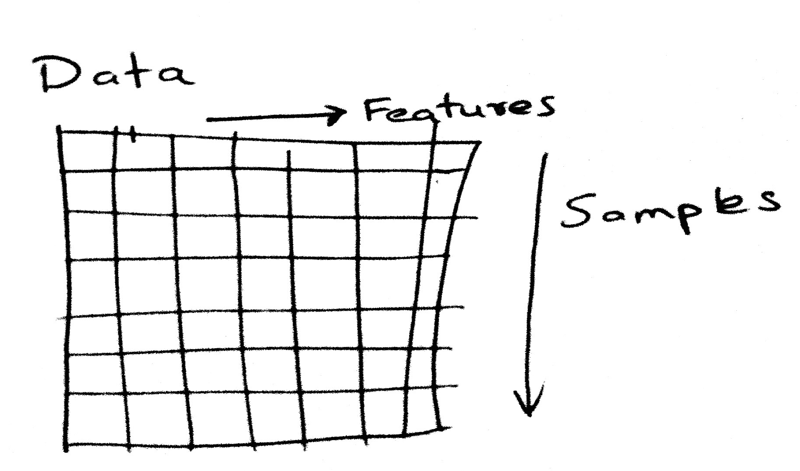

$$\renewcommand{\like}{{\cal L}}\renewcommand{\loglike}{{\ell}}\renewcommand{\err}{{\cal E}}\renewcommand{\dat}{{\cal D}}\renewcommand{\hyp}{{\cal H}}\renewcommand{\Ex}[2]{E_{#1}[#2]}\renewcommand{\x}{{\mathbf x}}\renewcommand{\v}[1]{{\mathbf #1}}$$**Note:** We've adapted this Mini Project from [Lab 5 in the CS109](https://github.com/cs109/2015lab5) course. Please feel free to check out the original lab, both for more exercises, as well as solutions.Note: We've adapted this Mini Project from Lab 5 in the CS109 course. Please feel free to check out the original lab, both for more exercises, as well as solutions.
We turn our attention to **classification**[^classification]. Classification tries to predict, which of a small set of classes, a sample in a population belongs to. Mathematically, the aim is to find $y$, a **label** based on knowing a feature vector $\x$. For instance, consider predicting gender from seeing a person's face, something we do fairly well as humans. To have a machine do this well, we would typically feed the machine a bunch of images of people which have been labelled "male" or "female" (the training set), and have it learn the gender of the person in the image. Then, given a new photo, the algorithm learned returns us the gender of the person in the photo.There are different ways of making classifications. One idea is shown schematically in the image below, where we find a line that divides "things" of two different types in a 2-dimensional feature space.We turn our attention to classification[^classification]. Classification tries to predict, which of a small set of classes, a sample in a population belongs to. Mathematically, the aim is to find , a label based on knowing a feature vector . For instance, consider predicting gender from seeing a person's face, something we do fairly well as humans. To have a machine do this well, we would typically feed the machine a bunch of images of people which have been labelled "male" or "female" (the training set), and have it learn the gender of the person in the image. Then, given a new photo, the algorithm learned returns us the gender of the person in the photo.
There are different ways of making classifications. One idea is shown schematically in the image below, where we find a line that divides "things" of two different types in a 2-dimensional feature space.

%matplotlib inlineimport numpy as npimport scipy as spimport matplotlib as mplimport matplotlib.cm as cmimport matplotlib.pyplot as pltimport pandas as pdpd.set_option('display.width', 500)pd.set_option('display.max_columns', 100)pd.set_option('display.notebook_repr_html', True)import seaborn as snssns.set_style("whitegrid")sns.set_context("poster")c0=sns.color_palette()[0]c1=sns.color_palette()[1]c2=sns.color_palette()[2]from matplotlib.colors import ListedColormapcmap_light = ListedColormap(['#FFAAAA', '#AAFFAA', '#AAAAFF'])cmap_bold = ListedColormap(['#FF0000', '#00FF00', '#0000FF'])cm = plt.cm.RdBucm_bright = ListedColormap(['#FF0000', '#0000FF'])def points_plot(ax, Xtr, Xte, ytr, yte, clf, mesh=True, colorscale=cmap_light, cdiscrete=cmap_bold, alpha=0.1, psize=10, zfunc=False, predicted=False): h = .02 X=np.concatenate((Xtr, Xte)) x_min, x_max = X[:, 0].min() - .5, X[:, 0].max() + .5 y_min, y_max = X[:, 1].min() - .5, X[:, 1].max() + .5 xx, yy = np.meshgrid(np.linspace(x_min, x_max, 100), np.linspace(y_min, y_max, 100)) #plt.figure(figsize=(10,6)) if zfunc: p0 = clf.predict_proba(np.c_[xx.ravel(), yy.ravel()])[:, 0] p1 = clf.predict_proba(np.c_[xx.ravel(), yy.ravel()])[:, 1] Z=zfunc(p0, p1) else: Z = clf.predict(np.c_[xx.ravel(), yy.ravel()]) ZZ = Z.reshape(xx.shape) if mesh: plt.pcolormesh(xx, yy, ZZ, cmap=cmap_light, alpha=alpha, axes=ax) if predicted: showtr = clf.predict(Xtr) showte = clf.predict(Xte) else: showtr = ytr showte = yte ax.scatter(Xtr[:, 0], Xtr[:, 1], c=showtr-1, cmap=cmap_bold, s=psize, alpha=alpha,edgecolor="k") # and testing points ax.scatter(Xte[:, 0], Xte[:, 1], c=showte-1, cmap=cmap_bold, alpha=alpha, marker="s", s=psize+10) ax.set_xlim(xx.min(), xx.max()) ax.set_ylim(yy.min(), yy.max()) return ax,xx,yydef points_plot_prob(ax, Xtr, Xte, ytr, yte, clf, colorscale=cmap_light, cdiscrete=cmap_bold, ccolor=cm, psize=10, alpha=0.1): ax,xx,yy = points_plot(ax, Xtr, Xte, ytr, yte, clf, mesh=False, colorscale=colorscale, cdiscrete=cdiscrete, psize=psize, alpha=alpha, predicted=True) Z = clf.predict_proba(np.c_[xx.ravel(), yy.ravel()])[:, 1] Z = Z.reshape(xx.shape) plt.contourf(xx, yy, Z, cmap=ccolor, alpha=.2, axes=ax) cs2 = plt.contour(xx, yy, Z, cmap=ccolor, alpha=.6, axes=ax) plt.clabel(cs2, fmt = '%2.1f', colors = 'k', fontsize=14, axes=ax) return ax We'll use a dataset of heights and weights of males and females to hone our understanding of classifiers. We load the data into a dataframe and plot it.We'll use a dataset of heights and weights of males and females to hone our understanding of classifiers. We load the data into a dataframe and plot it.
dflog=pd.read_csv("data/01_heights_weights_genders.csv")dflog.head()Remember that the form of data we will use always iswith the "response" as a plain array`[1,1,0,0,0,1,0,1,0....]`.Remember that the form of data we will use always is

with the "response" as a plain array
[1,1,0,0,0,1,0,1,0....].
**Your turn:** * Create a scatter plot of Weight vs. Height* Color the points differently by GenderYour turn:
#your turndflog_Male=dflog[dflog.Gender=='Male']dflog_Female=dflog[dflog.Gender=='Female']plt.scatter(dflog_Male.Weight, dflog_Male.Height, c='b',alpha=0.5)plt.scatter(dflog_Female.Weight,dflog_Female.Height, c='g')plt.title('Height function of the Weight (Male in blue, Female in green)')plt.xlabel('Weight')plt.ylabel('Height')![](data:image/png;base64,iVBORw0KGgoAAAANSUhEUgAAAxkAAAI9CAYAAABWqbVrAAAABHNCSVQICAgIfAhkiAAAAAlwSFlz%0AAAALEgAACxIB0t1+/AAAIABJREFUeJzs3XlcVOX+B/DPzLAMIDK4iygqKoMLmyISZiqm5lIa5r6k%0AWLefWWm2p6W3sm5eM/dSUcu6pWKahppJiZpKgaIt4A6CghvMyDIbM+f3B83EwMywODBon/fr5esl%0AZ33OOc/MPN/zbCJBEAQQERERERHZidjRCSAiIiIiovsLgwwiIiIiIrIrBhlERERERGRXDDKIiIiI%0AiMiuGGQQEREREZFdMcggIiIiIiK7YpBB9W7lypWQy+XYtWvXXW1jzdWrVyGXy7FgwYJ62ffKlSvV%0A2u7LL7/EwIED0aNHD8TExNQ4bXUhKyvL7O+BAwdiyJAhDkpN9el0Orz99tuIiIhAcHAwFi9ebHN7%0AR1ynRqNB9+7d8cgjj1hcv3btWsjlcoSGhkKr1VZav3PnTsjlcnz22Wc1Ou8vv/wCuVyOTz75pMZp%0Arum+BoMBOTk51T5+QUEB+vbti+TkZAB/X6NcLseyZcts7jt48GDI5XJMnTq12ucrb8qUKejWrVut%0A9rXkbu6zNdXNl3Vx7rtlTJOtf4GBgSgqKnJ0Uq2qi/s6ZcoUdO/e3W7Hu1+89NJLtfqNpnuLk6MT%0AQP88IpEIIpHorrexpkmTJliyZAn8/PxqtX91FRUVYebMmejcuTPeeecdm9ueO3cO77zzDtq3b48F%0ACxagSZMmdZq26li4cCFOnDiB/fv3m5a9+eabtb7v9Wnr1q3YunUr+vXrhyFDhqBz585Wt7V0nfXB%0A1dUVoaGhSElJgVKphJeXl9n6n3/+GS4uLlCr1UhJScEDDzxgtj4lJQUikQh9+/at0Xn9/f2xZMkS%0ABAYG3vU12HLt2jU8/fTTGDFiBJ555plq7fPuu+8iJCQEERERZstFIhEOHDiAuXPnWtzvzz//xJUr%0AV+46b9ozb9fXfb7XhIeHY+zYsVbXu7m51WNqHG/WrFnIz893dDIanJdeeglDhw7F8OHD0adPH0cn%0Ah+oIgwy677i5uWHkyJF1fh6lUom0tDSbBVyjc+fOQSQSYdq0aTZ/gOvT4cOH4ezsbLYsOjraQamp%0AGeP9fPXVV+Hv729zW0vXWV8iIyORkpKCU6dOoX///qblRUVFSEtLQ0xMDLZt24YjR45YDDJatGhR%0A5fVV1LRp03rJ/zk5Obhw4UK1tz9+/Dj27t2L3bt3V1rXrl07ZGZm4ty5c+jSpUul9Xv37oW3tzfu%0A3LlzV2m2p/q6z/caX19f3pdyIiMjHZ2EBqlVq1Z44okn8Pbbb2P//v33xMstqjk2lyKqJUEQqr2t%0AsTlMo0aN6io5/yj3yv2MjIyEIAg4efKk2fITJ05Ar9dj5MiRCAgIwNGjR83W37x5E1lZWZUCj4ak%0AJvkfANavX4+wsLBKQblIJMLQoUMhCILV2qZ9+/bdE834iKj6JkyYgKysLHz//feOTgrVEQYZdE+5%0AePEiXnjhBfTp0wc9evTA8OHDsX79euj1etM21vpVJCUlYeLEiQgLC0NkZCTefvttHDp0yGrfjy+/%0A/BLDhg1Djx49MHDgQKxYscJ0np07d2LQoEEQiUTYvn07AgMD8euvv1pM88CBA/HGG28AAF5++WXT%0Atsb26Hv27Km0j1wux4wZM0x/v/baawgPD0d2djaee+459O7dGyEhIZg2bRrS0tIq7X/mzBk8++yz%0AiIyMRFhYGGJiYkxvkI33Jzc3F1lZWZDL5Vi1apUprRULc9euXcPrr7+OBx98EN27d8fAgQOxePFi%0AKJXKStc5e/ZsHD9+HOPHjzc1i3n55Zdx/fp1i/emovPnz+P5559HZGQkevTogSFDhmDFihXQaDRm%0Aaf/2228BAA899JDV5iq2rtPo+PHjmDBhAkJCQtCnTx+8+uqruH37dqVj7dq1C2PGjEFISAh69uyJ%0AGTNmICUlpcrrCQoKgoeHB06dOmW2/MiRI3B3d0doaCgeeOABXLhwweweGY9dMcg4deoUnnrqKYSH%0AhyM4OBijR4/G9u3bzbax1q589+7dePzxxxEaGop+/fph6dKl2L59O+RyeaW8W1paitWrV2PQoEGm%0A5/D555+b1q9atQrTpk2DSCTCxx9/jMDAQFy7ds3qfTh37hyOHTtm9Q13p06d0LlzZxw4cKDSujNn%0AzuDatWsYNmyYxX0vXbqE1157zdTfKSwsDOPGjcPevXutpsfIYDBg8+bNGDlyJIKCghAREYHZs2fj%0A7NmzVe5r6T7L5XK8//772Lt3L0aPHo2goCD07dsXixYtqlFfhKSkJIwaNQpBQUGIjo7GihUrLPbb%0AKc9afw5j/7aKge6hQ4cwZcoUhIWFITQ0FBMmTMDBgwernUZ7yMvLM3239OjRAw8//DA++ugjqFQq%0As+2M93XXrl2mZ/Xwww/jq6++AgB88cUXGDJkCEJCQjBq1CgcOnTIbH9BEPDll19i/Pjx6NWrF7p3%0A746HHnoI8+fPt/h5r6g6vzvWVOwLZHwemZmZeP311xEZGYmgoCCMHTsWSUlJ1bhrZTWh7733HgYM%0AGICgoCDExMTg0KFDePLJJzFw4EDTdsbfjcTERPTv3x/BwcH497//bVpf3TxQ3c9JTX+nOnbsiMDA%0AQGzevLla1033HjaXIocpLi5GQUGBxXUlJSWVlqWlpWH69Onw9vbGk08+CS8vL5w4cQJLly5FWloa%0AVq9ebfVce/bswSuvvAI/Pz88++yz0Ov1+Prrr/H9999brKb97rvvTEGJl5cXvv32W6xZswZ6vR5z%0A585FeHg43njjDSxevBgRERF44oknrDZrefPNN3H48GFs27bNFOT4+/sjJyen2lXEIpEIGo0GEydO%0AREhICObNm4fc3Fxs2rQJM2bMwKFDh9C4cWMAZc2DZs2aBZlMhsmTJ6NZs2ZISEjAK6+8gvz8fIwf%0APx5LlizB4sWLIZFI8Nprr1lsogKU/bhOnDgRGo0G48ePR4cOHXDmzBls2bIFSUlJ+Prrr+Ht7W3a%0A/vfff8esWbMQExODmJgYpKamYteuXcjOzsbXX39t8xp/+eUXPPXUU5BKpZgwYQJatmyJ48ePY82a%0ANTh27Bg+//xzU3+brVu3IjU1FQsWLDBdd0XGba1dZ25uLmbNmoWxY8fi8ccfR3JyMr799ltkZWWZ%0ApfWDDz7A5s2b0b9/f4wePRrFxcXYuXMnpk2bhqVLl2Lo0KFWr0kikSA8PNxUcyGRSACU9cfo3bs3%0AJBIJ+vbti40bN+Lo0aOmAQF+/fVXiEQisyDjhx9+wNy5c9GhQwc888wzcHV1xY8//ogFCxbg7Nmz%0AmD9/vtV0rFu3Dh999BGCgoIwd+5c3LlzB1988QUAy/0U4uLi0LJlS0yaNAnOzs746quvsHjxYkil%0AUowdOxaDBw9GaWkpPvnkEwwdOhSDBg2y2c/o4MGDla6noiFDhmD16tW4ePGi2Wdp7969aN68OXr3%0A7l1pnytXruCJJ56Al5cXxo0bh2bNmuHq1avYunUr5s2bB5lMZvOcc+bMwcGDBzF8+HBMmjQJt27d%0AwrZt2zBu3Dhs3LgRYWFhVve1da3ffPMNJk6ciIkTJyIxMRFfffUV7ty5g6VLl1a5f15eHmbPno3R%0Ao0dj3LhxOHz4MNasWYOzZ8/a/I6zxlL/ti1btuC9995DWFgYXnjhBRgMBuzduxezZ8/Ga6+9hief%0AfLLG5zHSarVWv9fLf1dkZ2dj3LhxAIDx48ejZcuWOHPmDDZs2IATJ07giy++gIuLi2n7AwcO4Lvv%0AvsPUqVPRqFEjbN68GYsWLUJSUhIuXLiAiRMnQiwWY926dXjhhRewd+9etGnTBgDw73//G1999RWG%0ADx+Oxx9/HDqdDkeOHEF8fDwuXrxoClYsuZvfHaPy99/4/9jYWPj6+mL27NkoLi5GXFwcZs2ahT17%0A9qBjx4427++kSZNw/vx5xMTEoGvXrjh58iRmzZoFT09Ps9pdkUgElUqFN954A08++STc3NxMn62a%0A5IHqfk5q8jtlFBkZiU2bNiE/P79B9FUkOxOI6tnKlSuFgICAKv/J5XJh586dpv0eeeQRYdCgQUJR%0AUZHZ8dauXSvI5XJh7969giAIQk5OjhAQECDMnz9fEARB0Gg0QkREhBAdHS0UFxeb9isoKBAeeOAB%0As/MY9w0JCRFyc3NN2xYWFgrh4eFCdHS0aVnF89jyzTffCHK5XNi9e7fNZUYBAQHC9OnTTX+/9tpr%0AglwuF95//32z7datWyfI5XJh27ZtpmUDBgwQoqKihNu3b5uW6XQ64bHHHhMiIiIEnU5n2m7w4MFm%0Ax6u4bPLkyUJgYKBw6tSpStcTEBAgvPnmm2b7yuVyITEx0WzbmTNnCnK5XMjKyrJ6fwwGgxAdHS2E%0AhIQI2dnZZuuM+WXNmjWV7kdeXp7VY1q7pvJp/f77782WT5s2TZDL5cK1a9cEQRCEU6dOCQEBAcIH%0AH3xgtp1arRZGjhwp9OnTR1CpVDbPv2nTJkEulwunT58WBEEQMjMzhYCAAOGLL74QBKEsfwYFBQlz%0A5swx7TNy5Ejh0UcfNf1dUlIiRERECOPGjRP0er3Z8efPn292/OTkZCEgIEBYu3atIAiCkJeXJ/To%0A0UMYN26c6dkLgiBkZWUJQUFBglwuF3755Rezffv162f2OcvJyRHkcrkwdepU07KK57Fl2rRpQmho%0AaKXl5T8DFy5cEAICAoSVK1eabdO/f39h8eLFgiAIQteuXYUpU6aY1i1evFgIDAwULly4YLbP0aNH%0AhYCAAOHdd981LZs8ebLQrVs309/fffed2XMwys/PF6KiooThw4fbvCZL1x8QECAEBgYK6enpZtsO%0AGzZM6N69u6BWq20e05gvK6Zp3rx5glwuF37++Wer57aUzwWh7PMjl8uF1NRUQRAEITc3V+jWrZvw%0A/PPPm22n1+uF2NhYoXv37tX6XFVkTJNcLrf6fV5YWGjafsaMGULv3r3NvmcFQRB2794tBAQECOvX%0Arzcts3Rfk5KShICAACEsLEy4deuWafm2bdsEuVwuxMfHC4JQ9j3frVs3Ye7cuZXSPH78eEEulwtK%0ApdLsGsrf1+r+7lhTMd8Zv8+ee+45s+0SEhKEgIAAYdmyZTaPt2HDBot5ZM2aNUJAQIAwcOBA0zLj%0A9+S6devMtq1JHqjJ56Qmv1NGu3fvFuRyuZCQkGDzuunexOZS5BAikQgzZ87Epk2bLP577LHHzLbP%0AyMjApUuX8NBDD5nelBn/DRkyBIIg4IcffrB4rmPHjkGhUGDKlClwd3c3LZfJZJgyZYrFfcLDw9Gq%0AVSvT340aNYK/vz9u3Lhhh6uvvREjRpj93b17dwiCgFu3bgEoG4Xn2rVrGDVqlNlbIScnJ6xatQrb%0At2+Hk1P1KjDz8/ORkpKCBx98ECEhIWbrRo8eDT8/v0rNW9zd3c2q641pBMr6GVjzxx9/ICcnB6NH%0Aj4avr6/Zuqeffhru7u7Yt29ftdJdXW5ubnj44YfNlgUHBwOA6TknJCRAJBJhyJAhZnmupKQEQ4YM%0AgUKhsNpMzqhPnz5m/TKOHDkCkUiEqKgoAICLiwt69eqFEydOAADu3LmD8+fPm9YDZTUfCoUCgwcP%0AhlKpNEvLsGHDbOb/gwcPQqfTYebMmWbPvl27dnj00Uct7jNw4EB4eHiY/m7Tpg2aN29e6/x/5coV%0AtG3b1uI64a++Hf7+/ujcubNZ++yTJ08iNzfXalOp119/HUePHjWr+dDr9aZmLJZqRI0SEhIgFosR%0AHR1tdj8FQcCAAQNw8eJFXLp0qcbX6u/vD7lcbrasW7duKC0thUKhqHJ/b29vTJw40WxZbGwsBEGw%0AS3Om/fv3Q6/XV8rTSqUSw4YNg06nw08//VTr40dFRVn8Tt+4caPp+/fOnTs4duwYwsPD4erqapaO%0AqKgoeHh4VMrPfn5+ZvfV+MzDwsLQtGlT0/L27dtDEART80OZTIbU1FS8++67ZsfLz8+Hp6cnAOv5%0A5G5+d2wRiUQYPny42bIePXoAgOm73Jp9+/bBy8sLEyZMMFseGxtr9vtWXsXRm2qSB2rzOanqd6o8%0APz8/CIJQ7aHg6d7C5lLkMJ06dbI68kZqaqrZ35cvXwZQ1k/C2MyjPJFIZLVNeGZmJkQiETp06GAx%0ADYKFDqzNmjWrtEwqlUKn01k8R32pmC5jcwJjoco4Z4Gla61YeK9KTk4OBEGw2gysU6dO+PHHH6FQ%0AKCCTyQDAYnW3MY0Gg8HqubKzswHA4rlcXFzQrl07u/8INWnSpFIzEqlUCuDvjuVZWVkQBAHjx4+3%0AeAxb+c5ILpfD29sbp06dwpNPPomjR4/Cx8cH7du3N20TFRWFY8eO4fz586ZnWD7IyMzMBAAsWbIE%0AH374YY3SYfzsWMoT1p6ttfxfVb8Aa/Lz8+Hj41Pldo888ghWrlyJy5cvo0OHDqYmL8bgzxK1Wo2P%0AP/4Y6enpyMnJQXZ2NnQ6HUQikc08Z3y25Uf9MjLmi2vXrtlsumJJ+QKvUcXPqS3t27evlC+NecX4%0AObkbxut+8cUXLa6vTp62pXnz5lWOqJSZmQlBEJCYmGgxcBKJRLh69arZsop50hgwV1wuFpe9Oy3/%0A7J2dnfHjjz/i8OHDuHz5MnJyckwFXlv55G5+d6pSMZ9UN49cvnwZ/v7+pussv3/btm0t9v2peI9q%0Akgdq8zmp6neqPGOgx2F+708MMuieYAwEpkyZggEDBljcpvyb1/KMBaPy7XuNjIXKioxt5x3B1o9M%0AVX04SktLq7WdPRh/mMvf14o/fNVlKdCreC5Lz+9uVOcZGwwGiEQifPrpp1aHwa1OIbRPnz44deoU%0ASktLkZycXKkDdFRUFD788EP8+uuvuHr1KlxcXBAeHl4pHS+++KLVib0sFW4BmAJjS/fP2pwF9s7/%0AYrHYar4un1cfeeQRrFixAvv378czzzyDAwcOVKrVLO/gwYOYM2cOGjVqhMjISAwbNgwBAQHw9fXF%0AqFGjbKbJYDCgcePGWL58udX8V7FGojpq+xmwtb8xfbV5LsbvBCNjXlq8eLFZbW151QkI74bxeoYN%0AG4YxY8ZY3Kbi5622w1DrdDpMmzYNJ0+eREhICLp164bHHnsMQUFB+OKLL2xO+Ho3vztVqW0+0el0%0AVr8L3dzcLAYZFc9VkzxQm89JTX5/jL8jjvzNpbrDIIPuCca38GKxuNJbMo1Gg59++gnNmze3uG+H%0ADh0gCAIuXbpUqdr44sWLDhufWyKRQBAEqNVqs+VVVZfbYuzoaHzzXd4PP/yAxMREzJ49u1q1GsZt%0ArM2FcOnSJTRu3NhqFX1NGJvSWDqXVqtFdna2xTfxdc14D1q2bImAgACzdefOnUNeXl61JheLjIzE%0A/v37cejQIahUKrNaCgAICAhAs2bNkJ6ejvPnzyMsLMysIOHr6wtBECCVSivl//z8fJw8edJqcyTj%0Afbt06VKlbS5evFhl2u2hefPmVjsDl9ehQwcEBATgwIEDCA8Px40bN6w2lQKA//znP/D09DTNo2F0%0A+vTpKs/l6+uLrKwsdO/evdJQyKdPn0ZRUZFDJo6zNIO68TnZ+gw4OTlV+i4BKn+fGPO0l5dXpbyU%0Ak5OD8+fP2+UzbYvxe0qr1Vqs9fj+++9N29ytvXv34uTJk5g9ezZmz55tts5WE07g7n536kr79u0t%0Afr8LgoDMzMxqBT01yQN1/Tkxfi/U932k+sE+GXRP6N69O3x8fBAfH1+penr9+vWYM2dOpWELjaKi%0AotC4cWNs3brV7Ee4uLi4yhGPbDG+ebHVJMOWFi1aACgbkak8W2/WqtK9e3e0bNkSu3fvNhti1mAw%0AYP369Th48KDpvBKJxGbamzRpgl69euHo0aOVhr/cuXMnsrKyMHjw4Fqntbxu3brB19fXNBJVeevW%0ArYNKpar1uaq6TluM7a5Xr15t9havpKQEL774ImbNmmWxYFeRcb6MzZs3QyKRWBzx6IEHHsBvv/2G%0A9PT0Suv79u0Ld3d3bNq0CYWFhWbrlixZgtmzZ+O3336zeO7BgwdDIpFgy5YtZrUJN27cwHfffVdl%0A2q2x1CzFGl9fX1y/fr1ac2s88sgjSE9PR1xcHNq3b29zRm2FQoFmzZqZBRgGgwFxcXEAbNcKDh48%0AGAaDAStWrDBbfvv2bcyaNQvz5s2761qJ2rh+/Xqldv6ffvqpqW+QNS1atMCtW7fM+s0olcpK34sP%0AP/ywqXaufPM3g8GA+fPnY9asWcjNzbXPxVjRrFkzhIWF4aeffqr0/bdz50688MIL2LFjh13OpVAo%0AIBKJKs3PcubMGSQnJwOwnk/u5nenrgwbNgy3b9+uNKllfHx8tfr8ADXLA3X9Obl69SpEIpHdgkpq%0AWBxek2H8Qdi+fTtu3ryJzp0748UXXzS9cf7jjz9MwzoaiUQiTJ8+Ha+88oojkkx2UJ3CRvltxGIx%0A3nnnHfzf//0fRo8ejfHjx6NNmzZISUnBnj170K1bt0qdJY3c3d3xxhtv4PXXX0dMTAwef/xxGAwG%0AxMfH31VHbm9vb0gkEpw4cQLbt29HVFSUzWYGFa+5d+/eaNOmDeLj4+Hs7IyAgACcPHkShw4dstgm%0AvjokEgnefvttPP/88xg9ejTGjh1retP722+/4f333ze9IW/atCl+//13bN68GaGhoRbbvb/11luY%0AMmUKpk+fbhrC9rfffsPOnTvRtm1bzJ07t1bprMj4fJ955hnExMSYhrBNTk7G999/jx49epjNG1IT%0A1blOayIjIzF69Gjs2rULEyZMwNChQyESibBjxw5cvHgRc+fONQVttrRt2xY+Pj5ISUlBcHCwqR1y%0AeVFRUdi9e7dZp3Cjxo0bY/78+Zg/fz4effRRPPHEE2jSpAkOHTqEpKQk9O/f32oB1MfHB8888wxW%0Ar16NiRMnYvjw4SgsLMRXX31lmo+gNrV5xjxqDFwffvhheHl5Wdy2b9++OHbsGP7880+zOQOAyp+L%0ARx55BB9//DEOHTqEWbNm2UzDgAEDsGfPHjz//PN48MEHUVhYiO+++w7nz5+HRCKpFJCV9/jjj2Pf%0Avn3YsmULLl++jP79+6O4uBhbt25FQUEBPvzwQ7s30asOLy8vvPLKK5g8eTJat26NH374ASdOnDDN%0A52LNqFGjkJKSghkzZmDChAlQqVTYtm0bZDKZ2VwQ7du3x6xZs7B69WrExMTg0Ucfhbu7OxISEnDq%0A1CmMHTsWQUFBpu0PHjyIkpISq4ME1Nbbb7+NyZMnY/LkyRg/fjz8/f3x559/Yvv27fD19a3y2VdX%0A37594eTkhHfeeQeZmZlo0qQJ/vjjD+zcuRMSiQSlpaVW88nd/O7UlSeffBIJCQl4/fXXkZKSgq5d%0Au+LMmTPYvXs3nJ2dq/VZrkkeqOvPSWpqKiQSCWdGv085PMjYsGEDli9fjhdeeAE9evRAfHw8Zs6c%0Aifj4eMjlcmRkZMDd3b3SZC3V+WGnhqs6X4QVt4mKisLXX3+NtWvXYtu2bSgpKUHr1q3x9NNPY+bM%0AmWZV/BXHhh81ahQ8PDywbt06rFy5Eu7u7hg2bBh8fHywZMkSsy9JS+PKW0qTq6srXn75Zaxbtw7v%0AvvsuFi5ciNGjR1f7esRiMeLi4rBkyRLs2rULgiAgPDwcX3zxBV566aVK29tKU/l1AwcOxJYtW7Bm%0AzRrExcVBEAR06dIFn3zyCR566CHTdi+88AIWLlyIpUuX4rHHHrNY+O7SpQvi4+OxevVqJCQk4M6d%0AO2jVqhWmT5+OZ555xmJhubYiIyOxdetWrFmzBlu3boVKpYKvry/mzJmDGTNmVPohq27BuDrXacv7%0A77+PkJAQbN++HcuXL4eLiwv8/f2xbNkym3NkWLq+b775Bn379rW4PioqCmKxGDKZDF27dq20/vHH%0AH4ePjw82bNiAzZs3Q6fTwdfXF/PmzcPUqVPN3iZWzBOzZ89GixYtsGXLFvz3v/+Ft7c3nnjiCajV%0AamzevLlW+b99+/aYPn06duzYgffeew++vr6VmiMaDRw4EP/5z3+QnJxcKcioeC4/Pz8EBgbi7Nmz%0AlZpKVUzbwoUL4eXlhcTERCQlJaFp06bo3r07Fi9ejEWLFiE1NRVardZiIUgikWDdunXYuHEj9uzZ%0Agw8//BAeHh4IDAzEu+++W61Cj6XPaHXuna3jBQQEYNKkSVi+fDmys7Ph4+ODN998E5MnT7Z5rjFj%0AxqCoqAhff/01PvjgA7Ru3RoTJkyAr68vnn/+ebN9Z8+ejc6dO+Pzzz/H2rVrIRKJ4Ofnh0WLFmHs%0A2LFm2y5evBi5ubnVCjJsXX9FAQEB+Oabb7Bq1SokJCRAqVSiRYsWGDduHP71r3+ZNZ+xdtzqLPf3%0A98e6deuwfPlyrF+/HhKJBD4+Pnj++efRuXNn/Otf/8LRo0dNn7mKx6zJ787dqs79k0ql2LJlCz76%0A6CP8+OOP2LVrF+RyOdatW4dXXnml2t+T1c0DNf2cVPd3yujXX39FWFiY1fmO6N4mEqrzSrkODRs2%0ADMHBwXj//fcBlNVsREdHIzo6GvPnz8fixYtx5syZu2rWQv9sWq0WKpXK4lvW9evX46OPPsLnn39u%0A1tGW6H6hUqmg1+srtacGygrpW7duRWJiYp139o2NjcXNmzcrNfOghq20tBS9e/eu1GSSHCM/Px9e%0AXl4WO0qHhIQgKCgIn3/+uQNSVnNpaWkYP348li9fbrMpIN27HN4nQ6vVmnVUEovFaNSokalt4dmz%0AZ63ORkxUHQUFBYiIiMBbb71ltlyn0yEhIQEuLi42230T3cvS09PRq1cvfPrpp2bLi4qKkJiYiBYt%0AWtR5gAEA//d//4fz589Xq1M2NRxbtmypce0f1Z1ly5YhODi4Uh+Rffv2Qa1WIzQ01EEpq7lt27bB%0A39+fAcZ9zOHNpSZNmoQ1a9YgOjoaPXr0MLV1njdvHoCyEVxcXFwwatQoXLhwAT4+Ppg1a1aVwxMS%0AGbVs2RL9+/dHfHw8dDodwsLCUFJSgoSEBJw9exavvvqqxbe8RPeD4OBgyOVyrFmzBjdv3kRAQACU%0ASiW++eaAlGSPAAAgAElEQVQb5Ofn46OPPqqXdPTq1QuDBw/GihUrTB2zqeFzcXHBf//7X0cng/4S%0AExODnTt34sknn8QTTzwBb29vnD17FvHx8WjTpk2t+67VtytXrmDPnj1Yu3ato5NCdcjhzaXUajVe%0AeOEFJCUllSVIJMKcOXPwr3/9Czdu3EC/fv3g5+eHefPmwdPTEwkJCYiPj8d//vMfm+OnE5Wn0Wjw%0A2WefYc+ePcjJyYGLiwsCAgIwdepUDBo0yNHJI6pTd+7cwYYNG3DgwAHTsLvBwcGYOXMmevXqVW/p%0AyM/Px6OPPooPP/zQ4ghbRFS1M2fO4NNPP8Vvv/0GpVKJ5s2bY+DAgZg1a5ZpYtSGbs6cOfD09MQ7%0A77zj6KRQHXJ4kDFx4kRcunQJc+fORceOHXHs2DGsX78eb7zxBsaMGYOUlBR06dLFbLSdp556CllZ%0AWThw4IADU05ERERERJY4tLlUamoqTp48iRUrVpjGwA8PD0dpaSmWLFmC0aNHW3zb9eCDD+Lo0aNQ%0AqVQ1mgQmNTXVbmknIiIiIrqf9OzZ027HcmiQkZeXB5FIVKlTWc+ePbFhwwZkZ2cjNTUVY8aMgbOz%0As2m9Wq2GVCqt1SyT9rx59M+Qnp4OAOwcTjXGvEO1xbxDtcW8Q7WRnp6OkpISux7ToaNLtW/fHoIg%0AVKphSEtLg0QiwZUrV7Bo0SJTfw2jH374oV7bERMRERERUfU5tCajW7du6N+/PxYtWgSFQgF/f38k%0AJydjw4YNmDZtGqKjo9GzZ08sXLjQ1Llp69atOHfuHOfNICIiIiJqoBw+hO2KFSuwbNkyfPrpp1Aq%0AlfDz88Nbb71lmnFy7dq1+Oijj7By5UooFAp07doVmzZtYjUgEREREVED5fAgw8XFBa+++ipeffVV%0Ai+sbN26MhQsX1m+iiIiIiIio1hw+4zcREREREd1fGGQQEREREZFdMcggIiIiIiK7YpBBRERERER2%0AxSCDiIiIiIjsikEGERERERHZFYMMIiIiIiKyKwYZRERERERkVwwyiIiIiIjIrhhkEBERERGRXTHI%0AICIiIiIiu2KQQUREREREdsUgg4iIiIiI7IpBBhERERER2RWDDCIiIiIisisGGUREREREZFcMMoiI%0AiIiIyK4YZBARERERkV0xyCAiIiIiIrtikEFERERERHbFIIOIiIiIiOyKQQYREREREdkVgwwiIiIi%0AIrIrBhlERERERGRXDDKIiIiIiMiuGGQQEREREZFdMcggIiIiIiK7YpBBRERERER2xSCDiIiIiIjs%0AikEGERERERHZFYMMIiIiIiKyKwYZRERERERkVwwyiIiIiIjIrhhkEBERERGRXTHIICIiIiIiu2KQ%0AQUREREREdsUgg4iIiIiI7IpBBhERERER2RWDDCIiIiIisisGGUREREREZFcMMoiIiIiIyK4YZBAR%0AERERkV0xyCAiIiIiIrtikEFERERERHbFIIOIiIiIiOyKQQYREREREdkVgwwiIiIiIrIrBhlERERE%0ARGRXDDKIiIiIiMiuGGQQEREREZFdMcggIiIiIiK7YpBBRERERER2xSCDiIiIiIjsikEGERERERHZ%0AFYMMIiIiIiKyKwYZRERERERkVwwyiIiIiIjIrhweZBgMBqxfvx6DBw9GaGgoxo4dixMnTphts3bt%0AWgwYMAAhISGYMWMGLl265KDUEhERERFRVRweZGzYsAEff/wxxowZgzVr1qBt27aYOXMmMjIyAACr%0AVq3Cp59+ipkzZ2LZsmUoLCzE9OnTUVRU5OCUExERERGRJQ4PMnbt2oVHH30UTz/9NCIjI7FkyRI0%0Ab94c8fHxKC4uxsaNG/Hcc89h0qRJGDBgAOLi4lBUVIT4+HhHJ52IiIiIiCxweJCh1Wrh4eFh+lss%0AFqNRo0ZQKBQ4ffo0VCoVBgwYYFrfuHFjhIeH48iRI45ILhERERERVcHhQcakSZPw7bff4vjx4ygq%0AKsJnn32GixcvYsSIEbh8+TIAoF27dmb7tG3bFpmZmQ5ILRERERERVcXJ0QmYMGECTpw4genTpwMA%0ARCIR5syZg/79+2PdunVwcXGBk5N5Mj08PNgng4iIiIiogXJ4kGEcLWrRokXo2LEjjh07hpUrV6JR%0Ao0YQBAEikcjifmJx7Sph0tPT7ya59A+kUqkAMO9QzTHvUG0x71BtMe9QbRjzjT05NMhITU3FyZMn%0AsWLFCgwePBgAEB4ejtLSUvz3v//F3LlzodVqodfrIZFITPsVFxfD09PTUckmIiIiIiIbHBpk5OXl%0AQSQSITg42Gx5z549sWHDBojFYgiCgJycHPj5+ZnWZ2dno0OHDrU6Z2Bg4F2lmf55jG+DmHeopph3%0AqLaYd6i2mHeoNtLT01FSUmLXYzq043f79u0hCAJSU1PNlqelpUEikeDhhx+Gi4sLDh48aFqnVCrx%0A66+/IjIysr6TS0RERERE1eDQmoxu3bqhf//+WLRoERQKBfz9/ZGcnIwNGzZg2rRpaNmyJSZPnozl%0Ay5dDJBLBz88Pn3zyCRo3bowxY8Y4MulERERERGSFwzt+r1ixAsuWLcOnn34KpVIJPz8/vPXWWxg7%0AdiwA4MUXX4REIsHGjRtRUlKCsLAwfPjhh2jUqJGDU05ERERERJY4PMhwcXHBq6++ildffdXieolE%0AghdffBEvvvhiPaeMiIiIiIhqw+GT8RERERER0f2FQQYREREREdkVgwwiIiIiIrIrBhlERERERGRX%0ADDKIiIiIiMiuGGQQEREREZFdOXwIWyIiIiKi6igoUGLjxmQoFFLIZGrExkZAJvNydLLIAtZkEBER%0AEdE9YePGZCiV0ZBI+kGpjEZcXLKjk0RWMMggIiIionuCQiGFWCwBAIjFEigUUgeniKxhkEFERERE%0A9wSZTA2DQQ8AMBj0kMnUDk4RWcMgg4iIiIjuCbGxEfDySoRefxheXomIjY1wdJLICnb8JiIiImpg%0A2MHZMpnMC/PmDXZ0MqgaGGQQERERNTB/d3CWQKnUIy4u0a6FawYxVNcYZBAREdE9734rNCsUUkgk%0AddfBua6DGCL2ySAiIqJ73v02tGldd3DmKE1U1xhkEBER0T3vfis013UHZ47SRHWNzaWIiIjonieT%0AqaFU6iEWS+6LQnNdd3COjY1AXFyiWfMyIntikEFERET3PBaaa4ajNFFdY5BBRERE9zwWmu/e/dZ5%0AnhyLfTKIiIiI6L7rPE+OxSCDiIiIiO67zvPkWAwyiIiIiIgjTpFdMcggIiIiojofNpf+Wdjxm4iI%0AiIjYeZ7sijUZRERERERkVwwyiIiIiIjIrthcioiIiKiecC4K+qdgkEFERERUT/6ei0ICpVKPuLjE%0AeukHweCG6huDDCIiIvpHq88CuEIhhURS/3NROCq4oX8u9skgIiKif7T6nOnaUXNRcKI9qm8MMoiI%0AiOgfrT4L4I6ai4IT7VF9Y3MpIiIi+keTydRQKvUQiyV1XgB31FwUsbERiItLNGsSRlSXGGQQERHR%0Afacm/SzqqgDekDpbc6I9qm8MMoiIiOi+U5OOznVVAK+PztYVA5m+fWVo3NjTrucgqg0GGURERHTf%0AcdQoTvWdhoqBzI4dX2L69HAADasmhf552PGbiIiI7jsNoaNzfaShYqf1wkIP07r6HDWLqCLWZBAR%0AEZGZ++ENeEPo6BwbG4FVq75DUlI+ADX69WsFhUJp13tZsdO6p2exaV1VNSn3w3OmhotBBhEREZm5%0A1yZus1ZYdnSaZTIvuLm5ITJyKsRiCXQ6+9/LisHU8OHycue3PWrWvfac6d7CIIOIiIjMNIT+DDVh%0Aj8KytUCl/HJn59sQi8XQaLyr/ea//L3UaIqwf/9FKBSH7VZzUDGYSk9PN/2/qtqce+05072FQQYR%0AERGZqc95I+zBHoVla4FK+eVHjuwD4I+oqC42g5nygUlaWhrk8u7w8GiCkyePAYiGRGJ7f3upqjan%0A4nN2dS3A0qUH2HyK7IJBBhEREZlpCP0ZaqKqoKg6fQ+sBSrll2u1HhAE10rbVFQ+MAkM7In09DiE%0AhIQAyEPPngNM++flwaGF+orPuaTEwOZTZDcMMoiIiMiMtTfgNe0oXF8di2Ni5HjuudVQKLwhkxVg%0A1apRZuvLF/rz8vIxZcpnCAkJMUuTtUCl/HIXl2IAGgC2R4vKywNOn86EWu0EqbQUwcFyvPNOPyxd%0AqoZS6WzaPyMjA25uz9os1NflPaz4nBcsOMzmU2Q3HMKWiIiIqqWmQ6LW1xCqO3ZkIDT0WURHT0Fo%0A6LOIj89AQYESS5cewIIFh7F//1VotToAwOnTKVAoRlRKU2xsBLy8EqHXH4aXV6Kp9qb88n791Hjo%0AofRK21SUkZEBtbodxGI/qNXtkJGRYfEcAQGdzIaftVSor89haBvCsL90/2BNBhEREVVLTfs+1FfH%0AYkvnKV97ARQjNfUKoqK6QKVygZubUClN1mpvajNKVUBAJ5w58xM0GimkUjUCAjpZPNbSpQeq7PtS%0An52z77VmctSwMcggIiKiaqlph/D66kBu6TwKhRRabRFOnUpGcbEEt279D8HBvSGTXUBgYNmM2BXT%0AZK+mSa1bO8HdPdqUHi+vRIvbVadQX/7aiovzkZGRhgULUCfNzxrCsL90/2BzKSIiIqoWa02K7LW9%0APdMlk6lx8uQxaDTRcHYeBD+/iWjd2glbtkxDy5Y/W0yTvZomVfe6jYX6d97ph3nzBlsMGMofKyPj%0ACwQGxnIGb7onsCaDiIiIqqWmb7rr6824pfPExkZg//5vIAg5kEpLERbWDgpFns002atpUvlzFBQo%0AERdX+9qR8sdasACQSDzuOn1E9YFBBhEREd13ZDIvDB3aBkqlb7lmS5Wba1Wc0yIwsCfc3T3s1rzL%0AnrNq32vzl9A/G4MMIiIiavAs9ZcQBNjsQ2Gtz0PlyfImw8OjCeTy7qY5LSpuv3r1ISQl5QNQo1+/%0AVnjuuYHVqpGwZ8dtdsymewmDDCIiImrQCgqUmDr1MygUQXBzUyM4uJepP4KtWgJrTaOMtQtarQ6/%0A/+6OP/44gE6dwhEW1gYhISF4551+lbZPSgqEVtsJgIDDhw/A3T0ZM2ZEVNlR3J61D+yYTfcSBhlE%0ARETUoJUV5EdAIukIjUaP06cTIZWW1QgYawk0miLs338RCsVhqwV+Y43Exo1ZAPIBNIcgtIbB0Aoa%0ATQekpl7A0KGWh5HVaFwhFpeNl6PVekChqF5TKNY+0D8VgwwiIiJq0BQKKdzcBGg0BohEEqhULpDJ%0A1FCpVEhKOgeNxhV5eUfRpk0/SCTdrBb4jTUSQFeUlrbHnTsJ8PJqBVfXMygbcPMPxMZOrHR+mUwN%0AV1cNtFoDAAEuLsWQySTVagrF2gf6p+IQtkRERNQgGWftPnHiInS6PyEWn4Fefwky2Zm/+mQYAFyE%0ASJSF0lI1jMUaawV+Y41E69Zt4ex8BcA1FBZuQ7NmneDiUox+/VpZrP1QqVTQ6Q4hN3cxRKLl6NdP%0AbRomtyHMkF1+dvNNm37FnTuFDkkHUXmsySAiIqIGydgcqWdPHVJTrwBIxIgR/oiNnQaZzAt37nhA%0AJPKHIDjBySkHanVZrYK1Av/fNRIu8PVtD0ADsXgInJzaANBAJEq3mAatdgT69/97Yj1jzUR1m0LZ%0Aa5I/a8o32yos7IIdOw4gIqK33Y5PVBsMMoiIiKiSuykY12YkKEuMzZGkUgmiorpAr8/DvHl/d8rO%0AyMiAWj0AYrEzmjb1gFK5HMXFDyIjIwMBAZ2wdOkBs/PExkZApTqEpKSfAajRtq0L+vQJM/Xv0Gjy%0ArKYBqFxDYqkplKVrt+cwtrbukzGNhYUedjs2UW0xyCAiIroP3e3b87spGP89elMR9u8/hv37v4FU%0AWojAwFi4u3tU+3hVjcwUENAJZ878BI1GCk9PNaKiItGqFeDm9izE4srplsm8MH/+Y5g/v2z/pUsP%0AQKl0BmC79qMmo0NZum/2HMbWkopp9PQstuvxiWqDQQYREdF96G7fnt9Nwdi476lTydBqB0Ony8TF%0Ai2fwxx9/olOnJggLawOFQlopEIqJkWPHjgzT32PGyBEfb705UuvWTnB3jy432V7VBfry53R1VcHZ%0AeTe02qZWmzvVdHQoS+ev60n0yqfR0zMTMTFyux6fqDYcGmT88ssvmDp1qsV1IpEIP/74I/Lz8xET%0AE1Np3fTp0/HKK6/URzKJiIjuOXf79vxuCsbGfTUaKQAR8vIyoVRmQ6fzA2CAVnsBI0eqKwVCzz23%0AGqGhz5r+jo+3HRhZCgDi4pJtprv8ObXassBkwYJ+Vs5Q89Ghyt+34uJ8ZGSkQS6XIyNjNQICOqF1%0Aaye7D2NbPo3p6c3temyi2nJokNGtWzds27bNbJlarcbzzz+PHj16oHXr1jh27Bjc3d2xefNms+1a%0AtGhRjyklIiK6t9zt2/O7md/BuK+Ly0UArWAw5MHZeQRUqq24fbsNCgvT8Nlnc7BhQ2aFQMgbYvHf%0Af+fllTVpstbkq3zhuqBAibi4ZOTlwWaBvq6bLpW/bxkZaaYmYqGh0Wadxonudw4NMjw8PBAUFGS2%0A7L333oNYLMaSJUsAAGfPnkWXLl0qbUdERETW3e0kcHczv4Nx39jYsoL/uXM5uHNnKySSCIhEOri5%0APYr4+AzIZKgQCBWguDgfp0+nQKVywe3bRzB8+Fx4eDSpssnX6tWHkJQUCI3GFa6u7eHqegqAN5Yu%0APW0WoNR106Xy923BAkAiKeuEXRcBDVFD1qD6ZFy4cAH/+9//sHDhQshkMgB/BxlERERUfXU5CVx1%0AO5Ub0/DDD79BqRwCQegEQAcXl11QKPwwb14w4uIS/6p9yICfX2skJCyDl9cUeHpK4OU1CadPpyA0%0AtB9OnboKleo6gAMWz5eUlA+tthPEYjG0WgO2b/8W48ePqdQnpT5n4K7rgKaiggIlNm36FYWFHujU%0AKdvuQ+US1USDCjKWLVuGDh064IknnjAtO3fuHFxcXDBq1ChcuHABPj4+mDVrFkaNGuXAlBIREd2b%0A7DFnQ007lXfp0hmpqTeg0TSFk5Me3t7NIZOpTUHI0qUH4Ob2LDSaIqhUN6FW/wlPT3dIpS2gUrng%0Al18ykJWVC6AU+/frUVLyIxYsGF3hLGoAwl//F6DT6aDRFOHUqWRoNFK4uFxEbKzSavBVF3NZ1GdA%0AA5Q9l8LCwX+NrNXE7kPlEtVEgwkysrOz8dNPP+Hdd981Lbtx4wYKCgpw5coVzJs3D56enkhISMBr%0Ar70GkUiExx57zIEpJiIiuvfYY86G3NxSnDmTCI1GCldXNYKCSm1uf/lyJjp1moEbN65DqwWKi39G%0AbOxLAMoK97t3X0Z29kkolb/BYOgDDw8/aDQyiMV7IZNdxu+/F0EkGoPWrQdAq3XG4cPrzI5fUKCE%0ARFKC7OzNEIm0aNu2Obp0keDkyWPQagcDEAFohbi4ZKvXWpv7UlVgUpe1SZbOn5tbatanhc2zyJEa%0ATJCxfft2eHl5YeTIkaZlXl5e2LhxI7p06YJmzZoBACIjI3H9+nWsXr26VkFGenrl2TyJbFGpVACY%0Ad6jmmHeotuoy71y4UAixON/0982bhWbnUSoL8c03GSgs9ICnZzFiYuRo3NjT7Bipqadw585siMVO%0AKCoqRWrqKqSnd7B6zmbNZMjPPwBvbze4uqrQpUtn5OZeQ27uNWza9Cuysu5Ao+kGrbYIgtAWxcWp%0AKC72hbNzJj74oA/mzEmGTucDrVYPjaYUWm2pWZo3bfoVPj5PoLCwAGq1GCLRbrz8ciQWLPgDOp0f%0AXF116Ny5GS5cKLR6T6u6L5aUNU0qqzm4dUuPxYu/xfTp4Tb3saeK58/IiEOnTkEQiyW4fj0Pnp6Z%0AHG2KqsX4nWNPDSbISExMxKBBg+Ds7Gxa5urqigceeKDStg8++CCOHj0KlUoFNze3+kwmERHRPc3T%0AsxiFhdYnbisLMAb/NXO0Hjt2HMD06eFmwUdxsQecnM5Dr3eHVKpDhw4dbZ6zeXNAKn2g3DkPmI6X%0AmKiCVtscYvFBiERXAHjBz68lwsObwNPTC4IAODkV4MqVMxCLBTRvLsDJqQArVvxpCoIKCz3g5uaG%0AkJCyMoHBIEebNq3x4IM5uHnTCefOZeDUqRw0bpyBO3famgVNxnSkpSkhEiUhMDAULi4eVie0K38f%0A0tKU6NZND1dXiUNm2i4s9DCruejQoSM8Pb/HnTuN4OWl4XwZ5FANIsjIzc3FxYsX8dprr5ktz8zM%0AxPHjxzFmzBiz4EOtVkMqldYqwAgMDLzr9NI/i/FNFvMO1RTzDtVWXeadN97wQVxcWRMbZ+fbEIu9%0AsHFjNjIyMhAQ0AmnT+vRs6cMUmlZUxu9vj0CAwOxdOkBSKWT4O4ugZfXPgCNERbWDidPXkF2tgJ7%0A91rvaFz+nGXNih5DXFwypNJJaNo0EQUFegC94Of3IG7d2ovmzbXo1KmNabs+fWbDzc044lQioqPL%0ARpwyGPQ4ejQRnTp5QqlsUm5SPk8EBgbijTd8MGXKZxCLR6BpUwEhIf1x9OjPmDevtyltS5cegCDE%0AQCq9gsxMJW7d+gpTp/bA7NmPWbyW8vehUaN9yMoqRlRUG9N5W7XysXvfDms6dcqucN1NMWxYCAB+%0A71DNpKeno6SkxK7HbBBBxpkzZyASiRAcHGy2/Pr161i0aBGaN2+OQYMGmZb/8MMP6NWrV30nk4iI%0A6J5TUKDE6tWHcPBgDq5duwkfn9YYNKgVYmPleO65NCgUQbh+/RqaNp0IjeYkgFZITb2CqKguZiMi%0AlZ9fIizsAZw8+T8kJ0tw7ZoHmjbti/37XaFSHcL8+ZWbMstkXpgxI8JU+I6LS0ZubikaNZIgNDQC%0AOt2PyMxcDw+P1hg2rAlmz+5vKpgrFFJ4eDRBaGgETp1KRmFhC6SkXIdIdAOlpW5wdb2KDRuisWXL%0Ad0hKygegRr9+raBQlHXyDgkJgUTSESqV2uIIVQqFFKdP58FgCICfnxh6vRpublqrgYGl+6DX51WY%0ADPDu+rxUl6WO5bm51+rkXEQ11SCCjPPnz8Pb2xuNGzc2Wx4eHo5evXph4cKFUCqVaN68ObZu3Ypz%0A587h66+/dlBqiYiI7h0bNyYjKSkQ2dmu0OmexpUrmUhKEpCcvAsKxQhIJB2hVt/GjRupcHGRok+f%0A4EoF54ICJX755TjOnbsKkcgNfn4SDBzYCocPK9C69QSIRGXDxiYl/Yz5862no3zh++zZ1QgN1cPN%0AzQsPPvgoRozwsFgYNw4De+pUMtTqAXBzu4XMTBFEouZo21YGoBU++ywVx45dwrlzbVBUdAPnznni%0A55834OuvZ5bb/yrU6nZwc7sIpTLaVPiXydRQqUSQSMQQBD3c3LQ2O0yXH5bW1bURhg71x7x5f88Y%0AXteT/ZmnpfJkhBcuFMLTsxhvvOHD4WvJoRpEkHH79u1KAQYAiMVirFmzBh999BFWrlwJhUKBrl27%0AYtOmTawGJCIiqgaFQgqNxhWlpe4Qi52h17tAowHUam+4uQnQaAxwdhZBrdYgNzcDx44ZIJPpMG9e%0AsKmQ+u9/78SFC04oKOiMsmFiSyASKVBx2Niyv80ZR0Dates63NwyERbWBlKpFHK5HF5eVQ/vanxb%0Ar1Jdh5vbFQwbFo1du75EQQEAeMPPrwm+/z4D6el9UFLSCIIwEHr9Lzh7Vo64uOQK+19EaGiEWeE/%0ANjYChw59BoUiCG5uWgQH94JMlmKW9vJprGpY2vqeG8PIGMSJxfkoLNTbHEmLqD40iCDj7bfftrqu%0AcePGWLhwYf0lhoiIqIG5mzkcZDI1XF01cHIqgU6ng5OTFq6uAqTSAgQGtsKvv55BaekfUChOwsnp%0AcTg5NUFgYCzi4n42FVKPHMmDRhMKkagbDAYBSmUKlEo39OvXCocPH4BW6wEXl2L07u2FpUsPlOvv%0AIf6rCVMrODk1hlrdDsnJF+DkJAFw8a9agGCb1/L32/oDUCrbQyyWwMVFAm/vCWjXrgX0eh3OnTsO%0Ag6EzBKEUQHOo1TqIRMJf96v8/tGVCv8ymRe2bJlWrs9IiilwsDasra3Ce33PjWFUnzUoRNXRIIIM%0AIiIisu5u5raIjY2ASnUIOl0Orl07AR+f1njooVaYMmUU4uN/hpPTRXTs2A8ikRQGQ1dcvXoOERF/%0AF1ILCpTIyirC7ds5MBiUEIkkUKslSEg4gn37noK7ewYUCkAmk6CkxA1KZTS0Wh22bt0Bnc4fIlE7%0AtG7dFS4ueyGV/oQLF36Hv38gwsImIi/PCVOmxCEkJMRq8GQMsHJzS3H27GrI5XL4+EghFuejtFQF%0AJycVSks9IAgG6PU3YDA4QyS6iYICN/zvf8dw4sQf6NevFaZO7Yn4eMuFf2vzWdSm4G7pWHUx0V/l%0A85bVoACo1xoUImsYZBARETVwtgq7lgqwggCzZbNn98f8+ZUL7wBQWCjG2bNforBQDyATEkkxjhxR%0A4/HHNQDKjtOmjRx5eR1QXPwtDAY9XF1voaioPT7/PNVs5u0FCw5DIpHg1KlMaDRtALSGRKJFbm4R%0A2rZtij59oiAIVxEV9QhUKiV27vwGt2654o8/rqFdu84WO44bA6yyTuJ6eHklYuTIDlAqO0MsluDn%0An8+hSRMp9PrfoNFcRmlpMZycGkMQCqHXB6O4eAC2bNmCw4cVGDq0TZU1J+XZq+mTPSZArIqxBuXm%0AzbI+GbGxnLCYHItBBhERUQNnq7BrqQALoMpCrXG/W7f+B4WiHYAoAK7Q63OQkbEDMTEvYenSA9i1%0A6zqcnBqjWbMT0GpvQRBGoHnzLnByKsLhw/EW06lWO8HJSQVB0KB163bIyUlBbu6POH78IiSSfBQX%0A5+P06RTcvNkfYrEGen0HZGf/gH37ziM5eQUUCm/IZAVYtWqUxQBr3rxgU5Mk4A+MGDEO6ekZEAQv%0ASCQRaNVKhqtXm//VN+ML6HQPorRUj+vXu5o1AwNs1zLYq+lTfTRlMtagGIc/ZqdvcjQGGURERPWo%0ANrEL9zAAACAASURBVE1nbBV2FQoptNoinDqVDI1GCheXiwgO9kOjRrYLtcaCb2mpO4ACAJ0hEkkg%0AEnlDEI5hx44MKJXRcHPLhFrdDu3bfw+FQgODoSlcXFRo1coLgPlxjel0db2Ktm09IRKlo7T0Gjw8%0AEjF8eNncFvn515CQsAyFhS2g012ATPY4RCIJSkulOHfuGgID/wODoQRnzhxBz56b0KSJAB8fD/Tp%0A0w0uLs5wdr5tNudGv36toNO1wQMPtIMg7APgBZFIDLFYi6KiDOh0PSCR+AEA0tLyEBEhNXsGaWlp%0ACAyMhbu7R6WAzFozqpo+V0d1BidyJAYZRERE9ag2TWdsFXZdXQuwdet3UKuHwskJ8PNrirNnExEa%0AartQ+3fBVwexWAODQQ+RSAJADZGo6K8ajHNQqzU4d+4X6PWn0bRpPnx8bkMkKmsy9dBDTQBULGAD%0ACxbI8cwze1FY2AKenjfQt29XiMXuOHbsIi5c+BWC8Bg6d24EsdgLRUWJcHKKhFR6GkBbiMXOuHo1%0AGUplf+j1raDRuOG333bg2rV9iIlpj19+uY7i4tFwcxMQEtIKjRsfNI1S1a+fGiJROpRKN4jFvyE9%0AvRRFRRfRqFEgfHyaQaVSQiZTmz0DhcKAtLQ8PPCA/13VMlh7rgUFSqhUKhw//jmMc3jExg6s1TmI%0A7iUMMoiIiOzM1lttezedEQQDSkvLAgNAC0BscXjYimkaM0aO+PhEtGt3GwUF16BS/Q+C0Ahi8Q10%0A6hSI69cluH5dA53OEzJZZ2g0mdDppLh9Ox6DBoXj8uVMXL/eFiNHrkB+vhY3bzqjWbNAeHjosWbN%0ANpSWPoXCQuDGjUKcP78BHh5N4enZEYWFtwG4QiwuRLt2gbh69Tb8/b9Hv37t8PPPl1BSokNpqRQG%0Agxh6/R0AYWjUqD9atvTF779/h+LinpBIOkKjMSAt7TIiIrwxf34/s3tSdq2AXn8ROl0oxOIU6HSN%0AIJOdQWzsNCxdetr0DNzctFCpRADursO0tee6cWMytNoRiIoqC/jc3RPZlIn+ERhkEBER2Zmt2oqq%0Ams4UFCixdm0SUlIK4eLyI6RSNXr06IFWrWCxaZVW2xSdOnlAo/H9q9nRJbRqhUo1H//+904cOSKF%0AVguIRBocOPAVeveORFSUN8Tiprh8+SacnRVo0UICZ+dgSCR+uHHja+j1LaFQ/AiZbCQKC/ehtLQV%0Atm79CR07Dseff16DTheJGzd2QiqdCq1WgI9PO1y5cgBicVPodHoIgh+A9lCrT0Ot/g0iUU94e/fE%0A7duXYDD8jO7dgS1bJkIm80JW1hXMnr0WYnERnJ3VALxQUFAAZ+dsODk1h0LhDTc3LTSasloXlUoE%0AmUxtFkA5O9/GsWOXUFzcE05OPgAuQyIpxPDhLoiNnQaZzMvsGQQH90JGxhfQ60MqNUWrCWvPlUPL%0A0j/V/7P35tFx1Gfe76eqeu+WurVZi21JtmxLwgbLC9jgYAgmjIFACMuEYYBM4rmTOzeQ9z2XO3fu%0ATOCemcnMeyaZ+NxM4sySiSEBsuIAYTUGg2Uw3iXLq2RbtiRbu9TqbvVSe90/qiUkL+wwmczvc46P%0A7a7qqlJ1n6Pft77P93mEyBAIBAKB4GPm3RaW7xUmfvTR3ezbV4qu38Pg4NvY9lJse5xgsJYNG14g%0AGAye45CoLF68nLa2reRyvsmn9TDdUfnVr9qIRv+EePw4o6MeZDlLU9NiWloqUJQivvzlG7Fti927%0Av8vx48ew7RSKohMMlmHbdWSzKaACTVPR9T9laKiS0dEF2PZhNK0Ww6gind6DbZs4ThmmWYDjeHHz%0AHgaWZSHLFfj9MXK5g8AcJKmKxsbPTYaxa2qqef75b5BIJLn77h+zZ08A2+4jErkKyBKLjdHQcPN5%0AP+vGjbsZGFhOW9s+Tp6Mk0jEaGxcgm1H8Pu3smLFjGlTuad+BhUVKt/85pc/srtwsc9V5DEE/10R%0AIkMgEAgEgo+ZWExlYCBDW9tA/mn7ARKJxfmn6O8eJnaD3FbelQgBPlTVgywrNDfHufLK+6c5JO7i%0AdjeBQAC/fwzHmc369W3EYiq5XA5d/zyKomAYIU6deo5gcB25XA+mGeJHP/o2jhMkEqlCkrawZMkK%0ANM2Px1ODplURiRQjSS+RTucwzQix2B3o+jFyuTjDw8UYhoOuO8hyDgjgODGGh4eoqpLo7f0N4MMV%0AGUlM8ysEAjuBEmQ5Q0NDCeFwiFAofMGWvJnMDBYu9NHbexzLStPb28mmTXfy6qv7CAQmFvKuOEgk%0AArS17UPT1mAYp8hmExw58jNKSuYRi41x4MAgjzzCtBa/Hxfn5lHObZE7VXz4/WNkszaPPLL9E5uX%0AIRD8riBEhkAgEAgEHzPr1q3gvvs2kstdRjCo09BwLxs37p4UF+/Vicjny6DrFh5PFtvWCQRMbNsC%0AVGT5HYdkYIBpnZZyOTCMWydFyM6dj7Nqlbv/nDkRWlr8ZDKnsaxKPJ5SstmTSNIVKEoGTbuclpYt%0AeL1Rbr55IS+91I6qBvD7JZ555ga+9rWXGB+Pk0zupaDgQUzzLI4zjqq+iKKsANYTChUiy51UVi6m%0Ar68LiAAS0IQknSIQyBKNPkcqFcfni9PYeAXNzUfo7d0+OTRPVXX27FlCb28ZiUSWwsIQtbU3I0lH%0A+eY3X7/g4L5YTGV83GZoqIuRkbPAYmAUXV/K2bP/wJo1f4+ihKe1+J1wPnI5H9u2/ZQnnvhwbsZ7%0ABfmnisr167d84vMyBILfFYTIEAgEAoHgYyYWi9LU1ISivFOiM/Vp/cTCVNcNNm/uYfPmn3P11RXI%0AspzvjHQYSTrK7NklBAJHuPTSS4lGO/PtWt8pvWlvbycY/PoFRYUrRlRs291/+fLZ9PV1MzBwKYpS%0AACjAOIGAh1BI5syZFuAEc+ZkeP75gxjGbDwenaqqeXznO3tZs2Ydr7zyHLIcIZ3+AQsXLiYeP4Wu%0Af4FAYAGSZBCNHiYQOEM8Pp9Q6DIymUIU5S0cJ4ssmzjOHcycWUFt7SEikR0cONDH0aNx/P4mTp1S%0AMIwMfX09VFbexYwZOn19R0kkhhkcfItgUKOurg5FWX3eAt11C76Lri/H7y/DtjV0/TRebzmyXD1N%0AmE18Dvv2NdPTE8A0Zbq7C/jSl/6NK6648gM7DB8kcyHyGYL/TgiRIRAIBALBJ8C71eJPLDZbW7vQ%0A9XkYRhdPPnkMw1jF/PlFLFjQQGnpNr7znfunHTORSE6r+6+vnzdtAT1VVGQyGWQ5xc6dPwICXH65%0An6qqEAMDr2FZpchyGZLkJRp18PsdKiqWEAiMkckM0dd3GJ8viySN4jhdmGYBHR3PUVq6DssaQNej%0AxGIt+P1LKCuLcfLkaTQtzPh4K1VVM+ntDeP1qkQiBWhaIR7PGizrF0Ca48ffYs6ccvr6NDQtgWF8%0AgUCgHtP0cubMjzCMDGfOnCQe19G0XiCE4ywinc7R1fU4udwaWlt7yeUGgS2TguCmm67k4MEWTp7s%0AJZn0UVBwE7Nnz6K/fzv79/ewatWCaZ9DV1c/tv01QCadLuT48WNceeX5AuZCnDtno6FhEeFw8Xtm%0ALkQ+Q/DfCSEyBAKBQCD4BJioxe/vN+noOElDQwPr12+ZDGtPTMaWJIeRkXay2YVkMpW0t4c4fvwQ%0A113nPe+Y5+Y53PKbdxaty5cX0Nr6Q0ZGCjh16iCzZq2ksDCA4xhs2tSOYawlEiknlxvDsl5Blkfx%0Aeh+jpKSBQCDJkiUreOqpp/H7P0NBQSMjI5vp67uJwsI4jmMzODhAeXkVg4P7OXnyMJI0ztjYSvz+%0ARiwrjm3DwYPg8USB2cBhYB9+/xixWCm6HiOdVjl+PIei+LCsMmAe6fRZCgvnYpoy2ewQut7K+LgK%0ADAABbLsVxzmB11tNa2svqlpNMNhJMrlmUhBUVnoIhdawZEmaX//6Z0hSK35/B5/97BreeOPnqGrd%0A5BTxaDTKv/97G6qawut1CIUKkaQg8P4chqklUo2Nyzh2bOO0Mq73+k581AniAsF/BYTIEAgEAoFg%0ACh9mIveFmBAE69dvIRT6OrJ8bljbnYwNFZSWzqOjYxDbXs74uI2uB2lubiGRuGny3Be6rnMXrfG4%0AF1Vdy+BgBlVdwuhoN2NjjUhSJ4ZxGR5PlNFRk0DgUiBOUdEott3K4OBpjh/v5fjxLhKJPkKhaxkd%0AbUPXdSRpBJ9vBvH4Tny+ANXVOtXVRRjGHI4eVUgme3CcvUQiTWjaQrzelcjymzhOBEVpYeXKQurr%0Ab+PQoR527nwWSXLw+2MEg/eRyfw70WiaZHIUWR7B5zvNjBk3c+RIIRADjgL1GEYMr1ehsHALuZxN%0AMNhJY+Nidu3qmnQ0JuZ+JBIBFi0yaWz8HKFQmB07Xqam5p5JJ2PTJleU3H//Apqbh9E0P/39A8ya%0A5TpC78dhmFr2FAqFaWpq4lvfWv2u75n6nRAI/jsgRIZAIBAIBFOY+pS6q+ckS29dha/CpEwp48lv%0AP0lNdc3kvu9HkFyoDn9isbluXZKNG3ezeXMn4XAj6fSLmGYVXu8BIpEvTguLT72ugYEMd9/9b1hW%0ACAhwzTXFrFt3LXfd9TS6Pg/LSiHLXpLJFgoL/UCQQGCMWKyEM2f2YJpDwLOoaimWpRMOzwXuJpFI%0AI0mb0LTNeDwzse0zOE4T2WwdRUUFhMPP4fEUAird3QswzSV4vWNo2hZyOQ3bHkOSWojFmqiruwSf%0Ab4Bf/eoebr/9h7S1eTGMBIpSgGVVkU7b2HYFivIKxcX9zJ1bSDZbwMBAO6Z5NTAILAA2A3NRlIPc%0AccciiotLSSbXsGtXF+Pj5YyOjvHss7PZtu3ZyfB2IrGYjRt35B2JAZYt++y0+w/wwAPXEgzunuz6%0A5Dg2ur79fTkMouxJIHhvhMgQCAQCgWAKU0XBc3u/Qs/1R0CBDquDe//yXt78xZuT+75XZyF49wXp%0AVLFx330/5cCBGIqSQNdnEo+fZfPmUdatSxKLRenvNzl4cCvptMmJE23oupfS0lrKy1fS3DxMMLgb%0AUAEHSUpg20fR9WEk6RViMYmbbrqVl156gkikGE1rxTDWYVkGihJC014nGLQpLIxQVbWGgYHnkaQA%0AhhFjeHgL2WwnHs8gd975xxQWdhGLqXzve0UoCni95RjGcSzrZny+LJY1yMDAfxCPFzNjhsYPfvA6%0A3d05IpG/wLZT5HJBcrnvUFhYSyyWRVFiVFXVsWrVnfz85z/DMBagKAcxDAtXYDQBObxeh5//vIua%0AmjSBwPdIpSLE4xqlpfeiKMUkEtWTomx6RyeVZNItPZt6/z+KqyDKngSC90aIDIFAIBAIpjBVFGQC%0AQ24TJgAFhq3hafterFvQVIfD78/h9T6HrpdcdEHqOHDFFbPp6GhjZGQ2gcANlJYWAoNs2LCNYDDI%0AM88cYmxsHqapoqpfQ5bbMM3VDA5uZebMehKJAKtXV7B16zOMje0lk6nD4ymnsNChtraXgoIOamoK%0AuemmW3nuuTcYGSnNlxo5mKYX07RRFIdIxM+iRREaGr7Ab3/7JH7/LSjKTBYsmMHRo6+zdq0y2c3J%0Aca4hlxvCtpcCRykpKWFk5BSGcR+OE2Z0NM33v7+VVMohFDKIRAqQpHGyWT/Llw+zZMm97NyZQNeP%0A8PbbW8jlDLLZQxQXz6a/vxTHmYkkLUWWf0I2W4HXO5Nkcj5HjryAZY0BOWKxNF5vjGDQueD99/ky%0A+HwvoGlFF7z/H6Y8TpQ9CQTvjRAZAoFAIBBMYepT6kLTy6iFKzQsKFPKpu17MZdiqsOh6xbR6FYe%0AeeTiNfuPProbw7iVL37xOp56ahO63kcoFKeurpLvfe8AweAtjIxcjtfbiKb9HMcZxzB8JBI5JMnE%0Atvs5cOAAGzbcxp49zyJJM4hE7iEclkilTnD6dD8336yyenUMw4hQUyPR39+DLHuADLLcg2n+LZJU%0AimFUsmJFOX5/M+XlRcycGUWSMpjmAIZxhmy2jPXr27jttnpaWtrIZGYwOnqcz3zmal57bRder4Jh%0AJPF6F6HrGSQpgyz/FtseJ5OxicUUysvHWblyDZqWZmDgLUZHO4lEbiedDuM4UVT1RWbO/Czj42ky%0AmZcwzT/A45EJBBrp6Ph7PJ7/m2jUIJ1OcfLkz1m+/C6amiqIxTrPu/+G4d7/hx++8P1/P26UQCD4%0A4AiRIRAIBALBFKY+pf7Tnhe59y/vZdgansxkTGWqIPF6R8nlZB55ZDu7dvWybJlBIKC8r25FE45I%0AMBhl3rzZjI6GaGqqYMuWE5hmKdCEYRzEMGwgRCBQhmmeRNP2IEm7qK1dRkPDvWzatI/6+nns2HEE%0AyxphePgklpUklSrgH/7hDIsW9fCZz+To7j6I4xQiSQX4fBFKSyNUV5ewevWDaFqa3bvfBgaIxcZp%0AaCgnHC4mk8nw4otn2LJlAR7PKI4Txust5rbbyrnzzmt44IFncZyr8Hg6gHqy2RM4TgxJ6qOoqIZI%0A5FfkchL19TqNjbXs3PkjTp0awrKuwTBsenuzKEoF4bAP06zG53uT4mIT267ANDN4vTPIZk0sawZ+%0Av4LPZ7Bw4Sz6+kKsWNFLLNY56VK82zyKc52L/n4TRUnT2robTQvg83VOlqgJBIIPjxAZAoFAIBBc%0AhJrqmmkZjHOZKkj+7u+eobnZh65Df38KwzjCihUL2b37JH19r/Pmm4cIBFQuvfRSKio4b2L1hCOy%0AePFy9u37V2y7AdPsIBZrJJHIoijlGMZJPJ4ktv0vVFQUADksq5rubofTp19GljuRJAPbXgSEMIw4%0AcAWy3Eg6XcWePd/l2LGDGMbnCQar8ftLSKVeZGhoBoODh0mlXuTMmb14PHeh60FqakrYs+dbzJnT%0AQDzeSTY7l0xGJp3uIRJZQ01NAcnkLJ544gXGxwM4Dth2FMd5BscJ4PXG8HiuwO9/mpqay4ABvN5x%0APJ47WbWqmM7OZ5DlmXi9fchyCZIUJRKJ4fUazJ5dQE+PitdrEI3WIEkpksm9eDzHKSxMUllZhiw7%0ALFzIeZ2dLuYwjY0luf/+n5JIfJ5g0KGpqYKOjo2oqoSu34A7nbxiWuBeIBB8OITIEAgEAoHgfXCx%0A2v2J1x977BiSdCeVldWUli6jr++faGk5SF9fitLSb3DmzB5seym2PU4wWHuBidWuI1JRofLXf30l%0Ar756Fq/Xi6ZZ2PYmHCcLHMI0I0iSj1mzqujvTzE2thpJshkfHwP24fGEcJwgjvM0bhD8LLZdh22/%0ADhThOBJ+fxBN85BInAVkJKkDj+dejh0z8XqvI53O4fdfTnf3GOHwrRQWGgwOFpLNNlJQsBjTtEkm%0AcwQCQWRZobk5Tl9fGNtuorBQxrJ24fc3s2BBHcPDe8lmVbq745SVVXPy5BDpdDPXXPNFQMM0FYLB%0AS8lkXsBxKvF6Y5SVLaagoJm6uvlkMivo63uD8fEuysttbr11OS0tG+nqCuHxZLn66rkkEtOdh4sF%0As93P7zIUZS6aZnPgwGkWL27gwIFeHOcsgYDJ0qXVJBIDn+6XSyD4PUSIDIFAIBAI3gcXq92feF2S%0AslhWHQMDXcyaNYeamhpWrqxD10GSijHNEOBDVT3nlfA4zvRzPf/8cQzjNm66KciLLx7BNJ9CURoI%0ABB7AcRZgmt309u5Flm3gGOm0hm3HgCp0vR+f71qCQS+p1K+BJLANuAqYgyRJ6PppLMsENOAIjuPH%0AME5jGGfxekuw7fkUFgZJJBLIcorOzj7GxhRs+wiplI9c7iy2XUwyWciOHccxjCTR6LWMjj6PaYYw%0AzWYWLLiDz31uGbZt8ctffovKyruRJAVJGqar6ymuuQYqKys5fvxRDGMGwWCOaHSUsrIQqdQmJKmW%0AQEDH728G3Fa6paW1tLVZ+Hwj3Hvv/5h0Ks7NUVwsmJ1IBAgGVTTNQpIUcjmJigpYu3YmyeSsyeNF%0Ao6IlrUDwUREiQyAQCASCd2HCqXj22UGCwa0sWbKCYDA6KRIm6v9raz2cOjVCPD6CbQ9TXx/H7y/G%0A5/Oh6xYeTxbb1gkEzPNa2U4IFV1Ps3nz2xw7lqCm5m2WL1/OrFlxhoYq0bQEqpokGNTw+0NYVhiv%0A10CShpDle3AcL7Y9A3ga03wNXfciy73AIWy7DIgDyyguXsTo6G4UZQjbPoLjVAK3AnOAIXK555Ck%0AXYyNDWHb3cTjEWT5KiTJQddDBAL7CYdzOM4ww8M6waBCX18vQ0OH0DQZRZmLxxOmu/snbN16lFhs%0AjLKyIgwjxeDgXgzDi6r2kE6/REHBMRYsuJne3lMkEgWMjx9EUfqprr4bkLGseQQCbyDLBcRiTfh8%0AJei6zZkzXlauvHDm4t0+w127OjGMK1CUlzGMCLHYQdat+zKAaEkrEHzMCJEhEAgEAsEUzi2LyuVy%0A6PrnCQa7UNVqWlvfYOXKNVPmLbj1/5dffjVnz75AUZHKvHmzufTSr+A4zaxerbJ9+4+oqMgwOrqd%0A8fH5tLa+yIYNt50jYLowzWNY1o3YdoxTp3y0tHwPTbsESCNJc4DXyOVmEgoF8Xq9VFU1MDp6GFlu%0Ax7Y1IAiAosynpKSekZF2TPN6ZDkIzCQSeQW/30Mk0oHjFJBKlWJZaeAgsA+QMM1xJGk5tv0SjlOG%0AbfdTULCIWMwP9FJYaCJJEvAHmOYgfX0q0egahoe92HY5jvMiPt8lGIaDLNcwPh5jYGAbY2NPYZqf%0AQVGOEY0up6PjJPPnz+WVV05j22tRlD4CgZtxnBex7UYU5TiBQA+53CAeTz9lZZH8J+Tg8cSx7Xyb%0A4Uyc9vYDPPIIF21BOyHili5dQUvL28AwN9/sY926L0/uKzIYAsHHixAZAoFAIPgvyYeZb/B+jnFu%0AWVRz84/x+7tIp21GRlooKeklGt06+bR7av1/VdUwklSDpgXYt+9NHOc0V1+9nLVrw5NiZaIkZ9Om%0ArQAkk2sIBreiqtWcPXuI2bMlPB6dVMqPrq/EcQJI0l1IUi+OU41lfQ8oZ2REYnS0ENu2kaQdyPIa%0AHMeDx1NKKPRrPJ5ZmOYIkjQPy+oDTpNKxWlqegXbDnHmzKVks3Es6wRwLTAEhHAFxwws64+Q5Riy%0AvBdZjuD1llFYmMDvjzM6amJZCWIxH7lcBOikqKiRcHgW6XQhuVw/kjSL7u5qEgkPjrMNSeohm/0t%0AUEFBwWWMjCzixInHGRpajuMoaJoHx9EIBNyBgqYZ5DOfmUU02kk2G2H79tfJZHyMjAxQVuZl9+7v%0AomlB+vo0Zs5sQNcXk0xGLtiCdmr3rlWrbsSytvPQQxdvKSwQCD46QmQIBAKB4L8kH3a+wVRhceDA%0AARob1xEKhUkmLTZseIHm5j50PYDfr7JkyQr6+/upqKjG5/NSUWEQje7mq19dwYYN22hujgMqq1dX%0A8NBDKzhw4ADJ5OeRZS9dXe14vWkUZTXJpMXOnY+zatX5JT6KotDYuJiXX36KePwYijKDaLQATQuS%0AyaSx7RLAgywHCYUK8XhiFBTcxthYF7a9BsN4C9uWUZTNSFIYWZYJh+fi86WQ5QCWpQLlwExglB07%0AgoRCw5SVLaG8PMDY2NPkcgcxzQVIUgDHWYXj9AFRYC6OMwi8jq5XEg7voaLiDjKZHKq6H8gQDKoU%0AF19DKOSnpeVVVHU5luXDcQpIJA7jONeh61EcZyWOMwfHmUlf3xbGxwtwHA9wHFWtxrKSJJOVhMNe%0A+vt/SVVVhmi0ljvuaODJJ1uBAQYGOpGkKI5zOadPH6OqahUVFaXY9ixaW7dy1VU3XLB06t2mrgsE%0Agk8GITIEAoFA8F+Sd5uF8G5MFSeJhM2BAwNcdVXdZJckWINhlHH27C5OntwEmCjKS9h2EYGASn39%0APB59dDfNzY3o+jzAYfv2LYRCu2loaKCtrQdV9SBJOcrKKiavD9TJEp+pC92urj5+/vPnSacLkaQ4%0AhvEGqmqi6xJ+/53Ydiu2PYJtd1NcLFFVFaG//w1sO4RhnMQ0C7GsUTyeRhwni66vZnBwL8HgfBTl%0ANxjGy7gioxi4FMtKk83mGBmRUZQeZDlLMBjEMGwMI4FlHQK8wAFsO4IsSxQWqixe3MOcOStpb4/h%0A98v4/VdQUnKYcNiir+95AoEZKMpZSksXk82OksnMQlXHCYWO4/dXoKphJCmHbVtAANuOoCg1OM4I%0AweAwuVwPlrUPy4oxNtaDpils29ZOPD6ConyJpUsN9u//Gba9HJiNps2hp2c/8+bF0DQJTQtcVEBM%0AuE0DA9De3k59/TzWr9/yodwvgUDw/hAiQyAQCASfOh9HqdP7eTp9ofNMFSfBoE4uJwHkF78qy5ZV%0A8/TTT2MYf4DH00NNzUo8nh5WrVqd7zzklkZpmh9ZlgHQ9TCJBFRUqASDtciywo4dGjAweezVqysI%0Ahc4PF69c+W3Gxm4FHKCJwcEnaWiQqajwMjz8GmNjY2haGz5fmAULIixbVsmOHT76+7uwLB+WdRbH%0AKcUw3sAVEqfx++vweiOEQn+Aqr4ClAH1QAQ4heMY6LqKosygqmoEWd5MOn0d8fheDONuLGsYj6cQ%0Ax3mWcFilrs5gxYomHn+8A9P0UlZ2BUNDFl1db9LU9L9z++2fx7Isjhz5G2S5hMLCQhynG8c5RVNT%0AAd3dCr29GcLhRlS1G0k6hcczxCWX3MyhQy1Eo1cCDrJ8E2Njm/H712GaYxw+7PD22z9j2bIuTNPA%0Atoux7SCjo0NkMsN4PANUVY3i9ap4PEeIRt+5rxf67Ddu3E0w+HVkWUz3Fgg+aYTIEAgEAsGnznuV%0AOp3uOs39f3X/tEnbNdU1045xsVkI73WeWIxpg+/a25/EspqIxdyyJ8PwEovF6OzsxbZVZDlHRcUp%0ALGv7tMWq36+h6zbg4PNliMWUadd0zTVjOI5NKrWF9vZ2amoq6e5up6GhYfL6YrEoul6BLPtwnMU4%0ADqjqEo4d20FxcQhVzeI4Fdj2WXQ9zZ49IVKpowwNZTGMzwJb8HgimObLOM6fAMeAMkwzRSxWLodl%0AoAAAIABJREFUTC7XjddbjGEcAk4AGUDBtotR1bPI8llyuVpse5h0+gV0PQb0IUkpiovD6LpFQ8Ny%0AenvfpqfnCoaHI2SzfgYG/pGlS5dgWQtZurSalpZeTp5MYRgFhMPbcZwiotHj+HwJDGOMefNGmDmz%0Al7Nnz5BMJohEapg7t5LLL7+E0dHnKCmJ097ei8/3WbLZIhynhLGxw5SVXYtlVebzKoeJxTwMDnbj%0AOI1IUimBwGl6e/exaJHJE098eZpQ/eEPt9Hc3Iim+fH7NeLxzezZE59WCvd+3S+BQPDBESJDIBAI%0ABJ86AwPQ1taFqnoIBEwWL56+/f6/up+35r8FCnRYHdz7l/eeN3n7YrMQpnKhkqqHHlo8bfDdN7/5%0AzuI0kUiyceNWOjtfI5N5EJ9vJsPDJh7PC3zrW1+fPO66dSvI5bbR3LyDiUzGunXXTV7T1Kfo7e0H%0AaGi4l7a2fajqbbS19UwO4/vqV1cwPt6FbV+N42iADYygaX6Gh2P5oXESUIgszyaTmcnu3QcoKGgh%0AEvHiOLVIko9kMo0k9eA4IeD7aNol5HIyllVFRUUVsJC+vk1YVgVwK5JUhuPsx3GOMjrqw7Y9aBpA%0ABTADKGFo6DThcAEdHcMYxgwee2wftn0pkuQHVtDff5pLLvHT0tJDJlPLyEgPmiaTTu/F45GAOMuX%0A/xnLls3lyJFBZPklFi7MMGfOfE6f7qK+fh7l5Tt4+eX/jU2b2nnqKZt4/D/IZnM4zsm8k2JTUhIk%0AEHgDw2glnfZj21ksK0EkInPJJV/A42mjqYnJz3Di3j/6aDdwCZWV5ei6j6ee+i01NV8A5qFpDi0t%0AW1i7VvnA312BQPD+ECJDIBAIBJ867e3tqOpnkWUvqmrQ3v4i8I5gGLaGYWL9p+T//yG4UEnVueJk%0AbCzJ+vVbSCQCWPZp3jj+76RqjmON/BZr4Ososod0WjnnuFEefvgL/PEf9/CNbzzLs892s2HD31Bd%0AfQkVFTlmzVJ47bUlaFqYdHohicSraFqQzs4WDMOhtbWb2tpOtm1rZ/bsa0gkHsM0lwA6UAqEMM1Z%0ABAKr0LSfAsXY9gx0fQYwk/HxFJHIKrLZOLb9KI6jIssWEMVxbga2YNul5HIngfsIh3fjBrmLgACO%0AMwYEcZwxNG0Btm0DWcAEugAHx+klnR7C6/0SlvU0tt2H2yJXxbLG6e9P8cwzX+Khh7YyMFCJaXZi%0A23+EZY3iOF04Tgf79r3O0aPbaWi4H693KUuWrCIa3cr3v/+NaffzoYeqgS0kk2tIpUZ46aXXGBk5%0ARSDQwU033URhYSldXa/i9V6H43ShqlVI0kw8nsikizQhLjZv7gUqsKwIjlPLwEAPs2bVYhgGy5ZV%0A09JyGlX1AAOsW3f7h/peCQSC90aIDIFAIBB86tTXz+PgwTfQtMBkmHoqZUoZHVaHKzQs9/8fhg9a%0AUvXYq39J7w27YBFgjWI+9mP8Y9vRtG9f8Pjf+MazJJN/TlfXv6Jpf8vhw8c5cSJAMvk9fL5SbNuD%0AZZ1i587xfLenb2JZfiBAV9cbKMoKurvbCAZXMz6+A4gBKWA+oKDrKSTJmxcFA0AayGDbSVKpk8AR%0AYDWSlMZxluE4L+Xfe4Rs9jrgKVR1hHT6FI6zGFm2se0IMICijGFZcWz7ZuA0butaCUX5AyxrIH9e%0AGdt2sG0FmAVUAw6SNI5t+7nzzk1AGMNIIstFmGYCNzC+DElaga4XoGkvsGfPDygo8CPLYyxb5p28%0Af1MdH58vg8/3AgUFRXzta2XceefVbNrUTiLRQTTaRklJA37/jVRWJunt3UYisQ2fr3jSRdq40f0c%0ANe0skjQLj+dxYCumOYzPd5wFCxR8Pi9XXVWXz9bMFKFvgeATRIgMgUAgEHzqVFZ6CIXWTDoM0ejW%0Aaduf/PaT3PuX907LZJzLe4XHJ7b395t0dBygoaGBjRt3c8cdDfzmN+2T7xsYgHDYdSrGpLPTHBSK%0AElgjz1NfX3vB8x4+nKaqKotpFmGawxjGPHy+KNCIri9Eks4A/wPb3o6up5Gk/w9ZnodhpAmHS4jH%0AT6FpNyFJaVwX47r834uBF9D1FHAIGM6/Ph9oBSxgc/4iw/mWsz24ouM04EfXjyJJNQQCe7EsE58v%0AhWXlgI3AEKWlPgYHTWBw4lMBfo1llQA5HEcCurGsEUBBkkpxhwLGsO0BbDtOd/cV+P0a4+MeYD+w%0AGpiL66gYSNI44MFxFmHbK+nqShGJbJm8l1MFnmG434OHH35nfoXrcLhs2/Z9kkkDrzdKdfVNXHpp%0AN88//+eT2ydK4wIBE02TqKioJhSaDZxm7dpy7rzzj9i0SUz1Fgg+LYTIEAgEAsGnzns5DDXVNedl%0AMM7l3GBvLreNhx/+wuT2iQXswYNbUdU/n8xCPPjgD1my5OuTYfD29h+yZIkreDzJIrDOTjooUqKY%0AYNDH2rXF5x03le6hX/klPdl/xokGcM78B4pSjONYSFIOxxnCcY7iugM9eL1ZvN6voigzsSwF0/wW%0AJSWr6O0dJJPZDdTiuhhZ4HUgAXTj8dyNaR7Jb6/HLWfKAbcBrwIScAuuwFgOzAFUYAuOcwjDuBUY%0AQdezQD+yXEIo5MGyvHi9EoZxFOjF7W41jizvJxSaTyZzBMdZiaLswHEGse0QihJBUdJI0hks6y5k%0AeQGaZiPLW7DtOmT5KLbdnr+mOXi9fhzHQVF8gIxtpxkfD/AXf+GG4YeH/RQWbmXJkhUEg9F3DWJv%0A2HAbDzzwryQSRcRiY2zYcNu07ROlcUuXzmT//pP4fMdZu9Zi3bp7pkz1rr7QoQUCwSeAEBkCgUAg%0A+NS5WGj7/XSVmqC5OY6uz0OWZXTdprl5Bw8//M72iSfbmhbIZz88+fB3UX5uhRsGr6+fN9mWtqns%0AFnY8bmPHVJzRGMrgXSjR/dx33/+cdDCefXaQYLCLY+P3o91zaFKQ8NhXUIb+F16vhxkzZjM01Ibj%0AXIuizCcYvAzD+AWmeQpJGsTrzVFbW0Vp6XEWLryeffu24ThfAuryB/sxrnvxf2CaCnAAGAcKccXA%0A3PzfEtCZ37cAt6TJzP9fBvyY5pv5f38eqMe2M2jacbJZGdsOAM8Bd+b3mY8knSSXK8w7GT1AFNtO%0AI8s9BIOzUdWjgA/HSeH1htD1bD7TMYLXuwBF+QJe71vo+hsEgz5s20cotBa/HxRFx+udTVtbHar6%0AWYaGfsrQkMXJk09TV1fB6tUXH5JXU1PN889/46LbpwrXtWvVSXExNXPzYdslCwSCD44QGQKBQCD4%0AneH9dJV6BxV3oQ3gYBhj0xaTPl8Gw7Dw+1VU1SAQMPPh77FpQ/EqKz2Tgudb3xrl7E/m0tcRx7ZD%0AhMI+Fi68nk2b2gFIJtcQDG5FVauJ0z+ttKp4XohL65J4vQUYxhiBQA7LMshmW7BtBUUZ55JLVuH1%0ABvH5TnLNNRkymXHefPN7OE4Jbii7A3cQXi+uaAjkf8564GlcF6Mrv+9B4CZgCDfU/QvceRg6bnai%0AE1iLm+OIAlW4pVSNGMZB4DJgHm5rWz1/PgvLmg1cCXSgKPOQ5ZJ8V6oxTLOeQGAtHs+/YdtzyGZf%0AwzRPA0kggqZlUJSfEAgEqa/XyWZNslkvqvqP1NbOwut1WLr0K+zcmUCWvdi2hiwvxzTdULkkHfsQ%0A3xqXiwnXDzsZXiAQfDSEyBAIBALB7wwfpKvU6tUVbN++BV0P4/NlUBRn2mLS53uBaHQrl11m0tHx%0ArzQ0NBCNdrJhw20Xrc3X9RJuueUqHn98E5Z1PbI8SFPTPBKJjHtJisKSJStobX0DeVhxTYe8k5E8%0ADQdTZ7n88hL++Z9v5uGHXyeRUAkGdeLxIgYHbQ4ceATLqiQS6WXRoktobS1DVSecmhFcUTGIu+if%0AA/ybe3C68XobMIwG4BRwholBf+4FjABxYC+uu1EJlOAKiw5gDLfEygb6cEXM3PwxeoBl+fcowD8D%0ABjCK4yzANIcBCdu2UNURYIhIJEN5+Yt0d/cgSXciSYtwHBtJ2kQksphwuI6enmcIhdbh9w9SV1eI%0A1/smspxiz57tnD1rAUdxHJg9uwS/P8VVV9WhaRM/08fHh50MLxAIPhpCZAgEAoHgd4YP0lXqwQev%0AIxTazcCASnv7CUZGYuza1cXSpTMJBAJoWtG0EPFULlabH4up7NrVQlHRXFS1FFU9ym9+sxld30Ug%0AUIHf38qNN36RlSvXoGq30/rUc6R9CRgtwOpdgxa6ln37TnD77Y8xe/ZX6O3N4TgRUqnHSKe9GMaf%0AIEk+Eok4//IvT2JZpVhWLW5g+kXAhztQTwX6cR2MIuAMhnEYN7NxPa6A2IsrNqqBS4E3gZW42Yyr%0AgZP5/ceBmbiB7zLcsqi7gS24QuOS/LZFuG5GA67IMbBtE3epUJU/rgz04vF8jqqqy+nt/TaRiNsu%0ANpvVcJwYipJElgcxjCtQlDpGRoLYdobZsxciSaP09pZQUVHOwMBZ0ukTnDnzW2prvYyOBunqOsAj%0Aj/CxljW9n8nwAoHg40eIDIFAIBD8zvB+ukpNMFEes379FoLBr7Nrl1vG1NLSw8qVtRdcTF6sI9XE%0A68eO9fP228eRpOvQ9X+muPgeRkd7KCr6OxynmeHhRTzxxAauuKKcnm4fxsBLyIYP2x4FDpDNLkSS%0A6ujre5JZsy6hulrGcWwOHnwRywriOI04jgkUouuluCHvU7gL+8/gOg2FuDNDduOKiBpcEXESd1he%0AADfwfRmu61GKKxJk3PKxGcBTuEptGFdoyMCNuI5FCHgJ1/HownUt1iFJO4FZOM5vcUPllwPt+X3m%0A5I87B/Bh2xI9PfsxzT503Y+mHcSyHCRpB7a9nHh8HK/XwbZNJMnBNBX8fhVNK6GyciZXXlnOb34z%0AiGkuJ5ksobMzQF/fBm655f9CUYpJJi02bHiBYDD4kbMU76eNsUAg+PgRIkMgEAgEvzO8W1epiwmE%0AiXKYiTKmXG6QaLRz2mLy3EFtS5cuJpmMTNbnT9Ttb9/+Q7zeVThOE7KcYmzMwLY7GR/3YRinKCn5%0ADIpyKZa1gmTyWQyjCNtO4v46tYAhMplBZDlDW1sfkiRRWKjgODlsO4PrKuRw52HowEPAr3BLljRc%0AJwNcgaDgCggP77SwTQBHgTtwBUcK18EozP9dBpwFvoArCPzAPwKNuC5FQf5YZ/LHy+IKnE4cpxvX%0APSnCzXNEcfMca3AdjzLgt/lrrCWVkigpWcL4+KM4ThGK0sOMGV9AlmcxNvZ9Fiy4n1Tq10iSD7+/%0AlyVL/oSWlrcBjdbWXoaGFAxDAqpJp1NACeGw28VLlhWam+NceeX9HzlL8X4mwwsEgo8fITIEAoFA%0A8J/KhcSD43DeaxcL8E6UwwSDUVauXEM0+s5i9FxxMTBYwInsX7AtPkpEL+GuKx8CpnaiKqKgYBXD%0Awz8GgphmHI9nLZpWBZSRTu9kxowxNM2P41i4pU1Z3nELegGw7QzZ7OtI0gxUtZtAII6iXI5pvo47%0ANbsfiOAKkxm4rsEAUA68AewAtuGKjG5c0fAzXIESzJ8viCsuivOvl+DO0RjJv+YHwvnXE7xTUtWZ%0A38/CDX7/In8tX8wf8xe4ZVczcIXMG/lrs3HFiYGmxXEcG8taRVlZmETCFUVz5izF4ylAkhq45ZYx%0AEolZ+P1jOE41ut7G6tUqknSMV15JYZqtKMpfI0mlGMY42WzvtEA+qNO6gIkshUDwXwshMgQCgUDw%0AqXAxJ+JC4gE477WLBXjfrRxm4tgTU6Dbx+sw7+sGBRLWAJue/Xt+xFcmhYrfP4aqBgkELsG2F2Oa%0ATyJJ/ZhmO+Ahl9vHjBnXYll9gIGivJYvldJxF/M34YqN+zHN15DlALreja6XI0lj+atK4goHBbcz%0A1Dju4j6NJJk4ThLXjViV33Yd8GvcMikFGMUtdTqJ24mqGVec1OO6IRXA4fz+Fm5HqSW4mY8luOVR%0Ay/LHjuC2ve3HdS0GcIVJNn+dR3EFTgzw4/FsIBy+GcvKYBhHSKUOkMlcTyTiXld//8vU1S3lmmtm%0AnSf0dB1CoTDr1q0gGNxNT88cksl9WJaEZR2msLCU1tYfUl8/j8pKD6tXV2AYHz1L8V5DGwUCwSeD%0AEBkCgUAg+FSYOsTup1vv49svd1NfVsuSsgcpLj5fPEwVFAMDcOjQXjo6QkiSQ3V1kOuvdxftsViU%0Ar351xeRCcuPG3ZMLyYEBaGvr4uzZFKDjFKnTulc5RRrwjlC54YZKtmx5mIGBFKa5D8cZwrbL8fnK%0AKCqqIpV6le7uUTRtGwUFN5NMau6BJnMVy3AX+D4cZzWWtR+Yj21ncd2EMdwF/GLcX8F7cYXGDwEV%0AxzFw3YlrcWdmeHHzFxHcsPYvcBf9rbiC4ijwf+aP7cedp7ES+BFuWLsEuBW39KkXV3jkcAVEJv+e%0AIeBzuE6HBOzMn68YNzA+CIwhyzFMs4ZkUkWWX0SSFrr31BlBVR3C4TQlJUkU5Xlee02iufkxrrnG%0ALX/S9c9PE4zr1q3g1VcP0dERI5U6SiRyD3V1SZYsmT/pRCUSyY8lSyFa2AoE/zkIkSEQCASCT4UJ%0AJ+LZ3fdz5vod+Ra1Z+ndNsa9195x3hPrqR2B2tvbUdVrkeVhTDNAX9/bOM47HaIutpA8dOgQJ040%0AYZpFpNMpbFOa1nZWGvMD0+v216+P8rd/myGb9WBZPTjOLzGMUnR9BkVFq6mr+zydnSn8/jDu4t2D%0AG7g+gVt+lECSfDjOftx2sV8BNgN34ZZXBXFLlkL5bS/iLu534eYoynAzFCO4rkII12GI4baZNfL7%0A5XAFwAiuuzEHt43tK7yTp2hyf1BK8u/vAG4H9uM6Li/nrzmAG/A28//+Fa7DMQg04fXOxzA6cIPg%0Afdj2TCRpDFnOYttl2HYY01QZH3+dWOxqdH0FZ87sobMzh8dzhBtvXMmxY2lU1YPf38u6dfDLX/4p%0AGzfuZtMmidHRHlS1mF27uli8mPM+k4+CaGErEPznIESGQCAQ/J7zQaZof5JMlCRlAtNnYYx7xti5%0A83FAZfXqCtatuw5g2lPs+vp57NlTyuzZywBwHBldf+fYF1tIqmoAWW5BlkMUF2fxZ+5Ce+Z1tHAK%0Af6aQO/OZjKklNbt2daKqGRxnIW4ZUhDb7iKdLsQ0hzh16hSqegLbbsQtOWrHdRUsYANQhs/nR9M+%0AhztNO4G7yA/iCoYgrngI57d1AX+CG7ieBTyDKxIGgLPI8l5suwrXBUnjCoEsbojbAcqRJC+OcxhZ%0APoRtXwtcgytwTrk3mY78nxpcB2NefnsYd6hfJa7QacR1WSK4LW6DwItY1sH8z/Al/P4zmOYpLOsq%0A4CSy3IFtZ/F4ZHK5MLoeZnBwH6b5OSxrhESikCeeeIFYbDUVFaX4/RVs3Libhx66gYceuoFt276P%0A17s0P5XdoL39RdzuWu/wYUqeJt6za1cnUMGyZdX4fF7RwlYg+JQQIkMgEAh+z/lgU7Q/OSZKkkKq%0Aj9EpbkJQncOqG76CbVuEQlsnF49Tn2KvX78Fv19D123AwefLEIspk9snBIympWlpeRvDOMPatXs5%0AcKAHmEsslqG8fAUjI/u4+4ttaJpBS0sPp09vZf36LeRyucmSHqjAcX6C21UpAXiQpH/DsopQ1dMU%0AFR3C46lieHgj7mL8j/M/TBLYgyQ1YNuVeDw/BYryeY4e3IW9H5iN26XJxi1vKsUVA2Fc4dCIu8Af%0AAjqRpHpcl+MJ3hnUl8B1PAaQ5X/CtmXAzHewSuGWUXXhBrXdQXwezyo8HgXTLMVxUlhWQX7bN3Cd%0AFhPYkz//fuB6Cgo+Rzp9Ckl6C+hHlntRFG++FW8CWc4gy7cSDPbT0DCX4eEj+HwZTDMIyORygxQW%0ANpJIdGBZvYyMvMzVV3+ZRKJtUgQMD/uJx/+V0tIGIhGor5933nfnw5Q8Tbxn6dIVtLS8zf79O1i7%0AdqZoYSsQfEoIkSEQCAS/53yQKdqfJBPZifjYX/DEa/9ENjCKelZmTBnln16ZTZEzm9uv+J8XfO+6%0AdSvI5bbR3LyDcx2Pie0bN25l8+ZOYA2SVMuxYxaq+iZQTn9/msHB9ZSUSGza9DcUFUUJhRaydOk9%0AJJMRdu58nKVLDVpbu0gmDRwH3PC1hCzHCIdLKSioZWTkIGfP7se2HaAOWdaw7QLcEiMZd86EjWH0%0AA6XIchxowRUMe4BaXDFShvuh+HBD19W4ge1DuI5DBFdwzMUteboZ+A6SFM1f21pc0TKKbX8X+Htc%0AlyQJ/Aeuw3EXbllWF7L8KvAGsnw7tv0fOM6VuMHxefl9yoE24L78dVUhSfvQ9TiKIhMMzsVxCslm%0AHXK5AyiKRXn59Xi9Kxgf30osliIU6uKuu+YSCKh0d+/GMCIUFEjMnFmCzxejsnI1IOP3R4hG1UkR%0AUFjYhc9XTSDwxmR3sHP5MCVPE+8JBqOsWnUjlrWdhx668HBGgUDw8SNEhkAgEPye80GmaH/SPPro%0AbhT5Hr56w33s2PEybzn/D+pdB0GBrHWWF7al+D5/CJxfIvPAA9fy8MPRyW0bN76z7frPVbBp199w%0AMH0aT/IxIqlvMjpSim3X4DglmGYURSmgvPwrxOMSAwPfZfnyywDybVJVdu8+SWcn9PUNYNsJ3AB3%0AGNuOABLj473oehw3UO0HTuI4Eq5zIOFmIzK4AmIp0I5t/7+4IW0V130oxw1T78EVJRlcN+EZ3BIh%0AHTf4fQb3V/RNWFYRrtMRyrfNLcsfYxRXCNXhChIPrhvizW87nj9WANueAUyIrkpk2YNl1eXPV4w7%0A9XsE1/3wAWNIUiB/3QFyuT7C4S6i0XsxjApisQDZ7FM4Tg2a1kZxcSOBwAn+7M9uo6ammvvuW8aD%0ADz7LkSMmw8PtXHfd1XR2ngSOEI265U7r17ehKApLl86kpaUnP99k6wWdhg8ztVtM+hYI/nMRIkMg%0AEAh+z/kgU7Q/aaY+kdb1MBSPT3NZlDJtct8f/OB13nwzQCajMjJyjOefP8Ett8y/4MyMW//8UnrW%0AHINFgDXA+E++iaOtB8aR5RDuAj/E4cNDSNJpTLOY3buPs2/fqyxYcA3RaIozZ37ByEg17iJ+CW7W%0AYi6wj3Q6giw/hTvP4q78Fe7DnZz9JG4JlDtDws1SjOK6Fg7uot+d++A6HodxRUMSN/ht45YqvYLr%0AWhi4AmQMaEBRCrAsH6AQDv8hmcwW3La0JbjiYuK83vyxhnGzF/NwXZIaYBzb/izwBpLUjscTxuPx%0Ao2kR4Je4nbFOAbcAKj6fjCy/Bagoyii2PQvHmUUsFkGWHWw7QjB4HbncIB7PX5FK9XHVVfN54IEn%0AaWpq4sCBA8yZcyfp9F66u0d4/fXHue++hTz44D2T5XATIiAQCLByZS3RaOdFS6A+zNRuMelbIPjP%0ARYgMgUAg+D3n3aZof9pMfbrs82XwDodRp+QzipyiyX3ffHMAXf8zBge7MIzP0tPzG5LJNZMLR11P%0A09q6G00L0K8NndOadhDOtABzse3dwHEsqxLHOYFtfwZJCpFOVwHPMDQ0wOrVD3D69L8gSUFs+yRu%0A4HliGnYT0J+fiC3h5iIq8icLAn8IM78GxUMQz0DvjbhOxkQ72TFcQZDGFRq9wHJcBySW3688f576%0A/M0Yww2BfwvLqsIVLl4ymR/jhrR/gdvmdg/ubI7/n70zj5OiPvP/u6r67p7pmZ6DGYb7BuWUiAqC%0AiiIeeIEmRsUVdpN1PX4bjRtN4iabaDZq2MQsMYnRMSbiBSjGMwrKqVwCgtzXMDM9B3N2T/f0WVW/%0AP56eowckXhvR1Psfpru/XfWtnn4xz6ee5/M8P8scYzddg/N+hmQycoHzERGSj2meimE8j9c7AEVx%0AkEiMwTRHATuBx1CUFL17l5FKTUFRRhGJ1BKLBUkkdtLcvJucHBvRaC2meQhdL0BVd1JXl2TRom34%0AfArhMFRW2ti166/06TOXfv00dP0QHs+BLLP2JxEBn6bTlDXp28Lii8USGRYWFhYW/+d0lD7V1cGe%0APTJwberUBLteitG2HLnBHwez0Oz2LhegkE7bMIwooVCQVavW4XAcZOrUEtavf5dkcgaplI7RmA96%0AU6dYoSkHh+M60un1GEYDckd/G4ZRCmiYZnOm9MhDMLiPdevWo+vhjJfiJ4jAqEdmRlyOab6d8TE0%0AZfb2OpT9GAJ1EH0YrmvrOnf5DgheiczM+CkiVF5EfBZHkZKmCUgGIUXXRO5XkcF6IxHhUIZM+c5H%0AZlgYSGnUcuAK4FeI4DgMjEHKnYYjYuOqzHGXIpkMOyJcatG0WtzuIsaPD+N0+nj33d3EYqtxOAZg%0Amo0EAlP4+tfP4YUXltLYeATwU1h4OdHoYUyzkra2VjStkXTaQSpVga5/B0VpIBpto729BpstjmFM%0AoqVlA337aiSTLTQ2rmfZMh14k9mzR7B06Z6MuID58wewdOkeFiz44ISdo6yhehYWXy7UL3oDFhYW%0AFhZffTrKm7zeGYwffwulpTbuvfdKcgbZ4EKk4+qF0OZq63zPtGkBHI4DaNpR2ttXkJNzMTAFMXar%0AQB2pVAX7969FrZ0DT5yO8sIQeOI0lNrzcbkcGEZfYCSUvQqjV0DZEqS86BKkXKk3yWScI0cK6dv3%0ACtzufBSlBsk6qIjn4VHEqzAt877dUPZdmLcbpreAuw3WIg2hIkAghAT4fRExEEDExlTE4H0UeAy5%0Az/dbRGyszLzZjbSQLURmXqQRsRNAyq86BEMsc44GVDWJlEgVA0OBy1CUfZnjGYhQWgg8hNfbhM83%0AhkDARzBoMmzYTTgcZ6Cq/4yuJ8jPn47b/Tbvv/8MvXvXk5//Dj7fWmKx35FOFxKP1+L3X8iIEf9B%0AKpWDrg9F0+owza0YxgR0/WKamsZjmlXY7ZXo+iEaG1+nsPBK3O6zCIWmc9ttywiFppNMns4bbwxg%0Axoxy3nhjAKnU6ZlM1YYTfoc0beoJ11lYWJwcWJkMCwsLi68gJ8tsjA4+qjtQT1N6ss5NlKIDAAAg%0AAElEQVTGvfeuJi8vzg03jMft3kNdHbz00iEKC8dgGKvZE/kBW1dUkavn0lsbgNPZB4WxaLUzoNaN%0Ax2Pg770Fh+NFwuGj0OcZuGlvt0zDAgj6kWC+AjidYPD3KMog0ulavN4iUikfiUQMSOL35xIKhQEH%0AmuZBUWaQ7vCSbESSBh3HfgOI1sDor0NzAIL/gpRWRZFsxSzEK2HPLNaB2UgZlh94BfFZ7EayF4OQ%0AGRxRRICkkJKrdzLH9WEYozLHG4YM1+uLadqR+RcXASns9t7YbM/gdLaSl6cTCFzJ/v0v8thjm9H1%0A4SiKA7v9VLzeWnr3HsKZZ85FVTXWrXudQ4dqsNvPprk5RCplwzR3U1ubh9OZTzLZRiBQQlNTBZCD%0AprVhmj4ikSg33zyGQOAAy5bpuN01TJhQlvnd56OqGlu3VpBMDiGRGEwyOYQtWw5z1lmDP7JzlDVU%0Az8Liy4UlMiwsLCy+pJxISGTNxmjey5jLx1A6tPRzFRyfRMh8VKef7qb0ZJ2NS8f/BU0bRCiks2RJ%0A1yyEkhIIhQbx5PJ5VF/wLmjQpEPtM/+EMzIfRclBVS9C1w0SydcJ5/yGtL8N4nEoCmX5NQiEIGhD%0ADNgzkSC+HzU12zEMG6r6CzRtAJp2EF1XCIXqkazH62iaH7c7TajZIfrASfaxdeC6KGhR0Kuh/JcQ%0A/CaU/QICVdBcDsF/RcqhdiCZib6ISNiHZDqeyTzeAJwCHEHa2joy+0ghJVffRdrOjgfeRVULgXwM%0AoxZYg3g6BgIBVNWGw1GIricwzRBNTW+hKCbpdH9UtTemGcfhCFFQEKCmZh+rVq3D6YwzatQpHDy4%0Amz59nPTv76OqqoXGxgiBQDN5eTkYxlBcrreIRGqBPPLyCjGMWlyu/dx113cwTVi58klaWxW2bAky%0AblwJeXktGIZOPG5DUUyczhbAJB63nbALlNUtysLiy4UlMiwsLCy+pJxoyF7WbIzNEJ4VJqyFP9dh%0AfJ9kyN/8+ZNYuPAVVq1qpmPORWtrKMuUfu+9q9G0QcCxd6o7TMJR5xG5rlZgI8Tza0gkHsMMz0dV%0Ansdmc6OX/IDwnEpZ99fMAbqZy2kuRIbVnYqUJDkBP4oyEhiBYbyGeDKkHEk6Sm0E3ieZdJGb24xW%0Afyl6+Wbw7gE92XXsiB20lJyzQ9DwJMyryqypgUWb4dBdyJ/gFiRb4UdKpF4DbkFM2EMQwTEXyWyM%0ABN5AUcZimmsy+44hmQ0Dw3gXEU5G5tq2IULjCInEKbhcdoqLyygpmU0w+Bhe71Di8RcxjGGk0620%0AtfnZt28leXkjSaVGA7ns2vUmp5xiY8SIQj74oI6iogCh0BJKSgI4nWmghnRaZ+DANIlEI8lkG42N%0A++ndu5SFC1eyZs0ewuGxNDW9QiAwiN27X2XhwitYsmQFTmcQKOGii65g1643gTr8/o8elmd1i7Kw%0A+HJhiQwLCwuLLyknGrKXVYbU42775zWM7+MM+etu1t24cQ/p9CgSCY0//3k/K1Y8y6xZAzsNvLpe%0AzXPPLSIez8HlauPqq5UeZl8YmFdCk14lMf90QEtj6lVQ/ipK3bdwOkuJF8TQO/blQpo2rch8DkE7%0ABP8N+DrwJ8RcHQaGo+sbkKB8CqY5EdNsRvwMLuAeNK0Kw2gE3qGosIS64CygAMr/HQKHoLkA0m2g%0AH+0maHwQSGVnO/onIPEGBJcg5VrPIkbwzchAvXpEdLQipVPN2O25aJoXu70IVT1EKJQGHkFa5K5C%0AzOE2pJtVBdAGzEf8Hyngd5jmAPz+c6mr20Iy2Uoi0YrNVkgqZWK3p/B4wOe7mJKSSTQ0LKWkZDKp%0A1CFOP72QxYt/STpdSv/+hQwbdjkNDdsoLR2PwxHljDMUvN4RrFrVTE3NEXr3nsMZZwxh1apKDhxo%0Ap3//mZSWXoDTuYJx48bRv38/7ryzH/Pnd8w6qWDmTI358686oZHb6hZlYfHlwhIZFhYWFl9STjRk%0Ar3sZUm1LLWE93Lmudn8tI64Z8bFKp05UEvVxhvx1n2exe/cmwm3VtPl/jlFQz/46k/cfHcaLy77O%0AlVeczoYNFaRSV6EoblKpGOvXv8DcuU/S2joGm60J04SGI2ejbW1BLz6SlTFQChvQGpwkEuvQG3Oh%0AQwDFkaZOM2SPLALog6IUYJpTgT8jHZtaEVN5JdCAadZk3uBCsgV/RddrgUYaGxN4vW5UdROGUQbB%0ACyA4BqgBJkD5dyDQKkmS4M1yUr2mS3gkgEADBFOZJ3ojmRM3Ug71tFwU45EyqdGkUnEcjkrS6U34%0A/bcSiWxF148i5Vb5SMnVKqSMqgbpNlWYufgaFKU3hjERr3cCbneKo0dfYvDg2WzbtgGbbRSwhVGj%0ALqemZis2m53S0j5Mm9aHrVt1NO3rlJRUoyh9sNtXkE7X0djoIx5vxeVqQ9crmDLlHiZMiHDw4BIq%0AK1M4HEGiUQ3TdFBZuR9dd6BpVZx9dqDzu/FZRIPVacrC4uTnCxUZGzduZO7cuR/5+jvvvENpaSm/%0A/e1vef7552lpaWHChAn88Ic/ZNCgQX/HnVpYWFicfJxoyF73MqQjlUe6BMf+WsJTw4TVMHs37GXE%0AN0cwse/EjxQbJyqJ+jhD/rqbdcNtQUKBx6B/mwTaUyCy6UM21+ooy77Jzp0bGDq0lMbGRtJpN1u3%0A6gwefA7NzV4aGg6SSqWx2YaiJb+Prv8E9IrOwN0W7oXbbSMSiWJU3gpPPAz57XDUhKdaYUBKzjkt%0ABXwT0+uHZgcE70A6NzUi7aH2AP+GeCG2I6IjBFwJTEKC+FeIRuvlxKQzaychYmQLBB+DYALJKCQg%0A+DQsmpjJYCAjMpZ6kc37MsevQYYAjkFKpYYhAud+JGMxkVjiTxglrxEveBLseVD9DTBHIFkPL5IF%0AaUcM4U4kCxIHVEyziUjkcSoq9qBpBqmUjUmThqAolVRWVtDUFKKm5i169y7A4ThAKrWFrVu30diY%0Aw/r1FWhaEsNQSCRcVFY2ALNQFD/pdIqDB3/P1KkaW7duQFF6k0r1I5HIp6FhPZoWxTQDmCbYbK5M%0AV7DPTs9hjI8/vsLKclhYnGR8oSLjlFNO4fnnn896Lh6Pc/vttzN69GhKS0tZuHAhjz32GHfddRe9%0Ae/fmkUce4aabbuLVV1/F5/N9QTu3sLCw+OLomV346y/+esJsRHfBMeKaEYQDYYmnz4e4FmetvvYj%0A/RQnKon6OEP+upt1Y4GXs+dJrABckMpppbJSIxZLsXfvNvz+szFNA0XxUFHRiMdzCslkEsO4mnT6%0AEC7XONK1u+DJtZj5VaitAZS6M1HcDWja5ZhmI0b1Uqg2ABVGz4BpmfkWbwLXpUBrzHSaehAYBIEm%0AaM6H4NjMxt5D2te6EG+GjgiBQsTz0AhclrnKEmA9kpEQ87W87xXkz2wjHJoPiTUQiMJSHwQvBh5H%0AyrUGIcJiVuYYQ4DVSHepfGAYinIuRsl34aZDmBpSklX+FwjmARcg9WPbUdV2DCMPKft6GcmOVAN3%0AAQ/R3GxDVSGRyOOxxx4mJ8eGaV5GXl4BmpbGZlvPzJkjqK7288orw2lo2IuiaIwcmcDh2EVl5evU%0A1CioahTDSODz9SEe1zEMnUTCRa9eo2lsfB3oQ1nZFsDANHfidMYZP/5SEokPTvh9+bhYnaYsLE5+%0AvlCR4fV6GTNmTNZz999/P6qq8tBDDxGNRikvL+e2227juuuuA+C0007j3HPPZcmSJfzTP/3TF7Br%0ACwsLiy+WT2K47klnidPH9Gl8nJKoE9HdrGsrDpHs7k0wgTow3C3U2b6B3TaFaPQvwE4KCtyMGtWH%0AQ4dysdlCmKaKpqXRtF7YbEewacWUKk9CayugEva8g8fjxTDaaGurQu7qTwLaobmoa1Bfz25QxS1w%0A6fpu7W3rIdgLCfgBtiKZhjKkJGl35th2pBNUIyIykpkDrkfESBJpS6sjQb4fgn+EoAPJfjydea8C%0A7M+cy5V5LY38eW5GyrjqMM23Ib+5R5esoxBUMnuMA/vIzXXhdn+D9vZ9hEI6kk2Zm/mwbbS3NwPF%0AuFzXoOvQ2voXioujXHXVWFwuF7qe5s47pzJs2EMkk3PJyTmFtrZ32bPnAyZP9tC79xiCwQjJpIdk%0A0iQeX8vYsTb8/hU4HAdxOEqYOvUqHA47fr90fwqFJnd2hOp47rNidZqysDj5Oak8GQcOHODpp5/m%0Axz/+MXl5eaxbt45YLMa5557buSY3N5evfe1rrFmzxhIZFhYWXwo+75kVH8dw/VF0lDhtatxEQk90%0ABte56dwTrj9RSdSJ6F53v3zPENZ37F1HGjddC2hxkvp6WKSQ2/oQp5xyOi7XO4wdO5Gmpl9SUDAd%0AiJBONxIOt6AoKh5PK+FwlNxcH4bRC7d3E/W2/0IfmMJszIXgT5HSIScE/x3KfwGBNoi2QrfrJmr0%0ACNxNCJ6LtKXqk9nkSCQF0hsJ2i9EyqpiSInTIeAAIkDOyTyXRGZbjECG/9VnjtkXERb9gMsRsdKO%0ATPt+T/ZLEliHqo7FMJZk1gyAZn8PU3khUhJ1CS6XRn5+PsOGVVNTs4P2djequhvDmJ25uLdRlOmA%0AB8MYQDy+nj59pqJpCgUF+WzZEiQWU8jL20Zr61hSKfG7aJofv38GqrqVcePGsWjRQWAGqroHES4b%0AyctzcuedMzqN3LW1B9i2bTfxuA9I4HRuzVQn2Jg/f9Ln4qewOk1ZWJz8nFQi45e//CUDBw7k6quv%0ABqCiogKAfv36Za3r27cvb7/99t97exYWFhafis+SeTgenyW70FHi9LXLvsbm5Zvl5nkczELzGDH0%0Am+8/wltv1nLOkPs/s7m2pSXEecNvJrg8QtzTgieWQ6h3nFbtsCzQIOkN0laV5v33VzBs2H5KSuD1%0A1/+FJUv2UFs7kh07XmXv3nZCoXx0HRKJlzFNJ36/jxp+gX5DR5vYOun4FHwAiEHZ4xCIQLMdgvdD%0AeXnmcRLSNpln0RG4t+ShaRq6HkUMFMVIOVMAERwmMpsijpRVDUdEwRhEbLyDCIl64HYk69GITPge%0AjgiWYqQcygs0ZZ4/A/F/hBERMg+Xq550ui/p9FYMoxqCj0L5HRAIQosPgmch5nCtc57H4cMmbW2V%0A6Hp/PJ5TSaWexzCKSKWagKkYhj/ji/ABBn37FnH06J+x2abjdicZMeJ6Hn98A8OGaezf/ya67kXT%0AogwdqpGXF8c0YzgcBSjKuZhmE17vTsaMGQ2IoJw3bxJz5z7J3r3TUBQ/JSW9sdtXU1qqdYrNBQve%0AzEz8TvHGG5W88cbTzJw5+GN9v3p2G7vzzrGW4dvC4iTlpBEZVVVVvPPOO9x3332dz0WjURwOBzZb%0A9ja9Xi+RSOTvvUULCwuLT8VnyTwcj8+aXQBoc7XJDfmOxzvbjhFDl8yfjWIrpt3ViCdeSHPLt7n/%0Avhs+1Z7LyzeQTFzFCN9ZxGIK9Q1L8RUso1U/3BXgt1eTGnc+qSY3hytmMm/eXB76xTKeemcBcU8L%0AzqgXU/9voA+q2h+3eyWmOZBQ6GWMfj0yEgUKBLdC2Rswb3e3cqinIPgLCOYiE7evgfJ/hUA1NNtQ%0A6n+CXnInBCqh2QXBe4AXEB+GHTgNyTYcQsqgRiEiYwTSgrYRKEW8EG7kz6wNESybkFKqszMb1TNr%0A2hBRchmSzZiKorxLe/uBzHtrkZKsUyC4FoI7kGF7vYC/AA5SKTuBwBXY7evR9UnE48+iqiOR+Rl1%0AqGoO4MM0czGMZUA91dWvUlrqJj+/FEUZCKTRNA+trS4effRavv3txezbp6AobaRSGocPh7DbD6Np%0Az6BpheTl2RgwoD8lJdm/59bWMRjGECCX+vrD9Onjlaq2DB1+io6J31BHKDT5Y5m3LcO3hcWXh5NG%0AZCxevBi/38+sWbM6nzNNE0VRjrteVT9dh4rdu3d/qvdZ/OMSi8UA67tj8cnp+O54E96sYXDehPcz%0Af58e/c9HO39uj7af8HjVwWru/t+7aaaZAAEeuP2B4+6pmuqsQL02UoE+Z39muvZeyl9v4vrrJnYe%0ANxRq44UX9tDW5iUnJ8rs2SMwTSj/4xpefv8x4p4W3LEczht+B4cORkinPRjGOBRFob3dRnHOPbQ8%0A/yMSnmbS4SNwiQEBA/Q2QoteYty44TR7niNy9f7OfToW/RxbchHptJd0OonNFiGddmM2+bMH7jW5%0AgWYxdGeVQzVAcGJmkQ+wQ/BtCO4ByjHLvgPzugmf8v+F4J+QMqkiJPOQgwgLT+a5gcBBxD8xG8p+%0AAIFaaH5WMifkAgOAoZmf/5D5973M8wqSkXDSkSkxzX1IudXpwEXAE3I97EeM6NXApch8jXrgDdrb%0A36G9vQ+GEUFVxwCnkk63YZojUFUnur4RMaN/HY9nBKpayZ49S/D7UxQW5tPerrJ69S6mTKmgttZF%0AIhEnP38cTU1HaWqaztatm5k8+V/Yv/9pdD2OosQZMyaHKVP6dX7/DhxowzAUdD2KYXhIJlOkUkdJ%0AJNrZvbuIUKiNtWvXEA7nU1/fTlFRAI+nkaamZqqqmviP//hT1vcpNzcn67t84EAbqtrc+bihoc36%0Av7kH1t8si09Dx/fm8+SkERkrVqzg/PPPx263dz7n8/lIJpPout7ZRQIkw5GTk3O8w1hYWFicdDxw%0A+wN879ffywry/57c/b93s2XsFtCgQq/ge7/+3nH39L1ff4+Kbm1hlRyyAvSktzXruCIwZqCqGm1t%0AOo8/sYjXtj1KXbgSfU4cNGjV63n79ScZYH+Eqqr1mMpuml0PY/aqI9TuY5DzBo4c9BEe/gMI6J3n%0AwpeiJvwX0jn7pSppEuCHpK+WZHs9EEdRIhhGfwzjRQgugPLviu+iWYGaW4Hx0PxeDx+DggT3dUit%0AWAMydXsTMB0Crx1HlLyICAodUNC08ej6XiSLsQgRGruBvqj9/hvjxu2Z8zXAEz+E6msRM/dexMdR%0AgLSoPQUROn8GtiBZjlykx20zcB6wMLN+OLABMaHXASpdg/bSqGo+Xu9MotF2EokUbrcDw7ABdpLJ%0AGLpegqKcgWnGgTC6vgOvdyjt7cXk5RXidC4nkXADHzJ79jSWLt1DOHwZqjqIRKKN5uZN2O1uPJ58%0ARo8eze23jzrudy0nJ8qwYWeQTq8jGDRRlE2oqpvGxlE88cQm4vF2Bgy4mn37PgSO0tLyIRMmnINh%0A6FRUHMLlmt/5fVq69E1uuulrxxy/ra3L8J2TEz3uPiwsLL54TgqRUVtby8GDB7n77ruznh8wYACm%0AaVJdXU3//l0myaqqKgYOHPipzjVy5MjPtFeLfzw67gZZ3x2LT0rHd+f8Cefz/vT3v7B9RJ1RqcjZ%0ACDhhd/Nuhg4dyvsvZe/phaEvZJVhRXtF2apvlfdugJZ0PTf+4EYW/2oxuTl5bN0aJZncl2lPOoln%0A1jxJcMY+WEtWoB6yHSWeaOWo436MwiZwJuAMiPiaaHlrMQ7HjdDkBL29W+mUQvqG7V2PVyATvps0%0AxBPRhmnuI50+iHggdkDwMuAZKEiC8ihUPwjBn0H5/ZnyJ38mizEOae+aQEqm7EgWYgw027IzIs1u%0AYDYS5FcCT6Ioocw58xCvRhEORwWK0k4irzZbpOS3QHUN8C2kNW0YKb/ahJjF+yMm8FOAw0jGpDrz%0AuOM8HuAI4pJfjRjQdUSoOBATegMtLS/hcvXHZltJTs6NNDfvIZ2uBM4EijBND1CLzTYdcBMKHcZm%0AO0ReXiHnnHNVpvuTxqRJp/PKK3EKCjwkEm48ngSplI9AIEVBQQC/P+cj/z/8/vd78/jjGygo8LF3%0A7wHa2oZht/elqOgsnE4fW7c+yuTJw+jffxixWIgtW56md+8geXlxvN7x+HxdtVe6PuCY83Qcv8vw%0AfbnlyeiB9TfL4tOwe/du2tvbP9djnhQiY/v27SiKwtixY7OeHz9+PA6Hg+XLlzN//nwAQqEQmzZt%0A4rbbbvsitmphYWFx0vG3ulcVaUXs3bAXzgc0iOmx45rPe869OFJ5hDGXjyGcCsNVYGomm/RNXP+9%0A67li4r1I1D+ERMJky5Y3iXtaJLBOkBWo28JlHOQ/MW6syRYNM6CZEGOH/iu2I07qnv4hBBLQ5EDJ%0A8WJqmdkWGmKJeM4BwTnAVSiKA9PcQVfXpyYoewLmBbuVOn0fgq9D8FkIvocE8QHg58gMimvpCtIf%0AhbJvQaARFnnBnguRvhCchWQfKpDsgY10egIiFnYBZ5KTM5pEohemuVsyJVkixYPMzojIHslHSqTc%0AyGyM3UiWYxUy7+IgMoDPhZRk7cqcux14HSmnKs4cZx2S5diOYYwkkYiRTAaw2Uzi8ZcwzVjmOM8g%0AnbLqKSgYTnv7U+j62ahqLaeeOguXayO6vjqrS5PT2UIyGaCq6n103cDjeYsxY6bg9684YSenjm5i%0ACxa8icdzCytXVpNM9mHr1hWcddYMwIVhSCbC6fQxc+Zg7rxzKtBhCD9xW9rPMiXcwsLi78tJITL2%0A799Pfn4+ubnZLRQ9Hg/XX389Dz/8MIqi0L9/f373u9+Rm5vLnDlzvqDdWlhYWPz9Wb12NbNum0XM%0AG8MddfPaI68x+czJwLHdq8ZcPobtL23vFBpPPfAUI745griWCdo+hvm8Q7jEvDGpJoogg6U1qInX%0A0NrqYvBQg2dXfY2oqxEtZCMv1y6B9SRgOdh0O55IH0b4buND9c7sO/xOQAe9wU1N+l2c9qtwVhsk%0AD81Es+8l3ef67GBdAdoHo6oD0LRCUqkI4lk4B5gKJCDwnz1KnSoh+C4SrA9FMg+nyutlv4TA/0Bz%0AMQSvgbIPYd7+bgKlDII3I4H8UUQI9EKyDk9kLjIBjCEarcY0HXi9A3C3LSBU/kMps2rxZdrhppAy%0AKHvmQhozJ5mKmMDrgMWoaigzSO/PiHBKIF6N/cAcpANVDPgZkp04A/kzfhRJN6UwzTdIpUYTieSi%0A6xuAKHb7d1BVG6lUGEV5gnHjzsduPx+n8zDjx5exZcuBY37/0WgbVVWv09KioaoRBg/28MMfTv7Y%0A3Z+WLavH7V6BphVjGH1JJERcTJsWwO0+futZqy2thcVXi5NCZDQ1NR0jMDq444470DSN8vJy2tvb%0AmTBhAg8++KA17dvCwuIfilm3zSI8KwwapPQUF//bxYS2hoBju1eF88NZmYr+/fozse9E1uprT9j2%0Atnt70EWr/o3D5+yUpkk6sBzpRqVD9d46tqW3sbXhGUKzxeuR1qF9yVD8L5yGrTiCh0JuuODbBPJ7%0AUVE5iG1vhrJFQ40Nx6KBuJouo6ptP6b5KqZZCqwnXfQwXBqXsRIAIQUl0o9TCy7mYPMHxGLb0TQb%0Auq4hPoZHAA80+0APdcsiFCABuAa8j2QSqqHsIZjX0bb2AJQ3QiDWQ6AkIFgCfBspbxoIvEinOQQV%0AEQetGEYL4CASaUNVx0HooYy4mZg5px3xbtiQzEKH76ISERIqcod/ByJmLkGEiYlkIXoDI1GUw5im%0AgSi+D5FyKwMIIlmQENLZ6ioUpRHDOB1YimEcxjAgJ6cBr1ehtnYzAH36xFi8eDs2W5gJE8YSCvlY%0AuPAV3G43zz5bSTg8Ap9vFqqqcfjwRh5/fENnFuGjZl10dH9yuyuIx/ths/0Vh8MD7MTvjzN//jkf%0AKVSsLIWFxVeLk0Jk/OhHP/rI1zRN44477uCOO+74O+7IwsLC4uQi5s0OgmPerk4gPedmkOjKVHQE%0Ag+OLbiO4sgWtKEGekUdcjzPimhFZ5VXd24OGbansoNtAKnqikNZ13m1bSGv4cFaGI5Ub42uOtzhv%0AqmRQdH018+ePZcJlk0nOaOsmGoDwUByRX+L2jicUehBp33oIuAACd0tV08WZ9Uvs+HId1BU9xymD%0ASzm69U/U1/XNmK9LgO/KumAJlN8KAY8IjOCDwGJk6F1ZZqMvQaDHtQWaoXkg6FU9ypyqkSzIacgE%0A8J9nPohJiGdiFFCeWZMCQhhGKvPzt5ELLkGyH7OA15A2t0lEuFyFGM/3IqIhP7Ohl5EyKBWZxxEC%0A7KhqXxSlBl23YZrFiFdjNGIIfw9RhBHAxDQ1VNWDrteg6x5UVSUe3w1M55prxvPii3+ksvJMIpF2%0A3O6RvPjik1x55Y28914zZ545F0UJkk4HiETS5ObaUBQnra2uzu/cR7WS7WhPO2FCGVu2VBKLtXDJ%0AJRXMn/9NyzthYfEPxkkhMiwsLCwsPprDFYcxGg0J8hPARHBH3Z2vP/XAU+KdyA93vl50VDIVHcGg%0AolWSTucRCR3haNM+wlPDEJDyqpGXjeS0kacxvug2AgGJvr3xYpr0fV1BtwpMA/4KxtcTNGv7uzIc%0Ak4ANkEjXsT0ymwmhpdhthezZs40FCyDiCIlosCE2Dg3QdxN54t9JN96MtGidjJQGvSACQW/qNJyT%0ATtJ29X7aNGjQq3HtaCCd/idgMBKwr4Sy/4JASDwRO55DgnQF6fxUQFf7WRc054Fe301QlEBwNpQ3%0AZLpTOSH4O0Qc+BEhEUHEQx3SwlYCfwn0T0OyDxWIYFAyF+tEBu79GfFE7MftvopY7B3gisxaD/AW%0AMszvbMQIbkO8JqHMZ7IP+B5QhsNRTXv7hYi4KMu8N4CUVO1BDOyFJJM1qGpfpKTsAIriwTQhFDJw%0Au/2Ulo6nqsqO3z8aXQ+QSNSxZcu7QBxV1ejfP0AoFCSVakbTXPTv78jySNTWptm+fQWJhAunM86Y%0AMWkA8vLihEI6LpeLM84YgN9/MCs78XlM+7awsPhyYIkMCwsLi5OcuffMRb9G7wyKtec1HvvZY5x9%0A7dmdZu/XHnmNu399tzw+2jWgr+PO8rINc6k6f90xxms0iAVirB26luDKFq4/ZzahtkqSiRi2Fxyo%0AuZBqSGGmTanc8ZPVqYoW5Ib9HDC1NCH9fZ5YMoMyrmHy5OvYsMFOLFgkU7Wd9MggxEnVnoUMlDMR%0AM7UHghfD8/vBZsrN/rXZ54yr1ZBuQFIdG2DQ9XBdW9e1PT8BIqMg+JPMBrcgGYYL0YkAACAASURB%0AVIMq4EMIXgLl8Yyg6JVZdzYETXmNlYi5ui6zJz+SKdCQ0qRRiHhoocsw8nzmGiozj/dkzrcLmIkI%0AgX0kEhHE9D0EETE6sAPpIuXInMOe+XBTmbWnkJPTSiCgo6oXcuRIKYZxJHOeBuAMFGUjbvdtxOOL%0AUNUtGMZkcnJ8hMOzUdUwHs9UVHUtpukAQFFCtLbqeL39iEYryc2tIZVqweWKs2LFSmw2GDw4yoED%0AvyAUclNZ6aelZQCtrSHy8vzs3XuAePxmVNVOPJ5i797fAif2VbS0hJg790laW8fgdscZO3ZiVgmW%0AhYXFVwtLZFhYWFj8HfhbHaBOtKan58JeaOehpx5i06mbOs3ed//67mO6RYHcWa6ra6bRrDjWeA2d%0A5VVooBUl8PtX8Mfl36Xukh1dQftyJJ6djoiTDXR2qkJHbrp331+JglI/jsceexAxW0+E8qPgrQO9%0ASywpLTmo6rtIKVEBhgGmeT+UbYaAKfaFjm5VWedMQ/k7Muiu7E7o35Z9bb1NmLITym/LmLfHAYeh%0A7D4IxKG5FIKLIbgZyT7sQjIiFyPlVR2TuEuQDEEQ8XZMRlre7slsKoyUVPUDvoGIjN8j2YjTEH/F%0AUmAbHQP3DKMQESjvIf6JTActXHQJllqk89Q0+ewIk0w+RyhUiaqCYXSIkAakxKwFm81A118jJ+cK%0AcnIqCIeHoih7UJS96LpOW9tibLYA/fqtQNcNVPUDFKWNcLgKm62VsrKxuFy1JBIzCQaTmKYLp3MD%0AY8eeh2FcDChs2HCgUxSMGDGCDz6oJB634XKlGTFiROb79tG+CslgXIqmDSKR0PnggxW4XK7jrrWw%0AsPjyY4kMCwsLi0/IxxEMPenZAep4LWR7rplz6xxcXhdHao5ILHsG4IO4EWfH0R1ZgfXuuiMsWPDm%0AMeUn8+dP4oYbnsQWKpFsQibA9zX5aH+1HcNmyHF1KHGUMP38Eu5+Yq9kDxJIKZSr6zxMAt4lO6gP%0AkWXqtrf52BW+DUar0FwEwSUQvBt4AspfhII61NaheFofJm3fQSr/RiiIyByL6qkQqJY9vUFXt6p1%0APc4ZaISgKobtHi1zO0QTBVEIpgETyn4G8w5l1tRA+e0QnIeYqg8ggqAp8+ajwEuI0AhnXrsaaUW7%0AFodjJorSQjJZjGnuRDIWmzMnt2XeF0fEQkdZkw1YiqKcg2mOAJYhszeqkLKvHUhZVArxfSQyrytA%0AmmQyTSJhx2azA88iXbVq8Pkuwe1+nlGj+lFZ6ad3775UV+8mmYyRSgUxjCuRcikFu/2v9Ovn46c/%0AncoFF+xk+PDvUF9fRyql0NDwJ+z2UkxzJP36qZimQVXVRgzDj6LIB59IdPkySkrA7R7Q2W7W7z/Y%0A8yvfSfeOU/X1jRQW5uNw5BOLOY7bptbCwuKrgSUyLCwsLD4hH0cw9KRnNuJ4LWR7rtl2cDvp2cmu%0ADk8vIJU7Z4DydvY8Bm+iP6HQ9E4Dbnch1N7kYPZZv2XF8ruJuhrwxB3kFcGO8A6JZ98A2mFDyQbG%0AzxkrN/QDdGUxQGJdna7GSt2Deg+oz6nk9S7GmxhMazgEN2WG0ulBeG40RIdCuhkCKjTlYwSvJap8%0AiFn2E7ipMrO2CsqjMgDPh1QZvYBULrX1OGezB3hZPBjnAksQq4RGp2hyRHqTpBF4DwI1PURKLQRT%0AMlsj0ADNdgjegrSGldkT0mq2DREZTyHlTE0kk1uRrIUNaSnbjHg+fIg6K0M8GCawJvOBtQNDMM1d%0ASPbhQiRTEUQyHbkoygxMcyMORy7p9EsYxtbMBw6qWoiuR0int9IhPBSlN716QVHRWM4/P8DatQcI%0AhQ4RDqfR9TWI+qsB/KiqgcMxkFgsnfkQXNjtbvr2HYxpGjgc/YE4yaSZed3EZmvG4YiSTEqGxelM%0AdIqCT9JutnvHqcLC3jQ2vkivXmeQl7ed+fNv/Mj3WVhYfLmxRIaFhYXFJ+TjCIae9OwAdbwWssd0%0AifKp2YFxMRKX6jCkcAhHXj5CxNmOLexh+lk/R1W1zjvN3YUQI2D58u8xb8ZaDEMnEn2MX758s1T4%0AdCuJSl2YOsavQVKBeg0CaQnki5HKoueQWDohexpaPZT1j27gwQdf5YHXb83ed1kMpmzPMolT8v8w%0AW3LA7uxxjUFI58MiJ9h9kErClDbxXS8H4i44ekpGELwDwbNhaQx8SahrB5cBK1Vo6E0y+A0kq/A1%0AaO4Nem03kWJA2UKYt7vbbIz/heCtyPyKvoh6qUS8GXuQeq2jSCvbSxCF9g3ErLIYyYrYkS5SJlLO%0ANBHxbjgyFz4+83M7krkoRsq1VEzzKD5fKaecUsyuXe3AXtrbTUzTwDQbMucajGReqlBVJ7o+BJut%0AgSefLCKReJ9E4rc4nUNRlDSRSDG6DjAEXW+krc3B4cMf0toaYtq0AKtWHSCRcOJ0Jpg2LYBpGqxe%0A/SbJpBeHI8qcOUNwu+OsXv0o4GLatADz558DfLJ2s9kdp4Joms4VVxxg/vwbLdO3hcVXGEtkWFhY%0AWHxCPo5g6MlTDzzF9d+7nga9gZxUDqFICM84D6bPZHTxaBb/anHnmt11R/Am+pMiQa2+KavESX9R%0Ax/SZHG47TOTyCGiQ1MP8cfF55GpDmXfhbcDUY4RQ3HOkc6rzY689BA7z2JKoVsRcbSA+i4nIOi+o%0A7V6Ma6NdAfliYAqdj+t2pXnggZd58cVdmO15oLccW77kyhy/01vRBk9HujIUzUA8CSX1khQ4lAv1%0AP4RF/wUFSWhUob0fFDcCD0JwLnA6BO9FjNeDkRIlHTgAZX+GQASal0Lw+1D+X5msRTEEL4fR5T2y%0AG4aYv9mNZDEG0pVCQY5JO5IyiSLiIY1kMUxEffVFhMildKWJIoigsAETMhc6EFFNESRVZQM0YrF3%0AaWzcSN++g4lG/WhaL+LxMnR9G+DFMAxUtRhFeR9Na0ZRGgkGi9D1SShKGodjFPH4wwwf/h0+/HAZ%0A6fQrGMY2VDUXm20s/foVsXDhysy8jRU4nSIebr31HABM823WrKkAXHg88vy99342IfC3Ok5ZWFh8%0ANfnEImPZsmVMnDiRPn36HPf1gwcPsmLFCr71rW995s1ZWFhYnIx0Fwwdnoy/Rf9+/TtLqs6+9mw2%0A12+W0RAabNI3dZZcrXlmDQsWvElF5SCWrr0W2wsu8BmM7z2WeEmcHZMyXoxVZAXIZmmS0JSdvLDi%0AYf6Hbx8jhIYXDeCnP50KwN3lVTCbbGM3iACY3u35ZxBP9rY0xoA0PKNCviFx8Th5n5py4o2OJzf6%0AbR599BCRyHQ0cyjpJ/4ARe+DK9lZvkScLjN3Zt/kKVA+ULwVsTq41uw6/3MtYPsVXNfeba/7OocC%0AUv57CA4CjiBiII/OWRFlv+3mwaiD8v+G4HwIxpBSplopy8oqwVKRyeBHEOEQQ3wY7yHCIklXF6yV%0AyIcYh7LfiY+kWZVWuLhlD6SBryNpnwBdqZ8ixNhdiYiPIcAcNM2BYfSiunoVEMAwcnC5KrHb/aTT%0AG7DbS+Rj03wYho7T2Yam9SMSSRGLvYmi1KGqTTgcvfD5NlNYaOJ0OnE6p6JpQ4F6QqEPKS+vY/Dg%0ASznttItwOOy43Ss6Mwper5czz/wWqqqRTHbNv/gsrWetSd4WFv+YfGKRcc899/DQQw99pMhYt24d%0ACxcutESGhYXFV5buguHT0KA3HBNsdzduz58/iQmXTab2kp2dAbBzvzPb7P0RZueIIwKIEJpz6xx2%0AVu7E9JkkihOsXbeW7/ziO6S9yexAP4l4Egp7DKkrRTIKCWSkw7VG135ecuLS++FufphkIo7puZR0%0A+nV03Yeue6H6Tah+G8r+EyL10tHJ0CF3e/a+W+wQvBqC18H4CaClu87vNcHbmL2n7iZ0H1D2IBTv%0AgmgaQq9D/Z+AiRCI9shSHIDgELrqznZC8NdQfg8EmsTbEfwNMrPjEKK43kT8FGOQtrUNwGEkY9Jb%0APqCy62He5m4lV4sh+K+Ib6IQeIeurEg+IigqkSzHAURw+AEnup4G4iQSo1GUyZhmglTqMQKBSmbO%0AHML27auord1KLFZFQcFQBg+egd3exMaNK7Hb/wWf71xME1Kpe5g0aQxnnx0gHnezePHTpNNjUdUI%0ABQUXcfToYpLJIWzZcpizzhqcNWSvrg4++KCis2vU2LHy/EcN3/s4WJO8LSz+MfmbIqOqqoqbb74Z%0AwzAAME2TBx98kEceeeSYtYZhEAwGKSsr+/x3amFhYfEVoUgrYm98b1awHWpo5OGlP6G55dvcf98N%0AOErSx/g+lEg3s/dEUJ5T0PLtpNWubEGunguIEHJ5XcQui3VmS6b/y4Uk57RLNU/3blDN41BVjYTt%0A/WwB0KDAclPi6x1k7SfpSuOKOlAUnUikmWi0AlWtwzCGIEHzi0AFBM8DVmamaufC3qnw1HoIJOVm%0Af5sfypZA8QJoS0slUYfpvFWFklT2njqaEelAqhHmHemW5dgOtn+F4IrjZClyM/sykUxDDtAMwekQ%0ALEYM0hFgNZTdJcbwZhda/Tz0dMcwPwOoR5SOTR4HGnqIGQcEpyEZim2Id6MIaWu7ETG8VCDtwmyI%0A8HgdESQdF7cX08wBEihKMbpeyqpVaxg+/EFKSuwcPHgQt3sD559/NgCRSA2hUIh4fC9ud5yZM8/t%0AzFoB3HVXiMcf38CyZRHc7i24XCUYhklbWzvr1r0O1LFggWQY9uzZQzx+buf8iz17XgW6JnkDWd4f%0ACwsLi4/ib4qMvn37ctFFF7F+/XoADh06hM/no6Cg4Ji1mqYxatQo5s2b9/nv1MLCwuJLTPduT7np%0AXEZ7R3PgLweI2eIQNUnnx6hiHeWvN3D/fTcc1/eR0y+Hza9ulsyCF7wuL0t+soSb77uT8NYwuXou%0AL/3mmc5z9vRlpP2prja0K5CYuRUwGkkotXLcZ5Egvxn8SjHhZBPmKh2KzKyg3bTphK7aSfiPt0Dq%0AJlS1Da/3TGKxp6HsaQgkMoF9CuYd7HanPx/UlPijVaDvUbjkaNfrSwCXC46OAt9hGNUiz/mRREJk%0ACLwQgyZNPBRatPP6cAGBwxD8swT65QEI1Ms+ghdkFg1C2s36EDP3fyA+iwZgA5T9FObt6tyPXv6I%0A+DfYi4iQCmTz44FXpEQqS8z4gWFIZ6eDiHixI6VTMSSL4ke8Gb1QlP2Y5pXAr8jNHUIyWUU8PhfJ%0AlEQwzVUkk8243X1QVTsADgfEYh5isThbtlQSCtXSv/+5nHZaPxwOO37/iqzvXlcm4U3q6iazefN+%0AKiufJxL5gFNPvYFJk84lFLLz+OMrGD58CNu3v0Mi4cLlijN8+JDMMcRX0dGy1mo9a2Fh8bf4WOVS%0At9xyC7fccgsA5513HnfeeSfTp0//P92YhYWFxVeFwxWHGXflOML5YQnkJ8KUo1Nof6sd+6lO0lcn%0AO4PUxhcqgC7fRzAepKmiiWBZkAK1AF/aR+QqMXxH9Aj3PXEfh1Z/2Fkz//s/7OS1bddi5Eeo3lst%0AJU+ZzIAt5CappyTGnY54MXRIFVTLRl2ImXsz0AdC1fXSaGkb4sHoECYqIlQ0IKBhq5uDrj+NovSB%0AsidhXsc8jhp4Vcm+01/SIi1yO4Ly1+jxOtDYB4KPQNmV0nhpTrf15T7Y/lJmU3cdm+Vo9iJdnJxS%0A/hSMA72QVrI7ESN2HDiLrrkWPiSj8M5xMhNxCH6Q2VgLIjIMRJSUiQApXyTdt5oVCH4bESSpzL8T%0AEZ9HC1Im9QFwOVCMqqooihtNG4im9eWuu4bzhz/kUl/vIZFoAOyoam+KimYTj/8PhpFCVe0EAgVU%0AVq5i8eJKbDaTc8+dw6FDB3n//XXMnFnW6Xno6aOYM2cEt976OOn0GIYOLaCt7RzsdlfnQLzWVhel%0ApXE8nund5l+IYLF8FRYWFp+UT+zJePvtt/8v9mFhYWHxpeZ4A/o6mHvPXMKzwl3B8ArYrGxm7bq1%0A6EYqq8uTza8CXb6Ps689m8OzDhPWwhzWD+Nqdh23fW5HzfzLm8+h8vyMl2MskgUoAUddDted9RrP%0AL76eqLeiy4R9EbAJ8TL7EYHR3fzdcVPch7S1/Wv262ZTDoZhR9H6EitYBAWZeRQdnaoUU96TGSRI%0AlOwgPs5xhAKykeD/g+IfgZboWl+8E4LrgHYIXgnlr0BxjRw3NBLqlyIZh2VIaVMQmdp9DRL4P4+i%0A6JjmJGQWRseUbfncafZDRwaocx7HQSQL0YAIlnjm8SEgD4I3QjAHMYx7EGVUA5wNbEVVFQxjf+YD%0ANhCx0wL0RdPq8HjqOe00B9dfP56HH34Pu/1S0uk4kIvNlsBuryI3t5C9e/8Du30gqdRhLrvsJvbu%0A9aMofTh8eAWTJ1+Erq/mzju7yqR6+iiWLFnBuHHj0DRZ8+67bxKLKQCd2YmPEhOWr8LCwuKT8qla%0A2K5Zs4a33nqLxsZGUqnUMa8risKjjz76mTdnYWFh8WXheAP6Hv1P+X+wZ9kSTojH41xy6yWYc7p1%0AU1oO+ekBLFjwJudfUMKt/30L7x14T2JZBYhAIpnICso72ud21MxHXQ3HZgamgX+Nn7JSHZtmh1yk%0Aa1QHLrrM406O2SujQXvWhZGfwtR1EQ1eIOiE4P3ophdK/hv9uioRJTrHdqp6ATlvjGxR4QKe08Cr%0AQtSAuAK+BpnQHfwRHB0J+rZu61NQ9hMI/hTK3oOAHY6WZSaKz0aC/M2I96IVEQhDgUeBfsBhTHM0%0AYupuAu5Bypvq5fXgP0P5c5nWt2RKpb4JDECEwZ+QrEdJ5kMozlzMi4jXowURIg6kRKols5ejmf3V%0AoarF2GzLyMk5iscTZOzYJhYuvJYlS/YwbNhI9uxZSjLpBepwOjUaG+0kk00UFc1j0CAbsViSVatW%0Akk73Q1F206uXcUwJU0tLiDfeCJJIVONypZkwoaxTOHSUPY0dO5E9e55C18dldYyyxISFhcXnwScW%0AGc899xw//vGPASgoKMDhcByzRlGUz7wxCwsLiy8TJxrQd8yQvTpgJsQ2xo7p8jRlyE8JhaZz5a1j%0AOXzOTqmu6VYuZL5qkvtyLqVDS7MyJh3BozdeRFP3c2W6UHW0sP39e7FjA/042Fo9pJV22Uu317R6%0AB7mNfbj6vFd4Y/u3qLxwrXSL3QB4DRh4DdhdYEbk5n0CERQesq/NA1QOgeAYePpF6GfK2snA0hEQ%0AtUHxbpmHcUYIfCEofwCC98BzN0NZWtafAUQSwK9g3gfdyqjug+BIxP+wBylTciP1XsuAK5FOT1ch%0AIqQAGIkYs6vkw+cPstHgtZlWt+cjjveDSKmTiai9c5BSKHvmGA5ERLyF/FmdhWRJDiL1Z25gEoqy%0ABpttEqo6AJdrELfe+g10fXWnSbuubg91dQbp9DQAUqkg6fRGcnIa0LQZhMMujhxpRVF209R0Jjk5%0ABUSjIWAxfr8tq4TpN79ZyZEjDuJxHzYbpFIHufTS7ExFSUmcH/zAGohnYWHxf8MnFhnl5eUMHz6c%0A3/3ud5SUlPxf7MnCwsLiS0dPIVG5r5Lr776eB25/oNNfsblqM3EjDjMBH7ijblJ6qitQdsCSLd/g%0A9tKDhLVwV7fV7sG6H2LJWKfAMAyDs689m7pkHXqDk3OH38zqlS0Y+RFaKlsoKCugbH9ZpxgZnN+X%0AhlOqJePgBKpBSTlw2vuQ/vo+qTR6FfFCexW85gD62+5lxfIWjORdOBZFSNo/hGvSoKVAT8GKmGQt%0AltAliP5KtpAJ2bHV/xRD3Y6t+gek089gBCrhDQ20A3BjIrtEawYZP8RQiI6EKTuyS5gC1T28ExEI%0ALke6OIWQbk1eaTEbOALNT0LwBiR7EUHSFIMyH0K/zHNFSFlVW+a1VxB15JBfWGdbrj1IyVQeIjTI%0APJ+TOc5BYHhmH72w24PouoFh2DCMbaRSAeAoCxe+hdf7Htu2beO++87j1VfX0NAwmVRqEDabC2hG%0AUcagKJOw2d5H11XAhq570DQnqhogL89PaWkfotEoV1/9NB2TuZcvr6aw8JvU128inXYQDK5l9uy5%0APP74p5t1YWFhYfFJ+cQio7a2lrvvvtsSGBYWFhbdyBISyTgxW4wtbVu44OYLcNqcjB4ymuUPLefu%0AX99NQ7X4Nn7+yM+ZMn+KVN5k7tKb7+m8sOE63GmXBOphjsk6pJQUa4vXcuqsU2l3tmO0G1J2NBli%0Aa3+N22vHbrMzZsQYnnrgKfr369+5z2cXPMPAmQMxi03JqBSC2ZJCz011ihhcyA3+NpPwhn1sS84F%0AwwE2U+LqaFpiaT9dJVUdcyv+P3tnHl5Vfef/1znnrrlZbm4SIAkmgAihCIJgtQpiRYVKrbUiFetO%0A26djse2MM9Z27Dy/X9vfqDN12lHsNpqpgEKVWquioGDBHQguKLKTjZuEQG723PWc8/vjc07ukgAy%0ALrXT836ePMk9y3c5yQOf9/l83p+3Hfifg2Q0RiDXxpOkPrMY+lUSgVLo64PZSQglhxgL4iVDDzEC%0Awt+E2p9D6ChEJkC4FrgR9I4M4jEa+DuE6VitYSu/BzfvsK4JQ20vhO+0JgkgnhcHrAkbEYX8FKTM%0A6Q1r4SOQdrNHEd1GlfX1PLAdIStJxOCvSR4oOxAdSBSoIh734HJNRFXXoihnYJr3EI/nAcX4/fPp%0A7p7O4sU/prDwbDRtJ319QRTFRNOS+P0RTDOO3z+Onp4V6HqAgYF2xoy5kK4ug2QS9uxpwuUqxzS/%0ACShs3ryflpa3KC31AKdimgqQYsWK7SSTX/ofeV04cODAwcnipEnG2LFjOXLkyIkvdODAgYP/JcgV%0Add+19C5+sOwHWSJvW6hds6iGPeE9WXqE+IY4dUfruOO+O7JM/Oob6tEMDR1dDuhAN8QqGhmdV8ah%0AaUicuw4UFMw+U16snw9sgb7L+7L0HNTBkVgj+qw41MF+737GXjyWGRNnsGbZGgzD4PofXI+ZMuWl%0AvE1uLjFJrmtPkxkv8jJ/PVZmwgQ9LnPMy5jP/rmfdOYiU+SdsNbfCVyPZCguN0Brz85Y5BoLHgIe%0AA0YegMA06J4M4Z9D+BCiVC+D8DKo/ZrVKrcKwv8kD48BJFW0BkJtOdmOLgh/1trcKOBfETLgtTbR%0AgpRH+ZGyqATCtt5BCEgFos2w2m/Rgwhm8q1jpyE27hZ74zmkrOo9DOMgqnoGmubD611AItGE1/s1%0A+vq2o+sKLS2FxGJ96HopqtqEYRQB+zHN/ajqUXp6WgkGT2PcuNkkk7vZvftxAoGJuN1R4DSamrqo%0AqpLNxuNeKirKaWl5kFTqDNzuGBUVl7Fx48t4PBuJx314vTGmTk0d56/egQMHDj4cTppkfPe73+WO%0AO+7grLPO4txzz/041uTAgQMHHxrDdXvKfKP/Qe5f9PeLeO/Ie8SPxDHnmxASUfeCpQsGu0XZIm+b%0APJRpZezx7hnWpdrWadhrq2uuQw/p0h42H1gJFENP9AhvN4fl5bkCzIIJhyZQppUNisuHCLStOXR/%0APKtDlKmb1G2o49rvX0usP0bd0Tqp8LmSrPIk3ReHx5HsRLf1VTD8HIP3PYbE5qoK16bdwFltXVeO%0AJAXKGH7NKWuemcAjHigxwZ0UXfU8hNxEEvDCW1CxENpHQngikjkIQvhGKafiSoQsHEUIxKvA1yHy%0AFOgZHhyRACLyfg/RV4xGHkYr8t+hZo1ThpjppZDWWyUIAdERYqEhTKgUEZe3Wg+rEkVxY5oViM6j%0AHyEZYUxzCboeQ9c1kslVQIC+vudR1UYaG/Nwu7sZNWoJ4fBydH00irITXe8nHp/PtGml7NqVpL//%0ALZqa2igvr6Sg4CBVVSper0YyOYOGhtcwTemU5fXGmTNnFJs3R4jHxw4Kv5944kVGjUob7e3Z8ysc%0AOHDg4OPCCUnGpZdeOuRYPB5nyZIlFBYWUlxcjKqqWecVRWHt2rUf3SodOHDg4CQxXLcnmwh8EAJy%0A/Q+up25K3VCdgAbRQLZgO1PkvfKelUy9fCo9ekbL2hjQBY2JRs760lnsbtwtWYianLGtMqW4Fk8b%0A010MvAFl1WWDJVmv1r+K2WMOKaOiy1pEIdnBvAl179eRiKXgq0jL3NxgP5qCOQgxeBaJj4s5ttu2%0AC4ntH9YkTs9ow4sH0Vfb960hS4Q+eFwD1vqgpxS0BKS60rG+vb46rGxKEvRDUHsThG9GtBWatdBf%0AA2OB18SnI6RAZIVkN2rvF/1GpBrC5yElTWGEBDQgiy+xHt5oedjMRIjGbmCTNcdkhFi0AE8jLGim%0A9UvbhBCNFKaZ2Zd3HKJs78I0H8LjOY28PIPu7mI07WbgKIpSSGfnA1x77S3U19ehKC2oagU+3zdJ%0AJl9HUarZt68JVZ2CYcRIpWYTDj/GxIledH0UsZgXTetj7NgImvZbbE3G0qUX4Pdvobt79KDnRUWF%0AF4+niVjMhc+XoqamBgcOHDj4uHBCkjGcs/dwxxw4cODg04TjdXvKJSBTL5+a1a2puqp62LazAOhD%0ABdut+1ppbGqkuqqa6qpqnln2DJfecil9vj4pFYoBV0AsFKPuqTqJS3PHjjC0I9MooA58qm9wXcvv%0AWs6p806VzMcqhAh0IWOeg3jOHSI7mFchdnlMMg8aQ4N9F3A1Qga+KtcTsMazBeLN1vVrkRKo86zP%0APhd8NUO0vYGhGYsS4FEFAgo8ZkjVkd0pakOl+GDcnJFxWJ2xvtyxQiaEowQC5fT39wBvIiVNXVD5%0AAtzcao3TArV9EH4Rws8CM4AHgd9ZD83ORMwAzrIe/nMIQ9pnXXMNQkI8SOeocdZ9FXi9E4nHPdbm%0AgtYDewtYBnwWITPXA4fQNA3THE95+ZlUVFTx1lv/D4+nm9JSP6NGjae1tY6RIydRXn46e/bsob29%0AE0VpQVHCeDynYhh+AoEA0WgLptmM232IGTMq2br1AIoSwOXq5/zzJ/OjH11BJnI9L+bOPYVkckyG%0A0d4BHDhw4ODjwglJxooVKz6JdThw4MDBR4rcbk+2nwQMJSA9xT30VPawBwkMjgAAIABJREFUZ8se%0Aaq6pYeYpMylMFWYH4m3ge8HHzFNmcvcv72b+t+bTV9IHceg5v4ervncVW5/YCsAPl/0wSy+hrFEw%0AQ6bMZ3tR6KRbwSaR+LaA7Dmta2eOnDmYabn+B9dL6dYLwGLr2ggo6xTMHaa8gJ+MBOouJKthkhZq%0AR8huM+sm7d5dxGAnKLRk2oBPRwjNooy1bUSyHgFzSBteFLK1Ga0KHLgROBcq74JZBzP22AwjjOwx%0Ayq37sdab+UwieUANyWQAOB1pO7sWGAOhAzmEpE1a4DIKeB34svVwXkfSSHuthz5gPYx863MUKu+H%0A0C9RukZhNi9FHmwKRSkCWkkm20l3kzoKmChKAYpSDFyAYTyHkI+jKEoJqvprysoKOXr0BbxeHUXx%0AUl4+GlU1mTAhSVHRRlpbU/j9rfh85ej6mwSDNeTnbwJa0bT9nHLKVPLzE8yZM4F4vJjzzksb7yUS%0AL5GLXM+LhoYmbr31Abq6igkGO1m27MtD7nHgwIGDjwr/IzM+Bw4cOPi0wy4tGs6Be4hvRRwxj7sI%0AYlqMV/RXmPn2TKZsncJ7Te9BPgTcAdb9+zrO+9x5AKQKrPIiC3Vb6pi9eDYr71k5hMSYBRmlTZkZ%0Agm6yy4rWk84ctAKXQGBDgHgwTs2iGsq0MlpiLVJCNIqskiLzqxmmfs9axzP8NdhgHXsOyVrYbWYz%0ABOp0gLZ8DHrcgIqmQbdw4kj2ITOAN5DzMSWbBHhIC8KfwOpAZULlFghthvZiqK2CkU0ybkFCMidZ%0Awu98CJRDJCqC79o7LIH3CAh/AyrvIhHqRukqx2yehnhVqKK50LtyCMn/Q8TZCaTsyY0QigaEzfit%0ARYeRUqhCqPy/cPMhS9PSALUxlJYvUljoIx6H/PwziUR2WL+sXpmbPvz+clIpHZ8vQk9POZI16cHt%0AdlFTU82oUQ34fF9kxIgwra1/pKVFY/JkWLbsKqqrq7j33uf50pf+mW3bmti37wia9iduumkm1113%0AAWvW7KarqxO3uwNQeeONAySTHSgKpFLFBIM76Oo647gtaf/wh91Mn/7twUzGmjUbue22qmNe78CB%0AAwcfBidNMmpqak5otud2uykpKeH000/n29/+tlP36cCBg08MuXqL9T9bP0RvkUlAWve10nN+jzQV%0Aygiie329lAXKMD8rwXuf3sf37voevoCPI/oR4kfi8pY9hJjkmSavNL5CzTU1aJ2aVNX4kFKpOIPk%0AQelUMPNNyRDktm4NIMTF0jFM2TmFnamdbGvdBt2w55w9BHYEJFOQTzpbkFtSFEPkBbkZBj+S1bAd%0Au3XgUWsPXUCegttU0Bu/Br7/hLKBNJF6niElWIwCWgJQWwahAYgPwIJYes4RiBfdKuDm99P3PuKT%0ACqdMUvR7N3iLITIGwr9CMg4PA03ibxH+HFAKldfAzfssAtAO/90Lh34BtEL4bKj9pkVI3BC+Aun0%0ApCPpor2I6FtHypxmW7+EF5F6MFUeVEjNyYg0YIZj9Pb2AgGOHgVhZ08gJVFJAoFqvN5N6HqEkpJm%0A+vvfwzTHkZ//BYqKRtPXdzfTpk0jkajgrbdMKiu/gtf7IvffP9ciEA288UaYGTM05syZxGc+U4ph%0AHOHOOy8HGCQD9977PN3dc5kxI8kf/vAmqVQjp512CpMmncVDD7163Ja0tis8gKpqdHX5jnmtAwcO%0AHHxYnDTJWLp0KStWrKC3t5dZs2YxduxYvF4vDQ0NvPzyy5imyUUXXURfXx+vvvoqL7/8MqtWrWLS%0ApEkfx/odOHDgIAvHE3zbsNvNAjQ2NXLt969le2Q7UT2aVV6Vm5Go21+Xzg7UIBqHfNJE4lLRXbAW%0AMYu2g+h1CKloBCWswHowI6ZkA+zAPYIQk2eBXigxK3ivaSfm1dldmwaCA/Ivt12KtBohDputNdhG%0A17m6C4+1pvU5a1uNEIyrAc0kptfDI/8BX4sLMbLHmInoKmyn7plI46W+MgjfJg7Zlb+G/F3yvHSk%0ATe4TDBWilySzPxcCbaWw90rgSqhcCqFWiMQgPBdpDesDXhdfjSwC0E9+l5u+PoCxEL7HalP7ovVA%0Aq5FMhl3aNAbxt6gHPg+cirS8/S/y8iqIRvdiduaUykXKgH/BMJoRdva4dbIMqAS8xOPNBIOjcLka%0A0bR3UdV6VDWfQGAvbvcuKiryCAZjPP30Tpqbj5BK+dC0w8yb90tGjJiP3x8jmQyyfXsT5503AcPQ%0AKSjop7Ozm9ratIFea2uK/HwNn0+jvLwSRUlx7rmnApyQNNiu8HYmIxiMHfd6Bw4cOPgwOGmSoes6%0AiqLw5JNPMmHChKxzzc3NLF68mHHjxnHLLbcQiUS45ppruO+++/jVr5xWeQ4cOPj4cTzB93CwCYdN%0ANjLLq679/rXZZVW5wXI+cClDO1DlZ1/n8/go31ZO/Z56jMUZpGEFEq+WIy/cr06P1fNYF2ZJjlZh%0ANJhzzOy5VAUWZZRKrUHIyzwkwC9FqoBKkWyEJ2cPwaHrHSQBZ1vzGECnG1/rQmKxF2FEJzxjMaRR%0A+8C7FA7eACkFVilwiimVSV4k69JPVtaHTj07iK/3Q/hJWWDlNRnibaB2F4R/gijaeyBSlEMAAqjq%0AYTmHgZQ91SNdos4DljNoQMJ8xHRvGkI0ViKk4Wk0TUNRvJjmSDi0Amq/BaEmiJTgi9xOjF5rjLC1%0AoeXWA3sWiJBKVdPW9jqQT36+gtfrJZk8TGdnB36/l3PPLefKK2u4++5fEI+fj9sdIS9vDB0doygv%0Av4B4XEdVnwI2outtFBQ0cOWVNdTWbqG7e+6ggd6ePQ8wfboQBa83bq2FD0QacoXgS5acfdzrHThw%0A4ODD4KRJxuOPP84NN9wwhGAAnHLKKVx33XWsXLmSW265hVAoxFVXXcVvf/vbj2SxDhw4cHAiHE/w%0AfSwcq6WtTTS2NG8haSYlY5AZ4A4wfAeqWPZ18UichiMN8jLd1lzEEb1CDIlbg9ljJQsHJKbNFYJn%0AzqUDAQ20lGQjtlpjHkEyFi6kTCqDvAy2k83cgzvnWIcH9JiMNRfYAN7UeNzamcTC4yBcDuP+Ab6W%0AEr2FnoBV/wWnIDGv7Yl3VcaYq4ACL/jikmnZQLqczDARppMn7WezMhVHIdwOlfeJsDtSBb+dCiP6%0ALc3GZ+lV7kNEIxGEWOxD6sVOQdPOxTTfwDAKrYVdARwGRiIeFl8EYuj6Ovr7662HsQu19W6M8Drc%0A7gWYarv1IIuQ7EWP9Yu8G8mOJICfYJo3A8X09CRR1edxub6G261gmnt58806brzxCfr6LsbtPg1d%0AN+jpWYvLdQqmaaAoGqlUMV/8YoDbbjufXbvK6O7uZd26MPH4oUGvi5qaGoqKhCjMmdOJaRokEi99%0AINKQKwR34MCBg48TJ00yotEoHo/nmOdVVaVP8tYAFBQUkEo5rqIOHDj4ZLDynpUsXLqQnU07MfNN%0A4iPivPLqK8M6dNs4VomVneWYvXi2nO9DgmMD/DE/qqLSr/cPBtJai8b4nePp1w30dUW0K++hazHp%0ABvU2Ur3zRbJLlezWsbldlDqB6da5IqSBkW1bpCPC8MeBREo+byVbxL0aybwkyA7aNeu+IBJzu5DS%0Ap9VInN7qgYM3Qu0rMHIf9JnQXYjReS19ySZrwQNDS55OIa0neRxJEGSeL3BBqgzmHZLSrgzRPGtT%0A0KQCCkSMnEzFSKj8O7j5LetYF9SOg3cvtB5MOaYZtjYyGdiJMJcDUHk/eigBES+E5yDpnTCSzjFl%0APvYhrWcvRpjaeODPGIYQDtNcha57UdVXgWlWxsNDIlEOHEZRNFRVxzQn43JNJpXKwzTfxjRL8Xrz%0AKC01MM08+vtnEA7X4/HMIpEYwOMpIJmMMnVqPl5vPdGoQjC4gyVLbhh8LI8++iaNjXFiMR2XyyCR%0A2M9ll+EQBQcOHPxV4KRJxvTp01m+fDmXXnop5eXlWefa29t55JFHmDJlyuCxTZs2MXbs2A+/UgcO%0AHDj4AKiuqsYX8BH9kugrtunbjuvQDScusRo02PP3SBxaBmqvyuiRo9m7Zi/kg6fLg+bVONhyELNT%0AJVQ4EcPOMLyBfC8lO/AeId+9QS8rblvBoh8skhfwlr6DFxBxdQx5+1+HZDAOAV9Ayo8iwMMq5BnZ%0AhnijgTMQPUiuod5issnInxHSEQX0JExcCd3j4fBECLWDq4xkcjxUrIDgAxA3pDIps01tO1KOdTZC%0AbvScedsrgWIx1Itb67b305mCiXOgT4XwEqjdIBmMiAfC58CUR3OyG3EIj0Lcuz1ISqQIuAwph/od%0AVG4d7BCFDsrvXsVsrgLGoyj5gAfTLEV0GZBOvxxETPjmAjWYZgle7/189rMXYRhfRFE0Ghvr6Ot7%0AB79/DMlknLa2JmA/icRbaNo0wEBR2lGUIySTcdrbu+ju3oFh9JOf72JgwKCgIIrbnWDevAbi8WIr%0AE3EDpini7v37e3nuuQbKyr6Drr9HKuWhpWUTS5b8fe6fvAMHDhx8KnHSJOP222/n2muvZf78+Vx0%0A0UVUVVXhdrtpbGzkxRdfxDAM7rjjDgC+8pWvsGvXLn72s5995At34MCBg2MhlzQcz6EbhpZYFZsh%0AfvjPD/Pf6/6Vo/EGXEUqY0rH0HuwF/Nron/oX9/Pnlnpe1KPpYhfER9sDdt+0Y5srcZCpGQo6y29%0A9b0LFv/zYvF/s0lCEdJp1Xbyvpi0puFZ62es734juzRpg3XPAOLmnVma5GeIzoNDiIWEBugmrOmD%0AirczOkC1waNfFW+6jWRnTB6z1mBrUTaQve+kC1qqIPx/gM1Q2ytlT8+STXY2tosPR+0TEH5HhORs%0AA7ZD5BTQOzKem52GucjaoIpoJA4ipVBzIfRUDjHRcbe5MYzH0LQqoJNEYgZi5rcXUfKfZt0wAUkl%0ATULX9xKLlXDw4FuMGwepVBFu9ya+8pWr+fOff0VLSzdCdG4CDqHr9xEMdnL66fm0tCyns3MUfn8B%0Afv9N9PevJRpdQ3FxAVVVGl6vn3i8GK+3k0ikn6uueoLGxjAVFTWceup0UqkUHR39VFVdgmkaeDz1%0Ax21R68CBAwefJpw0yZgwYQJPPPEE999/P5s2baK7uxuAvLw8Pv/5z/Od73yH6upqIpEIgUCAn/zk%0AJyxYsOAjX7gDBw4c5MLWVjS2NErgbL1lz3XoztVp5HpqTBl1Bff+8VYSBb3ghdTZsDt/t5Qo9SIa%0A5AGyMgd6UE8HtcM5emtICVGmJsMDrIO4ER9qdDfXOq8geuUtSPagm+yuVDpDhdtxBiUOGMi6AwjB%0AyNGL0I78T2Cb9WlI9uRQzlptzUhuu9xipArJhgGci5SHzQJqKyH8z9bgZ0M4D9gOE14b/hmFuiAc%0AR+q8orL48Bx4ZA+UJKDDBeHzrQ15rA35EKaTsAZqhEhB1j7NjgoUZTqaNhZF2UUyaf8NxJFsxgpE%0Az9GIpIB6EEV+DMPwc+hQK+3tb1FVFWPBgnEUFEziiitO4Re/+A2a9k0MYwBVHYOq7uTtt/+BwsIi%0AFi16lL178y2Dviby8sYSCGzi8ss/y+7du6mp+QaaFmLz5r0cPPg6pjmLo0eTdHS8wMBAlMpKL+3t%0A3RhGI15vnDlzbGbJkK5TS5ac7RAQBw4cfKrwPzLjGz16NPfccw8AnZ2d6LpOKBRCVdXBa0KhkOMW%0A7sCBg08Ug9qKGkAH/1N+Zkyawd2/vJs77rtjWGM+AMMwsj4/ueW/SCzsHb5r1BYkts3sKrUBtC4N%0AXbeIRm4gb7eTTSBaBLtM6Ajyr/BwRncbEZL0NmkB9kaEADQjGYQiRGidypmvl2yx92rSpn8RJKMS%0Asj5nZiBsE724dS5X46Fb8+VqRzI/9yGai27gGQ087TDxTugrh/BXZMPhG8C7HfT40GfUfxT4nrXR%0AFBCEynXwNbu9sA61Wy2NxQ5r4oT1s4lkJcogvABqO6ySshII/ye69gam+RkMw42kcF6wfgHjgSnA%0ABcA7SB3by4gI/B2ESX0Fj6eSRKKJXbvWcvHFG1m37gAu11GSSTeqWo5pdgKHufhi6Tyl63NQlBIM%0A4zTc7o2cdto45s//LLfddgk/+pEPTRPSEI976ejwUFR0KpoWJ5mcSkvLDi6++AuMGLGOadOmWUTi%0AgsG/0Qce2MTmzZOIx714vXGi0U2DnhoOHDhw8GnACUlGR0cHBQUFg2Lvjo6OIdcoikJnZ2fWsZKS%0Ako9oiQ4cOPhbwLE6PJ3oXCZyy6SqJlSx/K7lJ7w3V/jtqvdkB/06oj+IINmAKPAS4u92Nrh0D1+c%0A+g2eXPGAvFTPI+1fkYdkPdZZP68nO2vxBOlOUfYxu9tqPtKN9ZB1rhCpBrJxDkJYTKzuTQjByC2J%0AClrHt1pzua09XJkxVoK0U/hk4DWyNR4B0mVYmeVXPutz3Br7EkSDcg2g6aBHYWMUFrVK0B9eAUyF%0Ag16o/Q8ItcBABEYYQqK+mIQ/vAvhU63BXeKZkVX6FJYOVxywJt2J+F90IqmfInmQ4X+EcDNQgte7%0AD9McTzLpR5jQZOu7gbCpFEIs3rR+0cVAB1JH9jZuN6iqgmH46e8fwW23XUJX10uMGzebFSt+Qio1%0ACl1/H4+nivb2y8jPP4rLNRGXaz+G8TamuZc5c+KDRCHTs8LrjaOqA4BiaTa6gChlZW/w85/fMGyG%0AYvPmCInEeFRVJZEw2Lz5Ve68c8hlDhw4cPAXwwlJxqxZs/i3f/s3LrvsMgDOO++8Ezp+A+zatevD%0Ar86BAwd/M8gN9Bd+dyE+ny/tyn0c4baN4drXDhl36cJB126bdAySE6sNbKonMdTdWkGyAxuByzPO%0AbQC118fTjQ9KcL8w+xxKzvXryQ6YfcBEhJSUIATjHOu6BJI1KSHbQG8DEh+/kDPf40hs3MPQbMOW%0AnDFy9SFeJNZeg5CLzEzIWiSD4UGITGZ51FoV6k+DwoNQlJR57L2RMUYfEOqB8EikJMmE8M8h3AdT%0AboN5+9NjhtogPBFhWY3DeGOUIP99fR5heiYi1u4FpiKZiHwkqzGOgoJLUNXfoyj76O5+DrgQYWc3%0AAL8C/mj98u2xDPx+Ha/3EPH4PhKJJB7PXPLz3ahqlGBQXqoFgzEUZRKzZn2D/fv30tFxLvF4hFRq%0ALPH4m3g8EygqCjBxop85c6qzMg2ZnhVz5nSi6600NDyJpsWZMuU0zjjjKDfddNZxSqBiJJNdHD5c%0ARyrlwettpKur2ymZcuDAwacGJyQZ3/72t5k4cWLW5w9CMhw4cODgZJCbhXjvyHvELozJsaMcV7ht%0AI1dbsfKelcz7x3nStfR1oAjqjtYNCo5twlKmlbEnsicdtNutahPI2/pLkLKl4TQJCUic0yOWC0UM%0AJRAxsrUNHQwtL3qZHBE0QliuRAJ+csY1kIA/N2NhyR54iuxsQ9K6J1dL8QSSXXFb99l6jNz5bIJl%0Aidqz1t8yBrQQfDXDtPDxnGsMJLsR8SI+E3kIc3sIOBUieTkkIh9J/0wHyiG8zRKM90F/FAojwK9R%0AWs/BNEqBZqhcJXqOyCQIP4L4YNyJpH42EwqluPrq8fzyl156eooxzXLkl/YVpP9uGHgfGAd4iEb/%0AhNtdxqRJZ9Levo7e3p/R0eFhxIgE48eP46c//RPd3X52736AiRNPoaFhPzCBVOogqnoaqVQlpvkc%0AfX1J9u8PoapNdHVdMEgCTJNB+P1+fv7zL3PnnS/S1VVMQcGrXHbZ6RwP558/ihUrVpBMXobLpVNR%0AsZCHHtritLd14MDBpwYnJBlLly7N+nzrrbd+bItx4MDB3y5ysxBKX4Ypm12vb51r2tvEWVecBTr0%0A+nqzyqByMxxlWhl7Xt+TfuO/mazSoe2R7Tz8Lw/z2h2vYRQb6WB9HlI+ZCAEow2poslZC/0K7DHT%0AmoncdrGdZHd++j1pAtMPzEZsGnJF0BHSIu5cE0AV6daaG/CryAv6YoQYYH2vsOZbT5p42GaASWuN%0Ab1jX29rprD1mrO8chETkKXB4DIQvgCnPZa8/T4ENZobZHhBzQfhaYJm1wPeB84HJEG6EWiAUgUgZ%0AhCch+gibUY2E8M2grIGb3gGtD/RW+N1NEL4GxtwF1VFLw/06/OFaCD+B6C4uJJmMM2FCJ7fffhlv%0Avvkg772ncPhwJ4bhwjC8GQsvA85CasM6icXyef/9o5SXlzFiRB7R6AI8nqO8/XY7pjkWj8dPNDqe%0AhoZnuO668Tz4YA+m+SUSiXdR1S7gEKeeuoRIZA/vv5/kuuseZsUKKX/KdfK+884HmD7926iqhmHo%0APP/8I9x0U3ab+EzceuuFvPTSE8TjGj6fyZlnjqerK3LM6x04cODgk8b/SPgNsHXrVjZt2kRbWxvf%0A+ta38Pv9vPXWW3zhC1/A7XZ/lGt04MDB3wBysxCxqhh1ep3EfjOh8OlCEoEEMSNG9MIodfl1g2Ll%0APZE9TL18KuWnlQ/RXay8ZyVjF43F1KxXx3GySoeiepSv/+TrGFcbQ0lCJ9llQ6uQ+HMVUAiBZID8%0AvDIOexvkmrORMVIISbDb0OZmG2wC049kMciZ9xBCGNZb544gQu+gNW4hQpZs0lKJkKBzES1FHlJ2%0A5UMaJr1izZWpBXmM7DIuu6PVennePIaQkziWf4Z1bT4ipp5rwiNHgSsh8lJOdsYDX7Ltya217h2P%0ApG1M6wFdgBjhlSHZivUQDiO1Yb8FnkPSNd3AIfLyJpAc2Uwy41maxR1gPJQhCrf2EQpDeBfCsPLw%0A+aJMmTKFYLCI1au/zrJlm9iwoY13391Fb+8lpFL9mKZprc9tbaQfXU+RSh2is7OXQGAmilJKe/u7%0AtLe3o2kF1NSci9vtoatrKorSjdfbRjCo4XZPQdfjdHX5iET2kEx+Ho+nia4uZTDb0NXlQ9NkM6qq%0A0dVVjKqmP/f2BjgegsEi5s+vpLt79CAxKSqKHfceBw4cOPgkcdIkQ9d1br/9dp599tnBY1dddRWd%0AnZ3cfvvtrF69mt/85jcUFBR8pAt14MDBpxu2ODvcG6Yj3EHpmFIqfBUfWMCdm4VobGrMLn36k5Q+%0A7Zm8Jz2pz/peBz2X9dCj9QzRbFRXVROIBujT+wYJC6+SFfj3aX0SnJpIcJ2PBOW55UgVSDm/Jdge%0AN2oc9UfqRQOxHviMjKGYCoqqYHgMKfXKDMC7EKLQa81jl2etQUqV4ojR3vNkayhWI8SjEIm9p1n3%0Ar0ayBfORbESuJuRp63MI2aPtwVGcsze7DCyJECDbs2Mm0s3qEQ+UJuR/Dbu0qiQKBxMQvgVql6GU%0A9GNG/JAKgf5meh3NCqR6rYlnID11NcSd8A2khqzROt9sbTIfYXSHAA8uVx9Gt59kxrNUOsdjljQO%0A3UcjwDPAt3C7/ZSWHmWUVQYWDBbh9/uZMmUe77xzAF1/B9M8jPwSi5AyK4BKTPN9FCVANKoADZhm%0A0vqlbEDXS2lr62P06CL8/gTxeDHXXz+BzZsTxONeVDVKW9sO+vtr8HiaGDmyAr+/ha4un7WOtPDb%0AMHSCwU4MI/25oKCfEyFT12G3sXXgwIGDTwtOmmT8+te/5tlnn+VHP/oR559/PhdddBEAF110EXfc%0AcQc/+9nPeOCBBwYN+Rw4cPDXjQ/a2WlQYL0RuAx6tB4O6gezAv5cEXaugPtEc+WWVGG/uLUDZEu4%0AvUXZwuzFswfvH1c+jh1P7BA9sN2eNSNYNbqNtCbiKSSILyRdImWb4KWs+aw3+u82vZud6bCM6cxZ%0AJma+Kc/CR7Ymw4eQHNvDws5ujELa29qwfSlACAlkkw67rW4hEh//GSEhmQG3B/lX/uqc++Yi5Cdi%0ArcXuErXWmutS0m12n0MGPvgA8E2wzAhFO5FCtAxdED4fM1wlAyil0klq5GHwxuAyE/LDsOo/wPBA%0AQLPaytqtavcCK5GsxoD1IM60NhIFxpFIlJFqXIDyuyWYxf0QKcDV/t+kuApTb0mvqdEL4b8HfCjK%0AwxhGAjBpaPgcP/zh79m+vYH3388jEtlAMvktFKUaiKGqvwaacbm2oOsJTLMb01xIXt6pJJPtpFJ1%0AuN0HycubiMdTgKq+QDw+Fq83jzPOmEkwWMeVV05ny5YnicWKKSjo5L77ruGf//lFuroU/P4Wpk0b%0ARTB4ABhKEJYt+zJr1qQ/L1hQw4kQDBY5GgwHDhx8anHSJOOPf/wjCxcu5JprrslqW+vxeLjxxhtp%0Abm7mhRdecEiGAwf/S3AiYmBjULidI4zOFGnnirszz9U31DPtimlZXaQmfWkSMybNGCQLdklVXXMd%0AsURMgvTNoLVYHhWvAfMgqSV5RX+Fq753FVuf2Eq8MC6B/CxrbY2grFZRSjRc3X4Seb2w0ZS191rX%0A2cRiNVLa34a4bneRNsYrzN4rFda9z1rPwUA0DjMzxsv0o7C9JzSGemtkCsS3WGsYTrfRjWQdOpF/%0A0TPHaGdoxiKFtNP1WessI9vz4w8IwZibcWyDAcb9oKuwQU9rLQJA5a8h/K/AqUADcC6Y1RDugdBy%0A+FJr+o+kJAmX2KaIPVD7AIT/BViIogQwzSDwO4QNuqwFdOB2lxGLNQKl0LwEmiuAZnR1J2bzhVCb%0Aks5VkdEQ/r+IkHsjphnE5YKBgatYu/YwPT1dBAJ+PJ7JpFKvkEppKAooigsoo7AwxOmnz+HLX97P%0Ab37zDvH451EUjUSijO7upygqCuBytbFgwUzc7uns3r3S8rCos0jDlixdxQsvbGTFiht46CHbNO/A%0AYLZhOIJw221Vgz87HRodOHDw146TJhmHDx/m9NOP3fViwoQJPP744x9qUQ4cOPj04HjEIBODWYYc%0AYXSmu/ZwLWbt7EVdcx2xZCzLeToaivLKaa8MEhu7pKpmUQ17KveIeBtweVxMf3s6283tae2FBnWH%0A6pi9eDYFsQIJ9K2MgtaioV+tY2oGCT0pGotcfcIlpLswzUEC+uetjdhC7rXZex0USMfIDtxXIXFv%0AuzWutT4qkDKpPITcPIZU67SA0nAx5sN/Bn9KnkdLzlxtSNVRZlf7FP/IAAAgAElEQVSqp8nOmris%0AdWfe12vtKR/oc4EvlU1C/AztoOUDQjFwuWGenv6lbwbMPggXW5vosSZ+EjgPIutFoD2o1cgZN9Rr%0A3VuA1ztAMtmPrk9B6p1eQxjaIcvb4nPWAxuFomzCND+D2x0kkZiLGXajtn4G06wBpQbT7AFGo2mQ%0ATBZw+HCc/HyT3t4gXV27KS+vQVVbgDiq2m0t5iAFBUUEg8+wZMkNPP30+zQ1HSCRiNPZWYfbXcSY%0AMRMxzRbefvstCgp0ampqsty2h+osfINkwnbovvfed/7iDt2OW7gDBw4+CZw0ySgvL2fv3r3HPL9t%0A2zZG2cWvDhw4+KvHcMRgONhZhnBxmI6nszUZuddklkNd+/1rs1y6h3OeziU2ZVoZe7bsGSwfiutx%0AfPt8eGIe4hku0mavySuNrzDRN5FZ7bM4UinzthS1cFA7KINpoBS7MLXU4GdSSAAdQ0TXm5Gg/guI%0AV5sdKBtkt4rVra9cLYetbwAJ7rGuS1rnvEi3KBsvgmluANVMi7WHa0tru3aDkId+srUUdkZlFSJ/%0A6EaE4AesMTpTQ7MfvQz12YgBEQUYCXpj9vH+DkBBVWMYRgtwLZLi+KxkKWrvgRFvgi8pax/Sqlb6%0AE8fjXkyzC3Ef/DyBwEz6+7chLWgPAJOQ9E4hpjmA11tIfn6CZLKS/v5KTLMM05yAojQCHSjKm8DN%0AwE50vZN4vAowMM1KenvrCYXmk0gsIy9vLAMDLUyYEGT+/DHceuuFBINFfO5zpbS0PEdnp45pFlNU%0AdAGGMQOvdyOmeYTp07+FqkpnqIce2shtt10yjM4iLcSurd1CW9t5vPNOG9GowvPP/5rZs2uIx4s/%0A8UA/t7OVvX4HDhw4+Chx0iTjiiuu4IEHHmDatGl87nOfA8TxOx6P8+CDD7J27VpuueWWj3yhDhw4%0A+MtgOGJg44PqNWwYhjHkWG6mZND8rQuJVdeCp8jD7MWzB+f5zlXf4bW7X8PQjMH7juhHcOku4hvi%0AEvyrCCnIh71r9lI2Mk2OQnqIg/pBCai3gNmrZwe/GpK90IFHkbg3hLxc7yCt0yi0rrO0IGhIQG+Q%0APV4nknGw/TeSSMCfQv4VVnOuPwJcY2Yb9xWRrdl40bo/s6QqtxMW1hq7kFIv+9xm0g2eXkb8MvKt%0Adedb86yzPne7IGFCqBPay+HRFihNyl58gFsFVmIYKuK6/bq10V6gGrX1GYzwCqj8FeS3wiMpCORD%0AJADhxdbmN2OaGukyqXXE4z1oWh+aNpNEohUx2WtG1PkKMIrOTg9wENPci2nuAV7ANH1AEtOcgqpu%0AsEqwVuFyXYzbnSIeV4lGt5JIxDnzzDHMmzeGW2+9OSvA7+zs5q23DpNMngco+P0j0bT3UBSNaNSD%0Az+cjHk/y1lsNxGIuvN4wV17ZxMBAP6+//lvAx5w5oUF3b4CuLh/vvNNGPD4WTVPZu7cAw5jEeedN%0A+MQD/eEyLg4cOHDwUeOkScY3v/lN9u/fzz/90z/hcsnt//AP/0BPTw+pVIrzzz+fb33rWx/5Qh04%0AcPCXQW7Xp/qG+sGA/4M6cdsYTt9RkCzICrCVLgWzxMwKmOv/VE/f5/oG79vxkx0YfiPrvoJkAami%0AlGRBNpMVkJt5Zta8U7dPpfDpQnrdvZguE2aZUqpUhAT/l1o3aogAux9YkJ6LNUg8HLY+byVbw/Ao%0A2WVLSdJZCJCg/zIkoN+AeE/YLt4xa871ZJc65Wo2WhECkW70l03WbE5lE4fliM+c3b3qOURCUWJ9%0AtrHZeg4LgD9pEC2Dm1tBawe9HR7xZ+gqgNoxwBRgEqr6FIpyMbqOtbB9GEZcFhM+H7gWVe3CMA4j%0AXaPs7EQM+CJSK3YYVX0eTVsApPD5ZpJK1QKbMYwG675CksnfI52qGjHNyXg8c1DVVzCMKzCM99H1%0APnT9JUpKkpx6ah5tbSNQlCJ0PUF3dzeqeiFNTXmsWLEORdnEnXdePlhGtG5dmAMHglRUTENRmjGM%0APFQ1ha4fJBjcwdlnV7N5cxOJxHgUxQRGceutTzJ9+rc57zzJYvj9G7OISzAYIxpV0DQV09RRFD/x%0AuHh0fNKB/vEyLg4cOHDwUeGkSYamadx7770sXLiQjRs30tTUhK7rVFRUcMEFFzB37tyPY50OHDj4%0AlCCTKHxQJ24buVmLcG+Y9vp2sUuw3qS7C90kPIms62KBWJaBXq+7VwJzK5D3R/xQBXHi6TKrLN8G%0ARGTtknl2dO6QIFxByoreQDITivWVWdI0wFCBdz7S9Gg2QjgKcs6HkBfudpvZ5QixKECyGiHE4M8u%0AobK9M1aRnY1YjhCWYnk2rCfd1bUAIUNrkfKmXAO9LrLb2a5CCJTdMaqcNAHKLY2y994+VTwnMvcW%0ATMCjCoRU6PBBy09R1TxM04NhTEZVH0bSJjGENHzbWvQe4CUUZSGqugNF6UNVwySTn7Ee8KkIaytB%0AUUqprKxA148CUaLRQhIJF7ATqZGbhGHEgOfRtAKgnVRqIy6XH0XpRdO8VFTMwTRNbrxxAR7PM0CY%0AzZvfZf/+VhRlBoFABaqqEY9XsnlzPXfemS4jiscPoSjv09raRHl5FS0tb3Pqqa3Mn5/HlVd+mRUr%0AtrN//xoU5TOMGePizDNn89prR7N8LnJJw5IlZ7Np08N0dU3F709QVRXE7ZY/gE860Hda3zpw4OCT%0AwAlJxrZt24a/0eVi3rx5x7z+rLPO+pBLc+DAwacR4d5w+i19TovX1n2t1CyqOWbpVK6+oyPcQf+V%0A/VmCa61fE4F0RuBrRswsAz1zvSnB+yVyfvK7k3nvyHtp4mEH1UVIG9dLESKR2wJ2LmnX7AjZJU2G%0AdewLwAsMJS15QLX19XzOebc19uOkS6KC1pgg67S7Ta2xjtlmzRsQgjCCdCZERV7027A1IhqSZclc%0Ad8La8wiyycEp1j0DZBOZx4FHkO5VMWu9TylweDKEVwJXSAbDvr5Hh2sATQe9H2q/ixG+AckqvI9h%0AFOJy1YDaQarsx9Jh6kghaDEIdWB0PYSv4/+guXz0Fd4LIQ06VAg/aS02hK7vIRBwU1JSyKFD+ykr%0AixCJNBOLjQdaMc0y4M9Q+Th6qAciAdT2r6OqQXS9HMNooK2tB007xMsv72XmTD///u+XcOedcO+9%0Az7NsWSGGoWCaOi5XFJtZ2WVEPl+KkSPP4fDh1ajqJE4/fcegU/e99z5PT88luN1RotFZHDp0gJkz%0AXUN8LnJJQzBYlNVpyuPpR1F2EY+3feKBvtP61oEDB58ETkgyrrvuOhRF+cADmqaJoihO+z0HDv6X%0AoiPcIaU+VtCpPaYxfup4KZ06v4eeULYhXqZuozBVyMy3Z9Lr6xUB9pgWerQeGdhqyzq5ZDI7WneQ%0A2JgYDLIrqis40n+EmGYFbueA/yk/VROqKIgVsLtxNzFvTN7QS0m+BMsqkiHAOp7bAlZDAv8B0q1e%0AMx25bd+JIGmzPjsjEUHE2EVIjLoKIQ6ZZnXlSCXRcwzvcaEhZOUZhCQsss7lGuopDO0sVYgQpPyM%0AdZ9N2iU81wQwbs2V66VRjkgdLsz4JW824bAXGAPhS2HV3rRwPJRz/8iDEJ6FMJt5wNOkUn+EcXfC%0A12Jyzfr0/k29jcTy7+ByAddkiMhrr4TwEqQObBoHD97NvHlfxuU6QCo1jsbGWbS0tBGPayjKnzAr%0AHoab9w/er//ul0wb+Rjvv/874vFOFKWNvLzZvPHGS7zzzhF2797NsmVfZsmSs3nhhQfZu3cnipKg%0AtDSPxsaDzJ69go6OvVx00emceWYl27c3MW4czJ+fYMmSGwZLn2xtRWnpFzh8eBvRaBu7dm0Z4nMx%0AHGn4sMG90xXKgQMHf004Icm46667hhzr7+/npz/9KUuWLGH8+PEfy8IcOHDw6UTpmNIsYlA9qZrd%0Aj+2mZlENPaH0cbt0Kqu8SodZ+2axbZVkPGcvni0CbDvQbIbv/9v3+c/H/jPrnup91VSHqnlFf2Ww%0AXGnGpBm8vOplZi+eTd/lfUMzFBuQ0qRjaRrskqooEtSvzjnvQoJ+O8ify1AC8IQ1ziwkU+IiW5sR%0ARzwncj0uXEj2w4sQHJ00yRmufew00o7gtl+HnQlZlbHuLRnri5D2+LC7TW1jKGGJkyYsXUgZ2REg%0Avx74MVT+IbtN7pqc+wewBikAJsrPo/4R/DF4hXRJWMaelBI3qlvN3ueI/RC6FyKjcR+5keLiSfzw%0Ah2ezePG7bNvWDryCYVQAr2OasyH0q6z7zeJuiosLCAZnEok8g9fbTXf3IyjKIvLyKunuDrF06a94%0A+unvsHr113nooS20tqZYseIF3O4FtLQYFBefx4YNP+fKKy9m/vwYS5ZcMySIt7UVHk8xo0fPRVWf%0AIxbTefDBBoJBuO22Mz62wN/pCuXAgYO/JpyQZFxxxRVDjnV2dvLTn/6UWbNmDXaYcuDAwd8GKnwV%0AWcSgwlcBHLvV7fF8Nlbes5JTLzkVvUKXYPRSuPoHV1M1vorCpwspHVNKSA8Rd8XpMDsofLqQksoS%0AKgsqB7tcDelOZQfpPutrDenA+TFEHtBrfbdN6ezrH0MyA7YDdh+S6UgiAXuusd0IhGBstMabRnbJ%0AUhXS8rYICeLPscZvJbtkaT2SeVlPWnthXxuz7r8YKdsqQggG1j5UJOvSj5Rp2esLWV+HrL28AMy3%0AztmEJZd8ZBKoR6JCMCpyNRkIsam09jngQdTj4ncB/VDYBF/hmMQk1W5iau5ssuJLwrxW0FtJ/neM%0ASOQCZsz4Tzo7FWKxkJUlfx2PZzSGESMVGQl6c7phQKdGtLCZRGIjmnYjsVg3qZSCohTR0dGHorhw%0Au6Grq3swo3Dvvc/j8VyHpp1JKqXT2bmRiooJ/OQn53Ms5GorEolyQEPTzv/YA3+nK5QDBw7+mnDS%0Awm8HDhz8bSO3pe2/Lv1XZi+eTUOkAe0xDSWkkBfN4+5f3g0c32ejuqoatVRFn5M2eNOLderPqocz%0AYeq+qQDprMYUObb8ruUs/O5C3jvyHvEjcfHYyM1QtFnfZyOtZ0uREqLcLlHzrZ/zSWcsMkuVepBA%0A/mrSeo/MueySq2aEyMSRoP6w9TkzC2BrNPKsY13W2gxrnlythImQpqeRUqUShjqBf5VjBvNo1pj2%0AvF2IhuRipISrGCE0lyJC9EwyUZgA//6hpKcFUBWImtChQNMc60GNQGqvpkPAzB7Lr8DvylFCKmZH%0AJRyqRVc2Q+3dKKUmZrQVFmT4lITC5Ce+TWvrFnR9AXl5HUAxsdh9BAJxqquvZ+f7/0Si9scQCqN2%0AlzLKuIRzz52OrifYvbudWGwEEMU080gkVI4c6aWyMsl9971ILBZlzZqDtLd7SCTyKCgoJ5HwousD%0AeL17B4nIcMjVVrzxxlbOPPMa4OMP/J2uUA4cOPhrgkMyHDhwcFLIbWk7e/FsIQG9yJcBPf4evnfX%0A99j21La0SV8sTEdDB+HKMLMXzx4Uhvv7/SQjSSkr8iJBdDOwC7YoW3D1uSR2tVzAj+hHxCF8Sl26%0ALGgNEgB3IlmLjUggvRZ4n/Qb+s1kB78FwKtIgG/bL2QKryPAuUirVw3RPGy09pmyrlmPZDoWW+u4%0AGmmS9BIits6dTyfdCWorImMYbm3lpNvwPm2t7xIka2G3w9Vz7iklWxsyibRuYwDx1igi3THLzujk%0AM0xHLj1Le8PjQO8ZctPNdibLhNq9EL4ASaXsB96A9hDobel728fi71hEYeKLHD7cCxwFswnCCzHD%0AQRi9HPL3yz50ULtGMDAwilhMUjN9fXFGjsxHVQuZMuVCWloep6x0Mp2diwiaSwgEDlFREeDNN18j%0AP18jEBiBaeaRTF7KwMAyJG1zlPLy03j55TYaGwuJxe5AUerRtDwikd+jquegaVsJhaZy//0v8qMf%0ADc3i28jUVtx7b4zubmlH9nEH/k5XKAcOHPw1wSEZDhx8CnGyJnd/yXkGy5W2kiVu3vnUTiBNSmYv%0Ank39ZfX0aD3U6/WDwvBnf/ksc26ag75Iz34jvxCSWpKknkyX98SgqbOJhlCDZC8gbYqnkBZt26hE%0ANBd21qANCebtMqEehCwoSLbiKobqLjZaY+nW+HORsqpFGdfYpnkF1vURhGDkBu6d1vFp1nUGaZKQ%0Ae21mK1mbAD1p7afQmiOVc89RhOzYupSNpElMpoj8cuvcAmvtj5MuLRuBlEEFGEqQeo9AKJV9PKRA%0AuBjGfRdKdOjQ4ODnUX5XjFY6gBkpJr93DiXlirXhidbmplvfz4RDEaj9M66REcyOItS2KxhIdSHs%0AJ4Jp9nL48AuMHt2Fz7eJkpIgY8aMob8f3O5KDCPFOeeMZPv2bUydOpJDh36Hpp1BV5eL/PxbUNUd%0AlJRMRFE8QD2xWAGq6iI//xT6+t5FVfsZPbqTUaO+j6bl89JLv+V4yBRg6/pR3nzzF/T3jyAY7GTZ%0Asi8f994PA6crlAMHDv6a4JAMBw4+hRjOtO54Jnd/yXkGy6FyBMtmvpl13XAeGbapn7vUja7pg+eG%0A+E6MYtCBO/pYVILuzOA6iQTP3TnHexBdhd3yNZM8rEaC9UuRrEM/wwuvU4jZ9AbSrW4rcq4JkBaL%0Az0UCd5vIbLTGbEaC925EJO5DtBl2C+CZSJCfB3QrgCmkImats8y6/8sZe1iB+GiUWOv3WOcmMbx/%0Ahy/jZ3ufAaDNC1o8rdM4h3RbXssVHRWoaoGwlvWMla4SzHH/CF+zDfoMeGQTVfqv6GnoIBAYTZ/S%0ARHu7Siz2CHAacAAqX4dQO0SKoOX7eI/+mBFqit7eNzH9++jt/S1Sz7UdtzuI2+1m9Oip7N3robf3%0AZSZPPhuvN0oqlcTlirJ9exMQo7zcxXPPfYMVK95i+fK9xOOH0DQfZWVnEQxu5uyzq2ls7CUWS6Gq%0AHoLBAlyuXkaPnoeiqJimkfGghkemAPuNN54DZjJ37gQMQ2fNmo3cdlvVce934MCBg78FfCiScTKt%0AbR04cPDBcTyx9EeF+oZ6tu/aLtqBOHD2/2weuxxqW8c24np8MPicMmJK1nUFsYJ0e9UuqM+rpz5S%0ALwHtIbLJQW/O58wORcWk/TDciEbAh7zhN0mXEsWQzMGFSFBfgATe5yEdl0KktRFJhIzYc0VIl2/1%0AImVGPsCPaDxezllfm7Ueu3VtBCEv9hjN1rhehAyBZDNmkS5v6rfGPwqUuCCalP1lliytRp6hYq3X%0AJkE2UbEdwnchhCpXQxJDiNd6hLDoQJMKPj1bqL3BWutGhBRlnlsF1E6BkibUrokYzXfCWV/JJjMl%0AKUapk+jp2cyRIweAv8Pr7UBRAsAmqHwUbn7bGrMF/vtuvD1X4HabFBbm4/XGSSSipFK3k5fnwjC2%0Aouvv09JyIclkkGjUzZYttXi9hRQXb6SrS8M0yykpgYaGCaxZs5s777ycpUu7B7UTweBhliy5AYBI%0A5AlWrLiTZLKAkSN7WbToFPbu3U9fX5yOjh1UVCS5997nj9kiNlOAnUgEMM2/jHO3AwcOHHyacUKS%0AMXXq1GOSiW984xuoqjrkuKIovP322x9+dQ4c/I3ieGLpjwrX/+B6ol+KZgWWZdXHnudYpVXVVdUs%0Av2s5i76ziJ1P7cTMN5kyYgqP/+LxrPsVlyLlVMOVI50D/AEhAn3gS/lQn1QZKB1It2zFur4DqaL5%0ALBIs2y1a3Ug505z0nDyLEIzM+axSLHqsLx0hB3+SZzB4X6Zg+zGEAFxmnd+NlBjZrtl5ZAvGY0g3%0ApwBCfOYg2ZLMdrJbEI1FJUJyRgBN1vf8ZNqILzN41xha/pQpLo+QJi2ZGpKktdeANWc+8Kgblich%0AYECeIc/yPOsZxoFwNVQeBl8sp2xKxdP0GCH9Qdrb+4Be6HCBnkqvq8PH7o53CYWgv98P9NLf34Om%0AhWTw0NGsMZWSXtS+1aRSIU477QBz5kzgT39Sqa9fja4XkUrtRdPGkUyq9PX1oOvduN1LKSwsprf3%0AMQzjbIqLp5FMJlm//ld89avTgGOXF1VWVvJ3f3f9oIDa43mGceMaWLfuAPn5c5kxo4rubjcPPbSR%0Am28+exhvirQA2+Ppx2bBjhjbgQMHDtI4Icm49NJLnYyFAwefMHI7ONntWj9K5GZLfKqPu5bexVlf%0AOoudTdlkobqq+rilVdf/4HrqptWJ6bMO3n3eIdqOo+bR4cuRvEjQG0SIw1bQFZ1EIiHBeTcSkBvW%0Az1EkwLcFy9Os77Znhf3mPoJkMnLbzhYgGQHbQXsjkg0IWvcGGBSZD96Tb43XjAjJbS3ELCTT8RLp%0ANrJRJMjPR4jP55HSo8zOUXYJlY5kFOaRzlTMz7gu17sjVyfhy9mf3bYWsjUkKzUoVdIdnAAKFbk/%0A0yRwvbWWPg1cJiyIpR3RB0XcpaD8hmjoCYwRUeh4Bw7+GFb+C4Ri0KdAtJLu7jqi0ZEkEqOsm90Y%0ARhRV7cOIhEBvSo8ZUSgsTDJ2rMacORNYuvRCtm59mCNHiujra6eoaCI9Pa/T2zsaCOByjUTTDNxu%0Ak0SiGE3zYZomquomGg1mBfr/n703D7OiPtP+P3X23s45vdKsjSvtwqKguICaYFQI7ls0ahLNMhN5%0AJ2/iJNFkkskyiXFmTOaX6OtM8moSg4KCRiUSZPEVRBOwRUURWtFuoGmabno5p5ez1qnfH0/VqeW0%0AURMVNN/7uri6T1V9l6pu2+eu+7mfZ7QGdt5SsJlMNf/yL2cwMLABv//o4tiBgciovSmcBuwzzkgf%0AtM7dCgoKCocy3pZk/OQnP/kg9qGgoOCAt4LT+4GiWuLIuZ//5fkMZYaKpubn9OeKZKJH75FrNwNh%0AeL7veXbt3kXTpKa3TO9yqh+7t++W7tdeg3M3+B/0o5+ry9zzxPBdDG6tQHkt8kZ+IqXds0/G9kQs%0ARaosDSCBvbesq0U8rE7ZsxCCEDPPZbBTp6wxPsTvsMGccxCpSrWS0tKzVnWqWYiaYVWT8hKrTkQh%0AMcx5+iglNxUIeWow92U17nMqJv2eY1aqlkVkdmtwvi6pW87rhg0hVs71rP0na6G+IMdON+fK+aCz%0AidCBH6JNuJXEpRZJ6IF7DMg2w4IXwW+A/jrcM0h+30/Mh7cBGELTXsYwqqRD+D19UJODvijsu4v9%0AwS0kkx3s2dPLunW7gLNJJPaTSp2Oz/cEtbVXEgisIBSq5sABnaqqY2hsrCSR6KeiokAg0E82W6Cq%0A6nVuuOFCLIxGEuJxRi0FO1qJ2K4ueOmldtLpAJFInunTlQFbQUFB4Z3gkDB+/+lPf+JnP/sZra2t%0A1NbWcvHFF7No0SI0TWPbtm1ceumlrus1TeNzn/sc3/jGNw7SjhUUPvyw1JLntz9P6oIUaX/aXSkJ%0AXISh3l9P66bWYoCf0lNFAvJW6V3X3XIdGxs2SoBbjgT8UYoGZ21QIxgN0tzQjLHN4OX+l+0u0cdh%0AN8dLIQF2DLt5nrk/wghJuhx3SlQDQgYs4hFHAvITkAZ51txJJN3IIlu6uda9iBG6D1t1KDfn8pv3%0A4QfGePYTMce1mGtb/S6cAX4HEntf5fiBPI6dvmVdVzD/Yc6RBh6g2POOPFKsaSli/k6Y1z8ehIpx%0AsLsWYq9ATdaROhWAXh8YemkX9GHwHziWQvclGIHVoHfYJO/XRxPsbiEQfBqjfsDjwdgpm3Eeq/FR%0A2DvZfIDd+Hw9lJVdRi73BtlsGvYeD3vnAdWg/RHDmEkqNZ7+/m4M4zUmTjyWdLoLTUtTKIQZGhqg%0ApibC5s1f5Be/eJINGx4DInzmMyG2bfujo7rTF4jHY0UF45FH9lNWto4TTphNWVmMgYEIN900fdRS%0AsKOViL322t+STn8Mny9IOp1jx47HkZwzBQUFBYW/hINOMp5//nm+8IUvcMEFF3DTTTexbds2/uu/%0A/gufz8eNN97Ijh07KC8v5ze/+Y1rXENDw8HZsMLfLT6osrIfFCy1pPmKZlr9rXLQjwSvjsDTIgyL%0Ab1tM89XNQkbMa/empULU3sG9doduakjraZqvaGb3a7vhTdw+AsuTsRSMTxlk/Vm26luJroi6vRNr%0AkcB5HhKoB8y9lbv3Rze2KmHdQyMSyHurMS0HXkFUiSCiWMSxU6a8fodzHeOs0rAVuJUUb0pTGjFm%0AhxFicC4SZy9FqlJ1I0pLj2fcoDl2GUJg+hHCcLXjmmXYvTLKzOMHzGdzqjwHbVkYhsdhVPjB9yoU%0Asm5F6D4ffDorSspaRCmpNNcaCVOVXE0q+Ccye2fAr/8TqruhLwydF2L4C6RSEbTOStfeY3oNhhEg%0AqSccikoYYXPzgcnAALq+GV2/EJ8vQKHgB1rQtI+haRE0bQBNC1BRMQZN22o+vAKGMR5NqwZOR9Oe%0AJR6P/cUeFhYsBaOsrJ10ehIvvPD/OOWUecTj6bdUIpzH+/vFNH7gQAW9vXdRV3cklZUBpkw58m3X%0AVlBQUFA4BEjGT3/6U+bOncuPf/xjAGbPns3AwACbNm3ixhtvpLW1laOPPppp06Yd5J0q/L3jgyor%0A+0HDq0IUqwqFobK3ksUrFhcJljakuYLLnjd7aDurTQzL1VB4s0DtEbU8N+M5uaYZUUYcaVb0A48h%0AQbKV0pOBkbIRN1EoII3wLLVgOmIO78CtTJyF+CS81agiCMnweisw5x7B3etitedaZ7lXqxSsgagN%0Altoy25zTSu1Km+NON4/FKDYWJI6Y2M9FfBO7sE3afYiyEcCtyKz07GksopDEEKLkJTtVYKSAi9vk%0AuhBCeFYixGWPBqEG8HfIni7EVQFrRt3d9GtBdP0EMpl7oePz0sOC6cDL5PM/BQag4zx8v/Xhqxtk%0ATHACR9R+nDfbAmTuf4BCLIE2MIls578irvaXiURqCIX8aFqMaCxJT+iLEE9AXwBj77cJhZ5nzJjP%0AkMsFOXDgSUKhPpLJfyUUChAM9lBWNo1QaD8TJ07AwmheC2clKMt3ceKJ49myZTep1H7y+eWsXt3O%0AI4/sL/a0aGoavdysRVKqqtoJBicRiQhJicXWjXq9goKCgm1zuacAACAASURBVIIbB5Vk9PX1sWXL%0AFu666y7X8a997WvF7y2SoaBwsPFBlJU9GHCazKP5KMZ4g8HIoKg1v1lMoVBgxsUzSFYn5S/GKoiE%0AIsyaOIvNoc0SpJqVlYb0IV5+8mV3YJxE0pCcAfES8/yF9jHjQaPUBxHDVitagOsRYjLL/DwR8Uac%0Ajt2wz6re9Bzylt855xBv3f17wHNtAklNiiEkYJs5n9d/MWQeG0IqWWXNtRcgBGQ5pdW0zgFacVew%0AWoatrljeDI+qRAZRXBII4XDufwKwK4yvqo5Cy153tat1iIn+sSC+A2Mo6B2yVg125s9jfoL+E+jp%0A2UIuV4fPN0ihMM18MGOBF4EyAoELiEQi5PZfgdH1CLl4jpFJV1EWGeaE2q+zb999wFl0hfaSze4D%0AhohEjmDKFJ1ksoM3s/+NcfWLxb357/0J43yf4IgjNrNlyy7C4cuprJyA31/AMH5MVdV5aFqepqYs%0A8+Y1YmE0r4VTnbD8FZFIhFNOmUws9gZPPbWDVOpr+P1BEokcixbdxYoV/8RoGI2kxGLrlLFbQUFB%0A4R3ioJKM1157DYBwOMw//MM/8Oyzz1JZWcnVV1/NokWLiteEQiEuuugidu7cybhx4/jyl7/MRRe9%0Af11VFRRGwwdRVvZgwGkytxSLQX2weP66W64jeX7SFbA2jZMx5TPKSxq+edUOMohh2xkQT8Rufmce%0A81X6KCwvSBO/fiSYthrmgagIlgfDQWyKpCWHqAaWR8NA9uY0TjuNzl4Deg5bWUggqsR1njUacd9H%0A1lzvfkTBsNK2ZiPkR8PuxWGNKSCqScBzfCxSrcqZphWglDy1IOTEm6aVASorCAwFyNZ45g7KNf7e%0AOgp6UtbwErBEkNcOrGdkpBpNewnDuBAxihxjTv5ZYCmaFiOf7yEcnk0ut5lweDp9feNobKykp+cF%0Aksk3iMUuJhKJUChUUSj8O4VCFW+8sYELL5zJzhd3uX9fatOMCU1nzZobmDv3d/j9M8nl0uzY8TrZ%0A7BHU1GympuZwKivfZNGiz2ChrS3B6tV3kslUEw73c845Y3Hihhtm8/OfP8bTT3cBEc48s4aenjCR%0ASBAAny/IwEA1b4XRSIoyeysoKCi8cxx0JcMwDG6++WYWLlzI9ddfz+bNm7nrrruIRCJccMEF9Pf3%0As3v3bm666Saqqqp4/PHHufnmm9E0jQsvvPDtF1FQeI/wQZSVPdgYLSXMpeAMAn3QOtJKoDmAL+6T%0A9CWrGZwOx006Dl6Ebbu3kQllKNQVJLD2BsT9SEqR2TgvZ+TgSvOY5X9wEon7kbf9eUo7bscQNeOP%0ASOM4p4k7i+2TsErP+pGAfSmiAHQhBOSTjvW8qUoTzeuc9xFGFIsl2A3rnjDXPtfx2TmmFyEUnaM8%0AE+v79eae00hvjifN8xZ5GsI2oTt7bzw8jrLBOWR9vwS9YM+3FyoebKaOM9g7Zhn5c819OdLVCFUw%0AOHgkfv9hGMYYDGMasNO88VnmZhLk81sxjGpyufWUlQ0wPLyPcLiZri7IZoPE45VMnryZ3t4RKiri%0AVFScQTg8hWw2wO7d5fgGxoHebytYvbUkytsBiMf7SSRy7N27m8HBcWiaj97eWrLZTqqqgjjx5JNb%0ASae/g88XIp3O8uSTP0RyzTDnilFRUcGpp34Rn89PNquTTH6PUCiHzxekUMgRj/fzVhjNBK6goKCg%0A8M5xUElGPi812+fOncvXv/51AE4++WT6+/u56667uOaaa7jnnns4+uijqaurA+DUU09l//793Hnn%0AnX8Vydi+fft7dwMKfxdIpVLF73/53V8Wvx8ZHjmov08dezu4+Rc300cfNdRw2z/dxvhx4/+2OUc6%0AXIF1e7Kd/o5+8Vb4sRvIrQH9Ch3dr9t+gCgEhgO8wisUggWyF2XtIPcJJBCfiB0QP4E7hWol8obf%0AwO7mbaUxbUZM4H4kwPZ2CE8iyoGVQrSZ0jK384DfAasQxSFtrjUH8ViY91z8OlqqkmUSDwPtQL05%0ANoCd5nQK0hHcmusURE2pQgjGfGxPxlKknO4gQpIs9cJqKLjKnDOL26ux1jy20HxuoYnwUBz//n9F%0Aj7xCsLyW3LqeIoHQwnVMjy0llRqkK7GavN4vpMtJ4u6ppVDYgZSr2oI40/9sPtSnAIOKii58vioy%0AmQRQjmEE8PnOor9/GYbRTDi8ldraI0inxxGPJ+nvP5pk8v9hGPuoru6ir6+JquTNZH/zM4zq/dBX%0ARVnibE44fTLbt2/nK185nh/96N/p7fXj89Xj948hk7mIXO5lEgmdiy++g+bmZqqqhvH5GtD1AwwM%0A5AEf+XwVmzZtJhqtwsLOnYP4fH0AZDJZIpEou3b9AF2vYPLkNF/5yhl/8b/hBQsmFr/ft6+Tffs6%0A3/La9xrW3x31/yyFdwv1u6Pw18AZ67xXOKgko7y8HIA5c+a4jp922mncf//99PT0cNppp5WMmzt3%0ALhs3biSVSlFWVvaB7FVB4VDDzb+4mS3TtwgZ0Nv55s+/yeKf/G3qSmXWXTWob3cfIx8fsQPrLJKu%0A400bmgDMgfzyPPnL8hJ4O89XIL6KDoQsrKa0IpQfd9Br9bd4GjEwVyDEIINdBtdKI5qPu8Gdgfst%0AvZVq1YAoDxYs8hM25/R6QrzEaA22gTvMW1ejcvo7Ks25NfPerWZ5rbj9HZZKY+1PR1Ka1lOSklbs%0A4/E8ohLtr0KLBGHqzQwfGELrL5Pnhdy70V/JnmQ//f0FyC/C99s7KZSl4b4kVNRBXxnsvRFhVsvM%0AB74DuBy/fyc+XwORyKtUVBxJIHAludwgIyNjKRT6qah4Ak3LcfjhQzQ3S9Wn7dsfpq4OksmnyOXK%0A0fV28vk8Pl8F4VCUqsQyynPj8Pt3Mun4HYwfP0IiMcjq1R00NzfT1vYcVVWfZdeu5ykUcmhaEk2L%0AkUzOwOc7mcFBnVTqdjStQGVlI4aRJxTSeOihHXzucycVf7xVVcMMDkrfi1df3U8kchgLF55JoaBT%0AVbWa8ePdKVYKCgoKCu8dDirJaGqS8p+5XM513FI4CoUCS5Ys4bLLLiMYtKXydDpNJBL5qwjGMccc%0A8zfsWOHvEdbboEPtd2c4POwKPIfDw3/zHiPBiATLZgqTrusuc7D2gIYRNUo7a3dhqwFDlPgdtL0a%0ARsRwv433egoSuAPpEHZPigW4g3EfEnhbb/wx9zwFIR8GpWv1IYqBc81+5K/gVOAFJN1qEFFRRoAL%0AsKsvrTT30YIYub1ESgdWmOMWmNeDu+KU1ZzP8pZ4PRlTERtEtfkcU4jPJIYQolOwVRgnQVn+KsYn%0AQG8BjgRjN24l5zcaPT1TTCN2Hv++31DIPWUumER+wKsQdnQ08Cw+X5xAoByYgc9XwOfbTnl5ksbG%0AGrq6RgiFImhagKOOamTXrgOUl5dRV1dHOFzJscdOZ2AgwlNPtbG171cUqnro7YkQ2D+XcHg8gcAm%0AfL4IkyZFmTevif/1vy7k7rs3EYl8Gk0bwufro7PzlwSDPiormzj88LHk82FisV7q68ULNX/+yaxe%0A/X/JZI4gHO5n/vwrKRReYeXKPcUUpxtvPIvly7cyMBChomIbxx77SbZvf4FMJkIoNMy3vjXOVZHq%0AUMKh+ndH4dCH+t1R+Guwfft2RkZG3tM5DyrJOPLIIxkzZgyrVq3i/PPPLx5/6qmnaGhooLOzk+9/%0A//vU19dz9tlnF8+vWbOGWbNmHYwtKygcMng/jOiDkUF5G29CW+M2cU+dNJWtb2y1O0rnkaDc29/i%0AFPka8UUIDYdInp6UFCZn6dcCdrpQH/LXyEkARpBA2ltatgLpCbEGectvqQwDiOpxFaUEYIJ5/XSE%0AhFQiQfwcJLhfjruc7RIkFcpZfWkF8AjihdhIqT9jGDsFax1CLHzm1yhCYKo863vTsWoQ8jHfPP6A%0A59k+jBAOb2WpGG4zvLdyVuMu0rmTwF+AWp1C3+HQcSvCsjrRtGUYxiDB4DHoegbDuJZCYSPZLDD+%0AM1CbIp/QaG64lPLyJ6mtNXjjjaUMD/cwONjE0Ud/nHw+wqZNv6aqykdzczM7drzIS72/ZPCybcX9%0A778vx5lHrGDGjEbGjHnGZaQeGIiQzQ7x+9//lnT6WFKpAlVVE0in72bq1I/R1tZOc/M1ABQKOocd%0AFuNLXzqNRGJesUP3Cy88Qnn5jcWKU8uXr+P662dzzz2bgAh//OPvqau7lmAwDjRy992blJlbQUFB%0A4X3CQSUZmqbx1a9+lVtuuYXvfe97nHvuuTz77LM8+uijfP/732f27NnMnDmT733veyQSCerr63ng%0AgQd47bXXWLp06cHcuoLCQcffYkRva2/jiq9ewdaOreSSOYhCKBMiqAVt/4UOxqBBdEWUaE2UZF+S%0AoclDhMvCZFZm7DQibypPHrRVGjOPnMnPvvkzzv7Hs2ErEmjPQALstUj6kPNt/IPYKU7diJqwlNJu%0A2Vap2Ms8YwPYpV+9laMySGrVbs+4JQhp8d7DRERBcM4RMv9ZCkkfxc7lhBBi9SxCLC5xjLPKx643%0Av1pqzKnY1bMstaMP6R9i9RWpMsfPNu+twZxjtWdvCfP+rHEJz/lgASbuhfOsY9347/0K5X3rSaVe%0AJRI5jeHhe4AxGMabGMbxwNEw/lq4vh38kNdh+0OP8d3LFrBq1V5qaydTVjYTv/9jdHe/wZFH+jCM%0AGCeccB0+n5/DDpvFH/f+q+u5GvFBMpnDePHFNmbPlkYkVr+LP//5DXbt2sPIyHxSqfGEQtOorHyR%0AceMupKkpyw9+8BnuvntTiRHbac5ubm7G55MFfT4/AwORYqnbmTNz7Nz5Cl1dqznyyJM48cRJDAx0%0AoaCgoKDw/uCgN+O76KKLCIVC/Pd//ze///3vaWxs5Pvf/z6XXy5VQu666y5++tOf8otf/IKBgQGO%0APfZYfv3rXysZUOHvHs7Ss+8W191yHS1TWySYvxLwQ0bPkHk8Q3RFlGxFlnQhTWZehkxlBlZA8vwk%0ASX8SJiFv5a2GduAJaMG4zOCFB1/g7C+fTeaijDvgPgfxdlRT+jY+j5CMApIqNBY4CZt8dGE31HOO%0AjZpjLLP2bITIWEZqy08Ro5RMWJWnSsrB4i5/ewpuhaQGu/v4uUjgP1oaleUT2YeQi7A5zuqp4UwF%0As0rxPkFpb4155l4x72eJ+QxHgCENdochnZY0qSFsc3jYfB7PuvdVqNtBIPkQjY29pFL3MJxqJjfm%0A36FmCHqXwt7vQE3eNSZVNsTJs8v54a9/xHBVGrJhatMPEw7HSaV0IpF0Mch/+eX9+BM16PpA8T58%0AiSraD2zE59vL3LlCMiwScOyxzTz//AOkUnsAPzU148jnQ5SVZU0SMXqXbuex229fTSKhF5WNeDxd%0A7HcRifg56qhqUqlGTjvtCAoFnVgsXTKfgoKCgsJ7g4NOMgAWLFjAggULRj0XjUb53ve+98FuSEHh%0AI45iWVqvLyAGY+vEDNt6XGvx+lRFyr6uBbcCsRIJaPOI+jBbzunjdHT00QPuJKUKRT+SJtSCpCpZ%0AJV6dKUvrETXkj+Y5q1RtwZwzjE0MdPOftefzsMvaOslExJxznTmPDwniV5r7mOO43tuwbwQxguuO%0AZ5nEVZqXbvP5zEeIy1KkBO8Io5IebY+G0Wi4j+cQtSZvzq2Zz2WBrK39dizGSB6yaZuwnQs86od5%0AutssXlSEDApjf0pXuJ98DxDR4HOd9vlffw/6dNeY8lQdF375MyQuebN4rPs35xNNfI3e3l7OO+9w%0AnnnmNTKZMK+80kld+S0MPfRbUpE2Cr1h6gt3YjCJQCCApkkzS4sEbN++g+rq4ykrayadPsDw8Ms0%0ANGxl+vRriMdbeCcYrezs3XdvKhKPGTMa2b79cXTdp8rSKigoKLzPOCRIhoKCwvsLq8melVoVzUft%0AINsZeKZtb4fT75HvyY9uWB5EFIcAEoA7yUfGvKYP2zzdgfS7OAPp/fAgEngnkED6z7grNlkVpqzP%0AXUjjaQMxSGdwpyY9iBAFJzG4D0lnegohMg8iQTiIOvGc+XkedsWqFnP8PoS0VJr7Szn2PGJe04ko%0AFDj26jRdL8flc2ECdtrUEvM55BFikwGjxij9uQQQr4mOkIxzgft98LBUhjIyIzC5p9TY3n0U3JOC%0Ahr2QyrtM/b68n8QVr9rXPh5yE5uaIdj6dbjnTrQ6A3+ijE+d9wC/2fIJdwpUdZapTR/n1FOP4KWX%0A7gDeQNMq0LQXCfg/xgn1nyeb7WdH8k4OO/5wIpE8J554IpnMZsBuepfJRBgzZioHDvyRyZPH0NPz%0AJy644EQaG1veMRkYTe1wEo8xY9J861ufOWTN3goKCgofJSiSoaDwdwBvk71ZL87ipFdO4qXsS+Qe%0AsD0ZUydPLXo7rvnmNbTsaSFdSGOcYbiN3LrZAXwTcCm2R8EycvcjgX4cKVrk9UH8CTgcSW/KI6Vd%0AnQ37ML9afSlySNsGy9tegygE9Z7rxyGqhJUqNYgoE5eb8yx07GMZQmp0RCHpRIJ3s6kg92NXlzIQ%0AIjTO3LOBpDydj+21SJj3VufZk7c0bsZxbiJun0a5Of+52Clindhlbf3mc1oHBMbB1m+haZ/HOKpC%0AlBorTUoHDlTg7/kShTF3YQQ0+WvfY+4vAYWYR2UaMlz79A3UEY1/hZGe8/H1vswJJ5xEQ/1kCt1+%0Ad+Ww/nLKxlRQXl7ByMg45s2bL1P6k7S1FSgUdlFRkeHkk8s4+eQJxVSmUKiff/u3R1m7dj+dnbei%0A6yNMnFjDJZdcQigUJBbT3xNT9lulWSkoKCgovL9QJENB4UMMr0Kx+LbFNE1qKrnO1bXbL1Wkdjy4%0Ao2SOiD/C7j27+dptX5OO3RHTT1EFnAuFPxTIZDISEDuDZ5Dg3PmW3qqiFMUdzFrdua1g3tlfwqtc%0AWA3j1iKG6PNwkwTvm/sOcx3NXONFRH0YLTWsAls16UOM3n9G0p0K5hwrzX0mgKsd66zC9n90I5Wn%0AfOa1Ps+e+hDyETfnmW/uwUs4KhAyMYT4OgrmWLB9KJbx/RzgYfE0GOPmQCznTpNaD4F8NZHQAwxd%0A/pq9F8ezNpbkPOlTzWi/yRKo78WXqKBW/xmBaJjKyiMYHFxPRcUGYrE3mFL1BbbfuxSjegSjt5zw%0Aga+QTgdMD0Q/hYKkJs2ceRoVFYuZMWMG8Xiayy67nOXL7VSmkZECGzYch2Gcz9ixBpr2e6qqnkTX%0AO3nhhR1MmXIkt9++mhtumK2UBwUFBYUPIRTJUFD4EMOrUFzzzWtGNYP/pXK33jkWLlpIsiwpZMFK%0Ac3oECEFWy7qrK63EXUbWGTRHkRQqi0w4qzS1IIGyH0nfscZYykUQeYNfgQToUeQtv5ck5HE3zKvC%0AnSqVwa605E1B8mGrBXuQdCTr3BPYqkGfubZVuSmM3UtjrXkf65G/pkmEFDmN6uXmv26EBDyD3VTQ%0A2XjP6hMSM+eeZ35+DFeaE+XAo2G52RO+CpGM7T9xpL35Ez4y8Tfdz8z5rMsg+tCJZKt6yHX5qBg+%0Aj1NPGcP//M/lLFr0CAcOnEF3dxvZLIwbt49ly/6Z/oE+fvTbf0SrLeAfaCKa/k9GtIfo6HiUF16A%0AH/3o46xZI0SisTHNt7/tTk266aZJgFSUuuKK+2lt9RMMttPYOJtAoIEZMxqIx9OUld2IzydlaO++%0Ae51SIhQUFBQ+hFAkQ0HhQwSvcrF3cK8riOzRe0a9vjPdSXRFlNrxtYyvGu8qd+tVOYYDwxIsr8P2%0AO6QRn4GzclILEphb5utnkLfs25FSsQbyBn4v4mMYh12l6UVzDjMgLn4PErTr2M36ggh56KC0bOsC%0A4GXspnx7gMVIgB9EVIwYQkSC5tdGpJP2fGxvxkrcwbhVMcqZ4rUJt9diCZIqhnlfn8Qur1swj52H%0AVHU6Cak+9UnH+AcRA7t1fz6E0Fi9Mqz9WCVrDfOaE4D1WTj8BZvcPYOZVqbhGwpRHzmOprpLebVv%0ACbknum2CYpFAHcgEmD7mYT7+cVG+dH0DP/zhGQDcccdFLFp0D4FANfF4P3fc8QXi8Rjn/+NC+i+y%0ATN/t9P32YsaGljF5ci3HHDORNWueeUeEQPpWzCMQqCWXi9HVtYbDD4d43F80goNdhlZBQUFB4cMH%0ARTIUFD5E8KoOFQ9VSGBqBpFVdVXFa9va25hx8QyS55v+iakw7fVpJUqHV+VgEGlM5yQUIEGs9Zb/%0AFOxAeDOlwfdVns/gVhg6EMPzfkSReAwhNnlsZWQ+EoTXYaci/Q44DFsFsIoOWft+FnnTfwlCHCrN%0AZxNCVIWAYw+6Y2wfbgIzjJt0xBznrWPOdLEKx3WzkXK5DQjh6Df32TDK+MAoz24i7kZ/VsoZCAF7%0AHLjKsMesM8/PgehDpzGjfgOa9iqdncvBn3fP/6D5fLugwmhC19u5//5HSaXiVFW9zuc/P5mmpkkU%0ADJ0DkaW8Ed5DpLeaX/6qmq//8wUlhDQ0NsCRkdPR9YKr98XbYWAgwsyZk9D1dtrbd2MY2znjjMO4%0A4YaPu6pBWWVoFRQUFBQ+fFAkQ0HhQwRvkJcPuINI7RWteO11t1xHMpp0Xd+Z7ixRQ37yTz/h5p/f%0AXPy866hd7PHvcacXDeA2by9DCIGzdKu5BjWezxNxm7EDCIFYgxCFGLb3oQJblRgwvzqD5GWO85hz%0ApRHi04etbFjqi7MHxYPYXb2tVK8a83ursV7U/N66N2ts0jxnEaxK89gqpMpUznH9JtwVr5YgKkSP%0AZ85BbHJiPas4QsaGgEex+3UMmPf6AOJNcY4Jg7YvyLjVszis9kvARjo7n2TcuPPpSC/xkCUNrdNP%0AuT6BmeOupLPzcdLpbxAK+YiU7eeE8z9GQ3OQfa/vs8mp3sHv1v4PNdVjSghpZDiKEdbRND+plPaO%0ACYFUlApyxhnNzJmjE4v1FBWQ0crQKigoKCh8+KBIhoLCIYi3MnR7gzytSnMFkclAsjhHj95TEtge%0AaD8gakjDRmiB1nArC768gK2Pbi0axudeNZc9+h67oV2WUj9EA0xhCq3LzF4aXqOzt5qSw5BcJAmN%0A2AqBpWIYSCA9DekSPsGzbswzdydu1WQd9n4qPWOtrt4DCMHxqi3eDuKWD6ILIUU1jnM6QmCsY79D%0A0rtqEeViCLsHxkQkjase26th9efwmsSHEKWCINpIAOOqlH3OKq+7BzutSpfPE7JfZVLdFN5I30nC%0A341egNrsXEKDlaQc84d7mxmrL+KKKz5NOFzJ4sV3MmlSnK6uJNsGrif76Tfp9yPpZM4UuvB+VqzY%0AgaFfQOzlfQQaUlRmYpxz2n20t60jlQoRj2/lhhs+gxNWN28nYYjHY3+RSKhqUAoKCgofDSiSoaBw%0ACGI0Q/e9t95LejhN2WNlGJUGUxumQgM8pz83qqG73l9Pa1WrK7CNNcSEfLRQNBYn9WTRMN7W3kYm%0Ak0FbpWGMGBIIn4F4AhzBajQZ5Vd3/IqzPncWhTkFCYBjQC+2n6IWCVbnmuPDSN+JhxDPQgQJ7iMI%0AwfAG/ZaZ2xmEG8j95LHTlPYiJXEjiDowxlzf2+zPqkS1GQnW/5L6EkWITxYhJzWec4Oe68PYKom3%0AYlYG8aN4CdEDQRiohyWdkhLWj+0l6QejvAz8KXuNRtyVuxoRUpIro6dxGZ37u9HnDwtx2QSbswuJ%0AZJvw3zueQjyDfyBKWfKHJLU0y5Y9zJFHjkfTuujs7KNQqKdQ12ffk+e557uDvNzVTKEwEb1wLOn0%0A/8aYOMDa7Z9m4Yzv0tQU54YbSvtPWN28/X7bxH399bNHJR4KCgoKCh8tKJKhoHAIwpsW1aP3cN0t%0A19EyowVmIm+lXw+z+LbFXPPNa1yKh4XFty3miHOOQL9CLwaLiRUJmmqaaA23lszf1t7GtAunMXTh%0AEEyX63kM8Wb4gKUQrgszrXEat99xO/O/OJ+CUYBtSEBvVWFKIwH3XsR3sRF3kz4ngTgdSTmqpjTo%0A7wKOR5SDCsTEHTfX6gWuRRrt/QlRIdYhfTAGkbSmOBKMW93D5yKN9aooJS9e9SWIVNF6AlE+nBW0%0ArHNOIhF37H/QnG8VYk4/BXlGFaAti6BF6ikcyKEZYzCqW9+CnOTgvpFSRch6PuUavv4mCoNdcF2K%0AtL/NreScDQV/mhG9Ff+9M6l88xEgxnD6+zQ0/Bu6vp90ehxNTZvp6Pg/ZDJHEEjmyVvrzZKftxYN%0AEBpowOj5JMOZXoLBkxmpuZ7C1TvJ+KFP38dz2/+Ln//8WUbDaCbu0YiHUi4UFBQUPnpQJENB4RDE%0AaCVnRyMeTZOauPfWe4upVdd885pialXTpCYmHTmJtnVtRSVjODAsasi+MlJPpFyG8etuuY6h2iF3%0AsJ9BGtKZ+8iszRAOh/nWHd9iWBt2v5l/GHnzP8Y89ieECDgN5Fb6kPONfBzbF2GVzO03j7+JEJw8%0ApQ39dEQRMcw1rAB5s+fadQhp2WHuQUOCaEvh2YN4KpZjN8MrRwjCAPAJx77+aO590NzjKkStKXOs%0Avwk3cViKEJsR0KI6gV6dbKgPY0JXqcHcWWK2PI3v3mloNd3og/thgSHndAj2HU9530oSTVPBn7bH%0AhB3jza96RQ8jXIJRPUDhQJ7BwUupjvuIRPJMn34yn/wkJBLzSA6ewa8fms9g2RsYoSwsBKMyT3j5%0AYQQC55NJH08utwkjvsc1/9aOtrfsZ2F183aauFX1KAUFBYW/D/gO9gYUFD5KaGtvY+5Vc2m+opm5%0AV81l1+5df9U8i29bzJzX5zBl2xTmvD6HxbctllQoR0UkKzXKSq1qPa6VjUdt5JpvXlOcZ3zVeEmL%0AOhOYB3pIp2VGC2k9LYbqM4GzQQtoQmKsN/wDyFt8y8cAxSC4R++Ra4NIoL7e/BpCiMF+cw7Lk2DN%0Aae6bbiR9aghJ+Vlg/luJvdc6pPzr+Qhh8FZ2iiHeBUtVOBPb3+A1oluk5VykOlMvohgMIgQjiqQz%0AVZn7+BRSanY14uuwUsvONM+9ihCJc8w1JyIqyxJz1cTYfAAAIABJREFUT1nP+uMQYjMHCufnyI7t%0AhE9n4ePmM3M+G2c5XwOM4BtUtf8Tlfu/Tfjx49B+PwH/vafSqH+dY4+tx58oc4/fFYa9Ac+cfejX%0APUfhotfhc22kaxfh9+dIpTR27NjBZZc1E4uto6pyF2NynyMcmCzPyvz5jZTtp1DIE4o8S7ZhEUag%0AW343zP4jgcREEol53H33Jry44YbZxGLr0PUNxGLrTCKSplCQDarqUQoKCgofXSglQ0HhPcQ7bY73%0Admia1FQy7q1So0ZTOLxj/rTzT+hDugTSD4MRNUoM41XpKnmjvxpRFeYjJVg9xuS9vXvJV+XlLfz5%0AjnPLkXQlywSNefwY7O7fQ0iK1Fgk0LeKYdXg9kVEcAfqFZ59hBAFwUqzGkCC+2WUejH2mPNZxKcW%0AIVjrgIsc1632rNmAECQvaUkhFaU2ISRjBlIRyrrHLtzG7Ky531Zz/SSivGSA48w9j8VuPrgeIRsR%0AMBqGGSncT0P2avz5/6BrR5J8foiB8j6CgaWU91/DyL1PUoh1QX8T7P02gcAIuXtuhho/9AWhpsO1%0A/3x0L71t22hqGqC5+RqWL28ppiv9+c/b2N9ZT1q3u4T7BsYQizXSFbgK4+qdDnN8kHB+GsfU//gt%0AFYnRTNyqepSCgoLC3wcUyVBQeA/xlwL+vxWjEY+29jb2vb5PAm7TM+A0f1tjYifESF6edBMCRyBe%0A768nqSdFPfAjQfIabJ+A1cytG0mp2kepWdrqA3GYeewIcx0oTV+agATfp5vnrXQpy/vgLAmrI+rD%0AMux+EacDGxCFwjJzL0DUiQ2Ij6MKIR+D5riHkSC+E1EdvPsf8qxpeTD+6DlueU6c93MObmP2UoRQ%0ADJv3Mh75GT2Lu7ytVTa3y9zHoDlOM++xBYzqXgZ37mdoqBLDaKRQEMOH399PTfUEovn1HGhdg2Gc%0ATsH3PNFYE71kzRsIQv840BPFNQPJidTWNhEIHEVFRY2LHJxxRiOp1Z9n6/IEw+EeAskIYwvzGDeu%0Agx6jy/W8AhV1jO1bSXlZ37tSJFT1KAUFBYW/DyiSoaDwHmI0L8X7ietuuc7RzwCiK6LcesetzL1q%0ArkvxqJtcR9Jvlrf1Ix6CJUAMtBGNnsYeXht8zQ4iWxBisBF3XwqrBO3jyF8Pb/nVJxCfRBKYClyJ%0AmL+96UtWtSfL69CF29/xO3OuCiRWrjPntFSL5xE1YSYS0FuKxmbcXbWtDt8XOO5hCUIS1nn2n3Nc%0A34UYxlcjKsUT5tgkpSlk1v04jdkWwYjj7vPxR89YJzFZApyFdO9uNL/6QKePROVDkPgMmnYEweCR%0A+P0tNDU1kMtVsWfPBiKRTny+DqqqIuwxvgCf3WOv+X+r8d97PFptEn8iQFn/qWTK8+zc+RzTp1fT%0A2CjkoK29jce23Mp2fRd+4hw2dAXzF3yN2trJFAo6XU/V06Z3F+cdE5zMUUe9SCq1n1hst1IkFBQU%0AFBRcUCRDQeE9xF+q9vRu8FZ9MrzwKifZiixfu/1rPHf8c66UrXGRcbypv2kHnikkiD4JjBaDVlol%0AeLeCbitFyFuFyQqkfUjVJMs83YmkKZ2HEIdGJKCOmGs559iHEIMsxTK6rMcdfNdiE4wpCNmZgFSs%0AsvpfxBFS0YC9d29qUzWidqxHgv48ohysA45FqmdZDe80c45ZiD9kyLz+FfP7lDnWUk+89zPfXFdH%0AyIiVKvUwdilg77NwEpOJwBaExAwjnocFUKjJgN4B950J7ZvRtMkYRp4zz6zBMAps2NDOxIkGkciT%0ADA2F6RjuwHA8A61hH6dUfp/qap3BqnFkG+bT1dWJYSTYsWMx3/629La47pbraJn6nKR/6d1Ura6l%0Avf0x4vEZxONpHr1zCV/+8Zdp7WknMtLEJafeR7RqArHYh6M61Fv17FBQUFBQeH+gSIaCwnuI0VKa%0A/hq8U2+HVzlJF9K83P2yK9Bu2dPC2PhYKh+tZDg8LP0vDCR9Zw12KlMfsBiprBTBNjE/gQTNOUQl%0AAAm6K5E0IauyVAOu/hvSC8KczyIjGfNzGFEilmGnNXk9F9MR38NWRMmwvA9rsd/+L0OIjdWx2+vH%0AGMCtkDjLzq4z7+9yx/klSEpTrfn5IkRx2WTuM4Ctnlh9QKyu4n/G9l9U4e42vtY8nzDHVmvQZ0hZ%0AXbAJx4gGlxulqVh+oGkQI3MJ+X3fIRDYy7XXXktT06Ti70JbextnXn0hBAZdncnjhRh/+IMUA1h4%0A/v+wbeBj5MccoIaxjB37ee6+WwLv1p52aDYn80O6vI8ZM2bwwx+eUVzj6SVPMzCQMMfsIhZr/dAo%0AGKp0roKCgsIHC0UyFBQOAXiVi8505zvydty66FbOuP4MjBpDAtjTQXtOcwXa6UKatpPa4EQoe6yM%0A1OUp6S/xKUQhGEQUAUsFcHoGnEH5EiSFJ4W8aV9rbmIAIQ57kEpKTiUhal7rJB5Lcac0rUNUAKvB%0AXBdCHDbhTjWyAm5nmddK8/sa8/tupKysDyFCXgO5c2ye0q7gVlUrpxF88yj7qEQIRg1CrGabz2kl%0Admdz77oj4K8Mo1+eAb9hP9N2iv6PwKYgeX/WHmeVpLVISO0BajLtfOpT32D58h3cdNOk4hv6/++h%0Af2bP2S8X96ktCxEPTmD9fY9gGBJkv9L/S5KXvSFVo/Q2lv1+H7PaVpHJhMn2jRHFxBxfnq4b1Wfx%0ATjwVh6JqoErnKigoKHywUCRDQeEQgFe5iK6Iiqfhbbwdt9xxC8aVhosUHDfpOF5b8RrJ6qQE3adQ%0A7LidyqRgF7bpOYM7mLeC4wEkuDbMsbNx97dYaV5jUKoEeJWEBdhKxj7cjev8iELyBKJSbDfnrGT0%0AUrSW8XrA3Le1v1lIGlMAIU3Wnp7w7MeKmS2jeQzXW38GHPdrGcFH20c3opBYKscGbPLVR2maWRrw%0AgRZzV/WKjzuMWCbCSNkgkeeqMXwZOhyVnbQODWO9USQhsbUTuOGGrxKJRBgY2A3Yb+hHIlnX3HXj%0AG3ht+Rbi8Ri3375a3uLXa65rMhUjZLNH4vP5mFKxjB0PnUN4bJrISDXXfvxLf7VKcSiqBqP17FBQ%0AUFBQeP+gSIbCRw7v1M9wKMHrragdX8u016e9rbfDOy7ii7D8juWc+8/nkhyflLf6L8s5DkeC3a0U%0AexwwG1EnrDms4HgzbvVhLRKAJ5DAHIQs9GOXY52NpAk5U6OqEEJjxZcrHXNaXxMIWXgVITtD5npe%0A78NeJJ3Lj9yXRST6EP9HNRL0O7uHn4KdyrXH3Pt6So3my8xx8xGysRa7QZ83BasDAjUB8v58qcqx%0AFklBiwP3y3paSiNEiKlHTkULaDynP1e8vtoo58LZN7Ls2Xvp1TrQDpQTvn8sWq2PXH8Cf0UFWleS%0AcYc3wgvlnD3n12zZsoFUKkQ8vpWBgenFN/QV6Xp6HalzldkYt9/+EvF4mn378lRW+qnMNNKn22Vo%0AQ0OVEJYmf5HIJE6Ofo01a/6RvxWHomqgSucqKCgofLBQJEPhI4f3qlfFBwmvt2J81fhR92wRqL2D%0Ae+nd20umLAMdFN/Ez5o4i6ZJTdLz4gmk/8IwEvA/gwTmg0gwbJVx7UGutcrU3o/4DZxv77PmGpsQ%0A8hFCjNJOFWMtQhAW4g7+nzTXsDp7n4VNRLrNr7MQ8mNVZjoXeAh3SlbM/LoQ6SZu7a8FSf2y9uEs%0Az1tpft9tXnu6ec/edKa4uaaFjHmsAtiN3fjPJ+vnV+VHVzki2BWjVsBR5Ufx6OJHOeaYY+jvT/Cf%0Atz9G19r/IF3ezxHVE1m6eAlzP3U+e8952VZFMkG0vhDGVcPo/iH5fXh9PCsW/4Frr/0tqdRCysoM%0ADjvsaK699rek00GgkQUz7ubxtdeTLt9FZTbGwhMew+8/nERCp7X1Tpqb+5gU+CIDyxPo8f1MHX8E%0Ap577GV7euppstgJNS+DzJfnOdzb8zSlOh6JqoErnKigoKHywUCRD4SOH97NXhRfvlWryTqtSFQnU%0AOlyN8MoeK2PmMTOL47SA5u5NsRa7A/dm4GLHuSW438bf7/jeacRuRXwMVqnV13EH2MOIcrESISsZ%0A3GrBOvOz0+fxOGIqfxUxgjub2BXM61bjvpflSGqSRYzynn1UIr4Pn/l9FZKKZR2fgFTDct5fr+fz%0AIKXEJYyoNZYJ3CIz3rQoq0rVCLSF27jkK5cylMjT5xskOFjLp+YuoaH+WGKxdTRNaiJd3u/xfuQw%0A1udKfofj8RgzZszA7z8cgGefXU0qtZDTTqtly5Zn2fl6F1+59LvccMNsbr/9peJ1Pp+f5uZmduxY%0ADMZCZk84jRkzGhkz5hnz7f4mBgbgxRfbaG7+An5/zd+c4qRUAwUFBQUFRTIUPnL4IHtVeFWTyxZd%0ARqQi8q5Jx1+qSuUkMrs6d8mb8gSuNKVJR0/i3lvvLRKVXd273IF3BjEqr0LUgCFs0uHsmr0ZUTGc%0A5Wm7kXSnF835LKLgrQiVwh2YL/PMWzDnHAJWYJeUdRKRpdjm7ypGVwsakdQnixh5fReD5lfnXlYi%0AlZysv3i6+SzKEcIxx3G/1trOtK84tg/kbM+8DyIEZliDlCHm96UyJh/Ms6Nju5A0gHwX/7NlGsFE%0AJfFwA7/aFCR9ICHkynmfHk+H9TvsVAhSqRBlZQZlZTFOP30+ur6Bm246o3hd++6dPPbc5xiOdBPN%0AB1k447vU1ByOBSEA9tv973wH/P4a4G9PcVKqgYKCgoKCIhkKHzm8V70q3g5t7W207Glxlf3ctnsb%0AqQtSb5uq5VVAbl10K7fcccuo5OSKr15By9QWCTg7kEDXUwHqtYHXOGLBERhlhqTqdGAHqX2IWuAM%0A5lch6T8GdrpU0pzXqp5klae1PltVnyyzdgR3IO70QviRVKPR/B3LkSD+dNx+ED+S3mWZw/uQpnwh%0A3CRiGHc6l9N3kTH3VeGZF/O5ORWRJ8z7qAWazH9gezacFbCWm3NmR5m32P3boGr5UfiSkAi8bj8r%0A6xkaSFNAP+T0IXrWDtFzHNAM/qVhdF8BdFPBmAX+pZWEayuZNuEwFt8uv8NuhWArxxxzEkBJStLZ%0An2hk9qemk2kcgQz0zoI/vPADrjnrUjKZHFu27Aa2cfvtdlrUoZjipKCgoKDw4YUiGQofObxXvSos%0AdOzt4OZf3MxweNhFAK675TrShbQrADYq3dWDvKlaFrlo2dMiY0+B1oFW5n52rpRPTUDr8a1Mu3Aa%0AY48aS72/npf3vyw9IkAC6g2U+CWM0w0J0NciwfSxoD2gQTUYvYY03nMSgjQSBK9Dun+fZH6/EVEX%0AViJ/HZJIwL8EqRIVww7045SWpnWSAR+SemVVsrL2W4cQiHVIiVvnmB7cCsRauT/WYntG8ua++rA7%0AhheQZ1SJEKh+3D6TAUqrWmHu36uEDCGExXltPUJ+nITHIm8ORSldPsSX57zAnX+aTN6ftseHHXNZ%0AXx3ldH3RMUxnLdvuvxg9NkxltpZr5z9I06SdLkXAqRC8tDXOxYtmk/QniepRHr1zSfG6RbfeSOay%0AERfJ8TdmiMXWsWrVXqCRE0+8mkSispgWpVKcFBQUFBTeSyiSoaDwNrj5FzezZfqWEnWiR++RrtHL%0AkSpCfRpHH3Y0W/Wtb5mqVUyvasZ+w92PW2VYAskFSZI1SUn7asFtZE7gDopDiKfBKsEaANaDUW1I%0AwFxhHr8M21wcwn67HkXW8PbH6MWurATwKFKhKoOQnScRBaESCfLDuBWFOcAfzP0493vA3MtGhBhY%0A/TGstCRvIB5B1BkLKxGisZrS8rmGOQe405oepFQRSXru1yIk3aNcuw+pPOU3ry0gJMNDiPTkIL/a%0ANItCn889PkNplSpLKNAhPNzI7gNPURv6NtnEFq66ai5Nk3b+xUB/0a030nbWNvBDrw5f/vGXi+Ta%0A60siDI2hRm666RwGBjbg99sN9qy0KIvAWD0urMpUh0KPCwUFBQWFDx8UyVBQeBv00TeqOlHvr6f1%0A1dZiCo6hG4RfCTPn9TmutKdiRaj0Xtpb20VxMLB9CuD2SExEgn6r03OUIpGhFwJVAfIP5WEMdsDf%0AgryRt/wMC7AN1KY/wG0uxk4DqkS8CR51hAIl5IekudcN5r4udTwoy2cxxzEmju3vCCL+hzLzc8Zc%0A+zzsbtkjvLWR2joWQFKcfJ49jzPnD1KautUInIiQoFrzuoI5XxQ3iVkBTDOfJwipK5jzWJWv1jvm%0AdjyzwvwhRmqGoA+0JWUEq8eQH+glWFFBtFDOyCP7SVdk8PUH8Ofi6CtAPxBiKLuX1MRbqciMZ2rN%0AD2hqyr2tp+GtChy0tbex7/V9QmTNZxbtj7L4N5JyZaVFZTJDbNnyLNDlSps6FHtcKCgoKCh8+KBI%0AhoLC26CGGtr19hJ1YvFti2m+upm0Iy0mGUiyY8kO1/iTLjiJlgMt8qY8jgSoEUr7UFgVlzK4Oz2n%0AcHkJIo9GGDKG3MH8PkorOVkkxelBMMxzs5GA2eqS7TVxD1BaxrYOCexPR0jBoHkvSeyAv4CQkVrk%0ATX8W29/xmDmHpRhksf0Z/eYcQXN8HbYqk3PMmURIyzOUKgM9CLE61dyf81w3YlzPIs0Ir8Pux+Gt%0ALOVDKmkFKPWSnGfeT4d5nZcQ1ZjPqwYitQ0cm38ZogWqq5/hvPPkYSYS8/D5/Nx557+QPfAN0nXz%0AyX7+WXQ/JPU2dq35FwYGbuXt4C1wkO0K8PWvr+buJ/6R5MeSxfS4aH+UrY9uLXp8rLSoVaveAOYx%0Ac+bHSCSCRTLxVj0uDsUu3goKCgoKhy4UyVBQeBvc9k+38c2ff9PlyQDxfsyaOIuN+sa3TI8CMYNb%0Aht9i1aUQpcrBeoqdnaMboozdNpZ9r+8jWZ90XVs/sZ7s/izZdVnbY+FVIpwkJYIoBE4j8zokgA6Y%0AYwPYiocV3PdRGnzPQ4LtAHaKkw+3yXktdqnXvDlvORKEO/ewDDvdaRfwtDmXkyxZZWK9Fahy5l69%0AFaAw1z0FSZGqQIiJU9l5GLcqcT/udKl+xIMR8TzTRsTvUYWoHwVzf/UIwSlzP6/wsA/C/wdNS+P3%0AV9DVNZUXX3yDE0+cTVlZjEBgDMnBX5INtLh8HamyA+/IdO0scJDtCrDwhMd46SWDdHnA1QBx7Lax%0ANE1q8pAEmDHjCCoqji7OZ6dNjW4AVwqHgoKCgsK7gSIZCgpvg/HjxrP4J4s55phjSs69k0pWXjM4%0AMUpSgMK5MOH+MLXjaxnfPZ7Fjy6mUChw5deupGVHC4ZuFP0U+3z7iOQjZOdnS03Xluciax6rQALn%0Asbj3kMPucm0gAfJFSNA+H2miZ81bjfylmI0dbHchKUY6kl7kDPahNC3rYYQEDJrnwua6K5GAvQMh%0AEhs9+2xACJLzWA2iPlikx6s0vIioDXmE1GzEVhgsn4ezH4e3Ed96cz9eX4bVwTxgXu9MIwtAZDCC%0AvsxAjxcIJMq48JTf0lDXRjo9wvbtTWzeHGHfvii53BrOOusy8vn96I1PwpVZF0GLBoLvyHTtLHDw%0Ane9swO8/nHR6F8HBBlL6ayXE10sSduy4kxNOmFdCJt7KAH4odvFWUFBQUDh0oUiGgsLfgHfS38JI%0AGq5gVevTCMaChB4NkavMkTEyZOZlyFRmmPb6tOJ8xTSrKBLIxoA0pCNp0kel8T/opxAvYPQZQiae%0AQIJn51v/tUjA7em7QBIJlFsQAtJp/ksghKEOdx8KZzCfQYJ/zGPDuBoDFo3cTmJQgZAKb5+J5cj9%0AWX4U7z73mnM4j/nNe1zifi6UY6dGLcH2ZXjnDAFrzD2OlvaUQfwd0815JlJUmHic0jSyiUAXpOvS%0AxXvL6jmW3PcVxuqXUlsLlZVfQNP81Ndn6Oz8D3R9A1OmNLI5vRfdMVegEGLhjO9y992b3lU6kqU+%0ARCJ5plT+mtd/fxH++hzRfJDFi4X4eknClClHEouVkom36nGhStwqKCgoKLwbKJKhoPA+oVhJyiwt%0AG/FFCA2HSM5Pkq3JktWz+Fb55G27CWfJ2227t4lasAY3cXgYeBH0T+k2CbAC9/W4A+A8Us2pDndq%0ATwV2oJ1BCMcaxPuxFndp1uOwO2VbwfZz5hqWcdq5puXzcJZ67UNIQNBzbRVSYcryUMzGLls7aM5t%0AYJMRP7aiMhYhIQscz2YJ0nRvK3YVrtm4q16dAtozQaLdR0PtfhKnHhBVZ6zj/lab93gWsA1JjVqD%0A/Kyc1b4sUmKlgzn8LoX4MPn9x/Pmmy0cdXQ7rUOfJVfVTShk8PkvXEs8nmb3QxPZo+8uzjXWdxI1%0ANVe863QkS32YPh127NjBGVP+nbFjAy6i4iUJY8cG3lW6kypxq6CgoKDwbqBIhoLCu4C3id7i2ySt%0AyXusaVKTXf3HzP1v2ibG22RNUibzQ2Go4ApYo/locY10JC2BbT2lKUQ4jjm9A9639gNI+lML9pv7%0AMxHjtLMx3UokmN+IkBJnaVbLg5FBSMsqRA1YgaQyZT1rBhE/wDKEGDgbAXp7UvixPRT3m+tUmvNm%0AkPQnK61puWfPe8x734CQmjiShvUktmfiIaQKVwGXUT42cjRf/OQz/NeKcbLefOwKV88hKoiVQjUB%0A+H8IkahBSISz7K5FujRE8TH9Lv5EkPr6kygUNvPa8JUkL30e/JDS4ZpvXsPvbr2PlX+cR2J5D3p8%0AgGi+hktOvw949+lIbvVhdOLwt5IE1cVbQUFBQeHdQJEMBYV3gaI64bd7ZqTT6WJH7la9lcv/9+Vs%0AfnhzSfUfKzfeeYwcLtPxq4lXOe6i46RruNVLwzI/O9+c4ziWdnw/C9tH0YcoFi24052WUdoRO41t%0AwvaqIY3AbuSvRSd2R+0Cdg+MlUjaVDlCYirN8Qs8852CO0A/BdtDoeHonm0+F2cp3wA2cRlACIWz%0AT8Y6pNfHcoSkWL6XpHnt4wgBSmh85rzHCYcrqaipIrtuRI4PyBa1pA8ChvhgnGlbGkJg0uY8SfP7%0AZ4AzzPvwAzkf0eWn0lx3H/lcBYcf7uO1yH7XM+3Re3jooR2cftp3mev7PoWCzgsv3Em0agJQ2sH7%0AvcChRBJUpSoFBQWFjz4UyVBQeBcYrTdBe3e769jW/VsBtym8Kl1FJpCh1+gluiJK7fhautu6Ga4Z%0AdpmOh9cPF+cpfo1jKwAhJDC3yEcVdnlaDfEXLESC9oeRoD/smW8Mkork7Ijt7DlhqSGWibyABNUz%0AEVLk9VRc6fi8BFFDrCaA1r4tEmSRD2f53W7s7t/OfTpf5OvmWKvMr+XFcF5v3Wc5ozfkM1OpJuw4%0Airz+JxY/9W+kjIQoOCea16wBY0IBbZ9mdz33IQqG0+xtNSE8HSEZfzaf0xMQS44lW9jNltzJ+BNB%0Afv4P3+N3T06mR+9wEU6vR6K5uXlUj8RHEapSlYKCgsJHH4pkKCi8C3jViX2v7yOTzriUhmx/FnCb%0AwudeNbeogDAVpr0+jbopdTzX9VypSpHHfawPCZoNpLzqn5G37lGkytI4c4yBu0pSJWJK3uKZrxsh%0AJ94A3KmGLEGCdmcX8HXmvOsQ0tFtruE1QXfiViTuRVKhahDyYTXns/YcMddy+jh07HKyj2OXobXW%0AiSIkyPvsdKSvSNRxrfW1DnhaY0z1Jfz+2X+hM/SGnDuAEArsfRu6YStMZ1Kq7jQgRGkdouA4fCHJ%0AJd0YV+XAD3kdfnD3f/DMg6tLqpAtX9bq8kg0NvJ3E2irSlUKCgoKH30okqGg8C7w40U/ZuGihaQq%0AUhQOFEiea/awWIu8yfZBiFDJOK8C8uwbz+IL+OxUoyhoXRrGJwx5M+7s21CJ+ACsN+sg3oR1lPaP%0AcAbdBvACdodtbz8J57Ea87OBGMMtUuMMrHXETO1MUfKmcg1TSjwOR9KtkogS8zSiQhxAyMoCJC2q%0AHiE3NeY8OYQMnYp4U17E9kBY6VAPIsqMtecl5jgr08i5Nx9wlcFry59isLBbCIVVSeskRLVx7Dvi%0Ai6D1aaT0VKnXJUNRPQlEI+QdDRmpcZcsHgoNjVqF7IYb4tx99zradvWx8sV/w1+f4ZGWxqKn56MM%0AValKQUFB4aMP38HegILChwnfuuNbJM9PkvtEDn2cLgGx1dTNDD6nHjm1ZFxVrkrOI9cVAgXy5+bt%0AFJw5UBGsYE73HIKRoJCKDHYjvY1I4Jw3/znTg8D2TixF3vwvRVQAsHtSzEC8Gf1IgD8PeUs/D1EF%0ATsZuRDeMbdS2qjQVKG36ZzXEW4UQo7R5/RPI2/8nEHIRR3wieaT6Uxjpuh3F9oyci5CmALaCEjTP%0AX+bY6xqEeOjms88jBvHZ5rwNiJrShXg4VgAPUKxKlSprh8q8rYREzDWsUrbmz6hOn8hh9YehLddE%0AgVlizmU1G9Qh1BWlnqmucb7+oOtzebockKIBc6+aS/MVzcy9ai6J5AA33XQOL/XcSdtZ29g5bScb%0Aj9rINd+8ho86brhhNrHYOnR9A7HYuo90apiCgoLC3yuUkqGg8C7gUiS8b7eDEE1FWX7H8pJxmaGM%0ABP61SCDvTP0pAOugurGap5c8zUkXn0TLMy3uLtpPIArB5XKtKz3IuqYLu8ys1VDPqhLVB/wBCfQL%0ASNDvJAv1SJM8a35nFaeHsas1edd0VlQ6BwnCDdypWKvMdXwIEdqIqAeDCAHxeity5prnIerCaGSq%0AFbeKY6kw3vQuK/tovbmODvnEAMQMmduHEKMIQsJMdSfQXUY+HOXVU5+3n98aCGkhwiNhgi9UoPdU%0AcXztt5g0uZGHll+BHksRSISYHPwS7fevRo8l8SfCnDP3s8DoRQOeXvL0qD6fjzoOJRO6goKCgsL7%0AA0UyFBTeBVyejFmgPaBhjDeKlZJq22pLcu+bJjWxs2enHfAvwzZA68hbch90dHWwa/cuWzVwBtYG%0AdonZYSRNKIIQlyokYJ+PXe51HXYzOpA39c6ytN7Uqh5zntEUkgZERViFqBRLEB9ID6I0rMU2o6co%0AJQ0FpDSs9demDvFfPIGQly4kiG8x1+4357BQnHmFAAAgAElEQVTSxFZ59poZZY8FStO7wvYzDnaE%0AyZsd0A1fXohMADFub0CUnTkIKdFh3NqZDEd63M/vMsj6pb/JxLXTuHrhWp5/fjePbzmP7GWD4Add%0Az7Pvocc4edw6IpE8k06IEAz+GRi9aACU+nysKmQWVCUmBQUFBYUPIxTJUFB4F3BWjKr315Oekqbl%0AsBYJQl+E3Z27aTu3DWrcb6uNSkeefgS35yIIVILhN5h89mSbNPRhk4Z+Sjt5WylaqxDfhRWkZ7BN%0A4lZw7g3KKxE/xf/P3r3HR1Xe/d7/rJmQTEgyQCAox4gnQhEUEopK0KoVWqx4KLW6y3a3dbf7frat%0AvdvubnDffXrrvV+7yv3cPXio2j5q+7hzFwVqK1YEBbdKPCDBWpFCoDYJELBEQjI5zEySmfX8ca01%0AM2smCUlMCIfv+/XiBZlZa801B/K6fvO7ftfP3X3qWswypJ4yJK9hAowlmIxIJyb4qMPsIvWe81za%0AnJ9Tz28mWQdyiXPbi5hAogUz0XcbAbrn/M4Z32jnsTZiAol257aPunmMtM7dvnofF+y6gCJ/ER+O%0A/pjDn9uTPH4tya1/r3de63WQFcymKD6LzliE5lidCYQuzXz92gMfEwgEWLDgQt7cFDbP4x1zXKu9%0An0vmxCgccx5///tHFBSYHcN6CibSP1MVqypIpZ2YRETkVKQgQ8TRXaO99ALc9ALeZ373DLeuvDUR%0AAMRiMTMxzQJyYEfjDur213FB/gXs3LTTBBZRzKS4EDM5HYlZXrQFuBFvUfXZJIu/U4OEQMq/4851%0A8pzbbEyjujxMsXjIOd6dMOdjgpIvYCbbbZjA4Urn5zHOY4/D1Da4X5qPxhSlj8UEOC8BSzHBDSQL%0AuY/i7dWxECjGu0NValZls/M805dvdTh/8klmdsZgshuYseYUjCN69ONkfcZq55hjMPOcmby/xmwn%0APP6zU7zXn4DJXKx2HssCPgfn1E0l1hCh5jO7UgISy9nly04Eci0fHaKpuY5gwWRGtOSZpVfOErF4%0ArJM/vrqUr1z5CAUFtXzxiyVAz8FEd0XhqbQTk4iInIoUZMgZLTWwOLzvMKErQhlZCICD9Qf55r98%0A0/S8cIq4WwIt7Htvn1k6lL4Lk1PQHY6FWb5iOZbfStYpbAJuSjn2JbrPNgQxS6nA7MqUvr0rJAuM%0As/HWQTyNdxvZLZjaiXUkJ+rpk+3XndvmYSbTbo+IcpIZlWdJZjpynNtT6x7ca6UGEVswQUbqEqbU%0A59mBCUzSsyfpjfkW430uFnQcC8FXnHHdkHL8WmjNcV88OG/MFE+fisTuUFMwAV8AeA+OHDvC2Elj%0AzX1NwDvgG53FWfFLaNiwi67b2sEPHbEWnt18Pd/54r9x82Vf49d/+r/BbyeeU/bZXfzP/3kFu3cn%0Alz4dL5joyUB2YtISKxERGW4KMuSMllqMSwnJYuG0AtyVD63k3YvfzZz01mBqE1InyCEy1t7XNdd5%0Al0ulTrLd3ZvSlyn5YPbY2fzt4N9o9bWayfsUTOahi2SW4jLg/bRrjkn72Q1gCvB2/3Yn2xPw7iiV%0AHqC4XbcDJPtqWHgb+nVgMirdNcnDOe8wmX1AmjHZnNQlZOn1FamZmy5MTcpCsLd3mfHlOeOc7zx+%0AHhytP8rrla9z/bevN6/fe5igyE+yhiTqPO/rzO2hWMgUr8/FLH+6BuL+Tg7HtpP1bLZnTCMnd/D9%0A7y/isi/dA9m25zml11V8EnfcMZ8nnuhfkz4tsRIRkeGmIEPOaPWR+h4nxKkTxUYau5/0tmIm9M6u%0AREQxS5FSCpkPHzuMHU2ZhLpbvKbWZGxy/v00iUZzOf4cPmz+kLYvtiV2OMp/NZ+ugi7siI2v3Ufc%0AitPxdoep+UgPdNKLpWMkag8IYrIUn3Ieu4Nkw7ud9BwktGIyNx+RXOblPsYmzLKh9KzLQUyW4yNM%0AcfprJJeCRZ3H3EaykWATpgbDbZB3Kd7MTYszhl1Aq22WbKVnbFogPC7M1f/5amK3xJL3/xYTHO0g%0A2VsjbSnauHPGMXvfbLZZ2+j0dyZuzxrto6ubQOKY1ZhsMJgDuY25/OJ/P8JPfvISH3xwlNrav1Fa%0AOocJE7IGlFEYyE5MWmIlIiLDTUGGnNGO1h6FWXiKhbNfzsZqtYhMjZjdnoBCCqmN1ZoJ7jZMAfIz%0AmG/Vm/AWLW/AU8gcioXwPeMzk3C3ydx1eCfnlzrnTMTUQYyDqBUlakeTE+BC6Cro4uVVL3P3w3dT%0AdaCKaDxqJvVzSQY6hzG7PK3FfMPfhJlIr8YECe6uTVWY7uHddfVOX7r0vPOcF5tx0OiMuxITKMzH%0ABC1x4HLnPgsTUNmY5VDtmCVZTZjA7MqUN6I15TG34Wn453vax4isEVgvW9gf20SDURN0NAFjbW8G%0Aw80y5UPnos7MTt1TMe/3BpKF9OvxBH2F4wrZunqr6dIeq0yMY9b4WeTsy8moqSjyF1GdX53Ymap0%0AXykvv3SY5uZr2Lv3AyKRJbz//jZGjrym24zCUCxtUrM7EREZbgoy5Iw2dtJYQltCiSxEVjCLyNUR%0A8ENVrIrlK5bzqx/9ilV3reLex+9lx+4dhJeGzcR2KWZy/BrJCX07JogowrPjUHxE3OyilI+Z4KZO%0AfMHUZaR20na3prWAf8dM4EdBpDHCFd+5ArvdTu7Y9JFzXWeSyzpMo7vUAvKrnWM2Y77Bd4ODPDKz%0AFpeQ7GDux/SreAOTeSh0jq0is2bCcs7Jd27LxizDcpdSnYsJoCzwtfiIx+LJ81sxQdso57mmjCl7%0AfDZ7fruHeDzOeYvPM9f/CG9g52Yw3DIMdx7fXafuQrzLySw8GZmOHR1AN4XaP+++E3d3Bd2P/791%0A+P1+otER+HxZRKOBHjMKQ7G0aSBLrERERAaTggw5o00qmETN3JrEBNO/3p9RTwEwaeIknrrvKWbe%0AONNM0N1lO+/g3YrVLZBeh2fHIU9tQxveiW8jZien1Ml+NslsxyaSu0/dZra69Uysf4vJUowmuV1s%0A6rXOdsbyacySqEJMoOHOd59xxj4SsytVKyZLUE5yVygbqCXZuK7ZOc6tv+iAYNM5tPoPE38hal6P%0A1OLvZzEBzCiwjlnEPxdPZl4+whRtb3BexzHe1ycSjzD7htlMnzYd+8vOVsBpGQorZmFvts3r+zbJ%0APiRl4F/jJ5YfM6+pU4sxoiWHzsaoCZYs77X2Nu8Fjl+onZqBuLHs//ZkIEaPrqa5OUZOTieRSBc5%0AOZGMjIJ7/h/+8Hdyc2uZO3cSgUBgUJY2qdmdiIgMNwUZckbL6HsxNUJVrKrbAt7b777dZDHciX9P%0AQYQfM8ntIDNL4H6b7jbka8LUJFThDTxS6wQCKeenXq8dMzEfjZnwN2Am6+nXcpvXbSO5NOrfSWYC%0AGklmV1J7cawGPsD02+ggcwer1B2fsiGS3ciYs8/haLQ6s/g7AJQBL0L2uGyihVHvrlSFzp8Fzs9r%0AnOdlm9tC74XYcXAHXOyck5ahKJtYRk5ODg0HGygYV4D1gUUoK2QyCy9VEGoOccOdtxH6U4hgLMij%0AD/yEW1bcQuj6kAmAUq5ltVr0RW8ZCDeTMH36UWpq/sjs2XMYNWqLJ6Pgnp+bu4VIZCrvvrufSy89%0AR0ubRETktKAgQ84o3fXCSP22um5/XcbSl/a2diCtY/OlJLd8BW+BdCPJrtVrMRPsBcBh51v162PJ%0AjMfTmKBgBFDhHBskueOUn2TTuPSlPxG8S6w2O9eajwl44pilR2WY5VipS6NSlwu9jQkuKtOez1jn%0A7yWYepH0XhYdmIDA6Xbe8UYL/tA5ZvzpY20Ga6PFRcUXESgIsD22PbMovQWzLMsiWZju9vWIQrw9%0AnrxmGYleHL5jPqLnRpNBxcMVxOPxxPu8fMVyKlZVsOO5NxKZhw92Rhh/7nhC/lBGc8SZU2fSF70V%0AV7uZhN27d9PcfB5vvNFEU1OAJ57Yxh13zMe2YePGD+noCODzhfH7/0g43MqoUR9qaZOIiJwWFGTI%0AGSV1y1q3F8ZT9z3VaxO+3bt3A1AQKfAUCOd35tMaa00utTrkhz9CrCmW2Z37ZSAPYsGYmTy/hAlK%0AbJJbyrrLolowAcwazAT7mPPvQswyrCJM1qKA7ne8GuVcc7VzzmZMgXoHySLz1N2n3PPTAwO/c50t%0AzjW7CRxYkvqzzZHo++banye5HOqgOcaKW1S3VWMdscjdnUs4O5xsuLeGxK5aZJvXKhEcjXL+/X8w%0AgcVkZyyfN69rfHSc9z/9vuc9Bcz7XA/Vb1Uz7ZZpZIdyufXSjYwaNZn/b8t/5HBoP8wErgDehkBH%0AgLLisoyO2z3pa3H1s8/uIRD4iifjYVwDnE88bpOd/RJf+EKeljiJiMhpQ0GGnFE82Qin5qK7wKO7%0AtfhWluVZLnTuO+cS3BekPlLP0dqjjD1/LA0HGmid2Jo5+Q9idl3ahneZVWptgbss6h1MPYa7k9U4%0A4Aimo/ZoTICxAHiLzMzGx8ALzrm5zn2LMcGKW8PxLOZ/vtsd2w045mMCkg7MUqwFJDM0HwHXkhE4%0AsNoZXxOm4P0/YpZuveTcfjB5f/yWOB3+jmTgBWb5lhtcpRdxbwFrpIWvw0dsQ8yMdQSmpsWHydp8%0ADtP/IuX1rm6oJR6zTN+Tt4Blpo4lGmtn9bovcPbo2Rz47BtmnJsh4EsGF90Vdvekr8XVLS15jByZ%0AmfEoLZ3Ku+/WEIlkAR9xxx039/mxRURETnYKMuSMUuQvojpW7am5SA886lvqWXjbwkRm45//8z8z%0AaeIkQlkhz3HRYDSx1WnNFTWE3giZCfphMif/zu5QlGGWBLnXSc0OuMui3NqLd/B2CU+diP8OM9ne%0AiFleFMJM8kdhAhK3NiPHOeZzKdcd6ZzT6dy+geRyIbc53URnnNdiGg5mOT+3OeOcD+xzfo5jMjJn%0AOdcf5fzpIFn8nb6VbAATyLjdttOXnTl/27ZNzErLDKUmAlJfN6e+pPlQM/GCzmTWKeXaXaPCtAUa%0AkuNcDMW7BtqJu2/F1QUFbcTjmRmP5uYRXH75ecTjMUaNmqSO3CIiclpRkCGnlO5qKvrz7XN3240u%0AX7HcE3gcrT9KzfU1iczGigdXcP+376e+ut58O+4cF+wKAk52pAqzzGcJZsLu9olohRGxEVx8wcW0%0A7GqhyF/EG21vYMdsb23BZMykfD1m8v0a3h2c0ifibiO8NzABhruEyF1iVIW3s/c655wYZvnVEkwt%0Ahh+zXGgbppakHe+uUO6Sq3LnmkFMVmMbZnva1H4fT+OtmegpmEoNvLZhApT0QvUYZqer68nIVJAD%0AzALraQt7sm1eo7VmbNYxHx23tnjHn3LtEc0jGGllc7SbpnpD5YtfLKGyMjPjoS1mRUTkdGbZtm0P%0A9yBOlB07dlBaWjrcw5BPYOFtCxNLm4hB+b7yAX0LnRqsBLuCRNoi7Gvbh9VqER8ZJ7o4mjjWet7C%0ADtnJXZxygTawghaBjgC+Th9to9pMIHAlZpJfRiKTEDwW5P3n3qdufx3X3XkdrSNazWTe6XOR05BD%0AtChqzk/v/+Du4JSeyXgWU/T9Et5gYgvJruOfTXnCr2F6VMQwgUIYU9PRhfmqIQ8zqZ+Ct0nea5ix%0AuvUZ7uOsdf49nmQzvndJLrVqwwRdXyS5g9ULznN2t8G9AhOIuBP+XKAeEwx1YoKPMSQL2J3tZ62N%0AFjlFOQTDk/AzhiPhncSWRZMZk5Txj36liHgoSjgvTG5bLhse2cDkSZMzAs3+BKr94dbzzJgxY8DX%0AGIpmfXLyG4zPjpyZ9NmRgdi9ezft7e2DOk9WJkNOKd3VVAxEah0GMQg+HyRyfSS5NCnlm2673fZ+%0Au78OuMWs8w/HwskGd0Ukaxs24un4vXzFct7f8z6tN7R6Jup+24+dY3dfo+Hu4PSK87e7NCorZSzp%0A29o6TQX5iMzswESS3cCvxQRBbSSzEe5OUanntWEyH5PTHicPb9G324xvMVjPWNi32Ymah8T2t0sx%0A2ZPU81rIaKoXsAIUTyymvrqe1s+mvF5Pg8/yEf9ynIg/QiT2IVM2LzC1Mj1kTErGn89br72ZCCrv%0A+NkdQx5YDLahaNYnIiIy1BRkyCmlu5qKgUgEK03AOxDKCZkswHzMN+brMFu2Rslsbtfdrk4TIe/j%0APOLr48RHxunI7zBN85xjGmINhPPC3vOCEFscI1YZ636S3IhZCgUmO9CBmcgXYZZSbca7S1QMU2g9%0AxvnzNKbo2iKZWRnhjNddTpW6ba273Cq1uLsAs4vTS2mP00Ly9XLrL+YAdWCPtD01D2x0/sZ5bZ91%0AxpANzHZe6wJMMFMOZeEytq7eSsktJVT7q5Ov1xiI58U979shexuxY13mtSo047eesbjw4gtNMPET%0As1NUX4v7T0a9bZUrIiJysjopgoy33nqLn/3sZ1RXVzN27Fhuuukm7rzzTnw+HwCPPvooa9as4dix%0AY8ydO5cf/vCHnHvuucM8ahkO3dVUDEQiWHmHzOVG10AwJ0ioPNRtZoOWtJ8jgAWTZ05mz5o9ZklX%0AXaXnmCJ/EfUt9XTGOpPnHXOulZp1cGs0CjEBRGoGZQ0mC/AGcC5mWVAzyZ4YbgH24pRz3GBpg3Pu%0ABsxOU24GJJr22G4/jKhz3AhnLO6WtB3Obdfh3bGqHfgTcBQTQKS+Ph+n/JwPBKGo7VxC7R8RbW73%0AZDJy1+YSnRGl5JYSDu877KmBoQ3zGytG4n2L+bu8zzMCI7NGsmfNHs/7PVgZsOHQ161yRURETibD%0AHmTs2LGDb3zjGyxdupTvf//77Nq1i5///Of4fD7uvPNOHn74YR5//HF+8IMfMHHiRB555BG+9rWv%0A8cILL5Cfnz/cw5du9Kc4u7+F3MVTM3cCGkgxuBusbLO20envNDf6YYQ1gvn75nP/I/ez8sGV1LXW%0AceCjA7AGfEEfWeEsOhZ0mMk6mIlvF7AQisImq9IQazDf2DsZgdzGXCrWV3D9Hdez85md5lv7NszE%0AfCOm8/UGkrUKbg1CevO7fOBV5z43OHB3rNqEybikd9ouwNRatGOyFpOAuc7jpm5b20my+7jbKNDd%0Axcl9nGswGQ03KwEm6Fidct4mYB7ebIgv+bNVb1E6vZR1T69j/4H9XPGdK0yg9Y65PxwLs/0ip1Hf%0ABEzzwomxZNdyN9MST3ueZ5OoxTjrvbMy3u/ByoANh75ulSsiInIyGfYg46c//SkLFy7kxz/+MQDz%0A58+nqamJbdu28dWvfpUnn3ySb3/723zlK18BoLS0lKuuuop169bx1a9+dRhHLj3pz9KUwVjG0p9r%0ApAckl4y/xNN9ev6U+Ylzt15mtqc9sPwAtEB8W5yu3C7Y5VwspbYg+HyQiudMViUxoXWMsEaw/8B+%0A/trwV5MFWIKZWG/CTN4LMRPo1FqF1SRrPNzbsvFmHdyJ/AGSW7ymZ12ynPs2Y4KIdkyw8jnnNjcz%0AczkmE+F2Bk9ttJe6dCyedv0RJAOSfEz2xY8JnACexwRPzs8X7rqQ7Wu2A5imeRF67htSCAVnjWdM%0AVyFNI5poOdJE11ttpjDcLWJPzSZh/j0xMDHjfR+sDJhrsIuxe7teX7fKFREROZkMa5DR2NjIu+++%0Ay6OPPuq5/Xvf+x4Ab775JuFwmKuuuipxXzAYZN68eWzdulVBxkmqP0tTBmMZS2/XSA8qotFo4pvy%0A6lg1I1aPwP8XP76xPnLbc7nrh3ex8LaFiQZ77bntZsmO07Mi7o8nl+ekPOa4c8YRj8fNuS31+P/k%0AJ3ZLLFH4/YVvfYHw0rDp5O13rnctZnnSa5ilUxswOz9FMRPpVuAZTH1FKybL0YnJFLwIjMUstQqm%0AjMWtJxlJMjPSCsRhRO4IaIPO1Z3J5VhdmG1iX8cELAWYCTzAduf8XGC/83hHMD06znLGeSkmMLmZ%0AzB2xYs518py/nW1/3fdk24FtJqOTuj1vWuF2sPM8ln/2Vf70p1/w1pRfcPTKvebxUjqK5x/Np6S4%0AJLFFcHcBRHcZsE9isIuxVdwtIiKnm2ENMvbu3QtATk4O//AP/8Cbb75Jfn4+/+E//AfuvPNOampq%0AAJg6darnvClTpvDKK6+c8PFK3/RnacpgLGPp7RrpWY7AKwFPcNCZ0wk3Q8wfo7Oxk9v+6bbk8pwr%0AMEFAd7s4uT0nnK7ctV21XHLTJYSuCJlv/Ru8x7eMaDHLleoxvTCyMcXX6dvVXkkyk+HHZA4WpRyz%0AGvgL3lqN1P4U7grC9J2ffNDV3IU93jaPfQgzUa9yzomknZO+LGoDJlgYjVkiVZ5ybH7aa9NBcjnZ%0AAszSrLXmNbQn2cn3pASTeQFvhmadeaypI8q5aX4FPp+fkpISdm0bYfpb5GCCJGcOPmnXpER2JN0n%0A7avSk8EuxlZxt4iInG6GPZNh2zYrV67kC1/4Al//+td55513eOyxx8jJycG2bbKzs8nK8g4zLy+P%0A1tbWYRq1HE9/lqakHlsQKSCaZYp++zMhTH+8+751X6Jj9/69+03TOKdWwW60k52gI5jlPm5NQAxi%0AhTG4hGRR82jn70Yyt3bdgllWdLPJcIRiIbNzUtw5L3Ub3Cw7GUC4272mBy6BlH87RcxYaccEMZmJ%0A1ZgMR4vzeL91HjOEN7PhBiqXg73B9vbacHeH2kJms7/WtOfrx4z/GUwGJnWp1piUY9yGfmdj6jEq%0ASRaJb4Cdf91JlKjpIm4757g7Trk9Nz4HWW9ms3Ter/n9tuW0BY4Q7BrB/171S1Y+uJIdjTvM1sF9%0ACEyHalepwS7GVnG3iIicboY1yOjq6gJg4cKF/OAHPwDg05/+NMeOHePRRx/lm9/8JpZldXuuu/NU%0Af7lNamRo/epHv0r8u72tvdfX3T12+crlvHvRu4kJ4c3fvpmK+/u2dj718ZavXM67F5vrUIJn+Y7f%0A7/dOtNfirQlwJ9+LMEuJYsASCKwJENkcSQYnXZilSyPxTs7HO/++hORE/DAma+AeE3Dud4uvu6kr%0A4GPn56y0Y3Kc829Muc2t3+hwjs8mM0DIJ7MoPO489+nA1rRzAiR7XLSa1wCc55eSRWADyeaAAUzw%0A9aW019ItVYhAdHTU+1qvSxlbSnbkguB5/H7bddQv2gt+OBqDu+6/i4r7K6g/VM+KB1fQSCOFFPLP%0Ad/1zj5+vg+0HPc/5YPtBdu/eTXNzC88+u4eWljwKCtr44hdLCAYLur1Gd8rLR/O73/174vzrrivp%0AdgzhcBg4/u+dvl5Pzhx9/eyIpNNnRwbC/dwMpmENMkaOHAlAeXm55/bLL7+c3/72txQUFNDR0UEs%0AFkssJQBoa2ujoKDvEwI5NTTS6JkQNtI4KNexuiz8L/nJac0htzCX9i3tyaZ12ZiJdOrkO4fEhDur%0AKYucP+SQPzUf/9/9dHR00JndaeoY8jGT5NTJudsoPB8zEXeDAHcZUwxT1/A6JouyFlMH0ez87TbE%0Ay8FkCEqcxxiFqdtYAryXNt5C599XOPe5AY6NCVaCmO1vI5iu2+7yqE7neu7uUE5Q5Kv3MW78ONpC%0AbXSO7KTD6kjWV3SkPd8skgHIWkzWKP21dJ63FbCwA7bn/uxR2RS/XkxdqI7OjZ2MiIzggrMv4Ocr%0Afs43HvxGt5+HSRMn9Tn4LKSQ2lhtYryFzotlAoxF+Hx+Wlpi/O53L/G1r83r0zUBgsGCfh1/oq8n%0AIiIy3IY1yCguNkthOjs7Pbe7GY7s7Gxs2+bgwYOJYwEOHDjAtGnTBvSYM2bMGOBoZahNHjnZMyGc%0APHLygN6v9OvYWTZdi7roinURWROBW/DWM+ThnTgfwUy4L4XYxhhtN7bR5m8zfRzW59J5fcrndTTJ%0AHZ2yzTmJ607GFGYvTDnGLcZ2A5wYZklUHFO/4MNkF7Iwu0G9T3Jnpy5MgJDelTsLs72su+WsG+Bs%0AIrNT+WWYOgwwS6vcYCdlRyj/y34irRHaPtNmjp1Asr+Gu4NVLqa+pAhTv1HmPK+0TuO+eh++3/mI%0ARWPYBba5322cF4PZZ89mb+1eOm7qAD90xDoYs28Mn73ms0x+/JN/Hp596FmWfWsZu/bvws638Y/3%0AMzJvJDk55zBy5NmJ42Kxc4bkd4P7TaJ+70h/6bMjA6XPjgzE7t27aW9vH9RrDmzN0SA5//zzOeus%0As9i4caPn9ldffZXx48ezZMkSsrOz2bx5c+K+5uZmtm/fzmWXXXaihytDrGJVBeX7ypm+azrl+8oH%0AvM1o6nVy1+eaiT+AH2LBmOfb8RGFI8hpysFaZ5HzUg75z+WbCfsiIB8zMU45PpodTX6r7/6dhQkQ%0ALEwm4UWwYhaTrcn48n1QTDIIGe/83Yr5lv9mTCbgNkyR+UbMcqLrMUXh2ZhaiGuc67vLk552/u3W%0AVbhZA7dw+jUye0mMItnp28IEIFc5j/Oic71G6LQ7CY0JJY+90owvSNCMdQkmo3EbZhnaNc75c4Br%0AwfeMzzz+Foh/Lk5XVxf2l+3kc3rR/Mn+fTbEMI/Vze5gFasqKNtZRuDlALnrc4m0RajbX9f7m5+m%0AeGoxgbwA4aVhItdG2H7RdpavWM7o0RHicfMGqgZCRERk8A1rJsOyLL773e9y9913c88997B48WLe%0AfPNNnnvuOe69917y8vJYvnw5DzzwAJZlUVxczGOPPUYwGGTZsmXDOXQZAoO1zWjqdRbetpDK/Epz%0ARwyTHUj5pj03mkvzX5oT59btrzNF5IdN0Xg4J+w5Ph6Lm+VF45xrZWHqMlLrFF4Du9wm9HyIeG48%0AmcFI3b1pLZnF1kEyAwMwk38Lk3FoJrlU62m8mYrDmGLrckxgk94zo5lkg7/0ovMJznlPA1/AZFPS%0Ajhl3zjhm75tNQ6yBOl8dEX8kef5kyHknhxxfDu1j24lfHDfF9DsxmaLUx5psHivwfICWQIvpEp4y%0ATreQu3hqMYFAgMjVEfBDVaxqQIXb3W1xrAZ3IiIiQ2vYm/HdeOONZGdn89hjj/H73/+es88+m3vv%0AvZcvfelLgOmZ4ff7efLJJ2lvb2fu3AM6SBkAACAASURBVLn867/+q7p9S5+k7jy1f+9+wgXhZEF2%0AFMZOGus5PjVAmbd0HlX1VSYzEMTUOFgkG9+5S5DAO5n/CKiEUDSUbJqXi3einYcJPFLP85Ex4aaJ%0AzG1uX3LGEzDLt+x8m0g8YorL8zFB0PuYeow/kOy50Q7WQQs7ZmcuuYqSDDacLuL+TX5isVjimImB%0Aid7gLVbpOd8qsAhdHTJB0aaUcacHO85ytEhWxOz+dSWJ9yR4LNnUEAanj0p3WxyrwZ2IiMjQGvYg%0AA2DJkiUsWbKk2/v8fj/f+973Eg36RPojI6tRV2mW9zgTzkn7JnV7Xk1tDXvq9pgGdAFMsFBF5rfy%0Abt+I1N2VFpGoOUjsbPUC3ol2Fyaz4BZLR4FPAW9gJuntzp+xaY8XIBnsXAUza2byQeMH3p4WU4CL%0AMdkIt6h9EQTeCbD5/9nMygdXUptfy8HVB8043W1kYxAMBRm7fSxH648y6oJRND/fzNhJYxk7YiyR%0AWCSxvfD9d93PtV+/ljBhE9i0QCQSSdaFuBkTSDQItPIts5WvsxStY2MHXA28DQFfgLKzyqj4jdm2%0A2O1vsX/vflP83oftansy2N2+RURE5PhOiiBDZCi5E9ZDkUPkt+XTua4Tq9Bi1vhZVPy8ottjd+ze%0AQfiGZC8GtgBhTJM9dweoMvA3Jjt704jJMux07p9vJs/Fu4rJKczhg6c/ID45br7J92GKpkMkt27d%0AhHf7181kZjYi5nFycnKYVTMLK8syWYz0rITTodyTcSmElQ+uTEy6D5YcNEFNG/gqfZROLmXtc2tZ%0AvmI5NdfXEPKHYA50ru/kqHXUNBosNNsL/+N9/0g0HoVJzuMtdp77Nc7fqZmSfCi/uJxIW4Sqj6tM%0A3UoEszRslDm3eJd3qVyiv8UE8zoEfAHKppQNKEAY7G7fIiIicnwKMuS0l9qQjVlQvq+8x0ln4ti/%0Ak7kV6yHMpBfAhrzNeZw14yz+5v+bWdb0MhlBQllxGU/d9xS33307/vF+4tG4yYa0YYKAVpL9KCAz%0Aa5FLsvFeE2bpkwXRkih/ev9PxEbHzO3rMVmJg5hlUzvTrnU2RK6MUBmrZPmK5dRH6s3x15tDznnv%0AHN559h0gc4lSuDBMuDyc7B/SAlV7qrz1IFswWR0/JnBKadjnLoFa/N8WezMurzl/x6AgUpBooFjk%0AL6K+pT5ZrN5NEOI6dqyZJ5/c5qmtGD16VMZxIiIicmIN6+5SIqlqamtYeNtCSm4pYeFtC/u8k9Dx%0AzuvPuv7Ese438Th/H8RM+j+LqSGYB+1d7dTW15oMxFZMZiK1B4SdTaQtwswbZ1J5QSWd13aab/rd%0AZncpk2jaSG5p6z5mxNyeVZRlir5vBW7CbMH7HiaD8nnn5w5MRiSOySQcSruW27/Def5Ha4967v+4%0A9uPE61i7pzbz3NSeF9swxdvpQVizOb7s/DLKj5QzfdJ0ys8q5/3n3qd4arFZ6pRy3eCxYGInMSvL%0AovKCSqpnVlN5QSVH673j62mZ1JNPbqO5+Rr8/itobr6GJ57Y1u1xIiIicmIpkyEnjdSMQ3Wsus87%0ACR3vvO4Kf3uSOHY+sNk08rNbbTOZ30ZyYl0F9pdtbL+dXI7UjmfZUsfHHVTlVpnbN2EyGFHwW35y%0AO3JpjbUml1m53OZ8LZi6jQLoaugydRapk/oxaT8XgH+NH8ZAXlceT/zoCR5Y8wANsQYO7ztMaE7I%0ABB858NdDf6XorCJCW0KeAvjE67jPPHfimK8h3HqNY0HCL4fpjHdmFo4fgMlTJ3POvnOoeNjUVaTL%0AqI14Lll/MfPGmSYj4ywzS93Jqrc6iqamQKJRp8/np6kp4LnfXf6Wep3uxiYiIiKDS0GGnDQGupPQ%0A8c7rT+Gv59jiIlNH0FpllhbZJCfW6VvAjsRkIlJ2rqIIk/XYhKc+IrY6xrRzpmHtsNjZsBO7yc5s%0AmtdFcherRpL9MdxjGr0/+5p8xL5sakNCsRC333s7pTNK2fRvmwA4b9F5idqRWCxGw5oGT1PCSfsm%0AJV/HoDPuZmAbjHhnBPOnzKfiOfPaVNZVJnfNygE+gmnTp/G3P/6t1/epeGpxYulYQ6yB5SuWU7Gq%0Agtvvvp3w0pT6l80wsXhinwLM0aMjNDfH8Pn83fa7GGjgKiIiIp+Mggw5afQ145D+7XRBpKDbPguu%0A/hT+use6j9Hob8RX7zP9MRaQ/IY/bZKPD7NlbHqdAmT2wyiCnTU7zRKoPMykPq1+gv14A5Zs57ED%0AQASyu7LpWNdhlls1gy/gI+6PJ64RLgxTeUFlYlLtG+cj5o8l7rcKLcr3lXsCr+UrlpvX381SjAKu%0Agfn75idev/u+dR+f/6+fp/WNVrPEywLy4XDTYRbetvC4mYJbvnsLVbOqEpP+L/3jlwhleZvxBXyB%0APhd4H6/fxWBsgSsiIiL9pyBDThp9zTikfzs974N5GRPmgUgNXg7vO5zYTYmppot1fFLcTKrnA5Uw%0A8vcjieRGiLfEzXKqt/F8u8+lmCVKXZhsxqWY7V6bMJ2/52G2xXVqGTy7Q43As9UuqzHBzREgALGx%0AsUTRNkDsmVi3fS/qW+pZeNtCuhq7PPePDI/MCLzc179+TD1Hnz/KuHPGMTEw0fN63v3w3bTe0Jq4%0AjvWMhf05m4g/WVTeW0D3QcMHnkn/ziM7KZtS5gkuy6aU9XlJ0/H6XfRnqZyIiIgMHgUZctLoa8Yh%0A/dvpj+2PmUT3/S7S9bZG37ML1QTMblFnA1EoPLuQox8dxT7bNoHBlRB/J0786rgJLNzGec7xXApU%0A4s1sPIsJFNwC8SpMIOHuMBXD/I8swwQsqdmNKeYx3eVEsYaYZytdO9cm+HyQjrwOs6WtU0dxtP4o%0ANdfXJLaCtbosCjoL2PDIhozXpi+vf/prn1WURae/M/Hz8TIFVqvlCXasVmtI+1ioR4aIiMjwUJAh%0Ap5z0b6f3795PzeIaqILqnGpm3zA7saORyw0uqg5UJSbh1fneNfqeCXQVnk7bR58+ahrJuWIQORox%0A988H/kgyoHBrKNIb6Y0n2WtjNBk7TAVeDjCxaCIfv/4x0ViUaCzqzUy41wngDTrWAZ+DCQcnsOnf%0ANplJ9cEGCiIF7IzvNMGO0+wvUBVgwoUTTL+MSRXE4/F+FUanv/a5bbl0xjr7nCmYOXUmVZurEsu+%0AZk6dOaR9LNQjQ0REZHgoyJBTTsWqCi66/iJaA6YuIBaIJbMCTuHzjKUzKJ1Rmpg0J7IUJSTrJRZ5%0Av3n3TKDTCrvtUc4OU+6k/2lMLUUj5rEL8QYot5HMcLjnRDC1G9cCz5Hcsta5P7stm1d++wrFU4up%0A21/HjKUzCBeGzdKra51rxzA/BzFLsWY413wPDh87DODpcB69IWp2qtoGvAHhL4Wp9lcniqCBfhVG%0Ap2cG7n/kflY+uLLPmYJ1D69TZkFEROQMoCBDTjnFU4uJWTHTX8KPqXdICwrSC5/Tl/lgm/P2de0j%0AcHGArK4sxpw9BuvPllkS9RHeZT1tltmu1j1/NKY3xYuYnhGHMQFHYcpY5mMCjU7MRL/TPK7vRR9n%0Azzibjz78iPhv4ybjAYSuCCXGG4/HGWGNME3wDmGWbuUDx4AlzuO4WQwn4xKKhbrPzLjdvyu9r1Ei%0AwPJjlnq9A9usbb0WcHeXGdh6Wd8zBcosiIiInBkUZMgpyc63zcR9K6YPxUi8xdVO4bM7kU5f5uPu%0ABBX3x83SpM1R2iJtpsN2BBNErIOc0TlcMOoC9sX2JZcvNWIm5WOcx70E0whvHaYmww1QnN2ZrGcs%0A7C/biYAo/tk4h/yHYB7krs8lvCSceF4Nhxuoqa3hkpsuIRQMmWvGgC+b58NrmAADkhmXlF2o6sfU%0AJ66VeM5u0JPW26LIX0QkEjG3vWPG2unv7FMBt4iIiEhvFGTIKWnW+Fls37bdLDlaQjLjsM7CHm0n%0ACp/dGgF3mU+iJmMi3syG28OtBTMpDwCj4ZzAOWRnZxP9XDQxmffV+4jfGk8GLJsw/5OCmIn8Ash5%0ALgerwMIO2UR9yXOJex83nhf3TPz3791vAozrQ96CcfccN1Bwl0BFMLtMOcc2PJdc/uU+5x2NOwjH%0AwokGgwFfgLIpZVSsqmDZt5aZonOb7rMcIiIiIgPgG+4BiAzE2p+vJeALZPSgmDZ9GmXjysh9JZfA%0AKwGi0Sh1++sSy3SKJxabZVadmMk6JOslos7tn8UUVX8W9n60l0YaTfZgkbndX+T3BigWph7k887f%0Ab0FXtItIaYRoQTR5/5WY/3Epj9txrIPg80Gy/5gNmyF8dZjQmFBmAOSeUwbB54Pk/p9cM84J3uff%0AmWd2eqqprUnUPlx07kWUvVfG9IPTKS8uZ89v95jXYmoxLYEW83qkjWuwt3qtqa1h4W0LKbmlhIW3%0ALaRuf12/7hcREZFTizIZcspxd4qyWi2zXCklEzAxMBEg0UF6e2y7Z+lPYgnRfGAjJrMQAStsMen8%0ASRyMHvRO8POhkEJqY7U97qhEiIxdpGLlMZO9sIGClPsvBX7n3OYD+3M2ofwQuetz4QvOMWnLmvBB%0A/nP5TJo+yRRLP1fB4v+2mOqW6ozakY6mDur213m3441B+b5ytq/envFael6PtCzHYDpe52115hYR%0AETm9KMiQYdNbz4reJCakEzA1Ck+DlWWRPSab6FlRPu74uMelP+4Sog+bPjS7MeWDv8vP0//2NA+s%0AeYCDdQc9k/a8aB6r7lrFigdXcCx2jKP1Rxk1fhQtz7SYupAcMgIdtx4k0ZRvdMr9+ZjMBpgMgsPO%0At5PHTDfPibGYRn0LYFLzJPas2ZM4vshfRPW2arPrlLsU6yDYOTYzls4w1yvp/jVI5dktqti8B8GC%0A0Tz55DaamuoSXbRHjx513PelN8frvK3O3CIiIqcXBRkybAb67XViQjoKWAq5v88lvDRM1B9le2w7%0A/jV+OI/EDkxF/qKMgCa0P2S2mfVDLBbjjn+5gwkXTICFmGLrUWA1Wmz8zUYKRxdScX8F3/yXb1Jz%0AfQ0hfyiZCbEwdSFPY4KJLBL1IMFjQdpHt9N1aVcyEDiCWXb1Np7AZNb4WeTsy6Eh1sCBvxyg/db2%0AZNDyAhRd6F2+VLGqgnOXnUu8MG6uBybgaoNwXtgs/0q5/uF9hym5pSQjmOtut6ef/OQlmpuvwe/3%0A09wc44kntvTaVbsvjtd5W525RURETi+qyZBeDeVa+YF+e13kL/LUD9j5tuc6sYkxgq8Hmb5rOuX7%0AyqlYVZEIaKpnVlN5QSVtdpt3y9u8sLnuBEyGwYKcohxWPriS+kP13Y6XfMwEfzFmG9tyc1fgnYCp%0AgZg2nSxflgko5jv3j3L+XGp2lnLHuPbna9m6eit71uwhMjKSUfORvnypeGoxpZNLvXUlbc6fdqAD%0Acv6Qw/Rd0wk+HyQ0J0R1fTWVf69k9g2ze30fm5oC+HxmAD6fn6amQI/H9lXFqgrK95V73pP+3C8i%0AIiKnFmUypFdDuVa+P99ep2Yigl1Byt4royXQQpG/iOh4k8FIXa404YIJnuVFiQDB6QdBAZ4tb3Pb%0AcpO7Me3eQXhpmIg/QmWskhUPrqDi/orMbXAjzsWdrMWEgxMoKi7ivm/dx3Xfus6zQ5S1ziJvRB6t%0An2k15+TDCGsEm/5tU8YSsXird8cp2iEej7PwtoWepWVrf76W2TfMNoXiUaALuJnEzlOdvk6K/EV0%0ATOogVB3yNCvs7X0cPTpCc3MMn89PPB5j9OhIt8f1x/H6Y6h/hoiIyOlFQYb0aijXyqd3j+7t2+ve%0ACpnr9td5J9tlUHTEG7AUdBZ4+kGkdu7OG5HHhsc3EI/HAejKd5Y3zQdGYXaXShnvtgPb6Ix0mnqJ%0AjWZZ1YbfbGDBZQsA02k7fYco+2ybkvwS9r6+NzHO1OZ7qfKsPNo2t5ldpSLm5/Rgb/YNs5lwwQQu%0AnHIhVpZFKCtEbX0tUX800Xwv7o9TGavEWmd5i8+P8z7eccd8nnhiC01NgURNhoiIiEh/KMiQXg3l%0AWvn+fHvdW7BTPLWYPz78Rz7/zc/TZrfhe8tHqCiU2LoWzNjZjMk+pDSvYxzMKZ7DgssWsPC2hWYi%0AX+IcvwW4BvLa81i+cjltOW0U+Yu4uPBiqj6uStR02DGblQ+uTHS+bog1ZO4QFYWWcS1MuGACoZmh%0A5PM6nDnZ3/T4Jpb81yWEfWFyw7lseHwDd/zsDs/zD40Jmes4Adee1XvM+GOVGd3P7bPtjBqN3t7H%0A0aNHfeIaDBERETmzqSZDenWyrJVPr8NwJ8k1tTXMWzqPK79+JW1WGyyD+HVx3i99n+UrlifOT/SD%0AiJDsWXEN0AT1LfUsvG0h2w5sM4FFM+A3y5nK95VjZVm8e/G7iXqOPXV7yLFyegx6ivxFUIa51muY%0AQvIyc3tPzyPVgssW0PynZjoqO2j+UzMLLluQcR7RzMd236vcxtzMY1NqQMp2lhFpi6gnhYiIiAwZ%0AZTKkVyfLWvmellbdfvftJqvwZaASz8S/6kBVYkelYFfQTLjHe48hD+r21lEzucb0tCjDdNK+BuZP%0Amc/W1VuZdsM0zzmtY1sJHgsSjUW7zQy4Yz00/hAf137M2HPHMunIpMSY+7pELLUOpSBSQP5z+bSO%0AbTXb4l7rHJTy2O57Vbe/ztvd3Kk7KZ1RytbVW5MZG/WkEBERkSGiIEOGVF96YfTlmJ6CnYZYQ7Lr%0Ad9oSpUg8QvXMaqpj1ZS9V0b5vnJ2NO0gHAsnlzG1QfzWePLnLSaDMX/f/EQAkN6MjyiMnTSW2ftm%0AmwCgs4BILOLZItYda+pzW75iOfd96z4AOjo7eH/f+1z1X69iUsGkbp9zeh1Kzl9zzO5RBcBLQBeU%0AzSij4uHMnadSg42Gg96AZqjqbAba90REREROPwoyZEj1ZXeqvu5g1d0ktshfRHWk2kz+na7Vvi4f%0A/pCfzlGd8H+AI/CnvD9x2fmX8fKjL3Pt/3Ut4cKwCUpG481s5MD8s+Z7Hn/VXau48Xs30ja2LVFY%0APunIpMQxvWUG0p+bZ9epWRDaEqJmbk23zzk9GOigwyz5coOdzRDIC/Q4ke8pMBuqOht17RYRERGX%0AggwZUn351ryv36x3N4mtWFXBsm8tY+e6nXTQQfaYbGZPns3uD3fTubgzMZGObYlReUElKx9cSemM%0A0mSGYBOe7EfwWJAf/88fM2/pPHbt34Wdb3N+wfk8tuIxfvn8L02Ac8S7zKm38affF84LZwQ1PT3n%0A9GAge0y22T3KPTcwsCxEf3b16qua2hqqDlT1qcu4iIiInP4UZMiQ6su35n39Zr27yXzx1GK2r9+e%0AyCa4Xb9z/p7T42R+079tSkyyC8YVYH1gtoAt6CyAKbBoxSIijRFT91AIH8Q+4GfP/Iwdz+3o93NM%0Avy+3LZfOWDL4cZd4dfec04OB6Flp/UAiA8tCDEWdze13327qP/q4g5WIiIic3hRkyJDqy7fmff1m%0AvbfJfHoA4mvzZWwh657j9sMAs9zIrR1IXfaU2MJ2kbmG2yujP8+xpraGSFuE3PW52Pk2s8bP4meP%0A/IyVD67kUOQQR/52hM7OTqxXLKLjo94td8kMBur21/Glf/wSO4/sxGq1mDl15knTGbsh1mAKzJ3t%0AgXMbc6lYf3KMTURERE48BRkypPryrXnqMTW1NRkT9uKpxdTU1hCNRgm8EkhOsFMKntMDkJlTZxLY%0AF+BQxNnhadJYJu2blFheVfVxFQSgOlLNsm8tY/v67RmBCjnOv2Om+Luvz7GmtoaFty1MdA6n1Fwj%0AZ18OCy5bkOinkRrUbI9tP24NQ/HUYt559p1eX8vhUuQvojq/2gRlMSjdV6qibxERkTOYgowzxKmy%0A809PxcO333072y9KLhUK7PMWPGdkEx7u+fnt2r8LlpK41q71u4DMQIWPwHrRYuaYmaz6b6v6/xz+%0AjidoqY+YfhzuGA9FDg3KLk8nw3s7FHUeIiIicupSkHGGOFV2/umpiPp4xeHdZUw8fSY6CyBmmvJF%0As6Pejtj5NmAmyrNvmE1oTMgsr7oWFhxZwK9+9KuBPYe0LXWP1h6l5vqaxHsQfD4Is/jENQwnw3t7%0AsvRTERERkZODOn6fIYaqN8Jg66kjdl86Zae7/e7bqRxfSXV9NVXNVVT9tYrqydXEiXuuNWv8LMBM%0AlN9/7n3Kzypn2php5L+az/a67cy5dQ5f+s6XEp2x3eVQPXXMTozV2VI38HKA8n3ljJ001vMejJ00%0AdlC6qZ8q762IiIicORRknCEGMkkfDhWrKrqdePd0e28T/oZYA7wNXANcCSwD3gDKIXd9buJaa3++%0ANnFO8dRinrrvKY7WH6X1hlaii6NEb4iyq3UXy1csB5KZg+qZ1VReUJm43R3Locghgs8HmbZ3GuXF%0A5by86mUADjcdNlvmNgMxmFRgem3sWbOHrau3DniJ06ny3oqIiMiZQ8ulzhCnypr5npbd9HR7d0uF%0AnrrvKW656xb2Vu/NbLZnAflQOqO0x+U9t3z3FrNkKvW8wPGXbnk6dM+C2ftms3X11mSBdwlmG9v1%0AuZTOKB209+BUeW9FRETkzKEg4wxxMqyZH4oC5e4m/LfffbvZPerLmC1VU7eyDXHcpUkfNHwAdtp5%0AESiIFJhsyaE6OIjZsjU/mTnoaz3J1AunDup7cTK8tyIiIiKpFGTICTPQAmVPAXekACvLNM8r8hdR%0AECnIaADXEGuAgHPbfEygEQcsKDu/7LiPabVaZnmV0/OBgzDznJlYWVavGYme+nik335432FKbik5%0AqXf5EhEREfkkVJMhJ8xAC5RTayCqPq5i+0XbE/UQVpaVUatR5C+CCCb4GAVcA7nhXMqLy1n38DrP%0Atbur6Zg5dSZsxwQYEQj4A7TltrHzyM5uMxJukNCXepLg80FCV4Qy6jlERERETifKZMgJUVNbQ311%0AvckCON/oB7uCfTrXE5y4GQrM36GsEHtW7/Ec7zbc27V+V6LT9tr1a4nH4xm1C91lV9Y9vC5x3OF9%0AhwktClFbWGuKtlOyJt1lJI5XT1JySwmhwlBi/NoJSkRERE5HCjKk3wZSW3H73bfTmtUKmzGBQgTs%0AcXafHuvwvsPJ4MTNUDgT/YLOAk+DO3cs29dvz7hWaodtN6DoLrvSY1BwqVkiNfXCqSb4uCJEqDBE%0AdayaZd9ZRiAQOO5r0tOSKhEREZHTiYIM6beB1FY0xBrM0qUrk7e17Grp02OFrggl6iPymvP41Aef%0AStRkRGKRPo+lu4CiIFJgMhRO4FMwrsBzjicoSNmVKj0j8UHDB0Sujhx3HNoJSkRERM4ECjKk3wZS%0AW1HkL6I6Up1RpN2nxyoEPg28Ax1jOsjJyWHTqk0UTy2m5JaSPo+luyxCNCsKn02OyfrA8pxTsaqC%0Am799M400Mnnk5B6LvK1Wq0/j0E5QIiIiciZQ4bf020Cav1WsqqBsXBm563PJeSmH/OfyqW+p77Zj%0AdreP9Q5wDXRe20nlBZUs+9ay5HayKQ3uehtLd4XZoSynH0YTsAXeO/KeZ0zFU4upuL+CDfdv6LXI%0Ae+bUmWqIJyIiIuJQJkP6bSBLflLrJNzaiFZ/KzWxml6XOLmPtc3aRqe/09zoh137dxFeGu5Xg7vU%0ALEJNrXnc/Xv3m2u4QYy/k8pY5XGXgKVnJOr212kZlIiIiIhDQYb02ydd8tOf5VbuYy28bSGVscrE%0A8iQ73/5EDe4SdSUTgM1gxS1sv92nMfU2ThERERHRcikZBgNdbpW6PGnW+FmfaHlSItAZBSyGQCSg%0A5U4iIiIig0SZDDnhBrrcajCXJ6UXbs+cOpPAvoCWO4mIiIgMAgUZclwD6YvRm8FYWhSPxz/R+RmB%0AzsOf7DmJiIiISJKCDDmu3vpiDHYA0tP10m+PtEWouqTquH0perreUNdQDPbrIiIiInIqUZAhx9Vb%0AofZAGvP1pqfrpd+euz4XSrsfU1+uN9SG63FFRERETgYq/Jbj6q1QeyCN+cB807/wtoWU3FLi6UvR%0A0/XSb7fz7T4Vag90fJ/UcD2uiIiIyMlAQYYcV3dN7FwD2SkKkt/0V8+spvIC05eit+ul3z5r/Kwe%0Ax5RqoOP7pIbrcUVEREROBlouJcfVW/3CQHaKgp6/6e/pehm3/7xvNQ4DHd9ApNZhFEQKmPfBPEJZ%0AIe1WJSIiImccBRnyiQy0gDp9C1n3m/6erjfQxzmRTfJS6zCIQfm+cvas3tPj8SoOFxERkdOVlkud%0AwnqqazgVVKyqoGxnGYGXA+SuzyXSFjmlxt+d/tZh9LRkTERERORUpyDjFHYqT1KLpxYTCASIXB0h%0AfFOYqkuqTqnxd6e/dRgqDhcREZHTlYKMU9ipPkk91cefrrcC+e6oOFxEREROV6rJOIX1VNdwqjjV%0Ax5+uv/UfJ7IoXUREROREUpBxCjvVJ6mn+vg/qRNZlC4iIiJyIg17kNHU1MSll16acfvixYt54IEH%0A2LVrF1/84hc991mWxde+9jX++3//7ydqmCelU32Serzxa/clERERkVPTsAcZe/bswbIsnnzySfLy%0A8hK3jx49OnH/yJEj+c1vfuM5b/z48SdymDIMUreErY5Vs3zF8lM6qBIRERE5Uwx7kFFdXc3YsWO5%0A7LLLerz/wgsvZPbs2Sd4ZDLcGmIN0AK8A+TAjsYd1O2vUzZDRERE5CQ37LtLVVdXM3369F7vv/DC%0AC0/giORkUeQvgm3ANcCVEF4aPuW3uRURERE5E5wUQUY4HObWW29l9uzZXHnllTzxxBOJ+/fu3cvh%0Aw4e58cYbueiii1i0aBF/+MMfhnHEcqJUrKog4AucVtvcioiIiJwJhnW5VDwe58MPP2TkyJGsWLGC%0AiRMn8uqrr/KTn/yEaDTKsmXLOHbsGPv37+f73/8+BQUFvPDCC6xcuRLLsrjhhhv6/Zi7d+8egmci%0AQ+VTYz/Fu7F3E9vc5kXzTvh7GA6HAX12pP/02ZGB0mdHBkqfHRkI93MzmCzbtu1Bv2ofxeNxtm/f%0AzsSJE5kyZUri9nvuuYfnnnuO2YRGygAAFpVJREFUbdu2UVVVxYUXXsi4ceMS93/jG9+grq6Ol156%0AqV+Pt2PHDkaOHDlo4z/THKw/yMqHVtJII4UUsuquVUyaOGlIH7P+UD0rHlxxQh8znfsfLzc394Q+%0Arpz69NmRgdJnRwZKnx0ZiHA4jG3blJaWDto1hzWT4fP5mD9/fsbtCxcu5JlnnmH//v1cfvnl3d5f%0AWVlJOBzu93+iGTNmDHi8Z7pv/ss3efdik1WojdVy7+P3DvluTzNmzGDHNTuG9DGOx/02SJ8d6S99%0AdmSg9NmRgdJnRwZi9+7dtLe3D+o1h7Um48iRI6xZs4Zjx455bo9Go4DpobF69Wo6Ozs990ciEQKB%0AgKL0E6wh1qD6CBERERE5rmENMjo6OvjRj37E+vXrPbdv3LiRc845h1gsxr333strr73muf/ll1+m%0ArKzsRA5VcHZ7ijk/xJyfRURERETSDOtyqcmTJ3PdddfxwAMPYFkW5513Hi+++CKbN2/mkUceYd68%0AeZSWlnLPPffQ3NxMUVERzzzzDHv37uXpp58ezqGf9IaiW3bFqgqWr1juuaaIiIiISLphb8Z33333%0A8Ytf/IKnnnqKhoYGzjvvPB566CE+85nPAPDoo4/y05/+lIceeoimpiY+9alP8etf/1prDY9jKLpl%0AF08tVsdtERERETmuYQ8ysrOz+e53v8t3v/vdbu8PBoPcc889J3ZQpwHVT4iIiIjIcBn2ZnwyNFQ/%0AISIiIiLDZdgzGTI0VD8hIiIiIsNFQcZJZDCLtVU/ISIiIiLDRculTiJusXb1zGoqL6hk+Yrlwz0k%0AEREREZF+U5BxElGxtoiIiIicDhRknERUrC0iIiIipwPVZJxEVKwtIiIiIqcDBRknERVri4iIiMjp%0AQMulRERERERkUCnIEBERERGRQaUgQ0REREREBpWCDBERERERGVQKMkREREREZFApyBARERERkUGl%0AIENERERERAaVggwRERERERlUCjJERERERGRQKcgQEREREZFBpSBDREREREQGlYIMEREREREZVAoy%0ARERERERkUCnIEBERERGRQaUgQ0REREREBpWCDBERERERGVQKMkREREREZFApyBARERERkUGlIENE%0ARERERAaVggwRERERERlUCjJERERERGRQKcgQEREREZFBpSBDREREREQGlYIMEREREREZVAoyRERE%0ARERkUCnIEBERERGRQaUgQ0REREREBpWCDBERERERGVQKMkREREREZFApyBARERERkUGlIENERERE%0ARAaVggwRERERERlUCjJERERERGRQKcgQEREREZFBpSBDREREREQGlYIMEREREREZVAoyRERERERk%0AUCnIEBERERGRQaUgQ0REREREBpWCDBERERERGVQKMkREREREZFApyBARERERkUGlIENERERERAaV%0AggwRERERERlUCjJERERERGRQKcgQEREREZFBpSBDREREREQGlYIMEREREREZVAoyRERERERkUGUN%0A9wCampq49NJLM25fvHgxDzzwAACPPvooa9as4dixY8ydO5cf/vCHnHvuuSd6qCIiIiIi0gfDHmTs%0A2bMHy7J48sknycvLS9w+evRoAB5++GEef/xxfvCDHzBx4kQeeeQRvva1r/HCCy+Qn58/XMMWERER%0AEZEeDHuQUV1dzdixY7nssssy7mtra+PJJ5/k29/+Nl/5ylcAKC0t5aqrrmLdunV89atfPcGjFRER%0AERGR4xn2mozq6mqmT5/e7X1//vOfCYfDXHXVVYnbgsEg8+bNY+vWrSdqiCIiIiIi0g8nRZARDoe5%0A9dZbmT17NldeeSVPPPEEADU1NQBMnTrVc86UKVOora090UMVEREREZE+GNblUvF4nA8//JCRI0ey%0AYsUKJk6cyKuvvspPf/pTIpEII0aMIDs7m6ws7zDz8vJobW0dplGLiIiIiEhvhr0m45e//CUTJ05k%0AypQpAMybN4+2tjYef/xx/uEf/gHLsro9z+cbWBJm9+7dAx6rnJnC4TCgz470nz47MlD67MhA6bMj%0AA+F+bgbTsAYZPp+P+fPnZ9y+cOFCnnnmGXJzc+no6CAWi+H3+xP3t7W1UVBQMKDHbG9vH/B45cym%0Az44MlD47MlD67MhA6bMjw21Yg4wjR47w6quvcu211zJmzJjE7dFoFIBRo0Zh2zYHDx6kuLg4cf+B%0AAweYNm1avx+vtLT0kw9aRERERER6NayF3x0dHfzoRz9i/fr1nts3btzItGnTWLRoEdnZ2WzevDlx%0AX3NzM9u3b+92y1sRERERERl+w5rJmDx5Mtdddx0PPPAAlmVx3nnn8eKLL7J582YeeeQRcnNzWb58%0AeeL+4uJiHnvsMYLBIMuWLRvOoYuIiIiISA8s27bt4RxAR0cHv/jFL3jhhRdoaGjgvPPO48477+Sa%0Aa64BIBaL8cADD/Dss8/S3t7O3Llz+ad/+qcBLZcSEREREZGhN+xBhoiIiIiInF6GvRmfiIiIiIic%0AXhRkiIiIiIjIoFKQISIiIiIig0pBhoiIiIiIDCoFGSIiIiIiMqhOuyCjqamJkpKSjD/f+c53Esc8%0A+uijXHXVVVxyySV8/etf529/+9swjliG25YtW5g7d27G7cf7nHR0dPDjH/+Y8vJy5s6dy1133cWR%0AI0dO1LDlJNDdZ2fXrl0Zv39mzJjBv/7rvyaO0WfnzBSPx/n1r3/NkiVLmDNnDtdddx3//u//7jlG%0Av3ekO8f77Oj3jvSks7OTn/3sZ1x99dXMmTOH//Sf/hN/+ctfPMcM2e8d+zTz1ltv2SUlJfabb75p%0A//nPf078qaurs23bth966CH74osvtisqKuxXXnnFXrZsmX3FFVfYLS0twzxyGQ47duyw586da8+Z%0AM8dze18+JytXrrTnz59v//73v7c3bdpkL1q0yL7xxhvteDx+op+GDIOePjvr1q2z58yZ4/n98+c/%0A/9k+fPhw4hh9ds5MDz74oD179mz7l7/8pf3WW2/ZDz30kP2pT33Kfvzxx23b1u8d6dnxPjv6vSM9%0Aueeee+zS0lL76aeftt988037v/yX/2KXlpbahw4dsm17aH/vnHZBxm9+8xt7wYIF3d7X2tpqz5kz%0AJ/Gf0rZtu7m52Z47d67961//+gSNUE4G0WjU/tWvfmVfdNFF9qc//WnPRLEvn5O6ujp7xowZ9osv%0Avpg4pra21i4pKbFffvnlE/Y85MTr7bNj27b9v/7X/7K//OUv93j+/v379dk5A8ViMXvu3Ln2gw8+%0A6Ln93nvvtS+//HL93pEeHe+zY9v6vSPda2lpsS+66CL7N7/5TeK2SCRiX3zxxfajjz465L93Trvl%0AUtXV1UyfPr3b+/785z8TDoe56qqrErcFg0HmzZvH1q1bT9QQ5STw+uuv8/jjj7Ny5UqWL1/uua8v%0An5O3334by7L4zGc+kzimuLiY888/n9dff/2EPAcZHr19dsD8Drrwwgt7PP+tt97SZ+cM1Nrayk03%0A3cS1117ruX3atGk0Njby9ttv6/eOdOt4n51IJKLfO9Kt3Nxc1q5dy80335y4ze/3Y1kWHR0dQz7f%0AOS2DjHA4zK233srs2bO58soreeKJJwCoqakBYOrUqZ5zpkyZQm1t7Ykeqgyj2bNns2XLFr7yla9g%0AWZbnvr58Tmpraxk3bhyBQKDHY+T01NtnB2Dv3r0cPnyYG2+8kYsuuohFixbxhz/8IXG/PjtnpmAw%0AyA9/+ENKSko8t7/yyiucffbZfPTRR4B+70im3j47EyZMIBAI6PeOdMvv91NSUkJBQQG2bXPgwAH+%0Ax//4H1iWxdKlS4d8vpM1aM/kJBCPx/nwww8ZOXIkK1asYOLEibz66qv89Kc/JRKJ8P+3d++xTZVv%0AHMC/p27dSukMm5CJDnYho1VA1tvs3Ahsy2AKDo2BhI3EEP+AYaZRgwtjZsYo6nRmoQVGCFNnxDnj%0ABVN1MmaNJrtJ6DBcnEamxcRdpO5Sbbu1/f1Bdn7WM1yBji7j+0n2x973XN7TPHl2nr7n3YmOjoZc%0ALkdUVPBlK5VKjI6ORmjUFAkLFiy4Yp/L5ZoyTkZHR6FUKiX7KpVK8WaBZqf/ip3+/n44nU78+uuv%0AePrpp6FSqWC1WlFeXg5BEFBUVMTYIVFTUxPa29uxZ88e5h26Kk1NTWhra0NlZSXzDoXEYrHAbDZD%0AEASUlZUhOTkZX3755bTmnVlVZABAXV0dFi5ciKSkJACAwWCAy+XC4cOHsX379km/eQQAmWzWTerQ%0ANQoEAiHFCWOJ/u3WW2/FkSNHkJ6ejttuuw0AYDKZ0NfXB4vFgqKiIgCMHQKOHTuGqqoqrFu3DsXF%0Axairq2PeoZBMxE5hYSGKi4vh8XiYd2hKBQUFuPfee9He3g6LxQKv14vY2NhpzTuzKrJkMhkyMzPF%0AAmNCTk4O3G43FAoFvF4vfD5fUL/L5YJKpbqRQ6UZbO7cuVPGydy5c+FyuST7MpZubjExMcjKyhL/%0A0E/IycmBw+HA33//zdgh1NfX49lnn0Vubi6qq6sBMO9QaCaLHeYdCkV6ejr0ej0ef/xxbN26FUeO%0AHAnpvvh6YmdWFRn9/f14//334XQ6g9o9Hg+Ay98yBgIBXLx4Majf4XAgJSXlho2TZrbk5OQp4yQ5%0AORmDg4Pwer1X3IZuPr29vTh69CjGxsaC2t1uN2JjY6FQKBg7N7mamhq88sor2LhxI2pra8XHFJh3%0AaCpXih3mHbqSwcFBfPjhh/jrr7+C2jUaDbxeb0j3xdcTO7OqyPB6vXjuuedw7NixoPYvvvgCKSkp%0AKCgogFwuR0tLi9g3NDSErq4umEymGz1cmqEyMjKmjBOTyYTx8XG0traK2/T29uKnn35CVlbWDR8z%0AzQx9fX14/vnn8fXXXwe1Hz9+HHq9HgBj52b21ltv4dChQ3j00Uexd+/eoEcNmHfov/xX7DDv0JUM%0ADw9j9+7daG5uDmr/9ttvkZCQgPz8/GnNO7NqTcadd96JBx54ALW1tRAEAWlpafj888/R0tKC/fv3%0AQ6FQoKSkROxfvHgxDh48iLi4ODzyyCORHj7NEHPmzJkyTpKSkrBu3TpUVlZiZGQEKpUKb7zxBjQa%0ADfLy8iJ8BRQpBoMBer0eVVVVGBoawvz589HY2Iienh689957ABg7N6uBgQG8/vrrWLp0KQoLC9Hd%0A3R3Uv2zZMuYdmtRUsZORkQGdTse8QxKpqalYu3YtXn75ZXi9XiQlJaG5uRmffvop9u7dC6VSOa15%0ARwgEAoEbcaE3itfrhcVigdVqxcDAANLS0rBz507xg/D5fKitrRWnj7RaLSoqKjhdeBMzm82or6/H%0AyZMnxbZQ4sTtduOll15Cc3MzAoEAsrKyUFFRgfnz50fiMigCJoud4eFh1NTUwGaz4c8//8Rdd92F%0AZ555BlqtVtyGsXPz+eijj7B79+4r9re1tUGlUjHvkEQosSOTyZh3aFIejwdmsxmfffYZBgYGsGTJ%0AEuzYsUN878p03u/MuiKDiIiIiIgia1atySAiIiIioshjkUFERERERGHFIoOIiIiIiMKKRQYRERER%0AEYUViwwiIiIiIgorFhlERERERBRWLDKIiIiIiCisWGQQEZHoySefxN133w2PxyPp27RpE9RqNQ4e%0APCjps1qtUKvVOHHiREjnMZvN0Gg0+OOPP65qfFu3bsX9998f0rYOh+Oqjk1EROHDIoOIiEQGgwF+%0Avx9nzpwJane5XDh79iyio6PR3t4u2c9ut0Mmk8FgMIR0noKCArz66qtQqVRhGfe/WSwW7NixY1qO%0ATUREU2ORQUREIp1Oh0AggO+//z6o/bvvvsP4+DjWr18Pu92OsbGxoP7u7m6kp6cjLi4upPOkp6dj%0Aw4YNkMvlYRv7P7W3t8Pv90/LsYmIaGosMoiISLR06VKoVCqcPn06qL2zsxOJiYl46KGH4Ha7cerU%0AKbHP6/Xi3LlzIc9iEBHR7Mcig4iIRIIgQKvVSmYyOjo6kJmZiZUrV0Iul6Ojo0PsO3PmDMbGxmA0%0AGgEAPp8PBw4cQEFBAZYvX478/HxYLBb4fD5xn3379kGtVgetyejp6cFjjz0GnU6H7Oxs1NbWwmw2%0AQ61WS8bZ2tqKoqIirFixAmvXrkVjY6PYl5ubi66uLvz888/QaDT4+OOPw/b5EBFRaFhkEBFREJ1O%0AB4fDgaGhIQDA6Ogozp07B6PRCLlcjnvuuSdoXYbdbocgCNDr9QCAXbt2wWKxICcnB3v27IHJZILZ%0AbMauXbvEfQRBgCAI4u8XL15ESUkJfvzxR5SWlqK4uBhHjx5FQ0ND0HYA8Ntvv6G8vBy5ubkoLy+H%0AQqFAVVUVvvnmGwBARUUFUlNTsWDBAlRXV4vjIiKiGycq0gMgIqKZRa/Xi+sysrOz0dXVBb/fL85U%0AGI1GHDp0CG63G7GxsbDb7ViyZAnmzZuHtrY2WK1WVFdXY8OGDQCAzZs3Q6PR4IUXXsDmzZvF4/zT%0Avn374PF48Mknn+D2228HAOTl5WHjxo2Sbb1eLw4cOICsrCwAl2cu1qxZg+PHjyMnJwd5eXl48803%0AAQDr16+fjo+IiIimwJkMIiIKsnz5csTExIjrMjo6OpCYmIikpCQAl4uMsbExcV2G3W4XC4eWlhZE%0ARUXBZDLB6XSKP6tWrQIA2Gy2Sc9ps9mQn58vFhjA5cXh2dnZkm3j4uLEAgMAEhMTkZCQgMHBweu/%0AeCIiCgvOZBARUZDo6GisWLFCXJfR2dkZtKg7IyMDcrkcp06dQmpqKvr6+sQiw+FwYHx8fNLiQBAE%0A/P7775J2p9OJoaEhLFq0SNKXkpIiPgY1Yd68eZLt5HK55D9eERFR5LDIICIiCb1ejw8++AAjIyM4%0Af/48tmzZIvZNrMuw2+1IS0sLWo/h8/kQHx+PmpoaBAIByXETEhIkbRMLwqOjoyV9MTExkjaZjJPw%0AREQzHTM1ERFJ6PV6DA4OoqWlBYFAAJmZmUH9RqMR58+fR3d3N1JSUsTiYeHChRgeHkZGRgZMJpP4%0Ao9Pp4HQ6oVAoJOeKj4/HnDlz8Msvv0j6ent7p+X6iIhoerHIICIiiZUrV0Imk6GxsTFoPcYEo9GI%0A/v5+dHR0BD1KtXr1aoyPj+Pw4cNB27/77rt46qmngt6vMUEmk2HNmjVobW1Ff3+/2O5wOCSPSoXq%0Alltu4cv4iIgiiI9LERGRhFKphFqtht1ux4MPPijpn1iXcfbsWWzbtk1sz8vLw6pVq2A2m3HhwgUY%0ADAb09PSgsbERWq0WhYWFk56vrKwMNpsNmzZtQnFxMfx+PxoaGiZ95CoU8fHxOHnyJN5++23cd999%0ASEtLu6bjEBHRteFMBhERTUqv10MQBMmjUsD/12UIgiB507fFYkFpaSlOnz6NF198ETabDSUlJair%0Aq5t03QUALF68GA0NDVi0aBH279+Pd955B1u2bEF+fr5kn3+/N2Oi7Z/t27Ztwx133IHXXnsNJ06c%0AuJbLJyKi6yAErvVrIiIiojC5dOkS4uPjJe3bt2/HDz/8gK+++ioCoyIiomvFmQwiIoq4J554Ag8/%0A/HBQ26VLl9DZ2Ylly5ZFaFRERHStuCaDiIgirqioCJWVlSgtLcXq1asxMjKCpqYm+P1+7Ny5M9LD%0AIyKiq8THpYiIaEawWq2or6/HhQsXEBUVBa1Wi7KyMmg0mkgPjYiIrhKLDCIiIiIiCiuuySAiIiIi%0AorBikUFERERERGHFIoOIiIiIiMKKRQYREREREYUViwwiIiIiIgorFhlERERERBRW/wMHh6RWanvz%0A9gAAAABJRU5ErkJggg==%0A)
In the Linear Regression Mini Project, the last (extra credit) exercise was to write a K-Fold cross-validation. Feel free to use that code below, or just use the `cv_score` function we've provided. In
the Linear Regression Mini Project, the last (extra credit) exercise
was to write a K-Fold cross-validation. Feel free to use that code
below, or just use the cv_score function we've provided.
from sklearn.cross_validation import KFoldfrom sklearn.metrics import accuracy_scoredef cv_score(clf, x, y, score_func=accuracy_score): result = 0 nfold = 5 for train, test in KFold(y.size, nfold): # split data into train/test groups, 5 times clf.fit(x[train], y[train]) # fit result += score_func(clf.predict(x[test]), y[test]) # evaluate score function on held-out data return result / nfold # averageFirst, we try a basic Logistic Regression:* Split the data into a training and test (hold-out) set* Train on the training set, and test for accuracy on the testing setFirst, we try a basic Logistic Regression:
from sklearn.cross_validation import train_test_splitXlr, Xtestlr, ylr, ytestlr = train_test_split(dflog[['Height','Weight']].values, (dflog.Gender=="Male").values,random_state=5)x
from sklearn.linear_model import LogisticRegressionclf = LogisticRegression()clf.fit(Xlr,ylr)print accuracy_score(clf.predict(Xtestlr),ytestlr)clf = LogisticRegression()score = cv_score(clf, Xlr, ylr)print scorex
While this looks like a pretty great model, we would like to ensure two things:* We have found the best model (in terms of model parameters).* The model is highly likely to generalize i.e. perform well on unseen data.For tuning your model, you will use a mix of *cross-validation* and *grid search*. In Logistic Regression, the most important parameter to tune is the *regularization parameter* `C`. You will now implement some code to perform model tuning. While this looks like a pretty great model, we would like to ensure two things:
For tuning your model, you will use a mix of cross-validation and grid search. In Logistic Regression, the most important parameter to tune is the regularization parameter C. You will now implement some code to perform model tuning.
x
**Your turn:** Implement the following search procedure to find a good model* You are given a list of possible values of `C` below* For each C: * Create a logistic regression model with that value of C * Find the average score for this model using the `cv_score` function **only on the training set** `(Xlr,ylr)`* Pick the C with the highest average scoreYour goal is to find the best model parameters based *only* on the training set, without showing the model test set at all (which is why the test set is also called a *hold-out* set).Your turn: Implement the following search procedure to find a good model
C belowcv_score function only on the training set (Xlr,ylr)Your goal is to find the best model parameters based only on the training set, without showing the model test set at all (which is why the test set is also called a hold-out set).
#the grid of parameters to search overCs = [0.001, 0.1, 1, 10, 100]#your turnscore_best=0C_best=0for i in range(len(Cs)): clf=LogisticRegression(C=Cs[i]) score_test=cv_score(clf,Xlr,ylr) print score_test,Cs[i] if score_test>score_best: score_best=score_test C_best=Cs[i]C_best**Your turn:** Now you want to estimate how this model will predict on unseen data in the following way:* Use the C you obtained from the procedure earlier and train a Logistic Regression on the training data* Calculate the accuracy on the test dataYour turn: Now you want to estimate how this model will predict on unseen data in the following way:
x
#your turnclf = LogisticRegression(C=0.01)clf.fit(Xlr,ylr)print accuracy_score(clf.predict(Xtestlr),ytestlr)**Things to think about**You may notice that this particular value of `C` may or may not do as well as simply running the default model on a random train-test split. * Do you think that's a problem? * Why do we need to do this whole cross-validation and grid search stuff anyway?Things to think about
You may notice that this particular value of C may or may not do as well as simply running the default model on a random train-test split.
**Your turn (extra credit):** Use scikit-learn's [GridSearchCV](http://scikit-learn.org/stable/modules/generated/sklearn.grid_search.GridSearchCV.html) tool to perform cross validation and grid search. * Instead of writing your own loops above to iterate over the model parameters, can you use GridSearchCV to find the best model over the training set? * Does it give you the same best value of `C`?* How does this model you've obtained perform on the test set?Your turn (extra credit): Use scikit-learn's GridSearchCV tool to perform cross validation and grid search.
C?#your turnfrom sklearn.grid_search import GridSearchCVclf = LogisticRegression()param_grid = [ {'C': Cs}]la=GridSearchCV(clf,param_grid=param_grid)## Recap of the math behind Logistic Regression (optional, feel free to skip)Lets make a small diversion, though, and set some code up for classification using cross-validation so that we can easily run classification models in scikit-learn. We first set up a function `cv_optimize` which takes a classifier `clf`, a grid of hyperparameters (such as a complexity parameter or regularization parameter as in the last ) implemented as a dictionary `parameters`, a training set (as a samples x features array) `Xtrain`, and a set of labels `ytrain`. The code takes the traning set, splits it into `n_folds` parts, sets up `n_folds` folds, and carries out a cross-validation by splitting the training set into a training and validation section for each foldfor us. It prints the best value of the parameters, and retuens the best classifier to us.Lets
make a small diversion, though, and set some code up for classification
using cross-validation so that we can easily run classification models
in scikit-learn. We first set up a function cv_optimize which takes a classifier clf,
a grid of hyperparameters (such as a complexity parameter or
regularization parameter as in the last ) implemented as a dictionary parameters, a training set (as a samples x features array) Xtrain, and a set of labels ytrain. The code takes the traning set, splits it into n_folds parts, sets up n_folds
folds, and carries out a cross-validation by splitting the training set
into a training and validation section for each foldfor us. It prints
the best value of the parameters, and retuens the best classifier to us.
def cv_optimize(clf, parameters, Xtrain, ytrain, n_folds=5): gs = GridSearchCV(clf, param_grid=parameters, cv=n_folds) gs.fit(Xtrain, ytrain) print "BEST PARAMS", gs.best_params_ best = gs.best_estimator_ return bestWe then use this best classifier to fit the entire training set. This is done inside the `do_classify` function which takes a dataframe `indf` as input. It takes the columns in the list `featurenames` as the features used to train the classifier. The column `targetname` sets the target. The classification is done by setting those samples for which `targetname` has value `target1val` to the value 1, and all others to 0. We split the dataframe into 80% training and 20% testing by default, standardizing the dataset if desired. (Standardizing a data set involves scaling the data so that it has 0 mean and is described in units of its standard deviation. We then train the model on the training set using cross-validation. Having obtained the best classifier using `cv_optimize`, we retrain on the entire training set and calculate the training and testing accuracy, which we print. We return the split data and the trained classifier.We then use this best classifier to fit the entire training set. This is done inside the do_classify function which takes a dataframe indf as input. It takes the columns in the list featurenames as the features used to train the classifier. The column targetname sets the target. The classification is done by setting those samples for which targetname has value target1val
to the value 1, and all others to 0. We split the dataframe into 80%
training and 20% testing by default, standardizing the dataset if
desired. (Standardizing a data set involves scaling the data so that it
has 0 mean and is described in units of its standard deviation. We then
train the model on the training set using cross-validation. Having
obtained the best classifier using cv_optimize, we retrain
on the entire training set and calculate the training and testing
accuracy, which we print. We return the split data and the trained
classifier.
from sklearn.cross_validation import train_test_splitdef do_classify(clf, parameters, indf, featurenames, targetname, target1val, standardize=False, train_size=0.8): subdf=indf[featurenames] if standardize: subdfstd=(subdf - subdf.mean())/subdf.std() else: subdfstd=subdf X=subdfstd.values y=(indf[targetname].values==target1val)*1 Xtrain, Xtest, ytrain, ytest = train_test_split(X, y, train_size=train_size) clf = cv_optimize(clf, parameters, Xtrain, ytrain) clf=clf.fit(Xtrain, ytrain) training_accuracy = clf.score(Xtrain, ytrain) test_accuracy = clf.score(Xtest, ytest) print "Accuracy on training data: %0.2f" % (training_accuracy) print "Accuracy on test data: %0.2f" % (test_accuracy) return clf, Xtrain, ytrain, Xtest, ytestWe could approach classification as linear regression, there the class, 0 or 1, is the target variable $y$. But this ignores the fact that our output $y$ is discrete valued, and futhermore, the $y$ predicted by linear regression will in general take on values less than 0 and greater than 1. Thus this does not seem like a very good idea.But what if we could change the form of our hypotheses $h(x)$ instead?The idea behind logistic regression is very simple. We want to draw a line in feature space that divides the '1' samples from the '0' samples, just like in the diagram above. In other words, we wish to find the "regression" line which divides the samples. Now, a line has the form $w_1 x_1 + w_2 x_2 + w_0 = 0$ in 2-dimensions. On one side of this line we have $$w_1 x_1 + w_2 x_2 + w_0 \ge 0,$$and on the other side we have $$w_1 x_1 + w_2 x_2 + w_0 < 0.$$ Our classification rule then becomes:\begin{eqnarray*}y = 1 &if& \v{w}\cdot\v{x} \ge 0\\y = 0 &if& \v{w}\cdot\v{x} < 0\end{eqnarray*}where $\v{x}$ is the vector $\{1,x_1, x_2,...,x_n\}$ where we have also generalized to more than 2 features.What hypotheses $h$ can we use to achieve this? One way to do so is to use the **sigmoid** function:$$h(z) = \frac{1}{1 + e^{-z}}.$$Notice that at $z=0$ this function has the value 0.5. If $z > 0$, $h > 0.5$ and as $z \to \infty$, $h \to 1$. If $z < 0$, $h < 0.5$ and as $z \to -\infty$, $h \to 0$. As long as we identify any value of $y > 0.5$ as 1, and any $y < 0.5$ as 0, we can achieve what we wished above.This function is plotted below:We could approach classification as linear regression, there the class, 0 or 1, is the target variable . But this ignores the fact that our output is discrete valued, and futhermore, the predicted by linear regression will in general take on values less than 0 and greater than 1. Thus this does not seem like a very good idea.
But what if we could change the form of our hypotheses instead?
The idea behind logistic regression is very simple. We want to draw a line in feature space that divides the '1' samples from the '0' samples, just like in the diagram above. In other words, we wish to find the "regression" line which divides the samples. Now, a line has the form in 2-dimensions. On one side of this line we have
and on the other side we have
Our classification rule then becomes:
where is the vector where we have also generalized to more than 2 features.
What hypotheses can we use to achieve this? One way to do so is to use the sigmoid function:
Notice that at this function has the value 0.5. If , and as , . If , and as , . As long as we identify any value of as 1, and any as 0, we can achieve what we wished above.
This function is plotted below:
h = lambda z: 1./(1+np.exp(-z))zs=np.arange(-5,5,0.1)plt.plot(zs, h(zs), alpha=0.5);![](data:image/png;base64,iVBORw0KGgoAAAANSUhEUgAAAv4AAAIbCAYAAACT7JqIAAAABHNCSVQICAgIfAhkiAAAAAlwSFlz%0AAAALEgAACxIB0t1+/AAAIABJREFUeJzs3WlsXOd5/v9rVs5wONx3kSKplVppSXZsK7YrJ+7fRgvU%0AaNEGqhNEMmIlqGO0SIssqAPUL5yobYKgjVwVQQLHEdymcBvYaAu0aO38nCiOU9vaF2qhFmq478ts%0AnO38X4w0FC1K3IY8s3w/gMA5R3OG9+CIcy7dfM7zWAzDMAQAAAAgp1nNLgAAAADA8iP4AwAAAHmA%0A4A8AAADkAYI/AAAAkAcI/gAAAEAeIPgDAAAAeWDBwf+dd97Rzp0753ze5cuXtW/fPu3YsUOPP/64%0AfvjDHy6qQAAAAABLZ1/Ik48fP66vfe1rcz5vZGREzz77rDZu3Ki///u/1/nz5/V3f/d3stvtevbZ%0AZxddLAAAAIDFmVfwj0Qi+slPfqLvf//7KiwsVDQavefzX3/9dcXjcf3jP/6jnE6nHnvsMU1NTekH%0AP/iBPv/5z8tms6WleAAAAADzM6+hPr/85S/1ox/9SN/4xjf0uc99bs7nv//++3r44YfldDpT+554%0A4gmNj4/rzJkzi68WAAAAwKLMK/hv375d77zzjj772c/KYrHM+fzr169r9erVM/Y1NjbKMAxdv359%0AUYUCAAAAWLx5DfWprq5e0Iv6/X55PJ4Z+25t+/3+Bb0WAAAAgKVbluk8DcO4628G5vMbAwAAAADp%0AtSzB3+v1KhAIzNh3a9vr9S7HtwQAAABwDwuaznO+mpqa5PP5Zuy7td3S0rLg1zt27Fha6gIAAABy%0Aza5du+b1vGUJ/g8//LDeeOMNhcNhuVwuSdL//u//qqysTJs2bVrUa873DSF7tLe3S9Ki/00gc3Fu%0AcxfnNndxbnNXLp3beDyhSCyhSDQum9WiokLn3AflsPb2dgWDwXk/Py3B3+fzaWRkRG1tbZKkZ555%0ARq+//roOHDigL3zhC2pvb9cPf/hDffWrX5Xdviz/1wAAAECWiMWT4X0qEtfU7V+jcUVu/pmKJlKP%0AI9GEorG44gljxutsW1upbesqTXoX2WdRKfzjN+gePnxYb731Vup/lFVVVXrttdf0rW99S3/2Z3+m%0AiooK/fmf/7n279+/5IIBAACQWQzDUCSWUHgqptBUTOFIXOGpmMKRm48jcU2lHscUjxtzv+g8jE1O%0ApeV18sWCg/8LL7ygF154Yca+gwcP6uDBgzP2bdmyRf/8z/+8tOoAAABgqng8oeBUTIFQVKGpmILh%0AZLi//XE4ElMikZ4w/3FWq0VOu01Oh1UOu00FDqscDpsKC+za2FS2LN8zVzHuBgAAII9FonEFQlH5%0AQ9HU12A4qmA4pmA4qnAknrbv5bBbVeC0qcBhv/nVNv315mOnIxnyCxzJxzarheng04TgDwAAkMMM%0Aw1A4mlDfcED+UFT+YESTweRXfyiqaCyxpNd32K1yF9jlctqTXwtsdzwucNjkctpksy3LTPKYJ4I/%0AAABADojG4poIRGb8mQxGdPX6iOIJQ1V9C499LqddhS67PC6H3K7k40KXQ+4Ce+qPw06YzxYEfwAA%0AgCwSjSU0EZjS2OSUxgMRjfunNO6PKBiOzvr8j8+Ec4tFkvtmqC8qdMjjdsjjuvnV7VBhgZ0OfY4h%0A+AMAAGQgwzAUDMc0OhnW2OSURienNDoZViAY1Xxvo7VIKiywqbDApg2ry1RU6JC30Kkit0NFbgfB%0APs8Q/AEAAExmGIZCUzENj4c1MhFOfY1E53djrd1mVUmRU8WeAhV7nCr2OOUtdMpb6NClSxclSZs2%0A1SznW0AWIPgDAACssGgsoZGJsIbGQhoaC2l4PKxwJDbncVarRSUep0q9BSopmv7jcdmZ+QZzIvgD%0AAAAss2A4qoHRZMgfHAtpbHJKhnHvATsOu1XlxS6VeV0qKy5QqbdAxZ4C2awEfCwOwR8AACDNAqGo%0ABkaDGhgJqn80KH9w9htvb7HbkiG/vMSliptfi9wOuvhIK4I/AADAEk1F4+ofDqhvJKi+oeR8+ffi%0ALXSqstStqlK3KkpdKvEUyEonH8uM4A8AALBAiYShofGQeocC6hsOamQ8dNeZdiwWi8qLC1RdVqiq%0AMrcqS91yOYlgWHn8qwMAAJiHqWhcfUMBdQ/61TMUuOuMOxaLRRUlLtWUFaqqPNnVd9htK1wtcCeC%0APwAAwF34Q1F19U+qa8CvwbHQXW/I9RY6VVtRqNoKj2rKC+V0EPSReQj+AAAAt5kIROTrn5Svf1Ij%0AE+FZn2OzWVRX4VF9ZZFqKz0qcjtWuEpg4Qj+AAAg7/mDEV3vndCN/kmNTU7N+hyP26FVVUWqr/Ko%0ApqyQVW+RdQj+AAAgL4WnYrrRP6nrvRMaGgvN+pySogKtrvGqoaZIpUUFTK+JrEbwBwAAeSMeT6hr%0A0K9rPRPqHQrMOma/rNiVDPvVRSopKjChSmB5EPwBAEDOG5uc0tXucV3rGdfULLPxeAudaq4vVnNd%0AsbyFThMqBJYfwR8AAOSkaCyhG30TutI9PutQHpfTrqY6r5rrilVe7GIYD3IewR8AAOSUyWBEl2+M%0A6Ur3mKKxxIy/s1gsaqgu0tpVJaqt8LBaLvIKwR8AAGQ9wzDUNxzUxRuj6h3037GKbrHHqbWrStVS%0AXyxXAfEH+Yl/+QAAIGvF4gld6xnXxc5RTQQiM/7OarVodY1X6xpLVVXqZigP8h7BHwAAZJ2paFwd%0AvjFd7BxRODLzZl13gV3rGku1rqFUbrr7QAo/DQAAIGsEw1Fd6BxVh29MsfjM8fuVpW5tXF2mhhqv%0AbIzdB+5A8AcAABkvEIrq3NVhXe0ZVyIxcwR/Q3WRNrdUqLLUbVJ1QHYg+AMAgIwVDCcD/5XumYHf%0AarWoua5Ym5rLWWQLmCeCPwAAyDihqZjOXxtWh29M8dsCv81m0fqGMrU2l6nQ5TCxQiD7EPwBAEDG%0AiETjOn9tWBdvjCoevy3wWy1av7pMm5vLmY4TWCR+cgAAgOniCUNXusZ0pmNIU9HpWXpsVovWNZZq%0AU3M5HX5giQj+AADANIZhqGvAr5OXBjUZnJ6H32KxaF1DibasqSDwA2lC8AcAAKYYmQjr+IV+DYyG%0AZuxvrPGqbX2Vij1OkyoDchPBHwAArKipaFynLw+qwzem2yfmrChxa8fGKlWXFZpWG5DLCP4AAGBF%0AGIahaz0TOnlpYMZqu0Vuh9o2VGl1jVcWCwtvAcuF4A8AAJbd6ERYH7X3a3BseliPzWrRljUV2tRc%0ALpvNamJ1QH4g+AMAgGUTiyd0umNIF6+PzBjWs6qqSLs21ajIzY27wEoh+AMAgGUxMBLUb871yh+M%0ApvYVuR3atalGq6qKTKwMyE8EfwAAkFbRWEKnLg/q0o3R1D6r1aLNLeXa3FIhO8N6AFMQ/AEAQNr0%0ADgX0wfk+BULTXf7yYpce3FqrMq/LxMoAEPwBAMCSxeIJnbg4oMu+sdQ+m9Wibesq1dpULquV2XoA%0AsxH8AQDAkoxMhPXr0z2aCEyvvFtZ6taDW2pVUlRgYmUAbkfwBwAAi2IYhi5cH9WpjkElEsk5e2xW%0Ai9o2VGlDYxldfiDDEPwBAMCCBcNR/eZsr/qGg6l9JUUF2r29jrH8QIYi+AMAgAXpHvTr/TO9ikSn%0AV9/d2FSm+9ZXsRAXkMEI/gAAYF4SCUNnOoZ07tpwap/LaddD22pVX8m8/ECmI/gDAIA5haZi+vXp%0AHvWPTA/tqa/06KGtdXIVECeAbMBPKgAAuKeB0aDeO9Wj0FRMkmSRtH19lTa3lMti4QZeIFsQ/AEA%0AwKwMw9DFzlGduDQow0jO2uNy2rR7e71qKzwmVwdgoQj+AADgDvF4Qv93rk/XeydS+ypL3XqkrV6F%0ALoeJlQFYLII/AACYITQV0y9PdGt4PJTa19pUrrYNVbIxNz+QtQj+AAAgZXQirF+c6FYwHJWUXJDr%0Aoa11aqorNrkyAEtF8AcAAJKk/tEpne7uVDyeHM/vLrDrsR2rVFHiNrkyAOlA8AcAIM8ZhqFrfUFd%0A7g6qqiq56m5ZsUu/tWMV4/mBHELwBwAgjyUShj4436fL3dPz8zfWePXwtjrZWYUXyCkEfwAA8lQs%0AntCvTvWoZ9Cf2rd1bYW2ra1kfn4gBxH8AQDIQ+FITL84Pj1zj8Vi0ZamIm1fV2VyZQCWC8EfAIA8%0A4w9F9e4xnyYCEUmS3WbVjrVeVZY4Ta4MwHJi8B4AAHlkdDKs//2/zlTodzlt+vQDjYR+IA8Q/AEA%0AyBMDo0G9/cENhaZikqQit0O//WAT03UCeYKhPgAA5IG+4YB+caIrNUd/WbFLe3Y2yF1AFADyBT/t%0AAADkuJ4hv46e6FY8kQz9NeWFemzHKjnsNpMrA7CSCP4AAOSwroFJ/epUjxI3Q39dpUeP3reKOfqB%0APETwBwAgR93om9B7p3tlGMnQv6qqSI+01ctG6AfyEsEfAIAcdK1nXL850yvj5nZjjVe7t9fLZmVh%0ALiBfEfwBAMgxHw/9zXXFemhrnayEfiCvEfwBAMghnX0TM0L/mlUl+sTmWkI/AII/AAC5onvQr1+f%0Ang79a1eV6BNbamWxEPoBsIAXAAA5oW84oF+d7E7dyNtcV6wHNhP6AUwj+AMAkOUGRoLJxbluTtnZ%0AWONlTD+AOxD8AQDIYsPjoRkr8tZXerR7ez2hH8AdCP4AAGSp0cmwfv6RT9FYQpJUW1GoR+9bxZSd%0AAGZF8AcAIAsFQlG9e6wrFfqrSt169L4GFucCcFd8OgAAkGWmonG9e8yn0FRMklRW7NKeXQ1y2Lms%0AA7g7PiEAAMgisXhCvzjepfFARJJU5HZoz84GOew2kysDkOkI/gAAZIlEwtB7p3o0NBaSJBU4bNqz%0Aq1HuApblATA3gj8AAFnAMAx91N6v7kG/JMlms2jPrgYVe5wmVwYgWxD8AQDIAmevDquja0ySZLFY%0A9GjbKlWUuE2uCkA2IfgDAJDhrnaP60zHUGr7wS21qq8qMrEiANmI4A8AQAYbGAnqg/N9qe229VVa%0As6rExIoAZCuCPwAAGcofjOjoyW4lEslVedeuKtHmlnKTqwKQrQj+AABkoEg0rl8c79JUNC5Jqi4r%0A1P2ba2WxsCovgMUh+AMAkGESCUPvne6Znqu/0KFH7quXzUroB7B4BH8AADLM8YsD6h0KSJIcdqt+%0Aa0eDXE7m6gewNAR/AAAyyGXfqC7dGJWUnLbzkbZVKikqMLkqALmA4A8AQIboHwnqo/aB1Pau1mrV%0AVXpMrAhALiH4AwCQAYLhqN471S3DSM7gs2F1mTasLjO5KgC5ZN7B/4033tCTTz6ptrY27d27VydP%0Anrzn848fP65nnnlGO3fu1BNPPKFXXnlFsVhsyQUDAJBr4vGEjp7sVjgyPYPPzo3VJlcFINfMK/i/%0A+eabeumll/T000/r0KFDKi4u1nPPPafu7u5Zn+/z+fSFL3xBRUVFeuWVV/Tss8/qRz/6kb73ve+l%0AtXgAAHLBsYsDGh4PS5IKXXY90lYvKzP4AEizeQX/Q4cOae/evXr++ef12GOP6fDhwyotLdVrr702%0A6/P/67/+S4Zh6NChQ9q9e7c++9nPat++fXrjjTfSWTsAAFmvo2tMHb4xSZLVmryZ11XADD4A0m/O%0A4N/Z2amenh49/vjjqX12u1179uzR0aNHZz0mGo3KbreroGB6FoKSkhIFg0FFIpE0lA0AQPYbHg/p%0AWHt/avv+1hpVlrpNrAhALpsz+F+/fl0Wi0VNTU0z9jc0NMjn86VuQrrd7/3e78lms+m73/2uxsfH%0Adfr0aR05ckS//du/LafTmb7qAQDIUuGpmI6e7FE8kbyOrl1VorUNJSZXBSCXzRn8/X6/JMnjmTmd%0AmMfjUSKRUDAYvOOYxsZGffWrX9Wrr76qBx98UJ/5zGdUUVGhb3/722kqGwCA7JVIGPr1mR4Fw1FJ%0AUnmxS/dvqpHFwrh+AMtnzuB/q6N/tw8jq/XOl/jXf/1XffOb39RnPvMZ/eQnP9F3vvMdTUxM6Itf%0A/KKi0egSSwYAILudvTqkvuFk46zAYdOj962SzcYM2wCW15x3D3m9XklSIBBQeXl5an8gEJDNZpPb%0AfedYxB/+8Ifas2ePXnrppdS+LVu26Hd+53f0H//xH/qDP/iDBRfa3t6+4GOQ2UKhkCTObS7i3OYu%0Azu3SjUxGdezyhAzDkMVi0c51Xt243mF2WZzbHMa5zV23zu18zdleaGpqkmEY8vl8M/Z3dXWpubl5%0A1mN6e3vV1tY2Y9+aNWtUWlqqjg7zP9wAADBDJJrQmWuTqd+mt9S6VVHMvW8AVsacHf/m5mbV1dXp%0A7bff1u7duyUlZ+159913Z8z08/FjTpw4MWNfZ2enxsbG1NjYuKhCN23atKjjkLludR44t7mHc5u7%0AOLeLZxiG/t+xLhWX2iQlF+n61P2NGTNfP+c2d3Fuc1d7e/us99vezbwmCj5w4IBefvlleb1e7dy5%0AU6+//rrGxsa0b98+SckFu0ZGRlJd/i9/+cv6yle+om9+85v63d/9XQ0ODuof/uEf1NjYqKeffnoR%0AbwsAgOx2/tqI+oYDkpLj+ndvr8uY0A8gP8wr+D/zzDOKRCI6cuSIjhw5otbWVr366qtqaGiQJB0+%0AfFhvvfVW6n+UTz31lOx2uw4fPqx///d/V2VlpT75yU/qK1/5igoLC5fv3QAAkIEGR0M63TGU2n54%0AW50KXQ4TKwKQj+a9NOD+/fu1f//+Wf/u4MGDOnjw4Ix9TzzxhJ544oklFQcAQLabisb13ume1Lj+%0ATc3lqq8qMrkqAPmIucMAAFgmhmHo/872pubrryhxa/v6KpOrApCvCP4AACyTjq4xdQ0kF8J02K36%0AZFu9bIzrB2ASgj8AAMtg3D+l4xcHUtsPba1TkZtx/QDMQ/AHACDN4glD75/pVTyeHNe/dlWJGmu8%0AJlcFIN8R/AEASLNzV4c0MhGWJBW5HdrZWm1yRQBA8AcAIK0GR0M6d2VYkmSR9PC2ejnsNnOLAgAR%0A/AEASJtoLK73z/TIuLm9eU2FqsrcptYEALcQ/AEASJPjFwbkDyWn7iwvdmnr2kqTKwKAaQR/AADS%0AwNc/qSvd45Ikm82ih7fVMXUngIxC8AcAYIlCUzF9cK4vtb1jQ7VKigpMrAgA7kTwBwBgCQzD0Efn%0A+zUVjUuS6is9Wt9YanJVAHAngj8AAEtwo39SvoFJScnVeT+xpVYWC0N8AGQegj8AAIsUnorpo/P9%0Aqe37N9Wo0MXqvAAyE8EfAIBF+ujCbUN8qorUXFdsckUAcHcEfwAAFqGzb0I3+m4b4rO5hiE+ADIa%0AwR8AgAUKT8V0rH16iM+uVob4AMh8BH8AABbo2IUBhSPTs/i01DPEB0DmI/gDALAAvv5JdfZNSGIW%0AHwDZheAPAMA8TUXj+vD89EJdOzdWM8QHQNYg+AMAME8nLk4P8amr9GjNqhKTKwKA+SP4AwAwD/0j%0AQV3tHpck2W1WPbCZIT4AsgvBHwCAOcTjCX1wbnqIz/Z1lSpyM8QHQHYh+AMAMIdz14Y1GYxIksqL%0AXdqwuszkigBg4Qj+AADcw7h/SuevjUiSLBaLPrGlVlYrQ3wAZB+CPwAAd2EYhj4416dEwpAkbWwq%0AU3mxy+SqAGBxCP4AANzFla5xDY6FJEket0Pb1laaXBEALB7BHwCAWQTDUZ24NJDafmBTjRx2LpsA%0AshefYAAAzOL4xQFFYwlJUlNtseqrikyuCACWhuAPAMDH9Az5daNvUpLksFu1s7Xa5IoAYOkI/gAA%0A3CYeT+hY+/QQnx0bquUusJtYEQCkB8EfAIDbtF8fSc3ZX1Hi0tqGEpMrAoD0IPgDAHCTPxTVuWvD%0AkiSLpPs31chiYc5+ALmB4A8AwE3HL/QrHk/O2b+usVQVJW6TKwKA9CH4AwAgqWfQr64BvySpwGHT%0A9vVVJlcEAOlF8AcA5L14PKGP2vtT2/dtqFKBw2ZiRQCQfgR/AEDeO399RP5QVJJUWerWmlXc0Asg%0A9xD8AQB5zR+M6PzV6Rt6H+CGXgA5iuAPAMhrxy4MKJ5I3tC7fnWZyopdJlcEAMuD4A8AyFs9g351%0ADyZv6HU57dq+rtLkigBg+RD8AQB5KZ4wdPzi9Aq9922okpMbegHkMII/ACAvXfaNaiIwvUJvS32x%0AyRUBwPIi+AMA8k54KqYzHUOp7Z0buaEXQO4j+AMA8s7pK0OKxhKSpOa6YlWVsUIvgNxH8AcA5JXR%0AibCu+MYkSTabRfdtYIVeAPmB4A8AyBuGYejYhQEZN7e3tFSo0OUwtSYAWCkEfwBA3vD1T2pgNChJ%0A8rgdam0uN7kiAFg5BH8AQF6IxRM6cWkwtb1jQ5XsNi6DAPIHn3gAgLxw4fqIAqGoJKm6rFCNNV6T%0AKwKAlUXwBwDkvGA4qnPXhiVJFkm7WquZvhNA3iH4AwBy3pmOIcXjyVt61zaUqqzYZXJFALDyCP4A%0AgJw2OhnW1e5xSZLdZtW2dZUmVwQA5iD4AwBy2omLg6npOze3lMtdYDe1HgAwC8EfAJCzeob86hsO%0ASJIKXXam7wSQ1wj+AICclEgYOnFxevrO7euYvhNAfuMTEACQk672jGvcPyVJKvMWqKW+2OSKAMBc%0ABH8AQM6JxhI6fXkotb1jI9N3AgDBHwCQc9qvDysciUmS6quKVFvhMbkiADAfwR8AkFOC4ajar49I%0AkiwWi3ZsqDK5IgDIDAR/AEBOOT1jsa4SlRQVmFwRAGQGgj8AIGeMToZ17eZiXQ67VdvXslgXANxC%0A8AcA5IxTl4dSi3Vtai6Xi8W6ACCF4A8AyAkDI0H1DPolSS6nXRubWKwLAG5H8AcAZD3DMHTy8vRi%0AXdvWVchh5xIHALfjUxEAkPW6BvwaGgtJkryFTq1ZVWpyRQCQeQj+AICslkgYOnVbt79tfaVsVhbr%0AAoCPI/gDALLa1Z5xTQQikqSKEpcaa7wmVwQAmYngDwDIWrF4QmevDKW229ZXyWKh2w8AsyH4AwCy%0A1sXOUQXDMUlSXaVHtRUekysCgMxF8AcAZKWpaFznrw1LkiyS7ltfZW5BAJDhCP4AgKx0/uqworGE%0AJKmprlhlxS6TKwKAzEbwBwBknWA4qks3RiVJVqtF29dVmlwRAGQ+gj8AIOucvTqseMKQJK1rKFVR%0AodPkigAg8xH8AQBZZTIY0ZWucUmSzWbRljUVJlcEANmB4A8AyCpnOoZkGMluf+vqcrkL7CZXBADZ%0AgeAPAMgaY5NT6uydkCQ57Fa1tpSbXBEAZA+CPwAga5zuGJRx8/HmlgoVOGym1gMA2YTgDwDICsPj%0AIXUN+CVJLqdNG1aXmVwRAGQXgj8AICucujyUerxlTYUcdi5hALAQfGoCADJe33BAfcMBSVKhy6F1%0ADaUmVwQA2YfgDwDIaIZh6HTHdLd/69oK2WxcvgBgofjkBABktJ6hgIbGQpIkb6FTa+pLTK4IALIT%0AwR8AkLEMw9Dpy4Op7e3rKmW1WkysCACyF8EfAJCxfP2TGp2ckiSVegu0utZrckUAkL0I/gCAjJRI%0AGDpz29j+bWsrZbHQ7QeAxSL4AwAy0o3+SY0HIpKk8mKXGqqLTK4IALIbwR8AkHE+3u3fvo5uPwAs%0A1byD/xtvvKEnn3xSbW1t2rt3r06ePHnP54+MjOhrX/uaHnzwQT3wwAP6kz/5E/l8viUXDADIfZ19%0AE5oMJrv9FSVu1VV6TK4IALLfvIL/m2++qZdeeklPP/20Dh06pOLiYj333HPq7u6e9fmxWEzPPvus%0Azp49q29961v667/+a/l8Ph04cECxWCytbwAAkFviCUNnrtDtB4B0s8/nSYcOHdLevXv1/PPPS5J2%0A796tp556Sq+99ppefPHFO57/5ptv6saNG/rv//5v1dTUSJJWrVqlL37xi7p06ZI2b96cxrcAAMgl%0A13rG5Q9GJUnVZW7VVhSaXBEA5IY5g39nZ6d6enr0+OOPTx9kt2vPnj06evTorMe88847evTRR1Oh%0AX5JaW1v1y1/+Mg0lAwByVTxh6NzV4dT2tnVVdPsBIE3mHOpz/fp1WSwWNTU1zdjf0NAgn88nwzDu%0AOObixYtqaWnRK6+8okceeUTbtm3Tl770JfX29qavcgBAzrnaPaZAKNntrykvVE053X4ASJc5g7/f%0A75ckeTwzb6zyeDxKJBIKBoN3HDMyMqKf/exn+tWvfqVvf/vb+s53vqOOjg596UtfUiKRSFPpAIBc%0AEo8nPtbtrzSxGgDIPXMO9bnV0b/br1qt1jv/7xCLxRSLxfSjH/1IRUXJeZcbGhr0h3/4h/qf//kf%0APfXUUwsutL29fcHHILOFQiFJnNtcxLnNXct5bm8MhNTpC0iSKoudGu7r1HBf2r8N7oKf29zFuc1d%0At87tfM3Z8fd6k8ujBwKBGfsDgYBsNpvcbvcdxxQWFqqtrS0V+iVp69atKi4u1qVLlxZUIAAg98UT%0Ahq71TV/A1tbfeW0BACzNnB3/pqYmGYYhn8+nxsbG1P6uri41NzfPeszq1asVjUbv2B+LxRZ9k9am%0ATZsWdRwy163OA+c293Buc9dynduLnSMqLk32ouqrivTQzoa0vj7mxs9t7uLc5q729vZZh93fzZwd%0A/+bmZtXV1entt99O7YtGo3r33Xf18MMPz3rMI488ouPHj2twcDC174MPPlAwGNTOnTvnXRwAIPfF%0A4gmdvzaS2t62tsLEagAgd81rHv8DBw7o5Zdfltfr1c6dO/X6669rbGxM+/btkyT5fD6NjIyora1N%0AkrRv3z797Gc/04EDB/TCCy8oFArpO9/5jnbt2qVPfvKTy/duAABZ50rXmEJTycUd66uKVFHCMB8A%0AWA7zCv7PPPOMIpGIjhw5oiNHjqi1tVWvvvqqGhqSv4o9fPiw3nrrrdSvksrLy/XTn/5Uf/M3f6Ov%0Af/3rstvt+vSnP62//Mu/XL53AgDIOnT7AWDlzCv4S9L+/fu1f//+Wf/u4MGDOnjw4Ix9jY2NeuWV%0AV5ZUHAAgt9HtB4CVM+cYfwAAlgPdfgBYWQR/AIAp6PYDwMoi+AMAVhzdfgBYeQR/AMCKo9sPACuP%0A4A8AWFGuR6oSAAAgAElEQVR0+wHAHAR/AMCKotsPAOYg+AMAVkycbj8AmIbgDwBYMVe6x6e7/ZUe%0Auv0AsIII/gCAFZHs9g+ntreurTSxGgDIPwR/AMCKuNozrmA42e2vq/SospRuPwCsJII/AGDZxROG%0Azl2dHtu/dQ3dfgBYaQR/AMCyu9YzrmA4KkmqrShUVRndfgBYaQR/AMCyiicMnb9629h+uv0AYAqC%0APwBgWXX2TsgfSnb7q8sKVV1eaHJFAJCfCP4AgGWTSBg6d3u3n3n7AcA0BH8AwLLp7JvQZDAiSaoq%0AdauGbj8AmIbgDwBYFnd2+ytlsVhMrAgA8hvBHwCwLHz9k5oIJLv9FSVu1VbQ7QcAMxH8AQBpZxiG%0Azt7W7d+2toJuPwCYjOAPAEi7rgG/xv1TkqTyYpfqKj0mVwQAIPgDANLq493+LWvo9gNAJiD4AwDS%0AqmcooNGJsCSp1FughuoikysCAEgEfwBAGhmGobNXhlLbdPsBIHMQ/AEAadM3HNTweLLbX+JxanWN%0A1+SKAAC3EPwBAGlz7up0t38z3X4AyCgEfwBAWvSPBDUwGpIkFRU61FRbbHJFAIDbEfwBAGlxe7d/%0AS0uFrFa6/QCQSQj+AIAlGxwNqW84KEnyuB1qri8xuSIAwMcR/AEASzZjbH9LuWx0+wEg4xD8AQBL%0AMjweUs9QQJLkLrBrDd1+AMhIBH8AwJKcu22V3k0t5bLZuLQAQCbi0xkAsGijk2F1DfglSS6nTesa%0ASk2uCABwNwR/AMCinb86knrc2lwuO91+AMhYfEIDABZl3D+lG30TkiSnw6b1jXT7ASCTEfwBAIty%0A/tqIjJuPNzaVyWG3mVoPAODeCP4AgAXzByO63pvs9jvsVm1cXWZyRQCAuRD8AQALdv76iAwj2e/f%0A0Fgmp4NuPwBkOrvZBQAAsks4EtfVgXFJks1m0cZmuv0AkA3o+AMAFuR6f1iJRLLbv76xTC4nPSQA%0AyAYEfwDAvE1FE+oeCkuSbFaLWpvo9gNAtiD4AwDmrbM/pPjNbv/ahlIVuhwmVwQAmC+CPwBgXsKR%0AmLpudvstFos2NZebXBEAYCEI/gCAebl0Y1SxeLLbv6a+WB433X4AyCYEfwDAnCLRuC52jkpKdvs3%0Ar6kwuSIAwEIR/AEAc7rsG1M0lpAk1ZY55S10mlwRAGChCP4AgHuKxhK6cH1EUrLb31LrNrkiAMBi%0AEPwBAPfU4RvTVDQuSaoudarIzbz9AJCNCP4AgLuKxRNqv9ntl6Q1dPsBIGsR/AEAd3W1e1zhSEyS%0AtKqqSN5Cuv0AkK0I/gCAWcUThs5fm+72b2EmHwDIagR/AMCsrvWMKxiOSpJqKzyqLGWYDwBkM4I/%0AAOAOiYSh81eHU9tb6fYDQNYj+AMA7tDZNyF/KNntry5zq7q80OSKAABLRfAHAMxgGIbO3dbt37Km%0A0sRqAADpQvAHAMxwo39SE4GIJKmixKXaCrr9AJALCP4AgJQ7u/0VslgsJlYEAEgXgj8AIKV70K+x%0AySlJUpm3QKuqikyuCACQLgR/AICkZLf/7BW6/QCQqwj+AABJUu9wQCMTYUlSicepxhqvyRUBANKJ%0A4A8AuLPbv7aSbj8A5BiCPwBA/SNBDY2FJEneQqdW0+0HgJxD8AcA3DG232ql2w8AuYbgDwB5bmA0%0AqIHRoCTJ43aoqa7Y5IoAAMuB4A8AeW7GvP0tFbLR7QeAnETwB4A8NjweUu9QQJJU6LKrpZ5uPwDk%0AKoI/AOSx28f2b2oul83GZQEAchWf8ACQp0Ynwuoe9EuSXE671jaUmlwRAGA5EfwBIE+dvTqz22+n%0A2w8AOY1PeQDIQ2OTU/L1T0qSChw2rWuk2w8AuY7gDwB56PaZfFqby+WwczkAgFzHJz0A5Jlx/5Ru%0A9E1IkpwOmzasptsPAPmA4A8Aeebc1WEZNx+3NpXJYbeZWg8AYGUQ/AEgj0wEIursTXb7HXarNqwu%0AM7kiAMBKIfgDQB45d3Xotm5/uZwOuv0AkC8I/gCQJyaDEV3vTc7k47BbtaGJbj8A5BOCPwDkiXNX%0Ah2UYyX7/htVlKqDbDwB5heAPAHnAH4zoWk9ybL/dZtVGuv0AkHcI/gCQB85fG0l1+zeuLpPLaTe5%0AIgDASiP4A0COC4SiutozLulmt7+Zbj8A5COCPwDkuPPXhpVIJLv96xtL6fYDQJ4i+ANADguEorrS%0Anez222wWtTaXm1wRAMAsBH8AyGEzu/1lchfQ7QeAfEXwB4Ac9fFu/ya6/QCQ1wj+AJCj6PYDAG5H%0A8AeAHES3HwDwcfMO/m+88YaefPJJtbW1ae/evTp58uS8v8krr7yi1tbWRRUIAFg4uv0AgI+bV/B/%0A88039dJLL+npp5/WoUOHVFxcrOeee07d3d1zHnvp0iX94Ac/kMViWXKxAIC50e0HAMxmXsH/0KFD%0A2rt3r55//nk99thjOnz4sEpLS/Xaa6/d87hEIqEXX3xRFRUV6agVADAPdPsBALOZM/h3dnaqp6dH%0Ajz/+eGqf3W7Xnj17dPTo0Xse++Mf/1jBYFCf+9znll4pAGBOdPsBAHczZ/C/fv26LBaLmpqaZuxv%0AaGiQz+eTYRizHtfZ2alXXnlFL7/8shwOR3qqBQDcE91+AMDdzBn8/X6/JMnj8czY7/F4lEgkFAwG%0AZz3um9/8pn7/939fO3bsSEOZAIC50O0HANzLnK2gWx39u92ca7Xe+X+Hn/70p/L5fPrBD36wxPKm%0Atbe3p+21kBlCoZAkzm0u4tya4/wNv/oHw5Kk5hq3rl+9nPbvwbnNXZzb3MW5zV23zu18zdnx93q9%0AkqRAIDBjfyAQkM1mk9vtnrG/r69P3/3ud/Xiiy+qoKBA8XhciURCkhSPx+86NAgAsHihqbi6h6Yk%0ASTarRU017jmOAADkmzk7/k1NTTIMQz6fT42Njan9XV1dam5uvuP577//voLBoP70T//0jpC/detW%0AffnLX9YLL7yw4EI3bdq04GOQ2W51Hji3uYdzu/J+c7ZXlZXJj/TNLeW6b0P1snwfzm3u4tzmLs5t%0A7mpvb7/rsPvZzBn8m5ubVVdXp7ffflu7d++WJEWjUb377rszZvq55VOf+pT+7d/+bca+//zP/9Rr%0Ar72mn/3sZ6qqqpp3cQCAuU0GI7rWMyFJstusamVsPwBgFvOa7uHAgQN6+eWX5fV6tXPnTr3++usa%0AGxvTvn37JEk+n08jIyNqa2tTSUmJSkpKZhz/0UcfSZI2b96c5vIBAGevDKV+w7qxqUwuJzP5AADu%0ANK+rwzPPPKNIJKIjR47oyJEjam1t1auvvqqGhgZJ0uHDh/XWW29x0wgArLBx/5Su3+z2O+x0+wEA%0AdzfvttD+/fu1f//+Wf/u4MGDOnjw4F2P3bdvX+q3AwCA9Dl7ZVi37qZqbS5XgcNmaj0AgMw156w+%0AAIDMNDY5pRt9yW6/02HTxtVlJlcEAMhkBH8AyFJnrgyluv2bmsvlpNsPALgHgj8AZKHRibB8/ZOS%0ApAKHTRvo9gMA5kDwB4AsdLpjKPV4c0uFHHY+zgEA98aVAgCyzPB4SN2DfkmSy2nX+tWlJlcEAMgG%0ABH8AyDKnLt/W7V9TLruNj3IAwNy4WgBAFukfCapvOCBJKnTZtb6Bbj8AYH4I/gCQJQzD0KnLg6nt%0ArWsrZaPbDwCYJ64YAJAleocCGhoLSZKKCh1qqS8xuSIAQDYh+ANAFvh4t3/7uirZrBYTKwIAZBuC%0APwBkgRv9kxqdnJIklXoL1FTrNbkiAEC2IfgDQIZLJAydvm0mn+3rKmWx0O0HACwMwR8AMty1nnFN%0ABiOSpIoSt1ZVFZlcEQAgGxH8ASCDxeMJnbkynNpuW0+3HwCwOAR/AMhgHV1jCoajkqTaikLVVnhM%0ArggAkK0I/gCQoaKxhM5dne72b19XZWI1AIBsR/AHgAx1sXNE4UhcktRQXaTKUrfJFQEAshnBHwAy%0AUDgSU/v1EUmSRXT7AQBLR/AHgAx0/uqIorGEJKm5vkSl3gKTKwIAZDuCPwBkGH8oqku+UUmSzWrR%0A9nWVJlcEAMgFBH8AyDBnOgaVSBiSpPWNZfK4HSZXBADIBQR/AMggo5NhXe+ZkCQ57FZtXlNuckUA%0AgFxB8AeADHLq0qCMm483t1TI5bSbWg8AIHcQ/AEgQ/SPBNUzFJAkuQvs2thUZnJFAIBcQvAHgAxg%0AGIZOXhpMbW9bWym7jY9oAED6cFUBgAzQNeDX8HhIkuQtdGrNqhKTKwIA5BqCPwCYLJEwdOrydLe/%0AbX2lrFaLiRUBAHIRwR8ATHale0wTgYgkqaLEpcYar8kVAQByEcEfAEwUjcV1pmMotX3fhmpZLHT7%0AAQDpR/AHABOdvzaicCQuSWqoLlJNeaHJFQEAchXBHwBMEghFdeH6iCTJYrGobX2VyRUBAHIZwR8A%0ATHK6Y1DxRHK5rvWNpSopKjC5IgBALiP4A4AJRibCutYzIUly2K3auqbC5IoAALmO4A8AK8wwDB2/%0AMJDa3rKmQq4Cu4kVAQDyAcEfAFZYz1BAA6NBSZLH7dDG1WUmVwQAyAcEfwBYQfGEoRMXp7v9beur%0AZLPxUQwAWH5cbQBgBV3pmrlYV1Mti3UBAFYGwR8AVkg0FtfZK9OLde1gsS4AwAoi+APACjl7ZTi1%0AWFdjtVfVLNYFAFhBBH8AWAETgYgu3hiVJFmtFt23kcW6AAAri+APACvgxMUBJW4u1rVxdZm8hU6T%0AKwIA5BuCPwAss54hv7oH/ZIkl9OurWtZrAsAsPII/gCwjOIJQycu3D59Z6UcdpuJFQEA8hXBHwCW%0AUYdvVOM3p+8sL3ZpzaoSkysCAOQrgj8ALJNwJKbTHdPTd+5qrWH6TgCAaQj+ALBMznQMKRpLSJKa%0A6opVVeY2uSIAQD4j+APAMhidDKvDNyZJstks2rGB6TsBAOYi+ANAmhmGoeMXBmTc3N7cUqFCl8PU%0AmgAAIPgDQJrd6J9U/0hQklTocmhTc7nJFQEAQPAHgLSKxuI6ftv0nTs3Vslu46MWAGA+rkYAkEZn%0ArgwrNBWTJNVWeNRY4zW5IgAAkgj+AJAmY5NTutg5KkmyWi3a1VrN9J0AgIxB8AeANDAMQx+198sw%0Akrf0bmoqV0lRgclVAQAwjeAPAGnQ2TepgdHpG3o3r6kwuSIAAGYi+APAEkVjcZ24OH1D767Wajns%0AfLwCADILVyYAWKIzHdM39NZVetRQXWRyRQAA3IngDwBLMDoZ1sUb0zf03r+phht6AQAZieAPAItk%0AGIaO3XZD7+aWcnkLnSZXBQDA7Aj+ALBIV7vHNTAakiR53A5tbuGGXgBA5iL4A8AihKdiOnFpMLV9%0A/6YaVugFAGQ0rlIAsAjHLg4oEo1LkhprvFpVxQ29AIDMRvAHgAXqGfKrs3dCkuSwW7WrtdrkigAA%0AmBvBHwAWIBpL6MPz/ant+zZUqdDlMLEiAADmh+APAAtw9sqQAqGoJKmq1K11DaUmVwQAwPwQ/AFg%0AnkYmwrrQOT1n/wOba5mzHwCQNQj+ADAPiYShD871pebs39RcrlJvgclVAQAwfwR/AJiHS75RjUyE%0AJUneQqe2rmHOfgBAdiH4A8Ac/KGoTl8eSm0/sLlGNubsBwBkGa5cAHAPhmHo/872KhZPSJLWrCpR%0AbYXH5KoAAFg4gj8A3ENH15j6R4KSJHeBXTs2Mmc/ACA7EfwB4C78oahOXBxMbT+wuUYFDpuJFQEA%0AsHgEfwCYhWEY+uDc9BCflvpiNVR7Ta4KAIDFI/gDwCyudI2rbzg5xMfltGtna43JFQEAsDQEfwD4%0AmEAoqhOXBlLbn9jCEB8AQPYj+APAbQzD0P+d61M0lhzi01THEB8AQG4g+APAba52j6tvOCBJcjlt%0A2tXKLD4AgNxA8AeAm/yhqI5fnB7i88DmWrmcdhMrAgAgfQj+ACApkTD0mzM900N8aovVWMMQHwBA%0A7iD4A4CkC50jGhgNSZIKXXbdv5lZfAAAuYXgDyDvjUyEdbpjKLX90NY6ZvEBAOQcgj+AvBaLJ/T+%0A6R4lEoYkaWNTmWorPCZXBQBA+hH8AeS1U5cHNR6ISJJKigrUtr7K5IoAAFgeBH8Aeat3KKCLnaOS%0AJKvVot3b6mS38bEIAMhNXOEA5KWpaFy/Odub2t6+rlJlxS4TKwIAYHkR/AHkHcMw9OH5PoWmYpKk%0A6rJCtTaVm1wVAADLa97B/4033tCTTz6ptrY27d27VydPnrzn848fP67Pf/7zeuCBB/Too4/q61//%0AuoaHh5dcMAAs1ZWucd3om5QkOexWPbStTlarxeSqAABYXvMK/m+++aZeeuklPf300zp06JCKi4v1%0A3HPPqbu7e9bnX7lyRc8++6y8Xq++973v6Rvf+IaOHz+u5557TvF4PK1vAAAWYnQyrGMX+lPbD2yu%0AVZHbYWJFAACsjHmtRX/o0CHt3btXzz//vCRp9+7deuqpp/Taa6/pxRdfvOP5//RP/6Tq6mp9//vf%0Al82WnAt79erV+qM/+iO99957euyxx9L4FgBgfqKxhN471aP4zak7164qUXNdsclVAQCwMuYM/p2d%0Anerp6dHjjz8+fZDdrj179ujo0aOzHrN+/XqtW7cuFfolqaWlRZLU1dW11JoBYFE+au/XxG1Td+7a%0AxOq8AID8MWfwv379uiwWi5qammbsb2hokM/nk2EYslhmjo394z/+4zte5+c//7ksFovWrFmzxJIB%0AYOGu9YzrWs+4JMlms+iRtnqm7gQA5JU5r3p+v1+S5PHMXMnS4/EokUgoGAzO+U16e3v1t3/7t9q2%0AbZseeuihRZYKAIsz7p/Sh+enx/Xf31qjkqICEysCAGDlzdnxN4zkWNiPd/VvsVrv/X+H3t5e7d+/%0AX5L0ve99b4HlTWtvb1/0schMoVBIEuc2F2XSuY0nDH1wYVyToeTUnXXlBZqaSKi9vXeOIzGbTDq3%0ASC/Obe7i3OauW+d2vubs+Hu9XklSIBCYsT8QCMhms8ntdt/12EuXLmnv3r0KBoP68Y9/rIaGhgUV%0ABwBLdbErkAr9HpdNm1Z77trIAAAgl83Z8W9qapJhGPL5fGpsbEzt7+rqUnNz812PO3XqlA4cOKDi%0A4mL9+Mc/nnHsYmzatGlJxyPz3Oo8cG5zT6ac26vd45pSr6qqvLJaLXrywSZW512iTDm3SD/Obe7i%0A3Oau9vb2eQ27v2XOjn9zc7Pq6ur09ttvp/ZFo1G9++67evjhh2c9pqurS1/84hdVXV2tf/mXf1ly%0A6AeAhRqZCOvD832p7Z0bqwn9AIC8Nq95/A8cOKCXX35ZXq9XO3fu1Ouvv66xsTHt27dPkuTz+TQy%0AMqK2tjZJ0re+9S0FAgH91V/9lbq7u2cs9FVfX6+qqqpleCsAkBSOxHT0ZHdqvv6W+hKtbyw1uSoA%0AAMw1r+D/zDPPKBKJ6MiRIzpy5IhaW1v16quvpsbsHz58WG+99Zba29sVi8V09OhRxeNx/cVf/MUd%0Ar/W1r31Nzz77bHrfBQDclEgY+vXpXgVCUUlSWbFLD2yuYVw/ACDvzSv4S9L+/ftTs/N83MGDB3Xw%0A4MHkC9rtOnv2bFqKA4CFOtMxpL7h5GQETodNj963ivn6AQDQPMb4A0C28PVP6ty1YUmSRdInt9er%0AyO0wtygAADIEwR9AThj3T+k3Z6fn5t++vkp1lZ57HAEAQH4h+APIelPRuI6e7FY0lpAkNVZ7tbml%0A3OSqAADILAR/AFktnjD03qluTQQikqRij1MPbavlZl4AAD6G4A8gqx2/0K++4eTiJU6HTY/taJDD%0AbjO5KgAAMg/BH0DWunRjVJd9Y5Iki8WiR9rqVexxmlwVAACZieAPICv1DPl1rL0/tf3AphrVVnAz%0ALwAAd0PwB5B1xv1Teu9Uj4yb2xubyrSOlXkBALgngj+ArBKOxPSL412pGXzqKz3asaHa5KoAAMh8%0ABH8AWSMWT+joiW75Q1FJUklRgT7ZVi+rlRl8AACYC8EfQFZIJAz9+nSPBsdCkiSX06bf2skMPgAA%0AzBfBH0DGMwxDH13oV9eAX5Jks1n02I4GFbkdJlcGAED2IPgDyHhnrw6rY8a0natUWeo2uSoAALIL%0AwR9ARuvoGtOZjqHU9ic212hVVZGJFQEAkJ0I/gAyVtfApD4815fa3r6uUmsbmLYTAIDFIPgDyEiD%0AoyG9d3p6rv71jaXasqbC1JoAAMhmBH8AGWd0Iqx3j/sUjydjf2O1V7taa2SxMG0nAACLRfAHkFHG%0A/VP6+Ue+1AJdVaVuPby9jrn6AQBYIoI/gIwxEYjonQ99morGJUkVJS7t2dUgu42PKgAAloqrKYCM%0A4A9F9fOPfApHYpKkUm+B9uxqZIEuAADShOAPwHTBcFQ///CGguGoJKnY49SndjWqwEHoBwAgXQj+%0AAEwVnorp5x/55A8lQ39RoUOfur9RrgK7yZUBAJBbuLICME1oKqaff3hDE4GIJKnQ5dCn7l+tQpfD%0A5MoAAMg9BH8ApgiGo3rnQ58mg8nQ73La9ekHGlXkJvQDALAcCP4AVpw/lBzTf2t4T6HLrk/dv1re%0AQqfJlQEAkLsI/gBW1GQwOWXnrRt5PW6HPn1/o4oI/QAALCuCP4AVc2txrtBUcsrOokKHPn3/ankY%0A3gMAwLIj+ANYEaOTYf2/j3wKR5KLcxV7nPrU/Y3cyAsAwAoh+ANYdv0jQf3yRJeisYQkqaSoQJ+6%0Av1FupuwEAGDFcNUFsKxu9E3o/TO9iicMSVJZsUuP72qQy8nHDwAAK4krL4Blc+nGqI6198u4uV1b%0AUahH71slh50VeQEAWGkEfwBpZxiGrvSGNBnrT+1rqivWQ1vrZLNaTKwMAID8ZTW7AAC5JZEwdP5G%0AQFd7g6l9G5vKtHsboR8AADPR8QeQNpFoXL861aPuoXBq344N1WptLpPFQugHAMBMBH8AaTEZjOgX%0Ax7s0EYhIkiwWix7eVqeW+hKTKwMAABLBH0Aa9A0H9KtTPYpEk3P0O+xWbW8pIvQDAJBBCP4AluSy%0Ab1QftQ/IMJJz93gLndpQXSKPi5l7AADIJNzcC2BREglDxy7068Pz/anQX1tRqP/voSZCPwAAGYiO%0AP4AFC03F9OvTPeofmZ65Z8PqMu3YWM3MPQAAZCiCP4AFGRgN6r1TPQpNxSQlb+Ld1VqtDavLTK4M%0AAADcC8EfwLwYhqGLnaM6cWkwNbTH5bRp9/Z61VZ4TK4OAADMheAPYE7RWFy/OdsnX/9kal9VqVuf%0AbKtXocthYmUAAGC+CP4A7ml0IqxfnerRZDCS2tfaVK62DVWM5wcAIIsQ/AHMyjAMXbg+qlMdg0ok%0AkkN7HHarHtxS+/+3d+/BUZX3G8Cf3bP3Wzb3QO5cTLBcBErBlDjeOoK2U5mRDkUHjSRglTrTOlVS%0A7DROgVIZGTWpAawSU2xnqAzoOFOnoMOUtqn8KgoCahBdsglJCNnc9r5n9/z+WLKy5kpYONnd5zOT%0A2eQ95yXfnZdsnpx93/egIMcic3VERER0tRj8iWgItzeA/55qR0f3N7v2pJi0KL8lFxajRsbKiIiI%0AaKIY/Ikoir1zAB+e7ojchRcIb9V5y02ZUAm89QcREVG8YvAnIgDhBbwff9GFL1t7I206jQpLZudg%0AaqZJxsqIiIgoFhj8iQjtl1w4dqYDLk8g0jY104Ql38mBTsuXCSIiokTA3+hEScwfCOLjLy7iXFtf%0ApE1QKjC/JAsz861QKLhrDxERUaJg8CdKUm1dThw73RG5Ay8AZFj1WPydHKSYtDJWRkRERNcDgz9R%0AkvH6RBz/4iJs7f2RNkFQ4JaZmZiZnwol9+YnIiJKSAz+REkiFJLwZWsvTpztQkAMRdqz0wxY/J0c%0AmAzcppOIiCiRMfgTJYFLvR7832ed6On3RtrUKiXm35SF6XkpnMtPRESUBBj8iRKY1y/iRHNX1OJd%0AACicYsH8mzJh0KllqoyIiIhuNAZ/ogQUDEk4a+/BqXPdUTfiSjFqsHBWNnLSjTJWR0RERHJg8CdK%0AIJIkoaVzACeau+C8Yk9+laDE7OnpKClMg8DFu0REREmJwZ8oQXT1ePBx80Vc6vVEtRfmWDC/hNN6%0AiIiIkh2DP1Gc63P6cPLLS7B3DkS1Z1r1mF+ShQyrXqbKiIiIaDJh8CeKU31OH0591Y2W9n5IV7Sb%0ADGrMvykLeVkm7tZDREREEQz+RHFmwO3HqXPdsF3oiwr8WrWA2dPTMSM/lfP4iYiIaAgGf6I40e/y%0A48zX3fj6Qj8k6ZvIr1YpMasoDSWFqVCrBBkrJCIiosmMwZ9okuvu8+DMVw60XhyIusKvVilRWhgO%0A/Bo1Az8RERGNjsGfaBKSJAnt3S6c+cqBiz3uqGMqQYmSglSUFqdBy8BPRERE48TgTzSJiMEQbO39%0AaG7pQe+AL+qYVi2gpDAVMwtSGfiJiIjoqjH4E00CTk8AZ1t6cK6tL+pOuwBg1KsxqygN03JToBKU%0AMlVIRERE8Y7Bn0gmkiSh0+HG2ZbeIfP3ASDVrMWs4nQUZJuh5C49REREdI0Y/IluMLc3gK8v9ONc%0Aay+cnkDUMYVCgfxsE24qSEWmVc99+ImIiChmGPyJboBgSMKFLie+auvDhS7nkKv7Oo2A6XlWzMy3%0AwqBTy1IjERERJTYGf6LrRJIkdPd5YWvvR0tHP7z+4JBzslINmJ6XgoJsMwTO3yciIqLriMGfKMb6%0AXX7Y2vtga++H0x0YclynUWFargXTcq2wGDUyVEhERETJiMGfKAb6XX7YOwdg7xyAo9875LhCocDU%0ADCOm5aZgaqYJAhfrEhER0Q3G4E80AZIkoc8ZDvstnQPoc/qGPS/TqkfRVAvys83QafjjRkRERPJh%0AEiEap2BIQlePG21dTrR1OYedxgMAKSYtiqZYUDjFApOeC3WJiIhocmDwJxqFxyei/ZILbV1OdHS7%0AEBBDw56XatGhINuMvCwTUkzaG1wlERER0dgY/ImuIAZDuNjjRsclNzocLvQODD+FRwEg3apHfpYZ%0A+eSMVHUAAA79SURBVNkmmAxcpEtERESTG4M/JbVgMITufi8uOtzodLjR1etBKPTtXfbD1ColpmQY%0AkZtpwpR0I3Ra/vgQERFR/GByoaQiBkPo7gsH/Ys9blzq9SA4QtAHgFSzFtnp4bCfYdVzNx4iIiKK%0AWwz+lLAkSYLLK+JSryfy0TPggySNHPT1WhVy0o3ISTcgJ90IPa/qExERUYJgqqGE4fWLcPR74ejz%0AwtHvRXefFx6fOGofvVaFrFQDstL0yEo1wGLUQKHgVX0iIiJKPAz+FHckSYLHJ6JnwIeefi96Bnxw%0A9Hvh8gy/veaVTAY1Mq16ZKYakJVqgNmgZtAnIiKipMDgT5NaQAyiz+lHn9OHPqcfPQPhoO8PBMfs%0AKwgKpFv0yLDqkGHVIyNFzwW5RERElLSYgkh2kiTB5w+i3+1Hv+vyh9OHXqcfbu/YV/EBQFAqYDXr%0AkJ6iQ5ol/GExaqDkYlwiIiIiAAz+dAP5AkE43X443QEMuP34zOaEyxvE6fYvx3UFf5BGLSDVrEWq%0AWQerWYtUsxYWk5Y77hARERGNgsGfYkYMhuDyBODyBOC8/Ojyhh8H3IEh4b6r2wsA0BiGD/2CoECK%0AUYsUkxYpJg2sJi2sZi30WhXn5RMRERFdJQZ/GhcxGILbK8LjC3+4PIHIo9snwu0JwHcVV+2vpNOo%0AYDGqYTFqYTFqYDZqkGLUwKjnwlsiIiKiWBl38N+3bx9ee+01dHR0YNasWdi4cSNuueWWEc8/e/Ys%0ANm/ejJMnT8JqtWL16tWoqqqKSdEUG5IkwRcIwucPwuMT4fUH4b0c7L3+yyHfK8LtExEQQ9f0vXQa%0AFcwGNUwGDcwGNcwGDdrb/DBoBcydMyNGz4iIiIiIRjKu4H/gwAHU1NRgw4YNmD17Nvbu3YvKykq8%0A/fbbyM3NHXK+w+FARUUFSkpK8NJLL+HMmTN48cUXoVKpUFFREfMnQeEQLwZD8AVC8F8O8+FQL8IX%0ACMIfCMHnD8LrDwd8n1+Ezx/EyLeyGj8FAJ1WBYNOBaNeDaNODaNeDZM+/GjUq6ESlEP6uXvVMfju%0ARERERDQe4wr+tbW1WLVqFR5//HEAQFlZGZYtW4aGhgZs2rRpyPl79+5FMBhEfX09NBoNbrvtNvh8%0APuzatQtr1qyBIAixfRYJYnB/en8ghIAYQkAMXn4MwS8GEQiEH/1iCIFAEL5A+Bz/5c9HuyPtRCkU%0ACui1Kui1Khi0Kuh1lz/XqWDUqWHQqaDXqbmwloiIiGiSGzP4nz9/HhcuXMAdd9zxTSeVCrfffjuO%0AHj06bJ+mpibceuut0Gg0kba7774bO3fuxKeffjrqFKFkFQpJOHSsBd19nuv+vRQKBbRqATqtAJ1G%0AgFajgk4jRAK+TqOCTitAr1FBoxa4JSYRERFRAhgz+NtsNigUChQWFka15+XlwW63Q5KkIQswbTYb%0AFi9eHNWWn58PSZJgs9kY/Ifh8YkTCv2CUgGNWoBGLUCrVkY+16jDoT7cLkCriX7kolkiIiKi5DJm%0A8Hc6nQAAo9EY1W40GhEKheB2u4ccczqdw55/5b9H0Yx6NRbdnI32Sy6oBCXUKiU0KgEqlRIatRJq%0AlQCNKhzs1ZcfNSolhGHmzhMRERERfduYwX9w3vhIV4iVyqHBc7h3AQbxSvPIZuanYmZ+qtxlEBER%0AEVECGjP4m81mAIDL5UJaWlqk3eVyQRAE6PX6Yfu4XK6otsGvB/+9q/XZZ59NqB9NXh5PeGoTxzbx%0AcGwTF8c2cXFsExfHNnENju14jRn8CwsLIUkS7HY78vPzI+2tra0oKioasY/dbo9qG/y6uLj4qgoc%0A5Ha7J9SPJj+ObeLi2CYujm3i4tgmLo4tjRn8i4qKMGXKFBw+fBhlZWUAgEAggCNHjkTt9HOlW2+9%0AFfv27YPX64VOpwMAHDp0CKmpqZg1a9ZVF7lw4cKr7kNERERERN8QampqasY6SaPR4JVXXoHf74ff%0A78fvf/972Gw2bNu2DRaLBXa7HTabDTk5OQCA6dOno7GxEU1NTUhLS8Pf//537Ny5E08++SQWLFhw%0AvZ8TERERERF9i0Ia512fGhoa0NjYiJ6eHpSWlqK6uhpz584FAFRXV+PgwYNRc8dOnz6NLVu24PTp%0A00hPT8eDDz6ItWvXXp9nQUREREREoxp38CciIiIiovjFTeCJiIiIiJIAgz8RERERURJg8CciIiIi%0ASgIM/kRERERESYDBn4iIiIgoCTD4ExERERElgbgJ/g6HA08//TQWL16MRYsW4Wc/+xnsdrvcZVGM%0A1dXVobS0VO4yKEaOHz+ONWvWYNGiRSgvL8czzzyD7u5uucuiCdq3bx/uuecezJs3D6tWrcInn3wi%0Ad0kUA6FQCHv27MG9996L+fPn47777sObb74pd1kUY36/H8uXL0d1dbXcpVCMNDU14Sc/+QnmzZuH%0AO++8E7W1tRhrl/64CP6iKKKiogKnTp3Cli1bsG3bNtjtdlRVVUEURbnLoxhpbm7Grl27oFAo5C6F%0AYuDcuXOoqKiA2WzGjh07sHHjRhw/fhyVlZUIBoNyl0dX6cCBA6ipqcGPf/xj1NbWwmKxoLKyEm1t%0AbXKXRtfoj3/8I1588UXcf//9qK+vx/Lly7F161a89tprcpdGMVRXV4evv/5a7jIoRj766CNUVVVh%0AxowZ2L17Nx566CG8+uqreOWVV0btp7pB9V2TAwcOoKWlBe+99x6ys7MBALm5uVi3bh2am5tx8803%0Ay1whXatQKIRNmzYhPT0dnZ2dcpdDMfDmm28iKysLL7/8MgRBAAAUFBRg5cqV+Pe//43bbrtN5grp%0AatTW1mLVqlV4/PHHAQBlZWVYtmwZGhoasGnTJpmro4kKhUJoaGhAZWUl1q1bBwBYsmQJHA4HXn/9%0Adaxdu1bmCikWzpw5gz//+c9IS0uTuxSKkR07dqC8vBxbt24FACxevBi9vb348MMP8cQTT4zYLy6C%0A//vvv4/y8vJI6AeA0tJS/POf/5SxKoqlPXv2wO1246GHHsILL7wgdzkUAzNnzsSMGTMioR8AiouL%0AAQCtra1ylUUTcP78eVy4cAF33HFHpE2lUuH222/H0aNHZayMrpXT6cSKFSvwgx/8IKq9uLgYDocD%0AXq8XOp1OpuooFoLBIDZt2oTKykocOnRI7nIoBhwOB44fP476+vqo9l/+8pdj9o2LqT5ffPEFiouL%0AUVdXh6VLl2LOnDlYv3492tvb5S6NYuD8+fOoq6vD5s2boVar5S6HYuSnP/0pVq9eHdX2wQcfQKFQ%0AYNq0aTJVRRNhs9mgUChQWFgY1Z6Xlwe73T7mnFKavCwWC5599tkha6s++OAD5OTkMPQngN27d0MU%0ARaxfv17uUihGmpubAQBarRaPPfYY5s6di7KyMtTV1Y35eiz7FX9RFNHS0jLi8YyMDDgcDuzfvx95%0AeXnYunUr3G43tm/fjvXr1+PgwYNQKuPi75ekM56xHfyls2LFCsyfPx8nT568gRXSRI13bK/U3t6O%0A559/HnPmzMGSJUuud4kUQ06nEwBgNBqj2o1GI0KhENxu95BjFL/+9re/oampCb/5zW/kLoWu0blz%0A57Br1y40NjZCpZI98lGMOBwOSJKEjRs34oc//CEeffRRHDt2DPX19dDpdKisrByxr+z/Czo7O3Hv%0AvfeOuKCzuroaoihCFEX86U9/gslkAhC+0vTAAw/gH//4B5YtW3YjS6ZxGs/YqtVq2O127Nq16wZX%0AR9diPGO7Zs2ayNft7e145JFHAITnJVJ8GbyCNNJ48+JL4njnnXdQU1OD5cuX48EHH5S7HLoGkiTh%0A2WefxcqVKzF37ly5y6EYGtzYpry8HL/61a8AAN/73vfQ09OD+vp6rF27dsTXa9mDf25uLj7//PNR%0Az6mtrcW8efMioR8AZs+eDYvFgubmZgb/SWqsse3o6MB9992Hbdu2QavVIhgMIhQKAQjPSVQqldzh%0AZ5Iaz8/toObmZlRVVUW2DMzLy7vO1VGsmc1mAIDL5YpaHOhyuSAIAvR6vVylUQzt2bMHzz//PO6+%0A+25s375d7nLoGjU2NqKjowOvvvoqgsFg1BSQYDAYtf6K4ovBYAAALF26NKq9rKwMf/nLX9Da2or8%0A/Pxh+8oe/MejoKAAgUBgSLsoigyGcaypqQlutxtPPvnkkDlps2fPxhNPPIENGzbIVB3FwokTJ1BV%0AVQWLxYI9e/aM+EJEk1thYSEkSYLdbo8aw9bWVhQVFclXGMXMjh07sHv3bqxYsQJbtmzhuzgJ4PDh%0Aw+jo6MB3v/vdSJtCocDnn3+OgwcP4v3338fUqVNlrJAmanC91bez8eA7AaNl47gI/kuXLsUbb7yB%0Arq4uZGZmAgCOHTsGt9uNBQsWyFwdTdSdd96Jt956K6rt3XffRUNDA/bv3x8Za4pPra2tWLduHbKy%0AstDQ0ICMjAy5S6IJKioqwpQpU3D48GGUlZUBCP/COXLkSNROPxSf3njjDezevRuPPPIINm7cKHc5%0AFCO/+93v4HK5otqeeuopFBcX4+c//zmysrJkqoyu1YwZM5CdnY333nsPP/rRjyLtR44cQVZW1qjv%0ArMdF8H/44Yexf/9+VFVVYcOGDfB4PNi+fTsWLlyI73//+3KXRxOUkpKClJSUqLb//e9/AMB7MySA%0ALVu2wOVy4be//S3a2tqibvQ0depU/mEXZ6qqqrB582aYzWYsWLAAe/fuRW9vLx5++GG5S6Nr0NXV%0AhRdeeAElJSVYvnw5Tpw4EXV8zpw5vPofp4Z7N06n08FqtfJ3bJxTKBT4xS9+gerqatTU1OCee+7B%0Af/7zH7z99tt47rnnRu0bF8E/LS0Nf/3rX/GHP/wBzzzzDFQqFe666y78+te/lrs0IhqGKIo4evQo%0AgsEgnnrqqSHHn376aVRUVMhQGU3U6tWr4ff70djYiMbGRpSWluL111/nmo04969//QuBQADNzc1Y%0AtWrVkONNTU2wWq0yVEbXg0Kh4BTpBHH//fdDo9Fg586dOHDgAHJycvDcc89h5cqVo/ZTSNyAmYiI%0AiIgo4fH9OyIiIiKiJMDgT0RERESUBBj8iYiIiIiSAIM/EREREVESYPAnIiIiIkoCDP5EREREREmA%0AwZ+IiIiIKAkw+BMRERERJQEGfyIiIiKiJPD/IvbLC/knPgMAAAAASUVORK5CYII=%0A)
So we then come up with our rule by identifying:$$z = \v{w}\cdot\v{x}.$$Then $h(\v{w}\cdot\v{x}) \ge 0.5$ if $\v{w}\cdot\v{x} \ge 0$ and $h(\v{w}\cdot\v{x}) \lt 0.5$ if $\v{w}\cdot\v{x} \lt 0$, and:\begin{eqnarray*}y = 1 &if& h(\v{w}\cdot\v{x}) \ge 0.5\\y = 0 &if& h(\v{w}\cdot\v{x}) \lt 0.5.\end{eqnarray*}We will show soon that this identification can be achieved by minimizing a loss in the ERM framework called the **log loss** :$$ R_{\cal{D}}(\v{w}) = - \sum_{y_i \in \cal{D}} \left ( y_i log(h(\v{w}\cdot\v{x})) + ( 1 - y_i) log(1 - h(\v{w}\cdot\v{x})) \right )$$More generally we add a regularization term (as in the ridge regression):$$ R_{\cal{D}}(\v{w}) = - \sum_{y_i \in \cal{D}} \left ( y_i log(h(\v{w}\cdot\v{x})) + ( 1 - y_i) log(1 - h(\v{w}\cdot\v{x})) \right ) + \frac{1}{C} \v{w}\cdot\v{w},$$where $C$ is the regularization strength (corresponding to $1/\alpha$ from the Ridge case), and smaller values of $C$ mean stronger regularization. As before, the regularization tries to prevent features from having terribly high weights, thus implementing a form of feature selection. How did we come up with this loss? We'll come back to that, but let us see how logistic regression works out. So we then come up with our rule by identifying:
Then if and if , and:
We will show soon that this identification can be achieved by minimizing a loss in the ERM framework called the log loss :
More generally we add a regularization term (as in the ridge regression):
where is the regularization strength (corresponding to from the Ridge case), and smaller values of mean stronger regularization. As before, the regularization tries to prevent features from having terribly high weights, thus implementing a form of feature selection.
How did we come up with this loss? We'll come back to that, but let us see how logistic regression works out.
dflog.head()clf_l, Xtrain_l, ytrain_l, Xtest_l, ytest_l = do_classify(LogisticRegression(), {"C": [0.01, 0.1, 1, 10, 100]}, dflog, ['Weight', 'Height'], 'Gender','Male')plt.figure()ax=plt.gca()points_plot(ax, Xtrain_l, Xtest_l, ytrain_l, ytest_l, clf_l, alpha=0.2);In the figure here showing the results of the logistic regression, we plot the actual labels of both the training(circles) and test(squares) samples. The 0's (females) are plotted in red, the 1's (males) in blue. We also show the classification boundary, a line (to the resolution of a grid square). Every sample on the red background side of the line will be classified female, and every sample on the blue side, male. Notice that most of the samples are classified well, but there are misclassified people on both sides, as evidenced by leakage of dots or squares of one color ontothe side of the other color. Both test and traing accuracy are about 92%.In the figure here showing the results of the logistic regression, we plot the actual labels of both the training(circles) and test(squares) samples. The 0's (females) are plotted in red, the 1's (males) in blue. We also show the classification boundary, a line (to the resolution of a grid square). Every sample on the red background side of the line will be classified female, and every sample on the blue side, male. Notice that most of the samples are classified well, but there are misclassified people on both sides, as evidenced by leakage of dots or squares of one color ontothe side of the other color. Both test and traing accuracy are about 92%.
Remember we said earlier that if $h > 0.5$ we ought to identify the sample with $y=1$? One way of thinking about this is to identify $h(\v{w}\cdot\v{x})$ with the probability that the sample is a '1' ($y=1$). Then we have the intuitive notion that lets identify a sample as 1 if we find that the probabilty of being a '1' is $\ge 0.5$.So suppose we say then that the probability of $y=1$ for a given $\v{x}$ is given by $h(\v{w}\cdot\v{x})$?Then, the conditional probabilities of $y=1$ or $y=0$ given a particular sample's features $\v{x}$ are:\begin{eqnarray*}P(y=1 | \v{x}) &=& h(\v{w}\cdot\v{x}) \\P(y=0 | \v{x}) &=& 1 - h(\v{w}\cdot\v{x}).\end{eqnarray*}These two can be written together as$$P(y|\v{x}, \v{w}) = h(\v{w}\cdot\v{x})^y \left(1 - h(\v{w}\cdot\v{x}) \right)^{(1-y)} $$Then multiplying over the samples we get the probability of the training $y$ given $\v{w}$ and the $\v{x}$:$$P(y|\v{x},\v{w}) = P(\{y_i\} | \{\v{x}_i\}, \v{w}) = \prod_{y_i \in \cal{D}} P(y_i|\v{x_i}, \v{w}) = \prod_{y_i \in \cal{D}} h(\v{w}\cdot\v{x_i})^{y_i} \left(1 - h(\v{w}\cdot\v{x_i}) \right)^{(1-y_i)}$$Why use probabilities? Earlier, we talked about how the regression function $f(x)$ never gives us the $y$ exactly, because of noise. This hold for classification too. Even with identical features, a different sample may be classified differently. We said that another way to think about a noisy $y$ is to imagine that our data $\dat$ was generated from a joint probability distribution $P(x,y)$. Thus we need to model $y$ at a given $x$, written as $P(y|x)$, and since $P(x)$ is also a probability distribution, we have:$$P(x,y) = P(y | x) P(x) ,$$and can obtain our joint probability ($P(x, y))$.Indeed its important to realize that a particular training set can be thought of as a draw from some "true" probability distribution (just as we did when showing the hairy variance diagram). If for example the probability of classifying a test sample as a '0' was 0.1, and it turns out that the test sample was a '0', it does not mean that this model was necessarily wrong. After all, in roughly a 10th of the draws, this new sample would be classified as a '0'! But, of-course its more unlikely than its likely, and having good probabilities means that we'll be likely right most of the time, which is what we want to achieve in classification. And furthermore, we can quantify this accuracy.Thus its desirable to have probabilistic, or at the very least, ranked models of classification where you can tell which sample is more likely to be classified as a '1'. There are business reasons for this too. Consider the example of customer "churn": you are a cell-phone company and want to know, based on some of my purchasing habit and characteristic "features" if I am a likely defector. If so, you'll offer me an incentive not to defect. In this scenario, you might want to know which customers are most likely to defect, or even more precisely, which are most likely to respond to incentives. Based on these probabilities, you could then spend a finite marketing budget wisely.Remember we said earlier that if we ought to identify the sample with ? One way of thinking about this is to identify with the probability that the sample is a '1' (). Then we have the intuitive notion that lets identify a sample as 1 if we find that the probabilty of being a '1' is .
So suppose we say then that the probability of for a given is given by ?
Then, the conditional probabilities of or given a particular sample's features are:
These two can be written together as
Then multiplying over the samples we get the probability of the training given and the :
Why use probabilities? Earlier, we talked about how the regression function never gives us the exactly, because of noise. This hold for classification too. Even with identical features, a different sample may be classified differently.
We said that another way to think about a noisy is to imagine that our data was generated from a joint probability distribution . Thus we need to model at a given , written as , and since is also a probability distribution, we have:
and can obtain our joint probability (.
Indeed its important to realize that a particular training set can be thought of as a draw from some "true" probability distribution (just as we did when showing the hairy variance diagram). If for example the probability of classifying a test sample as a '0' was 0.1, and it turns out that the test sample was a '0', it does not mean that this model was necessarily wrong. After all, in roughly a 10th of the draws, this new sample would be classified as a '0'! But, of-course its more unlikely than its likely, and having good probabilities means that we'll be likely right most of the time, which is what we want to achieve in classification. And furthermore, we can quantify this accuracy.
Thus its desirable to have probabilistic, or at the very least, ranked models of classification where you can tell which sample is more likely to be classified as a '1'. There are business reasons for this too. Consider the example of customer "churn": you are a cell-phone company and want to know, based on some of my purchasing habit and characteristic "features" if I am a likely defector. If so, you'll offer me an incentive not to defect. In this scenario, you might want to know which customers are most likely to defect, or even more precisely, which are most likely to respond to incentives. Based on these probabilities, you could then spend a finite marketing budget wisely.
Now if we maximize $$P(y|\v{x},\v{w})$$, we will maximize the chance that each point is classified correctly, which is what we want to do. While this is not exactly the same thing as maximizing the 1-0 training risk, it is a principled way of obtaining the highest probability classification. This process is called **maximum likelihood** estimation since we are maximising the **likelihood of the training data y**, $$\like = P(y|\v{x},\v{w}).$$ Maximum likelihood is one of the corenerstone methods in statistics, and is used to estimate probabilities of data. We can equivalently maximize $$\loglike = log(P(y|\v{x},\v{w}))$$ since the natural logarithm $log$ is a monotonic function. This is known as maximizing the **log-likelihood**. Thus we can equivalently *minimize* a risk that is the negative of $log(P(y|\v{x},\v{w}))$:$$R_{\cal{D}}(h(x)) = -\loglike = -log \like = - log(P(y|\v{x},\v{w})).$$Thus\begin{eqnarray*}R_{\cal{D}}(h(x)) &=& -log\left(\prod_{y_i \in \cal{D}} h(\v{w}\cdot\v{x_i})^{y_i} \left(1 - h(\v{w}\cdot\v{x_i}) \right)^{(1-y_i)}\right)\\ &=& -\sum_{y_i \in \cal{D}} log\left(h(\v{w}\cdot\v{x_i})^{y_i} \left(1 - h(\v{w}\cdot\v{x_i}) \right)^{(1-y_i)}\right)\\ &=& -\sum_{y_i \in \cal{D}} log\,h(\v{w}\cdot\v{x_i})^{y_i} + log\,\left(1 - h(\v{w}\cdot\v{x_i}) \right)^{(1-y_i)}\\ &=& - \sum_{y_i \in \cal{D}} \left ( y_i log(h(\v{w}\cdot\v{x})) + ( 1 - y_i) log(1 - h(\v{w}\cdot\v{x})) \right )\end{eqnarray*} This is exactly the risk we had above, leaving out the regularization term (which we shall return to later) and was the reason we chose it over the 1-0 risk. Notice that this little process we carried out above tells us something very interesting: **Probabilistic estimation using maximum likelihood is equivalent to Empiricial Risk Minimization using the negative log-likelihood**, since all we did was to minimize the negative log-likelihood over the training samples.`sklearn` will return the probabilities for our samples, or for that matter, for any input vector set $\{\v{x}_i\}$, i.e. $P(y_i | \v{x}_i, \v{w})$:Now if we maximize
Maximum likelihood is one of the corenerstone methods in statistics, and is used to estimate probabilities of data.
We can equivalently maximize
since the natural logarithm is a monotonic function. This is known as maximizing the log-likelihood. Thus we can equivalently minimize a risk that is the negative of :
Thus
This is exactly the risk we had above, leaving out the regularization term (which we shall return to later) and was the reason we chose it over the 1-0 risk.
Notice that this little process we carried out above tells us something very interesting: Probabilistic estimation using maximum likelihood is equivalent to Empiricial Risk Minimization using the negative log-likelihood, since all we did was to minimize the negative log-likelihood over the training samples.
sklearn will return the probabilities for our samples, or for that matter, for any input vector set , i.e. :
clf_l.predict_proba(Xtest_l)###Discriminative classifier###Discriminative classifier
Logistic regression is what is known as a **discriminative classifier**. Let us plot the probabilities obtained from `predict_proba`, overlayed on the samples with their true labels:Logistic regression is what is known as a discriminative classifier. Let us plot the probabilities obtained from predict_proba, overlayed on the samples with their true labels:
plt.figure()ax=plt.gca()points_plot_prob(ax, Xtrain_l, Xtest_l, ytrain_l, ytest_l, clf_l, psize=20, alpha=0.1);Notice that lines of equal probability, as might be expected are stright lines. What the classifier does is very intuitive: if the probability is greater than 0.5, it classifies the sample as type '1' (male), otherwise it classifies the sample to be class '0'. Thus in the diagram above, where we have plotted predicted values rather than actual labels of samples, there is a clear demarcation at the 0.5 probability line.This notion of trying to obtain the line or boundary of demarcation is what is called a **discriminative** classifier. The algorithm tries to find a decision boundary that separates the males from the females. To classify a new sample as male or female, it checks on which side of the decision boundary the sample falls, and makes a prediction. In other words we are asking, given $\v{x}$, what is the probability of a given $y$, or, what is the likelihood $P(y|\v{x},\v{w})$?Notice that lines of equal probability, as might be expected are stright lines. What the classifier does is very intuitive: if the probability is greater than 0.5, it classifies the sample as type '1' (male), otherwise it classifies the sample to be class '0'. Thus in the diagram above, where we have plotted predicted values rather than actual labels of samples, there is a clear demarcation at the 0.5 probability line.
This notion of trying to obtain the line or boundary of demarcation is what is called a discriminative classifier. The algorithm tries to find a decision boundary that separates the males from the females. To classify a new sample as male or female, it checks on which side of the decision boundary the sample falls, and makes a prediction. In other words we are asking, given , what is the probability of a given , or, what is the likelihood ?